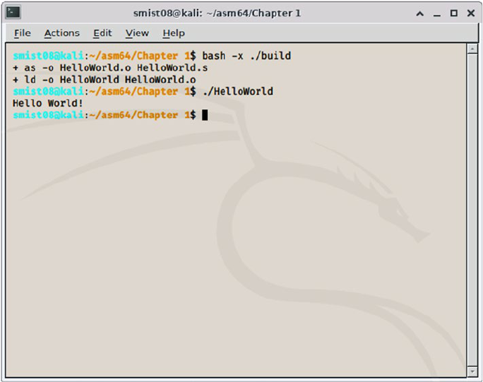
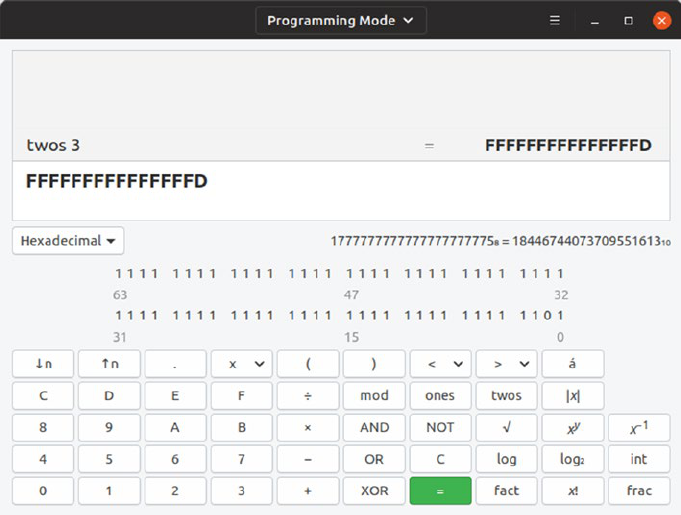
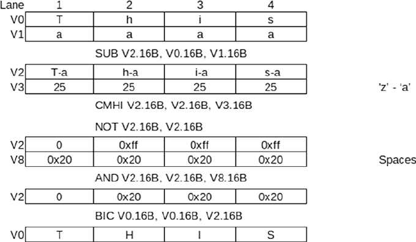

Programming with 64-Bit ARM Assembly Language: Single Board
Computer Development for Raspberry Pi and Mobile Devices
ISBN-13 (pbk): 978-1-4842-5880-4 ISBN-13 (electronic): 978-1-4842-5881-1
https://doi.org/10.1007/978-1-4842-5881-1
Copyright © 2020 by Stephen Smith
This work is subject to copyright. All rights are reserved by the Publisher, whether the whole
or part of the material is concerned, specifically the rights of translation, reprinting, reuse of
illustrations, recitation, broadcasting, reproduction on microfilms or in any other physical
way, and transmission or information storage and retrieval, electronic adaptation, computer
software, or by similar or dissimilar methodology now known or hereafter developed.
Trademarked names, logos, and images may appear in this book. Rather than use a
trademark symbol with every occurrence of a trademarked name, logo, or image we use the
names, logos, and images only in an editorial fashion and to the benefit of the trademark
owner, with no intention of infringement of the trademark.
The use in this publication of trade names, trademarks, service marks, and similar terms,
even if they are not identified as such, is not to be taken as an expression of opinion as to
whether or not they are subject to proprietary rights.
While the advice and information in this book are believed to be true and accurate at the
date of publication, neither the authors nor the editors nor the publisher can accept any
legal responsibility for any errors or omissions that may be made. The publisher makes no
warranty, express or implied, with respect to the material contained herein.
Managing Director, Apress Media LLC: Welmoed Spahr
Acquisitions Editor: Aaron Black
Development Editor: James Markham
Coordinating Editor: Jessica Vakili
Distributed to the book trade worldwide by Springer Science+Business Media NewYork,
233 Spring Street, 6th Floor, NewYork, NY 10013. Phone 1-800-SPRINGER, fax (201)
348-4505, e-mail orders-ny@springer-sbm.com, or visit www.springeronline.com. Apress
Media, LLC is a California LLC and the sole member (owner) is Springer Science + Business
Media Finance Inc (SSBM Finance Inc). SSBM Finance Inc is a Delaware corporation.
For information on translations, please e-mail rights@apress.com, or visit http://www.apress.
com/rights-permissions.
Apress titles may be purchased in bulk for academic, corporate, or promotional use. eBook
versions and licenses are also available for most titles. For more information, reference our
Print and eBook Bulk Sales web page at http://www.apress.com/bulk-sales.
Any source code or other supplementary material referenced by the author in this book is
available to readers on GitHub via the book’s product page, located at www.apress.com/
978-1-4842-5880-4. For more detailed information, please visit http://www.apress.com/
source-code.
Printed on acid-free paper
StephenSmith
Gibsons, BC, Canada
www.allitebooks.com
v
About the Author ������������������������������������������������������������������������������xvii
About the Technical Reviewer �����������������������������������������������������������xix
Acknowledgments �����������������������������������������������������������������������������xxi
Introduction �������������������������������������������������������������������������������������xxiii
Chapter 1: Getting Started ��������������������������������������������������������������������1
The Surprise Birth of the 64-Bit ARM ��������������������������������������������������������������������2
What You Will Learn ����������������������������������������������������������������������������������������������3
Why Use Assembly ������������������������������������������������������������������������������������������������ 3
Tools You Need ������������������������������������������������������������������������������������������������������ 6
Raspberry Pi 4 or NVidia Jetson Nano �������������������������������������������������������������6
Text Editor ��������������������������������������������������������������������������������������������������������7
Specialty Programs �����������������������������������������������������������������������������������������7
Computers and Numbers ��������������������������������������������������������������������������������������8
ARM Assembly Instructions ��������������������������������������������������������������������������������11
CPU Registers ������������������������������������������������������������������������������������������������ 12
ARM Instruction Format ���������������������������������������������������������������������������������13
Computer Memory �����������������������������������������������������������������������������������������16
About the GCC Assembler �����������������������������������������������������������������������������������17
Hello World ���������������������������������������������������������������������������������������������������������� 18
About Comments �������������������������������������������������������������������������������������������20
Where to Start �����������������������������������������������������������������������������������������������21
Table of Contents
www.allitebooks.com
vi
Assembly Instructions �����������������������������������������������������������������������������������22
Data ���������������������������������������������������������������������������������������������������������������22
Calling Linux ��������������������������������������������������������������������������������������������������23
Reverse Engineering Our Program ����������������������������������������������������������������24
Summary�������������������������������������������������������������������������������������������������������������26
Exercises �������������������������������������������������������������������������������������������������������������27
Chapter 2: Loading and Adding ����������������������������������������������������������29
Negative Numbers ����������������������������������������������������������������������������������������������29
About Two’s Complement ������������������������������������������������������������������������������29
About Gnome Programmer’s Calculator ��������������������������������������������������������31
About One’s Complement ������������������������������������������������������������������������������32
Big vs� Little Endian ��������������������������������������������������������������������������������������������33
About Bi-endian ���������������������������������������������������������������������������������������������34
Pros of Little Endian ��������������������������������������������������������������������������������������34
Shifting and Rotating ������������������������������������������������������������������������������������������35
About Carry Flag ��������������������������������������������������������������������������������������������36
About the Barrel Shifter ��������������������������������������������������������������������������������� 36
Basics of Shifting and Rotating ���������������������������������������������������������������������37
Loading Registers �����������������������������������������������������������������������������������������������38
Instruction Aliases �����������������������������������������������������������������������������������������39
MOV/MOVK/MOVN ������������������������������������������������������������������������������������������40
About Operand2 ���������������������������������������������������������������������������������������������42
MOVN ������������������������������������������������������������������������������������������������������������� 45
MOV Examples ����������������������������������������������������������������������������������������������� 46
ADD/ADC �������������������������������������������������������������������������������������������������������������50
Add with Carry �����������������������������������������������������������������������������������������������52
SUB/SBC��������������������������������������������������������������������������������������������������������������55
Table of ConTenTsTable of ConTenTs
vii
Summary�������������������������������������������������������������������������������������������������������������56
Exercises �������������������������������������������������������������������������������������������������������������56
Chapter 3: Tooling Up��������������������������������������������������������������������������59
GNU Make �����������������������������������������������������������������������������������������������������������59
Rebuilding a File �������������������������������������������������������������������������������������������� 60
A Rule for Building �s Files�����������������������������������������������������������������������������61
Defining Variables ������������������������������������������������������������������������������������������61
GDB ���������������������������������������������������������������������������������������������������������������������62
Preparing to Debug ����������������������������������������������������������������������������������������63
Beginning GDB �����������������������������������������������������������������������������������������������65
Cross-Compiling ��������������������������������������������������������������������������������������������������70
Emulation ������������������������������������������������������������������������������������������������������72
Android NDK ��������������������������������������������������������������������������������������������������������72
Apple XCode �������������������������������������������������������������������������������������������������������� 77
Source Control and Build Servers �����������������������������������������������������������������������82
Git ������������������������������������������������������������������������������������������������������������������82
Jenkins ����������������������������������������������������������������������������������������������������������83
Summary�������������������������������������������������������������������������������������������������������������84
Exercises �������������������������������������������������������������������������������������������������������������84
Chapter 4: Controlling Program Flow �������������������������������������������������87
Unconditional Branch ������������������������������������������������������������������������������������������ 87
About Condition Flags �����������������������������������������������������������������������������������������88
Branch on Condition ��������������������������������������������������������������������������������������������90
About the CMP Instruction ����������������������������������������������������������������������������������90
Loops ������������������������������������������������������������������������������������������������������������������92
FOR Loops �����������������������������������������������������������������������������������������������������92
While Loops ���������������������������������������������������������������������������������������������������93
Table of ConTenTsTable of ConTenTs
viii
If/Then/Else ��������������������������������������������������������������������������������������������������������� 94
Logical Operators ������������������������������������������������������������������������������������������������ 95
AND ����������������������������������������������������������������������������������������������������������������96
EOR ���������������������������������������������������������������������������������������������������������������� 96
ORR ����������������������������������������������������������������������������������������������������������������96
BIC �����������������������������������������������������������������������������������������������������������������97
Design Patterns ���������������������������������������������������������������������������������������������������97
Converting Integers to ASCII �������������������������������������������������������������������������������98
Using Expressions in Immediate Constants�������������������������������������������������102
Storing a Register to Memory ����������������������������������������������������������������������103
Why Not Print in Decimal? ��������������������������������������������������������������������������� 103
Performance of Branch Instructions �����������������������������������������������������������������104
More Comparison Instructions �������������������������������������������������������������������������� 105
Summary�����������������������������������������������������������������������������������������������������������106
Exercises �����������������������������������������������������������������������������������������������������������106
Chapter 5: Thanks for the Memories ������������������������������������������������109
Defining Memory Contents �������������������������������������������������������������������������������110
Aligning Data �����������������������������������������������������������������������������������������������114
Loading a Register with an Address �����������������������������������������������������������������114
PC Relative Addressing ��������������������������������������������������������������������������������115
Loading Data from Memory ������������������������������������������������������������������������������117
Indexing Through Memory ���������������������������������������������������������������������������119
Storing a Register ���������������������������������������������������������������������������������������������131
Double Registers ����������������������������������������������������������������������������������������������� 131
Summary�����������������������������������������������������������������������������������������������������������132
Exercises �����������������������������������������������������������������������������������������������������������133
Table of ConTenTsTable of ConTenTs
ix
Chapter 6: Functions and the Stack �������������������������������������������������135
Stacks on Linux �������������������������������������������������������������������������������������������������136
Branch with Link �����������������������������������������������������������������������������������������������138
Nesting Function Calls ��������������������������������������������������������������������������������������139
Function Parameters and Return Values �����������������������������������������������������������141
Managing the Registers ������������������������������������������������������������������������������������142
Summary of the Function Call Algorithm ����������������������������������������������������������143
Upper-Case Revisited ����������������������������������������������������������������������������������������144
Stack Frames ����������������������������������������������������������������������������������������������������148
Stack Frame Example ����������������������������������������������������������������������������������150
Macros ��������������������������������������������������������������������������������������������������������������151
Include Directive ������������������������������������������������������������������������������������������154
Macro Definition ������������������������������������������������������������������������������������������155
Labels ����������������������������������������������������������������������������������������������������������155
Why Macros? ����������������������������������������������������������������������������������������������� 156
Macros to Improve Code ������������������������������������������������������������������������������157
Summary�����������������������������������������������������������������������������������������������������������158
Exercises �����������������������������������������������������������������������������������������������������������158
Chapter 7: Linux Operating System Services �����������������������������������161
So Many Services ���������������������������������������������������������������������������������������������161
Calling Convention ��������������������������������������������������������������������������������������������162
Linux System Call Numbers �������������������������������������������������������������������������163
Return Codes ����������������������������������������������������������������������������������������������� 163
Structures ���������������������������������������������������������������������������������������������������� 164
Wrappers �����������������������������������������������������������������������������������������������������������165
Converting a File to Upper-Case �����������������������������������������������������������������������166
Table of ConTenTsTable of ConTenTs
x
Building �S Files �������������������������������������������������������������������������������������������170
Opening a File ����������������������������������������������������������������������������������������������172
Error Checking ��������������������������������������������������������������������������������������������� 172
Looping �������������������������������������������������������������������������������������������������������� 174
Summary�����������������������������������������������������������������������������������������������������������175
Exercises �����������������������������������������������������������������������������������������������������������176
Chapter 8: Programming GPIO Pins ��������������������������������������������������177
GPIO Overview ��������������������������������������������������������������������������������������������������177
In Linux, Everything Is a File �����������������������������������������������������������������������������178
Flashing LEDs ���������������������������������������������������������������������������������������������������179
Moving Closer to the Metal �������������������������������������������������������������������������������185
Virtual Memory ��������������������������������������������������������������������������������������������������185
In Devices, Everything Is Memory ��������������������������������������������������������������������� 186
Registers in Bits ������������������������������������������������������������������������������������������������ 188
GPIO Function Select Registers �������������������������������������������������������������������189
GPIO Output Set and Clear Registers �����������������������������������������������������������190
More Flashing LEDs ������������������������������������������������������������������������������������������191
Root Access �������������������������������������������������������������������������������������������������197
Table Driven �������������������������������������������������������������������������������������������������197
Setting Pin Direction ������������������������������������������������������������������������������������ 198
Setting and Clearing Pins ����������������������������������������������������������������������������199
Summary�����������������������������������������������������������������������������������������������������������200
Exercises �����������������������������������������������������������������������������������������������������������201
Chapter 9: Interacting with C and Python ����������������������������������������203
Calling C Routines ��������������������������������������������������������������������������������������������� 203
Printing Debug Information �������������������������������������������������������������������������204
Adding with Carry Revisited ������������������������������������������������������������������������209
Table of ConTenTsTable of ConTenTs
xi
Calling Assembly Routines from C ��������������������������������������������������������������������211
Packaging Our Code ������������������������������������������������������������������������������������������213
Static Library �����������������������������������������������������������������������������������������������214
Shared Library ��������������������������������������������������������������������������������������������� 215
Embedding Assembly Code Inside C Code �������������������������������������������������������� 218
Calling Assembly from Python ��������������������������������������������������������������������������221
Summary�����������������������������������������������������������������������������������������������������������223
Exercises �����������������������������������������������������������������������������������������������������������224
Chapter 10: Interfacing with Kotlin and Swift ����������������������������������225
About Kotlin, Swift, and Java ����������������������������������������������������������������������������225
Creating an Android App �����������������������������������������������������������������������������������226
Create the Project ���������������������������������������������������������������������������������������� 227
XML Screen Definition ���������������������������������������������������������������������������������230
Kotlin Main Program ������������������������������������������������������������������������������������ 233
The C++ Wrapper ����������������������������������������������������������������������������������������235
Building the Project �������������������������������������������������������������������������������������236
Creating an iOS App ������������������������������������������������������������������������������������������239
Create the Project ���������������������������������������������������������������������������������������� 240
Adding Elements to the Main Storyboard ���������������������������������������������������� 240
Adding Swift Code ���������������������������������������������������������������������������������������241
Adding our Assembly Language Routine ����������������������������������������������������� 244
Creating the Bridge ��������������������������������������������������������������������������������������245
Building and Running the Project ����������������������������������������������������������������246
Tips for Optimizing Apps �����������������������������������������������������������������������������������247
Summary�����������������������������������������������������������������������������������������������������������248
Exercises �����������������������������������������������������������������������������������������������������������248
Table of ConTenTsTable of ConTenTs
xii
Chapter 11: Multiply, Divide, and Accumulate ����������������������������������249
Multiplication ����������������������������������������������������������������������������������������������������249
Examples �����������������������������������������������������������������������������������������������������251
Division �������������������������������������������������������������������������������������������������������������255
Example ������������������������������������������������������������������������������������������������������� 256
Multiply and Accumulate�����������������������������������������������������������������������������������258
Vectors and Matrices ����������������������������������������������������������������������������������� 258
Accumulate Instructions ������������������������������������������������������������������������������260
Example 1 ���������������������������������������������������������������������������������������������������� 261
Summary�����������������������������������������������������������������������������������������������������������266
Exercises �����������������������������������������������������������������������������������������������������������267
Chapter 12: Floating-Point Operations ���������������������������������������������269
About Floating-Point Numbers �������������������������������������������������������������������������� 269
About Normalization and NaNs ��������������������������������������������������������������������271
Recognizing Rounding Errors ����������������������������������������������������������������������271
Defining Floating-Point Numbers ���������������������������������������������������������������������� 272
About FPU Registers �����������������������������������������������������������������������������������������273
Defining the Function Call Protocol �������������������������������������������������������������������274
Loading and Saving FPU Registers �������������������������������������������������������������������274
Performing Basic Arithmetic �����������������������������������������������������������������������������276
Calculating Distance Between Points ���������������������������������������������������������������277
Performing Floating-Point Conversions ������������������������������������������������������������281
Comparing Floating-Point Numbers ������������������������������������������������������������������282
Example ������������������������������������������������������������������������������������������������������� 283
Summary�����������������������������������������������������������������������������������������������������������288
Exercises �����������������������������������������������������������������������������������������������������������288
Table of ConTenTsTable of ConTenTs
xiii
Chapter 13: Neon Coprocessor ���������������������������������������������������������291
About the NEON Registers ��������������������������������������������������������������������������������291
Stay in Your Lane ����������������������������������������������������������������������������������������������292
Performing Arithmetic Operations ���������������������������������������������������������������������294
Calculating 4D Vector Distance �������������������������������������������������������������������������295
Optimizing 3x3 Matrix Multiplication ����������������������������������������������������������������300
Summary�����������������������������������������������������������������������������������������������������������305
Exercises �����������������������������������������������������������������������������������������������������������306
Chapter 14: Optimizing Code ������������������������������������������������������������307
Optimizing the Upper-Case Routine ������������������������������������������������������������������307
Simplifying the Range Comparison �������������������������������������������������������������308
Using a Conditional Instruction ��������������������������������������������������������������������311
Restricting the Problem Domain ������������������������������������������������������������������314
Using Parallelism with SIMD �����������������������������������������������������������������������317
Tips for Optimizing Code �����������������������������������������������������������������������������������321
Avoiding Branch Instructions �����������������������������������������������������������������������321
Avoiding Expensive Instructions ������������������������������������������������������������������ 322
Don’t Be Afraid of Macros ����������������������������������������������������������������������������323
Loop Unrolling ���������������������������������������������������������������������������������������������323
Keeping Data Small �������������������������������������������������������������������������������������323
Beware of Overheating ��������������������������������������������������������������������������������323
Summary�����������������������������������������������������������������������������������������������������������324
Exercises �����������������������������������������������������������������������������������������������������������324
Table of ConTenTsTable of ConTenTs
xiv
Chapter 15: Reading and Understanding Code ���������������������������������327
Browsing Linux and GCC Code �������������������������������������������������������������������������� 328
Copying a Page of Memory ��������������������������������������������������������������������������329
Code Created by GCC ����������������������������������������������������������������������������������������335
Using the CBNZ and CBZ Instructions ����������������������������������������������������������340
Reverse Engineering and Ghidra �����������������������������������������������������������������������340
Summary�����������������������������������������������������������������������������������������������������������345
Exercises �����������������������������������������������������������������������������������������������������������346
Chapter 16: Hacking Code ����������������������������������������������������������������347
Buffer Overrun Hack �����������������������������������������������������������������������������������������347
Causes of Buffer Overrun ���������������������������������������������������������������������������������� 347
Stealing Credit Card Numbers ���������������������������������������������������������������������������348
Stepping Through the Stack ������������������������������������������������������������������������351
Mitigating Buffer Overrun Vulnerabilities ����������������������������������������������������������354
Don’t Use strcpy ������������������������������������������������������������������������������������������355
PIE Is Good ���������������������������������������������������������������������������������������������������357
Poor Stack Canaries Are the First to Go �������������������������������������������������������358
Preventing Code Running on the Stack �������������������������������������������������������362
Trade-offs of Buffer Overflow Mitigation Techniques ���������������������������������������� 362
Summary�����������������������������������������������������������������������������������������������������������364
Exercises �����������������������������������������������������������������������������������������������������������365
Appendix A: The ARM Instruction Set �����������������������������������������������367
ARM 64-Bit Core Instructions ����������������������������������������������������������������������������367
ARM 64-Bit NEON and FPU Instructions ������������������������������������������������������������386
Table of ConTenTsTable of ConTenTs
xv
Appendix B: Binary Formats �������������������������������������������������������������401
Integers ������������������������������������������������������������������������������������������������������������� 401
Floating Point ����������������������������������������������������������������������������������������������������402
Addresses ���������������������������������������������������������������������������������������������������������403
Appendix C: Assembler Directives ����������������������������������������������������405
Appendix D: ASCII Character Set ������������������������������������������������������407
Answers to Exercises �����������������������������������������������������������������������419
Chapter 1 ���������������������������������������������������������������������������������������������������������� 419
Chapter 2 ���������������������������������������������������������������������������������������������������������� 419
Chapter 5 ���������������������������������������������������������������������������������������������������������� 420
Chapter 6 ���������������������������������������������������������������������������������������������������������� 420
Chapter 8 ���������������������������������������������������������������������������������������������������������� 420
Chapter 14 �������������������������������������������������������������������������������������������������������� 421
Index �������������������������������������������������������������������������������������������������423
Table of ConTenTsTable of ConTenTs
xvii
About the Author
Stephen Smithis also the author of the
Apress title Raspberry Pi Assembly Language
Programming. He is a retired Software
Architect, located in Gibsons, BC, Canada.
He’s been developing software since high
school, or way too many years to record. He
was the Chief Architect for the Sage 300 line
of accounting products for 23 years. Since
retiring, he has pursued artificial intelligence,
earned his Advanced HAM Radio License, and
enjoys mountain biking, hiking, and nature photography. He continues
to write his popular technology blog at smist08.wordpress.com and has
written two science fiction novels in the Influence series available on
Amazon.com.
xix
About the Technical Reviewer
Stewart Watkissis a keen maker and
programmer. He has a master’s degree in
electronic engineering from the University
of Hull and a master’s degree in computer
science from Georgia Institute of Technology.
He has over 20 years of experience in the
IT industry, working in computer networking,
Linux system administration, technical
support, and cyber security. While working
toward Linux certification, he created the web
site www.penguintutor.com. The web site originally provided information
for those studying toward certification but has since added information on
electronics, projects, and learning computer programming.
Stewart often gives talks and runs workshops at local Raspberry Pi
events. He is also a STEM Ambassador and Code Club volunteer helping to
support teachers and children learning programming.
xxi
Acknowledgments
No book is ever written in isolation. I want to especially thank my wife,
Cathalynn Labonté-Smith, for her support, encouragement, and expert
editing.
I want to thank all the good folk at Apress who made the whole process
easy and enjoyable. A special shout-out to Jessica Vakili, my coordinating
editor, who kept the whole project moving quickly and smoothly. Thanks
to Aaron Black, senior editor, who recruited me and got the project started.
Thanks to Stewart Watkiss, my technical reviewer, who helped make this a
far better book.
xxiii
Introduction
Everyone seems to carry a smartphone and/or a tablet. Nearly all of these
devices have one thing in common; they use an ARM central processing
unit (CPU). All of these devices are computers just like your laptop or
business desktop. The difference is that they need to use less power, in
order to function for at least a day on one battery charge, therefore the
popularity of the ARM CPU.
At the basic level, how are these computers programmed? What
provides the magical foundation for all the great applications (apps) that
run on them, yet use far less power than a laptop computer? This book
delves into how these are programmed at the bare metal level and provides
insight into their architecture.
Assembly Language is the native lowest level way to program a
computer. Each processing chip has its own Assembly Language. This
book covers programming the ARM 64-bit processor. If you really want to
learn how a computer works, learning Assembly Language is a great way to
get into the nitty-gritty details. The popularity and low cost of single board
computers (SBCs) like the Raspberry Pi and NVidia Jetson Nano provide
ideal platforms to learn advanced concepts in computing.
Even though all these devices are low powered and compact, they’re
still sophisticated computers with a multicore processor, floating-point
coprocessor, and a NEON parallel processing unit. What you learn about
any one of these is directly relevant to any device with an ARM processor,
which by volume is the number one processor on the market today.
xxiv
In this book, we cover how to program all these devices at the lowest
level, operating as close to the hardware as possible. You will learn the
following:
• The format of the instructions and how to put them
together into programs, as well as details on the binary
data formats they operate on
• How to program the floating-point processor, as well as
the NEON parallel processor
• About devices running Google’s Android, Apple’s iOS,
and Linux
• How to program the hardware directly using the
Raspberry Pi’s GPIO ports
The simplest way to learn this is with a Raspberry Pi running a 64-bit
flavor of Linux such as Kali Linux. This provides all the tools you need to
learn Assembly programming. There’s optional material that requires an
Apple Mac and iPhone or iPad, as well as optional material that requires an
Intel-based computer and an Android device.
This book contains many working programs that you can play with,
use as a starting point, or study. The only way to learn programming is by
doing, so don’t be afraid to experiment, as it is the only way you will learn.
Even if you don’t use Assembly programming in your day-to-day life,
knowing how the processor works at the Assembly level and knowing the
low-level binary data structures will make you a better programmer in
all other areas. Knowing how the processor works will let you write more
efficient C code and can even help you with your Python programming.
The book is designed to be followed in sequence, but there
are chapters that can be skipped or skimmed, for example, if you
aren’t interested in interfacing to hardware, you can skip Chapter 8,
“Programming GPIO Pins,” or Chapter 12, “Floating-Point Operations,” if
you will never do numerical computing.
InTroduCTIonInTroduCTIon
xxv
I hope you enjoy your introduction to Assembly Language. Learning
it for one processor family will help you with any other processor
architectures you encounter through your career.
Source Code Location
The source code for the example code in the book is located on the Apress
GitHub site at the following URL:
https://github.com/Apress/Programming-with-64-Bit-ARM- -
Assembly-Language
The code is organized by chapter and includes some answers to the
programming exercises.
InTroduCTIonInTroduCTIon
1
© Stephen Smith 2020
S. Smith, Programming with 64-Bit ARM Assembly Language,
https://doi.org/10.1007/978-1-4842-5881-1_1
CHAPTER 1
Getting Started
The ARM processor was originally developed by Acorn Computers in
Great Britain, who wanted to build a successor to the BBC Microcomputer
used for educational purposes. The BBC Microcomputer used the 6502
processor, which was a simple processor with a simple instruction set. The
problem was there was no successor to the 6502. The engineers working
on the Acorn computer weren’t happy with the microprocessors available
at the time, since they were much more complicated than the 6502, and
they didn’t want to make just another IBM PC clone. They took the bold
move to design their own and founded Advanced RISC Machines Ltd.
to do it. They developed the Acorn computer and tried to position it as
the successor to the BBC Microcomputer. The idea was to use reduced
instruction set computer (RISC) technology as opposed to complex
instruction set computer (CISC) as championed by Intel and Motorola.
We will talk at length about what these terms mean later.
Developing silicon chips is costly, and without high volumes,
manufacturing them is expensive. The ARM processor probably wouldn’t
have gone anywhere except that Apple came calling. They were looking
for a processor for a new device under development—the iPod. The key
selling point for Apple was that as the ARM processor was RISC, it used
less silicon than CISC processors and as a result used far less power. This
meant it was possible to build a device that ran for a long time on a single
battery charge.
2
The Surprise Birth ofthe64-Bit ARM
The early iPhones and Android phones were all based on 32-bit ARM
processors. At that time, even though most server and desktop operating
systems moved to 64 bits, it was believed that there was no need in the mobile
world for 64 bits. Then in 2013, Apple shocked the ARM world by introducing
the 64-bit capable A7 chip and started the migration of all iOS programs to
64 bits. The performance gains astonished everyone and caught all their
competitors flat footed. Now, all newer ARM processors support 64-bit
processing, and all the major ARM operating systems have moved to 64 bits.
Two benefits of ARM 64-bit programming are that ARM cleaned up
their instruction set and simplified Assembly Language programming.
They also adapted the code, so that it will run more efficiently on modern
processors with larger execution pipelines. There are still a lot of details
and complexities to master, but if you have experience in 32-bit ARM, you
will find 64-bit programming simpler and more consistent.
However, there is still a need for 32-bit processing, for instance,
Raspbian, the default operating system for the Raspberry Pi, is 32 bits,
along with several real-time and embedded systems. If you have 1GB of
memory or less, 32 bits is better, but once you have more than 1GB of RAM,
then the benefits of 64-bit programming become hard to ignore.
Unlike Intel, ARM doesn’t manufacture chips; it just licenses the
designs for others to optimize and manufacture. With Apple onboard,
suddenly there was a lot of interest in ARM, and several big manufacturers
started producing chips. With the advent of smartphones, the ARM chip
really took off and now is used in pretty much every phone and tablet. ARM
processors power some Chromebooks and even Microsoft’s Surface Pro X.
The ARM processor is the number one processor in the computer
market. Each year the ARM processors powering the leading-edge phones
become more and more powerful. We are starting to see ARM-based
servers used in datacenters, including Amazon’s AWS.There are several
ARM-based laptops and desktop computers in the works.
CHAPTER 1 GETTING STARTED
3
What YouWill Learn
You will learn Assembly Language programming for the ARM running in
64-bit mode. Everything you will learn is directly applicable to all ARM
devices running in 64-bit mode. Learning Assembly Language for one
processor gives you the tools to learn it for another processor, perhaps, the
forthcoming RISC-V, a new open source RISC processor that originated from
Berkeley University. The RISC-V architecture promises high functionality
and speed for less power and cost than an equivalent ARM processor.
In all devices, the ARM processor isn’t just a CPU; it’s a system on
a chip. This means that most of the computer is all on one chip. When
a company is designing a device, they can select various modular
components to include on their chip. Typically, this contains an ARM
processor with multiple cores, meaning that it can process instructions for
multiple programs running at once. It likely contains several coprocessors
for things like floating-point calculations, a graphics processing unit
(GPU), and specialized multimedia support. There are extensions available
for cryptography, advanced virtualization, and security monitoring.
Why Use Assembly
Most programmers write in a high-level programming language like
Python, C#, Java, JavaScript, Go, Julia, Scratch, Ruby, Swift, or C.These
highly productive languages are used to write major programs from
the Linux operating system to web sites like Facebook, to productivity
software like LibreOffice. If you learn to be a good programmer in a couple
of these, you can find a well-paying interesting job and write some great
programs. If you create a program in one of these languages, you can
easily get it working on numerous operating systems on multiple hardware
architectures. You never have to learn the details of all the bits and bytes,
and these can remain safely under the covers.
CHAPTER 1 GETTING STARTED
4
When you program in Assembly Language, you are tightly coupled to
a given CPU, and moving your program to another requires a complete
rewrite of your program. Each Assembly Language instruction does only
a fraction of the amount of work, so to do anything takes a lot of Assembly
statements. Therefore, to do the same work as, say, a Python program,
takes an order of magnitude larger amount of effort, for the programmer.
Writing in Assembly is harder, as you must solve problems with memory
addressing and CPU registers that is all handled transparently by high-
level languages. So why would you want to learn Assembly Language
programming? Here are ten reasons people learn and use Assembly
Language:
1. To write more efficient code: Even if you don’t
write Assembly Language code, knowing how the
computer works internally allows you to write
more streamlined code. You can make your data
structures easier to access and write code in a
style that allows the compiler to generate more
effective code. You can make better use of computer
resources, like coprocessors, and use the given
computer to its fullest potential.
2. To write your own operating system: The core of
the operating system that initializes the CPU and
handles hardware security and multithreading/
multitasking requires Assembly code.
3. To create a new programming language: If it is
a compiled language, then you need to generate
the Assembly code to execute. The quality and
speed of your language is largely dependent on the
quality and speed of the Assembly Language code it
generates.
CHAPTER 1 GETTING STARTED
5
4. To make your computer run faster: The best way to
make Linux faster is to improve the GNU C compiler.
If you improve the ARM 64-bit Assembly code
produced by GNU C, then every program compiled
by GCC benefits.
5. To interface your computer to a hardware
device: When interfacing your computer through
USB or GPIO ports, the speed of data transfer is
highly sensitive as to how fast your program can
process the data. Perhaps, there are a lot of bit
level manipulations that are easier to program in
Assembly.
6. To do faster machine learning or three-
dimensional (3D) graphics programming: Both
applications rely on fast matrix mathematics. If you
can make this faster with Assembly and/or using
the coprocessors, then you can make your AI-based
robot or video game that much better.
7. To boost performance: Most large programs
have components written in different languages.
If your program is 99% C++, the other 1% could
be Assembly, perhaps giving your program a
performance boost or some other competitive
advantage.
8. To manage single board computer competitors
to the Raspberry Pi: These boards have some
Assembly Language code to manage peripherals
included with the board. This code is usually called
a BIOS (basic input/output system).
CHAPTER 1 GETTING STARTED
6
9. To look for security vulnerabilities in a program
or piece of hardware: Look at the Assembly code to
do this; otherwise you may not know what is really
going on and hence where holes might exist.
10. To look for Easter eggs in programs: These are
hidden messages, images, or inside jokes that
programmers hide in their programs. They are
usually triggered by finding a secret keyboard
combination to pop them up. Finding them requires
reverse engineering the program and reading
Assembly Language.
Tools YouNeed
The best way to learn programming is by doing. The easiest way to play
with 64-bit ARM Assembly Language is with an inexpensive single board
computer (SBC) like the Raspberry Pi or NVidia Jetson Nano. We will
cover developing for Android and iOS, but these sections are optional.
In addition to a computer, you will need
• A text editor
• Some optional specialty programs
Raspberry Pi 4 or NVidia Jetson Nano
The Raspberry Pi 4 with 4GB of RAM is an excellent computer to run 64-bit
Linux. If you use a Raspberry Pi 4, then you need to download and install
a 64-bit version of Linux. These are available from Kali, Ubuntu, Gentoo,
Manjaro, and others. I find Kali Linux works very well and will be using
it to test all the programs in this book. You can find the Kali Linux
downloads here: www.offensive-security.com/kali-linux-arm-images/.
CHAPTER 1 GETTING STARTED
7
Although you can run 64-bit Linux on a Raspberry Pi 3 or a Raspberry Pi
4 with 1GB of RAM, I find these slow and bog down if you run too many
programs. I wouldn’t recommend these, but you can use them in a pinch.
The NVidia Jetson Nano uses 64-bit Ubuntu Linux. This is an excellent
platform for learning ARM 64-bit Assembly Language. The Jetson Nano
also has 128 CUDA graphics processing cores that you can play with.
One of the great things about the Linux operating system is that
it is intended to be used for programming and as a result has many
programming tools preinstalled, including
• GNU Compiler Collection (GCC) that we will use to
build our Assembly Language programs. We will use
GCC for compiling C programs in later chapters.
• GNU Make to build our programs.
• GNU Debugger (GDB) to find and solve problems in
our programs.
Text Editor
You will need a text editor to create the source program files. Any text
editor can be used. Linux usually includes several by default, both
command line and via the GUI.Usually, you learn Assembly Language
after you’ve already mastered a high-level language like C or Java. So,
chances are you already have a favorite editor and can continue to use it.
Specialty Programs
We will mention other helpful programs throughout the book that you can
optionally use, but aren’t required, for example:
• The Android SDK
• Apple’s XCode IDE
CHAPTER 1 GETTING STARTED
8
• A better code analysis tool, like Ghidra, which we will
discuss in Chapter 15, “Reading and Understanding Code”
All of these are either open source or free, but there may be some
restrictions on where you can install them.
Now we will switch gears to how computers represent numbers. We
always hear that computers only deal in zeros and ones; now we’ll look at
how they put them together to represent larger numbers.
Computers andNumbers
We typically represent numbers using base 10. The common theory is we
do this, because we have ten fingers to count with. This means a number
like 387 is really a representation for
387 = 3 * 10
2
+ 8 * 10
1
+ 7 * 10
0
= 3 * 100 + 8 * 10 + 7
= 300 + 80 + 7
There is nothing special about using 10 as our base, and a fun exercise in
math class is to do arithmetic using other bases. In fact, the Mayan culture
used base 20, perhaps because we have 20 digits: ten fingers and ten toes.
Computers don’t have fingers and toes; rather, everything is a switch
that is either on or off. As a result, computers are programmed to use base
2 arithmetic. Thus, a computer recognizes a number like 1011 as
1011 = 1 * 2
3
+ 0 * 2
2
+ 1 * 2
1
+ 1 * 2
0
= 1 * 8 + 0 * 4 + 1 * 2 + 1
= 8 + 0 + 2 + 1
= 11 (decimal)
This is extremely efficient for computers, but we are using four digits
for the decimal number 11 rather than two digits. The big disadvantage for
humans is that writing, or even keyboarding, binary numbers is tiring.
CHAPTER 1 GETTING STARTED
9
Computers are incredibly structured, with their numbers being the
same size in storage used. When designing computers, it doesn’t make
sense to have different sized numbers, so a few common sizes have taken
hold and become standard.
A byte is 8 binary bits or digits. In our preceding example with 4 bits,
there are 16 possible combinations of 0s and 1s. This means 4 bits can
represent the numbers 0 to 15. This means it can be represented by one
base 16 digit. Base 16 digits are represented by the numbers 0–9 and then
the letters A–F for 10–15. We can then represent a byte (8 bits) as two base
16 digits. We refer to base 16 numbers as hexadecimal (Figure1-1).
Since a byte holds 8 bits, it can represent 2
8
(256) numbers. Thus, the
byte e6 represents
e6 = e * 16
1
+ 6 * 16
0
= 14 * 16 + 6
= 230 (decimal)
= 1110 0110 (binary)
We call a 32-bit quantity a word and it is represented by 4 bytes. You
might see a string like B6 A4 44 04 as a representation of 32 bits of memory,
or one word of memory, or the contents of one register. Even though we
are running 64 bits, the ARM reference documentation refers to a word as
32 bits, a halfword is 16 bits, and a doubleword is 64 bits. We will see this
terminology throughout this book and the ARM documentation.
If this is confusing or scary, don’t worry. The tools will do all the
conversions for you. It’s just a matter of understanding what is presented to
you on screen. Also, if you need to specify an exact binary number, usually
you do so in hexadecimal, although all the tools accept all the formats.
Figure 1-1. Representing hexadecimal digits
CHAPTER 1 GETTING STARTED
10
A handy tool is the Linux Gnome calculator (Figure1-2). The Gnome
calculator has a nice programming mode which shows a number’s
representation in multiple bases at once. This calculator is installed in
Ubuntu Linux, if you are running the Gnome desktop. However, if you
don’t have it, it is easy to add. If you are running a Debian-derived Linux
like Ubuntu or Kali, to install it, use the command line:
sudo apt-get install gnome-calculator
Run it from the Accessories menu. If you put it in “Programmer Mode,”
you can do the conversions, and it shows you numbers in several formats
at once.
Figure 1-2. The Gnome calculator
CHAPTER 1 GETTING STARTED
11
This is how we represent computer memory. There is a bit more
complexity in how signed integers are represented and how arithmetic
works. We’ll cover this in Chapter 2, “Loading and Adding.”
In the Assembler we represent hexadecimal numbers (hex for short)
with a 0x in front, so 0x1B is how to specify the hex number 1B.
ARM Assembly Instructions
In this section, we introduce some basic architectural elements of the ARM
processor and start to look at the form of its machine code instructions.
The ARM is what is called a RISC computer, which theoretically will make
learning Assembly easier. There are fewer instructions and each one is
simple, so the processor can execute each instruction quickly.
In the first few chapters of this book, we will cover the 64-bit standard
ARM Assembly instructions. This means that the following topics are
deferred to later chapters where they can be covered in detail without
introducing too much confusion:
• Interacting with other programming languages
• Accessing hardware devices
• Instructions for the floating-point processor
• Instructions for the NEON processor
In technical computer topics, there are often chicken and egg
problems in presenting the material. The purpose of this section is
to introduce all the terms and ideas we will use later. Hopefully, this
introduces all the terms, so they are familiar when we cover them in full
detail.
CHAPTER 1 GETTING STARTED
12
CPU Registers
In all computers, data is not operated in the computer’s memory; instead
it’s loaded into a CPU register, then the data processing or arithmetic
operation is performed in the registers. The registers are part of the
CPU circuitry allowing instant access, whereas memory is a separate
component and there is a transfer time for the CPU to access it.
The ARM processor is based on a load-store architecture where there
are two basic types of instructions:
1. Instructions that either load memory into registers
or instructions that store data from registers into
memory
2. Instructions that perform arithmetical or logical
operations between two registers
If you want to add two numbers, you might do the following:
1. Load one into one register and the other into
another register.
2. Perform the add operation putting the result into a
third register.
3. Copy the answer from the results register into
memory.
As you can see, it takes quite a few instructions to perform simple
operations.
A 64-bit program on an ARM processor in user mode has access to 31
general-purpose registers, a program counter (PC), and a combination
zero register/stack pointer:
• X0–X30: These 31 registers are general purpose; you
can use them for anything you like, though some have
standard agreed-upon usage that we will cover later.
CHAPTER 1 GETTING STARTED
13
• SP, XZR: The stack pointer or zero register depending
on the context.
• X30, LR: The link register. If you call a function, this
register will be used to hold the return address. As this
is a common operation, you should avoid using this
register for other things.
• PC: The program counter. The memory address of the
currently executing instruction.
We don’t always need the full 64 bits of data in a register. Often 32 bits
is fine. All the X registers can be operated on as 32-bit registers by referring
to them as W0–W30 and WZR. When we do this, the instruction will use
the lower 32 bits of the register and set the upper 32 bits to zero. Using 32
bits saves memory, since you only use 4 bytes rather than 8 bytes for each
quantity saved. Most loop counters and other common variables used in
programming easily fit in 4 bytes, so this is made easy by the processor.
There are a large set of registers for the coprocessors, but we’ll cover
these when we get to programming these coprocessors in Chapter 12,
“Floating-Point Operations,” and Chapter 13, “Neon Coprocessor.”
ARM Instruction Format
Each ARM binary instruction is 32 bits long. Fitting all the information
for an instruction into 32 bits is quite an accomplishment requiring using
every bit to tell the processor what to do. There are quite a few instruction
formats, and it can be helpful to know how the bits for each instruction are
packed into 32 bits. Since there are 32 registers (the 31 general-purpose
registers plus the stack pointer (SP)/zero register (XZR)), it takes 5 bits to
specify a register. Thus, if you need three registers, then 15 bits is taken up
specifying these.
CHAPTER 1 GETTING STARTED
14
Having small fixed length instructions allows the ARM processor to
load multiple instructions quickly. It doesn’t need to start decoding an
instruction to know how long it is and hence where the next instruction
starts. This is a key feature to allowing processing parallelism and
efficiency.
Each instruction that takes registers can either use the 32-bit W version
or the 64-bit Z version. To specify which is the case, the high bit of each
instruction specifies how we are viewing the registers.
Note All the registers in a single instruction need to be the same—
you can’t mix W and Z registers.
To give you an idea for data processing instructions, let’s consider the
format for a common class of instructions that we’ll deal with early on.
Figure1-3 shows the format of the instruction and what the bits specify.
Let’s look at each of these fields:
• Bits: If this bit is zero, then any registers are interpreted
as the 32-bit W version. If this bit is one, then they are
the full 64-bit X version of the register.
• Opcode: Which instruction are we performing, like
ADD or MUL.
• Shift: These two bits specify shifting operations that
could be applied to the data.
Figure 1-3. Instruction format for data processing instructions
CHAPTER 1 GETTING STARTED
15
• Set condition code: This is a single bit indicating if
this instruction should update any condition flags. If
we don’t want the result of this instruction to affect
following branch instructions, we would set it to 0.
• Rm, Rn: Operand registers to use as input.
• Rd (destination register): Where to put the result of
whatever this instruction does.
• Imm6: An immediate operand which is usually a
small bit of data that you can specify directly in the
instruction. So, if you want to add 1 to a register, you
could have this as 1, rather than putting 1in another
register and adding the two registers. These are usually
the bits left over after everything else is specified.
When things are running well, each instruction executes in one clock
cycle. An instruction in isolation takes three clock cycles, namely, one to
load the instruction from memory, one to decode the instruction, and
then one to execute the instruction. The ARM is smart and works on three
instructions at a time, each at a different step in the process, called the
instruction pipeline. If you have a linear block of instructions, they all
execute on average taking one clock cycle.
In modern ARM processors, the execution pipeline is much more
sophisticated and can be working on more than three instructions at
a time. Some instructions like integer division take longer, and if the
following instructions don’t rely on the result, then these instructions can
execute in parallel to the division process. Other instructions might stall,
for instance, when waiting for memory to be loaded, again the process
can perform other instructions that don’t depend on the result while
the memory controller fetches the memory—this is called out-of-order
execution.
CHAPTER 1 GETTING STARTED
16
Computer Memory
Programs are loaded from the computer’s disk drive device into memory
and executed. The memory holds the program, along with any data or
variables associated with it. This memory isn’t as fast as the CPU registers,
but it’s much faster than accessing data stored on an SSD drive or CF card.
We’ve talked a lot about 64-bit mode, but what is it? What 64-bit mode
really means is
• Memory addresses are specified using 64 bits.
• The CPU registers are each 64 bits wide and perform
64-bit integer arithmetic.
Instructions are 32 bits in size. The intent is to keep these as small as
possible, so the ARM processor can execute them quickly and efficiently.
This is true when the ARM processor runs in either 32-bit or 64-bit mode.
If we want to load a register from a known 64-bit memory address,
for example, a variable we will use in a computation, how do we do this?
The instruction is only 32 bits in size, and we’ve already used 8 bits for the
opcode. We need 5 bits to specify one register, so we have left 19 bits for the
memory address (14 bits if we needed to list two registers).
This is a problem that we’ll come back to several times, since there are
multiple ways to address it. In a CISC computer, this isn’t a problem since
instructions are typically quite large and variable in length.
You can load from memory by using a register to specify the address to
load. This is called indirect memory access. But all we’ve done is move the
problem, since we don’t have a way to put the value into that register (in a
single instruction).
You could load several registers, each with part of the address,
then shift the parts around, and then add them together. This is a lot of
instructions to load an address, which seems rather inefficient.
CHAPTER 1 GETTING STARTED
17
The quick way to load memory that isn’t too far away from the program
counter (PC) register is to use the load instruction via the PC, since it
allows a 12-bit offset from the register. This looks like you can efficiently
access memory within 4096 words of the PC. Yuck, how would you write
such code? This is where the GNU Assembler comes in. It lets you specify
the location symbolically and will figure out the offset for you.
In Chapter 2, “Loading and Adding,” we will look at the immediate
operand in more detail. We will cover many more ways to specify memory
addresses in future chapters, like asking Linux to give us a block of
memory, returning the address in a register for us. For now, using the PC
with an offset meets our needs.
About theGCC Assembler
Writing Assembler code in binary as 32-bit instructions would be painfully
tedious. Enter GNU Assembler which gives you the power to specify
everything that the ARM CPU can do but takes care of getting all the bits in
the right place for you. The general way you specify Assembly instructions is
label: opcode operands
The label: part is optional and only required if you want the instruction
to be the target of a branch instruction.
There are quite a few opcodes; each one is a short mnemonic that is
human readable and easy for the Assembler to process. They include
• ADD for addition
• LDR for load a register
• B for branch
There are quite a few different formats for the operands. We will cover
those as we cover the instructions that use them.
CHAPTER 1 GETTING STARTED
18
Hello World
In almost every programming book, the first program is a simple program
to output the string “Hello World.” We will do the same with Assembly to
demonstrate some of the concepts we’ve been talking about. In our favorite
text editor, let’s create a file “HelloWorld.s” containing the code in Listing 1-1.
Listing 1-1. The Hello World program
//
// Assembler program to print "Hello World!"
// to stdout.
//
// X0-X2 - parameters to Linux function services
// X8 - Linux function number
//
.global _start // Provide program starting address
// Setup the parameters to print hello world
// and then call Linux to do it.
_start: mov X0, #1 // 1 = StdOut
ldr X1, =helloworld // string to print
mov X2, #13 // length of our string
mov X8, #64 // Linux write system call
svc 0 // Call Linux to output the string
// Setup the parameters to exit the program
// and then call Linux to do it.
mov X0, #0 // Use 0 return code
mov X8, #93 // Service code 93 terminates
svc 0 // Call Linux to terminate
.data
helloworld: .ascii "Hello World!\n"
CHAPTER 1 GETTING STARTED

19
This is our first look at a complete Assembly Language program, so there
are a few things to talk about. But, first, let’s compile and run this program.
In our text editor, create a file called “build” that contains
as -o HelloWorld.o HelloWorld.s
ld -o HelloWorld HelloWorld.o
These are the commands to compile our program. First, we must make
this file executable using the terminal command:
chmod +x build
Now, we can run it by typing ./build. If the files are correct, we can
execute our program by typing ./HelloWorld. In Figure1-4, I used bash -x
(debug mode), so you can see the commands being executed.
Figure 1-4. Building and executing HelloWorld
CHAPTER 1 GETTING STARTED
20
If we run “ls -l”, then the output is
-rw-r--r-- 1 smist08 smist08 62 qad 18 17:31 build
-rwxr-xr-x 1 smist08 smist08 1104 kax 10 16:49 HelloWorld
-rw-r--r-- 1 smist08 smist08 936 kax 10 16:49 HelloWorld.o
-rw-r--r-- 1 smist08 smist08 826 kax 5 22:32 HelloWorld.s
Notice how small these files are. The executable is only 1104 bytes, about
1 kilobyte. This is because there is no runtime, or any other libraries required
to run this program; it is entirely complete in itself. If you want to create very
small executables, Assembly Language programming is the way to go.
The format for this program is a common convention for Assembly
Language programs where each line is divided into these four columns:
• Optional statement label
• Opcode
• Operands
• Comment
These are all separated by tabs, so they line up nicely.
Yay, our first working Assembly Language program. Now, let’s talk
about all the parts.
About Comments
We start the program with a comment that states what it does. We also
document the registers used. Keeping track of which registers are doing
what becomes important as our programs get bigger.
• Whenever you see double slashes //, then everything
after the “//” is a comment. That means it is there for
documentation and is discarded by the GNU Assembler
when it processes the file.
CHAPTER 1 GETTING STARTED
21
• Assembly Language is cryptic, so it’s important to
document what you are doing. Otherwise, you will
return to the program after a couple of weeks and have
no idea what the program does.
• Each section of the program has a comment stating
what it does and then each line of the program has a
comment at the end stating what it does. Everything
between a /∗ and ∗/ is also a comment and will be
ignored.
• This is the same as comments in C/C++ code. This
allows us to share some tools between C and Assembly
Language.
Where toStart
Next, we specify the starting point of our program:
• We need to define this as a global symbol, so that the
linker (the ld command in our build file) has access
to it. The Assembler marks the statement containing
_start as the program entry point; then the linker can
find it because it has been defined as a global variable.
All our programs will contain this somewhere.
• Our program can consist of multiple .s files, but only
one file can contain _start.
CHAPTER 1 GETTING STARTED
22
Assembly Instructions
We only use three different Assembly Language statements in this
example:
1. MOV, which moves data into a register. In this case
we use an immediate operand, which starts with
the “#” sign. So “MOV X2, #13” means move the
number 13 into X2. In this case, the 13 is part of
the instruction and not stored somewhere else in
memory. In the source file, the operands can be
upper- or lower-case. I tend to prefer lower- case in
my program listings.
2. “LDR X1, =helloworld” statement that loads register
X1 with the address of the string we want to print.
3. SVC 0 command that executes software interrupt
number 0. This branches to the interrupt handler in
the Linux kernel, which interprets the parameters
we’ve set in various registers and does the actual work.
Data
Next, we have .data that indicates the following instructions in the data
section of the program:
• In this we have a label “helloworld” followed by an
.ascii statement, then the string we want to print.
• The .ascii statement tells the Assembler just to put
our string in the data section; then we can access it
via the label as we do in the LDR statement. We’ll talk
later about how text is represented as numbers, the
encoding scheme here being called ASCII.
CHAPTER 1 GETTING STARTED
23
• The last “\n” character is how we represent a new line.
If we don’t include this, you must press Return to see
the text in the terminal window.
Calling Linux
This program makes two Linux system calls to do its work. The first is the
Linux write to file command (#64). Normally, we would have to open a file
first before using this command, but when Linux runs a program, it opens
three files for it:
1. stdout (output to the screen)
2. stdin (input from the keyboard)
3. stderr (also output to the screen)
The Linux shell will redirect these when you use >, <, and | in your
commands. For any Linux system call, you put the parameters in registers
X0–X7 depending on how many parameters are needed. Then a return
code is placed in X0 (we should check this to see if an error occurred, but
we are bad and don’t do any error checking). Each system call is specified
by putting its function number in X8.
The reason we do a software interrupt rather than a branch or
subroutine call is so we can call Linux without needing to know where this
routine is in memory. This is rather clever and means we don’t need to
change any addresses in our program as Linux is updated and its routines
move around in memory. The software interrupt has another benefit of
providing a standard mechanism to switch privilege levels. We’ll discuss
Linux system calls later in Chapter 7, “Linux Operating System Services.”
CHAPTER 1 GETTING STARTED
24
Reverse Engineering Our Program
We talked about how each Assembly instruction is compiled into a 32-bit
word. The Assembler did this for us, but can we see what it did? One way is
to use the objdump command line program:
objdump -s -d HellowWorld.o
which produces Listing 1-2.
Listing 1-2. Disassembly of Hello World
HelloWorld.o: file format elf64-littleaarch64
Contents of section .text:
0000 200080d2 e1000058 a20180d2 080880d2 ......X........
0010 010000d4 000080d2 a80b80d2 010000d4 ................
0020 00000000 00000000 ........
Contents of section .data:
0000 48656c6c 6f20576f 726c6421 0a Hello World!.
Disassembly of section .text:
0000000000000000 <_start>:
0: d2800020 mov x0, #0x1 // #1
4: 580000e1 ldr x1, 20 <_start+0x20>
8: d28001a2 mov x2, #0xd // #13
c: d2800808 mov x8, #0x40 // #64
10: d4000001 svc #0x0
14: d2800000 mov x0, #0x0 // #0
18: d2800ba8 mov x8, #0x5d // #93
1c: d4000001 svc #0x0
CHAPTER 1 GETTING STARTED
25
The top part of the output shows the raw data in the file including our
eight instructions, then our string to print in the .data section. The second
part is a disassembly of the executable .text section.
Let’s look at the first MOV instruction which compiled to 0xd2800020
(Figure1-5).
• The first bit is 1, meaning use the 64-bit version of the
registers, in this case X0 rather than W0.
• The third bit is 0, which means that this instruction
doesn’t set any flags that would affect conditional
instructions.
• The second bit combined with the fourth to ninth bits
make up the opcode for this MOV instruction. This is
move wide immediate, meaning it contains a 16-bit
immediate value.
• The next 2 bits of 0 indicate there is no shift operation
involved.
• The next 16 bits are the immediate value which is 1.
• The last 5 bits are the register to load. These are 0 since
we are loading register X0.
Look at the LDR instruction; it changed from
ldr X1, =helloworld
to
ldr x1, 20 <_start+0x20>
Figure 1-5. Binary representation of the first MOV instruction
CHAPTER 1 GETTING STARTED
26
This is the Assembler helping you with the ARM processor’s obscure
mechanism of addressing memory. It lets you specify a symbolic address,
namely, “helloworld,” and translate that into an offset from the program
counter. Here the disassembler is trying to be helpful to indicate which
memory address will be loaded, rather than the exact Assembly code.
The details are a bit more complicated, and we’ll cover them in detail in
Chapter 5, “Thanks for the Memories.”
You might notice that the raw instructions in the top part of the output
have their bytes reversed, compared to those listed in the disassembly
listing. This is because we are using a little-endian encoding, which we will
cover in the next chapter.
Summary
In this chapter, we introduced the ARM processor and Assembly Language
programming along with why we want to use Assembly. We covered the
tools we will be using. We also saw how computers represent positive
integers.
We then looked at in more detail how the ARM CPU represents
Assembly instructions along with the registers it contains for processing
data. We introduced both the computer’s memory and the GNU Assembler
that will assist us in writing our Assembly Language programs.
Finally, we created a simple complete program to print “Hello World!”
in our terminal window.
In Chapter 2, “Loading and Adding,” we will look at loading data into
the CPU registers and performing basic addition. We’ll see how negative
numbers are represented and learn new techniques for manipulating
binary bits.
CHAPTER 1 GETTING STARTED
27
Exercises
1. Convert the decimal number 1234 to both binary
and hexadecimal.
2. Download the source code for this book from the
GitHub site and compile the HelloWorld program
on your ARM system.
3. Change the string in HelloWorld, but remember to
change the length loaded into X2.
4. In the HelloWorld program, change the return code
loaded into X0 before the second SVC call and see
what happens.
5. Since HelloWorld is a standard Linux program
using standard Linux conventions, you can use it
with other shell commands. Try redirecting the
output to a file with “./HelloWorld > myfile.txt” and
piping the output to another Linux command such
as “./HelloWorld | grep -I wor”.
6. Estimate how many Assembly Language commands
are in a 32K executable. The Linux kernel is about
5.1MB in size. If the Linux kernel was written in
Assembly Language, how many instructions would
that be?
CHAPTER 1 GETTING STARTED
29
© Stephen Smith 2020
S. Smith, Programming with 64-Bit ARM Assembly Language,
https://doi.org/10.1007/978-1-4842-5881-1_2
CHAPTER 2
Loading andAdding
In this chapter, we will go slowly through the MOV and ADD instructions
to lay the groundwork on how they work, especially in the way they handle
parameters (operands), so that, in the following chapters, we can proceed
at a faster pace as we encounter the rest of the ARM instruction set.
Before getting into the MOV and ADD instructions, we will discuss
the representation of negative numbers and the concepts of shifting and
rotating bits.
Negative Numbers
In the previous chapter, we discussed how computers represent positive
integers as binary numbers, called unsigned integers, but what about
negative numbers? Our first thought might be to make one bit represent
whether the number is positive or negative. This is simple, but it turns out
it requires extra logic to implement, since now the CPU must look at the
sign bits, then decide whether to add or subtract and in which order.
It turns out there is a simple representation of negative numbers that
works without any special cases or special logic; it is called two’s complement.
About Two’s Complement
The great mathematician John von Neumann, of the Manhattan Project,
came up with the idea of the two’s complement representation for
negative numbers, in 1945, when working on the Electronic Discrete
30
Variable Automatic Computer (EDVAC) computer—one of the earliest
electronic computers.
Two’s complement came about by observing how addition overflows.
Consider a 1-byte hexadecimal number like 01. If we add
0x01 + 0xFF = 0x100
(all binary ones) we get 0x100.
However, if we are limited to 1-byte numbers, then the 1 is lost and we
are left with 00:
0x01 + 0xFF = 0x00
The mathematical definition of a number’s negative is a number that
when added to it makes zero; therefore, mathematically, FF is -1. You can
get the two’s complement form for any number by taking
2
N
- number
where N is the number of bits in our integer. In our example, the two’s
complement of 1 is
2
8
- 1 = 256 - 1 = 255 = 0xFF
This is why it’s called two’s complement. An easier way to calculate the
two’s complement is to change all the 1s to 0s and all the 0s to 1s and then
add 1. If we do that to 1, we get
0xFE + 1 = 0xFF
Two’s complement is an interesting mathematical oddity for integers,
which are limited to having a maximum value of one less than a power of
two (which is all computer representations of integers).
Why would we want to represent negative integers this way on
computers? As it turns out, this makes addition simple for the computer
to execute. Adding signed integers is the same as adding unsigned
integers. There are no special cases, all you do is discard the overflow, and
CHAPTER 2 LOADING ANDADDING

31
everything works out. This means less circuitry is required to perform the
addition, and as a result, it can be performed faster. Consider
5 + -3
3in 1 byte is 0x03 or 0000 0011.
Inverting the bits is
1111 1100
Add 1 to get
1111 1101 = 0xFD
Now add
5 + 0xFD = 0x102 = 2
since we are limited to 1 byte or 8 bits.
Performing these computations by hand is educational, but practically
a tool to do this would be handy.
About Gnome Programmer’s Calculator
Fortunately, we have computers to do the conversions and arithmetic for
us, but when we see signed numbers in memory, we need to recognize
what they are. The Gnome programmer’s calculator can calculate
two’s complement for you. Figure2-1 shows the Gnome calculator
representing -3.
Note The Gnome programmer’s calculator uses 64-bit
representations.
CHAPTER 2 LOADING ANDADDING

32
Two’s complement is the standard representation of negative integers;
however, just reversing all the bits does have its uses.
About One’s Complement
If we don’t add 1, and just change all the 1s to 0s and vice versa, then this is
called one’s complement. There are uses for the one’s complement form,
and we will encounter it in how some instructions process their operands.
Now let’s return to the order the bytes that make up an integer are
stored in memory.
Figure 2-1. The Gnome programmer’s calculator calculating the
two’s complement of 3
CHAPTER 2 LOADING ANDADDING
33
Big vs. Little Endian
At the end of Chapter 1, “Getting Started,” we saw that the words of our
compiled program had their bytes stored in the reverse order to what
we might expect they should be stored as. In fact, if we look at a 32-bit
representation of 1 stored in memory, it is
01 00 00 00
rather than
00 00 00 01
Most processors pick one format, or the other to store numbers.
Motorola and IBM mainframes use what is called big endian, where
numbers are stored in the order of most significant digit to least significant
digit, in this case
00 00 00 01
Intel processors use little-endian format and store the numbers in
reverse order with the least significant digit first, namely:
01 00 00 00
Figure 2-2 shows how the bytes in integers are copied into memory
in both little- and big-endian formats. Notice how the bytes end up in the
reverse order to each other.
CHAPTER 2 LOADING ANDADDING
34
The designers of the ARM processor didn’t want to take sides in the
little- vs. big-endian debate, so they made the ARM processor support
both.
About Bi-endian
The ARM CPU is called bi-endian, because it can do either. Most ARM-
based computers use little-endian format. This includes all the systems
we’ll cover in this book.
Now let’s look at why most ARM-based computers use little vs. big
endian.
Pros ofLittle Endian
The advantage of little-endian format is that it makes it easy to change
the size of integers, without requiring any address arithmetic. If you want
to convert a 4-byte integer to a 1-byte integer, you take the first byte.
Assuming the integer is in the range of 0–255, and the other three bytes are
zero. For example, if memory contains the 4 bytes or word for 1, in little
endian, the memory contains
01 00 00 00
Figure 2-2. How integers are stored in memory in little- vs. big-
endian format
CHAPTER 2 LOADING ANDADDING

35
If we want the 1-byte representation of this number, we take the first
byte; for the 16-bit representation, we take the first two bytes. The key
point is that the memory address we use is the same in all cases, saving us
an instruction cycle adjusting it.
When we are in the debugger, we will see more representations, and
these will be pointed out again as we run into them.
Note Even though Linux uses little endian, many protocols
like TCP/IP used on the Internet use big endian and so require a
transformation when moving data from the computer to the outside
world.
We’ve looked at how integers are represented and how addition works.
It turns out that another useful simple manipulation is shifting the bits
right or left and rotating them around inside a register.
Shifting andRotating
We have 31 64-bit registers and much of programming consists of
manipulating the bits in these registers. Two extremely useful bit
manipulations are shifting and rotating. Mathematically shifting all the
bits left one spot is the same as multiplying by 2, and generally shifting n
bits is equivalent to multiplying by 2
n
. Conversely, shifting bits to the right
by n bits is equivalent to dividing by 2
n
. For example, consider shifting the
number 3 left by 4 bits:
0000 0011 (the binary representation of the number 3)
CHAPTER 2 LOADING ANDADDING
36
Shift the bits left by 4 bits and we get
0011 0000
which is
0x30 = 3 * 16 = 3 * 2
4
Now if we shift 0x30 right by 4 bits, we undo what we just did and see
how it is equivalent to dividing by 16.
When we shift and rotate, it turns out to be useful to include the carry
flag. This means we can do a conditional logic based on the last bit shifted
out of the register.
About Carry Flag
When instructions execute, they can optionally set some flags that contain
useful information on what happened. Then other instructions can test
these flags and process accordingly. One of these is the carry flag. This is
normally used when performing addition of larger numbers. If you add
two 64-bit numbers and the result is larger than 64 bits, the carry flag is
set. We’ll see how to use this when we look at addition in detail later in this
chapter.
Let’s look at how shifting is implemented in an ARM processor.
About theBarrel Shifter
The ARM processor has circuitry for shifting, called a barrel shifter. There
are instructions to access this directly, which we will cover. But more
often shifting can be incorporated into other instructions like the MOVK
instruction. The reason for this is that the barrel shifter is outside the
arithmetic logic unit (ALU); instead it’s part of the circuitry that loads the
second operand to an instruction. We’ll see this in action when we cover
CHAPTER 2 LOADING ANDADDING
37
Operand2 for the MOV instruction. Figure2-3 shows the location of the
barrel shifter in relation to the ALU.
Let’s get into the details of shifting and rotating.
Basics ofShifting andRotating
We have four cases to cover, as follows:
• Logical shift left
• Logical shift right
• Arithmetic shift right
• Rotate right
Figure 2-3. The location of the barrel shifter to perform shifts as part
of loading Operand2
CHAPTER 2 LOADING ANDADDING
38
Logical Shift Left
This is quite straightforward; as we shift the bits left by the indicated
number of places, zeros come in from the right. The last bit shifted out
ends up in the carry flag.
Logical Shift Right
Equally easy as logical shift left, here we shift the bits right, then zeros
come in from the left, and the last bit shifted out ends up in the carry flag.
Arithmetic Shift Right
The problem with logical shift right is if it’s a negative number, having a
zero come in from the left suddenly turns the number positive. If we want
to preserve the sign bit, use arithmetic shift right. Here a 1 comes in from
the left, if the number is negative, and a 0 if it is positive. This is then the
correct form if you are shifting signed integers.
Rotate Right
Rotating is like shifting, except the bits don’t go off the end; instead they
wrap around and reappear from the other side. So, rotate right shifts right,
but the bits that leave on the right reappear on the left.
That concludes the theory part of the chapter; now we return to writing
Assembly Language code by going into the details of loading values into
the registers.
Loading Registers
In this section, we look at various ways to load registers with values
contained in instructions or other registers. We’ll look at loading registers
from memory in Chapter 5, “Thanks for the Memories.”
CHAPTER 2 LOADING ANDADDING
39
First, the ARM engineers worked hard to minimize the number of
instructions required, and we’ll look at another technique they used to
accomplish this.
Instruction Aliases
In Chapter 1, “Getting Started,” in our Hello World sample program, we
used the MOV instruction to load the values we needed into registers.
However, MOV isn’t an ARM Assembly instruction; it’s an alias. You’re
telling the Assembler what you want to do; then the Assembler finds a real
ARM instruction to do the job. If it can’t find an instruction to do what you
specified, then you get an error.
Consider
ADD X0, XZR, X1
This instruction adds the contents of register X1 to the zero register
and puts the result in X0. This essentially moves X1 to X0. Thus, we don’t
need an instruction:
MOV X0, X1
(MOV X0, X1 actually translates to ORR X0, XZR, X1, and we’ll talk
about the ORR instruction in Chapter 4, “Controlling Program Flow,” but
the idea is the same.)
Remember that with ARM instructions being only 32 bits, we can’t
waste any of them. Hence the ARM designers were careful to avoid
redundancy. It would’ve been a waste of valuable bits to have such a MOV
instruction.
Knowing all these tricks would make programs unreadable and put
a lot of pressure on programmers to know all the clever tricks, the ARM
designers used to reduce the number of real instructions in the processor.
The solution is to have the GNU Assembler know all these tricks and do the
translations for you.
CHAPTER 2 LOADING ANDADDING
40
In this book, we use instruction aliases to make our programs readable,
but point out when they’re used to help understand what’s going on. If you
use objdump, it might show the same alias you used, another alternate
alias, or the real instruction. There is a “-M no-aliases” option for objdump
where you can see the true underlying instruction.
Let’s get into the details and forms of the MOV instruction to load the
registers.
MOV/MOVK/MOVN
In this section, we look at several forms of the MOV instruction:
1. MOVK XD, #imm16{, LSL #shift}
2. MOV XD, #imm16{, LSL #shift}
3. MOV XD, XS
4. MOV XD, operand2
5. MOVN XD, operand2
We’ve seen examples of MOV, when putting a small number into a
register. Here the immediate value can be any 16-bit quantity, and it will be
placed in the lower 16 bits of the specified register unless an optional shift
component is included. The shift values can only be the four values: 0, 16,
32, and 48. The shift value allows to put our 16-bit value in each of the four
quarters of the 64-bit register.
We’ve listed the registers as X 64-bit registers here. But all these
instructions can take W 32-bit registers. Remember that these are the same
registers; you are just dealing with half of the register rather than the full
register.
The first form is the move keep (MOVK) instruction.
CHAPTER 2 LOADING ANDADDING
41
About MOVK
The MOVK instruction answers our question of how to load the full 64 bits
of a register. MOVK, the move keep instruction, loads the 16-bit immediate
operand into one of four positions in the register without disturbing the
other 48 bits. Suppose we want to load register X2 with the 64-bit hex value
0x1234FEDC4F5D6E3A.We could use
MOV X2, #0x6E3A
MOVK X2, #0x4F5D, LSL #16
MOVK X2, #0xFEDC, LSL #32
MOVK X2, #0x1234, LSL #48
Only four instructions are required, so not too painful, but a bit
annoying.
This is our first example of adding a shift operator to the second
operand. This saves us valuable instructions, since we don’t need to load
the value and then shift it in a separate instruction and then combine it
with the desired register in a third instruction.
The first MOV instruction is an alias and assembled as a MOVZ
instruction, identical to the MOVK instruction, except it zeros the other
48 bits rather than keeping them. We could’ve used four MOVK
instructions, but I like to start with a MOV instruction to guarantee we’ve
initialized all the bits.
Register toRegister MOV
In the third form of the MOV instruction, we have a version that moves one
register into another. For example:
MOV X1, X2
copies register X2 into register X1.
For the remaining two forms of the MOV instruction, we need to study
what is allowed as the second operand.
CHAPTER 2 LOADING ANDADDING
42
About Operand2
All the ARM’s data processing instructions have the option of taking a
flexible Operand2 as one of their parameters. At this point, it won’t be
clear why you want some of this functionality, but as we encounter more
instructions, and start to build small programs, we’ll see how they help
us. At the bit level, there is a lot of complexity here, but the people who
designed the Assembler did a good job of providing syntax to hide a lot of
this from us. Still, when doing Assembly programming, it’s good to always
know what is going on under the covers.
There are three formats for Operand2:
1. A register and a shift
2. A register and an extension operation
3. A small number and a shift
Due to the low number of bits for each instruction, the size of each
component can differ. In the preceding MOVK case, the immediate is 16 bits
and the shift is 2 bits. Rather than make the shift be 0, 1, 2, or 3 positions,
instead these four values map to 0, 16, 32, or 48 bits. The possible values
represent what the ARM designers felt were the most common use cases.
Register andShift
First of all, you can specify a register and a shift. For this, you specify a
register that takes 5 bits and then a shift that is 6 bits (for a total of a full
64- bit shift). For example:
MOV X1, X2, LSL #1 // Logical shift left
is how we specify take X2, logically shift it left by 1 bit, and put the result in X1.
We can then handle the other shift and rotate scenarios we mentioned
previously with
CHAPTER 2 LOADING ANDADDING
43
MOV X1, X2, LSR #1 // Logical shift right
MOV X1, X2, ASR #1 // Arithmetic shift right
MOV X1, X2, ROR #1 // Rotate right
Since shifting and rotating are quite common, the Assembler provides
mnemonics (aliases) for these, so you can specify
LSL X1, X2, #1 // Logical shift left
LSR X1, X2, #1 // Logical shift right
ASR X1, X2, #1 // Arithmetic shift right
ROR X1, X2, #1 // Rotate right
These assemble to the same byte code. The intent is that it makes the
code a little more readable, since it is clear you’re doing a shift or rotate
operation and not just loading a register.
Register andExtension
The extension operations let us extract a byte, halfword, or word from
the second register. You can then either zero extend or sign extend the
extracted value. Further you can shift this value left by 0–4 bits before it is
used. The extension operations are listed in Table2-1.
Table 2-1. Extension operators
Extension Operator Description
uxtb Unsigned extend byte
uxth Unsigned extend halfword
uxtw Unsigned extend word
sxtb Sign-extend byte
sxth Sign-extend halfword
sxtw Sign-extend word
CHAPTER 2 LOADING ANDADDING
44
If you are using the 32-bit W registers, then you would only use the byte
and halfword variants of this.
The extension operators aren’t available for the MOV instruction, but
we’ll see them shortly with the ADD instruction.
Small Number andShift
The other form of operand2 consists of a small number and an optional
shift amount. We saw this used with the preceding MOVK instruction. The
size of this small number varies by instruction, and if a shift is allowed,
there will be limited values. You can check the ARM Instruction Reference
manual for the valid values for each instruction.
Fortunately, we don’t need to figure this all out. We just specify a
number and the Assembler figures out how to represent it. Since there
are only limited bits, not all 64-bit numbers can be represented, so if you
specify something that can’t be dealt with, then the Assembler gives you
an error message. You then need to use MOVK instructions as outlined
previously.
MOV has the advantage that it can take an #imm16 operand, which
can usually get us out of trouble. However, other instructions that must
specify a third register, like the ADD instruction, don’t have this luxury.
Frequently, programmers deal with small integers like loop indexes,
say to loop from 1 to 10. These simple cases are handled easily, and we
don’t need to be concerned.
// Too big for #imm16
MOV X1, #0xAB000000
will be translated by the Assembler to
MOV x1, #0xAB00, LSL #16
CHAPTER 2 LOADING ANDADDING
45
for us, saving us figuring out the instruction complexities.
// Too big for #imm16 and can't be represented.
MOV X1, #0xABCDEF11
This instruction gives the error
Error: immediate cannot be moved by a single instruction
when you run your program through the Assembler. This means the
Assembler tried all its tricks and failed to represent the number. To load
this, you need to use multiple MOV/MOVK instructions.
MOVN
This is the Move Not instruction. It works just like MOV, except it reverses
all the 1s and 0s as it loads the register. This means it loads the register with
the one’s complement form of what you specified. Another way to say it
is that it applies a logical NOT operation to each bit in the word you are
loading into the register.
MOVN is a distinct opcode, and not an alias for another instruction
with cryptic parameters. The ARM 64-bit instruction set has a limited
number of opcodes, so this is an important instruction with three main
uses:
1. To calculate the one’s complement of something for
you. This has its uses, but does it warrant its own
opcode?
2. Multiply by -1. We saw that with the shift operations,
we can multiply or divide by powers of 2. This
instruction gets us halfway to multiplying by -1.
Remember that the negative of a number is the
two’s complement of the number, or the one’s
complement plus one. This means we can multiply
CHAPTER 2 LOADING ANDADDING

46
by -1 by doing this instruction, then add one. Why
would we do this rather than use the multiply
(MUL) instruction? The same applies for shifting,
why do that rather than using MUL? The answer is
that the MUL instruction is quite slow and can take
quite a few clock cycles to do its work. Shifting only
takes one cycle and using MOVN and ADD, we can
multiply by -1in only two clock cycles. Multiplying
by -1 is very common and now we can do it quickly.
3. You get twice the number of values due to the extra
bit—17 vs. 16. It turns out that all the numbers
obtained by using a byte value and even shift are
different for MOVN and MOV. This means that if the
Assembler sees that the number you specified can’t
be represented in a MOV instruction, then it tries
to change it to an MOVN instruction and vice versa.
So, you really have 17 bits of immediate data, rather
than 16.
Note It still might not be able to represent your number, and you
may still need to use multiple MOVK instructions.
MOV Examples
In this section, we will write a short program to exercise a selection of the
MOV instructions. Create a file called
movexamps.s
containing Listing 2-1.
CHAPTER 2 LOADING ANDADDING
47
Listing 2-1. MOV examples
//
// Examples of the MOV instruction.
//
.global _start // Provide program starting address
// Load X2 with 0x1234FEDC4F5D6E3A first using MOV and MOVK
_start: MOV X2, #0x6E3A
MOVK X2, #0x4F5D, LSL #16
MOVK X2, #0xFEDC, LSL #32
MOVK X2, #0x1234, LSL #48
// Just move W2 into W1
MOVW1, W2
// Now lets see all the shift versions of MOV
MOV X1, X2, LSL #1 // Logical shift left
MOV X1, X2, LSR #1 // Logical shift right
MOV X1, X2, ASR #1 // Arithmetic shift right
MOV X1, X2, ROR #1 // Rotate right
// Repeat the above shifts using mnemonics.
LSL X1, X2, #1 // Logical shift left
LSR X1, X2, #1 // Logical shift right
ASR X1, X2, #1 //Arithmetic shift right
ROR X1, X2, #1 // Rotate right
// Example that works with 8 bit immediate and shift
MOV X1, #0xAB000000 // Too big for #imm16
// Example that can't be represented and results in an error
// Uncomment the instruction if you want to see the error
CHAPTER 2 LOADING ANDADDING

48
// MOV X1, #0xABCDEF11 // Too big for #imm16 and can't
be represented.
// Example of MOVN
MOVN W1, #45
// Example of a MOV that the Assembler will change to MOVN
MOV W1, #0xFFFFFFFE // (-2)
// Setup the parameters to exit the program
// and then call Linux to do it.
MOV X0, #0 // Use 0 return code
MOV X8, #93 // Serv command code 93 terms
SVC 0 // Call linux to terminate
You can compile this program with the build file:
as -o movexamps.o movexamps.s
ld -o movexamps movexamps.o
You can run the program after building it.
Note This program doesn’t do anything besides move various
numbers into registers.
We will look at how to see what is going on in Chapter 3, “Tooling Up,”
when we cover the GNU Debugger (GDB).
If we disassemble the program using
objdump -s -d -M no-aliases movexamps.o
we get Listing 2-2.
CHAPTER 2 LOADING ANDADDING
49
Listing 2-2. Disassembly of the MOV examples
Disassembly of section .text:
0000000000000000 <_start>:
0: d28dc742 movz x2, #0x6e3a
4: f2a9eba2 movk x2, #0x4f5d, lsl #16
8: f2dfdb82 movk x2, #0xfedc, lsl #32
c: f2e24682 movk x2, #0x1234, lsl #48
10: 2a0203e1 orr w1, wzr, w2
14: aa0207e1 orr x1, xzr, x2, lsl #1
18: aa4207e1 orr x1, xzr, x2, lsr #1
1c: aa8207e1 orr x1, xzr, x2, asr #1
20: aac207e1 orr x1, xzr, x2, ror #1
24: d37ff841 ubfm x1, x2, #63, #62
28: d341fc41 ubfm x1, x2, #1, #63
2c: 9341fc41 sbfm x1, x2, #1, #63
30: 93c20441 extr x1, x2, x2, #1
34: d2b56001 movz x1, #0xab00, lsl #16
38: 128005a1 movn w1, #0x2d
3c: 12800021 movn w1, #0x1
40: d2800000 movz x0, #0x0
44: d2800ba8 movz x8, #0x5d
48: d4000001 svc #0x0
Here we can see the true ARM 64-bit instructions that are produced
by the Assembler. We’ve talked about how MOV instructions can be
converted into ORR or MOVZ instructions.
We see the shift instructions were converted into UBFM, SBFM, and
EXTR instructions. These are the underlying shift and rotate instructions.
These instructions have more functionality than the aliases we are using,
but we won’t need that advanced functionality and will stick with the
straightforward alias versions.
CHAPTER 2 LOADING ANDADDING
50
Now that we’ve loaded numbers into our registers, let’s perform some
arithmetic on them.
ADD/ADC
We can now put any value we like in a register, so let’s start doing some
computing. Let’s start with addition. The instructions we will cover are
1. ADD{S} Xd, Xs, Operand2
2. ADC{S} Xd, Xs, Operand2
These instructions all add their second and third parameters and put
the result in their first parameter register destination (Rd). We already
know about operand2. The registers Rd and source register (Rs) can be
the same. Let’s look at some examples of the forms of operand2:
// the immediate value can be 12-bits, so 0-4095
// X2 = X1 + 4000
ADD X2, X1, #4000
// the shift on an immediate can be 0 or 12
// X2 = X1 + 0x20000
ADD X2, X1, #0x20, LSL 12
// simple addition of two registers
// X2 = X1 + X0
ADD X2, X1, X0
// addition of a register with a shifted register
// X2 = X1 + (X0 * 4)
ADD X2, X1, X0, LSL 2
// With register extension options
// X2 = X1 + signed extended byte(X0)
ADD X2, X1, X0, SXTB
// X2 = X1 + zero extended halfword(X0) * 4
ADD X2, X1, X0, UXTH 2
CHAPTER 2 LOADING ANDADDING
51
We haven’t developed the code to print out a number yet, as we must
first convert the number to an ASCII string. We will get to this after we
cover loops and conditional statements. In the meantime, we can get one
number from our program via the program’s return code. This is a 1-byte
unsigned integer. Let’s look at an example of multiplying a number by -1
and see the output. Listing 2-3 is the code to do this.
Listing 2-3. An example of MOVN and ADD
//
// Examples of the ADD/MOVN instructions.
//
.global _start // Provide program starting address
// Multiply 2 by -1 by using MOVN and then adding 1
_start: MOVN W0, #2
ADD W0, W0, #1
// Setup the parameters to exit the program
// and then call Linux to do it.
// W0 is the return code and will be what we
// calculated above.
MOV X8, #93 // Service command code 93
SVC 0 // Call linux to terminate
Here we use the MOVN instruction to calculate the one’s complement
of our number, in this case 2; then we add 1 to get the two’s complement
form. We use W0 since this will be the return code returned via the Linux
terminate command. To see the return code, type
echo $?
CHAPTER 2 LOADING ANDADDING
52
After running the program, it prints out 254. If you examine the bits,
you will see this is the two’s complement form for -2in 1 byte.
With the ARM processor, we can combine multiple ADD instructions
to add arbitrarily large integers. The key to this is the carry flag.
Add withCarry
The new concepts in this section are what the {S} after the instruction
means along with why we have both ADD and ADC. This will be our first
use of a condition flag.
Think back to how we learned to add numbers:
17
+78
95
1. We first add 7 + 8 and get 15.
2. We put 5in our sum and carry the 1 to the tens
column.
3. Now we add 1 + 7 + the carry from the ones column,
so we add 1+7+1 and get 9 for the tens column.
This is the idea behind the carry flag. When an addition overflows, it
sets the carry flag, so we can include that in the sum of the next part.
Note A carry is always 0 or 1, so we only need a 1-bit flag for this.
The ARM processor adds 64 bits at a time, so we only need the carry
flag if we are dealing with numbers larger than what will fit into 64 bits.
This means we can easily add 128-bit or even larger integers.
In Chapter 1, “Getting Started,” we quickly mentioned that bit 29in the
instruction format specifies whether an instruction alters the condition
CHAPTER 2 LOADING ANDADDING
53
flags. So far, we haven’t set that bit, so none of the instructions we’ve
written so far will alter any condition flags. If we want an instruction
to alter them, then we place an “S” on the end of the opcode, and the
Assembler will set bit 29 when it builds binary version of the instruction.
This applies to all instructions, including the MOV instructions we just
looked at.
ADDS X0, X0, #1
is just like
ADD X0, X0, #1
except that it sets various condition flags. We’ll cover all the flags when
we cover conditional statements in Chapter 4, “Controlling Program Flow.”
For now, we are interested in the carry flag that is designated C. If the result
of an addition is too large, then the C flag is set to 1; otherwise it is set to 0.
To add two 128-bit integers, we use two registers to hold each number.
In our example, we’ll use registers X2 and X3 for the first number, X4 and
X5 for the second, and then X0 and X1 for the result. The code would then
be
ADDS X1, X3, X5 // Lower order 64-bits
ADC X0, X2, X4 // Higher order 64-bits
The first ADDS adds the lower order 64 bits and sets the carry flag,
if needed. It might set other flags, but we’ll worry about those later. The
second instruction, ADDC, adds the higher-order words, plus the carry
flag.
The nice thing here is that in 64-bit mode, we can do a 128-bit
addition in only two clock cycles. Let’s look at a simple complete example
in Listing 2-4.
CHAPTER 2 LOADING ANDADDING
54
Listing 2-4. Example of 128-bit addition with ADD and ADC
//
// Example of 128-Bit addition with the ADD/ADC instructions.
//
.global _start // Provide program starting address
// Load the registers with some data
// First 64-bit number is 0x0000000000000003FFFFFFFFFFFFFFFF
_start: MOV X2, #0x0000000000000003
MOV X3, #0xFFFFFFFFFFFFFFFF //Assem will change to MOVN
// Second 64-bit number is 0x00000000000000050000000000000001
MOV X4, #0x0000000000000005
MOV X5, #0x0000000000000001
ADDS X1, X3, X5 // Lower order 64-bits
ADC X0, X2, X4 // Higher order 64-bits
// Setup the parameters to exit the program
// and then call Linux to do it.
// W0 is the return code and will be what we
// calculated above.
MOV X8, #93 // Service command code 93
terminates
SVC 0 // Call linux to terminate the
program
Here we are adding
0000000000000003 FFFFFFFFFFFFFFFF
0000000000000005 0000000000000001
0000000000000009 0000000000000000
CHAPTER 2 LOADING ANDADDING
55
We’ve rigged this example to demonstrate the carry flag, and to
produce an answer we can see in the return code. The largest 64-bit
unsigned integer is
0xFFFFFFFFFFFFFFFF
and adding 1 results in
0x10000000000000000
which doesn’t fit in 64 bits, so we get
0x0000000000000000
with a carry. The high-order words add 3 + 5 + carry to yield 9. The
high-order word is in X0, so it is the return code when the program exits.
If we type
echo $?
we get 9 as expected.
Learning about MOV was difficult, because this was the first time we
encountered both shifting and Operand2. With these behind us, learning
about ADD was much easier. We still have some complicated topics to
cover, but as we become more experienced with how to manipulate bits
and bytes, the learning should become easier.
Covering addition wouldn’t be complete without covering its inverse:
subtraction.
SUB/SBC
Subtraction is the inverse of addition. We have
1. SUB{S} Xd, Xs, Operand2
2. SBC{S} Xd, Xs, Operand2
CHAPTER 2 LOADING ANDADDING
56
The operands are the same as those for addition, only now we are
calculating Xs– Operand2. The carry flag is used to indicate when a borrow
is necessary. SUBS will clear the carry flag if the result is negative and set it
if positive; SBC then subtracts one if the carry flag is clear.
Summary
In this chapter, we learned how negative integers are represented in a
computer. We went on to discuss big- vs. little-endian byte ordering. We
then looked at the concept of shifting and rotating the bits in a register.
Next, we looked in detail at the MOV instruction that allows us to
move data around the CPU registers or load constants from the MOV
instruction into a register. We discovered the tricks of operand2 on how
ARM represents a large range of values, given the limited number of bits it
has at its disposal.
We covered the ADD and ADC instructions and discussed how to add
both 64- and 128-bit numbers. Finally, we quickly covered the SUB and
SBC instructions.
In Chapter 3, “Tooling Up,” we will look at better ways to build our
programs and start debugging our programs with the GNU Debugger (gdb).
Exercises
1. Compute the 8-bit two’s complement for -79 and -23.
2. What are the negative decimal numbers represented
by the bytes 0xF2 and 0x83?
3. Write out the bytes in the little-endian
representation of 0x12345678.
4. Write out the bytes for 0x23 shifted left by 3 bits.
CHAPTER 2 LOADING ANDADDING
57
5. Write out the bytes for 0x4300 shifted right by 5 bits.
6. Write a program to add two 192-bit numbers.
You will need to use the ADCS instruction for
this. Remember you can set the flags from any
instruction.
7. Write a program that performs 128-bit subtraction.
Convince yourself that the way it sets and
interprets the carry flag is what you need in this
situation. Use it to reverse the operations from the
preceding 128-bit example.
CHAPTER 2 LOADING ANDADDING
59
© Stephen Smith 2020
S. Smith, Programming with 64-Bit ARM Assembly Language,
https://doi.org/10.1007/978-1-4842-5881-1_3
CHAPTER 3
Tooling Up
In this chapter, we will learn a better way to build our programs using
GNU Make. With the GNU Debugger (GDB), we will debug our programs.
We’ll look at the tools required to cross-compile for ARM from an Intel
computer, develop Assembly Language for Google Android, and add
Assembly Language to Apple iOS apps. Also, we will quickly introduce the
source control system Git and the build server Jenkins.
GNU Make
We built our programs using a simple shell script to run the GNU
Assembler and then the Linux linker/loader. As we move forward,
we want a more sophisticated tool to build our programs. GNU Make is
the standard Linux utility to do this, and it comes preinstalled on many
versions of Linux. GNU Make
1. Specifies the rules on how to build one thing from
another
2. Lists the targets you want built and the files they
depend on
3. Examines the file date/times to determine what
needs to be built
4. Issues the commands to build the components

60
Let’s look at how to build our HelloWorld program from Chapter 1,
“Getting Started,” using make. First of all, create a text file named makefile
containing the code in Listing 3-1.
Listing 3-1. Simple makefile for HelloWorld
HelloWorld: HelloWorld.o
ld -o HelloWorld HelloWorld.o
HelloWorld.o: HelloWorld.s
as -o HelloWorld.o HelloWorld.s
Note The command make is particular, and the indented lines must
start with a tab not spaces, or you will get an error.
To build our file, type
make
Rebuilding aFile
If we already built the program, then this won’t do anything, since make
sees that the executable is older than the .o file and that the .o file is older
than the .s file. We can force a rebuild by typing
make -B
Rather than specify each file separately along with the command to
build it, we can define a build rule for, say, building a .o file from an .s file.
CHAPTER 3 TOOLING UP
61
A Rule forBuilding .s Files
Listing 3-2 shows a more advanced version, where we define a rule for
building an .o file from an .s file. We still need to specify the dependency,
but we no longer need the compile rule. As we get more sophisticated and
add command line parameters to the as command, we’ve now centralized
the location to do this.
Listing 3-2. Hello World makefile with a rule
%.o : %.s
as $< -o $@
HelloWorld: HelloWorld.o
ld -o HelloWorld HelloWorld.o
Now make knows how to create a .o file from a .s file. We’ve told make
to build HelloWorld from HelloWorld.o, and make can look at its list of
rules to figure out how to build HelloWorld.o. There are some strange
symbols in this file and their meaning is as follows:
• %.s is like a wildcard meaning any .s file.
• $< is a symbol for the source file.
• $@ is a symbol for the output file.
There’s a lot of good documentation on make, so we aren’t going to go
into a lot of detail here.
Defining Variables
Listing 3-3 shows how to define variables. Here we’ll do it to centralize the
list of files we want to assemble.
CHAPTER 3 TOOLING UP
62
Listing 3-3. Adding a variable to the Hello World makefile
OBJS = HelloWorld.o
%.o : %.s
as $< -o $@
HelloWorld: $(OBJS)
ld -o HelloWorld $(OBJS)
With this code, as we add source files, we just add the new file to the
OBJS= line and make takes care of the rest.
This is just an introduction to GNU Make—there is a lot more to this
powerful tool. As we go further into the book, we will introduce new
elements to our makefiles as needed.
GDB
Most high-level languages come with tools to easily output any strings or
numbers to the console, a window, or a web page. Often when using these
languages, programmers don’t bother using the debugger, instead relying
on libraries that are part of the language.
Later, we’ll look at how to leverage the libraries that are part of other
languages, but calling these takes a bit of work. We’ll also develop a helpful
library to convert numbers to strings, so we can use the techniques used in
the HelloWorld program in Chapter 1, “Getting Started,” to print our work.
When programming with Assembly Language, being proficient
with the debugger is critical to success. Not only will this help with your
Assembly Language programming, but also it is a great tool for you to use
with your high-level language programming.
CHAPTER 3 TOOLING UP
63
GDB comes preinstalled on most Linux distributions, but if it is
missing from your version and you’re running one based on Debian, like
Kali, then you can install it via
sudo apt-get install gdb
Preparing toDebug
The GNU Debugger (GDB) can debug your program as it is, but this isn’t
the most convenient way to go. For instance, in our HelloWorld program,
we have the label helloworld. If we debug the program as is, the debugger
won’t know anything about this label, since the Assembler changed it
into an address in a .data section. There is a command line option for the
Assembler that includes a table of all our source code labels and symbols,
so we can use them in the debugger. This makes our program executable a
bit larger.
Often, we set a debug flag while we are developing the program, then
remove the debug flag before releasing the program. Unlike some high-
level programming languages, the debug flag doesn’t affect the machine
code generated, so the program behaves exactly the same in both debug
and non-debug mode.
We don’t want to leave the debug information in our program for
release, because besides making the program executable larger, it is a
wealth of information for hackers to help them reverse engineer your
program. There are several cases where hackers caused mischief because
the program still had debugging information present.
To add debug information to our program, we must Assemble it with
the -g flag. In Listing 3-4, we add a debug flag to our makefile. For the first
program we’ll debug, let’s use our examples of the MOV statements, since
we didn’t see the operations working on the various registers.
CHAPTER 3 TOOLING UP

64
Listing 3-4. Makefile with a debug flag
OBJS = movexamps.o
ifdef DEBUG
DEBUGFLGS = -g
else
DEBUGFLGS =
endif
%.o : %.s
as $(DEBUGFLGS) $< -o $@
movexamps: $(OBJS)
ld -o movexamps $(OBJS)
This makefile sets the debug flag if the variable DEBUG is defined. We
can define it on the command line for make with
make DEBUG=1
or, from the command line, define an environment variable with
export DEBUG=1
To clear the environment variable, enter
export DEBUG=
When switching between DEBUG and non-DEBUG, run make with
the -B switch to build everything.
Tip Create shell scripts buildd and buildr to call make with and
without DEBUG defined.
CHAPTER 3 TOOLING UP
65
Beginning GDB
To start debugging our movexamps program, enter the command
gdb moveexamps
This yields the abbreviated output:
GNU gdb (Debian 8.3.1-1) 8.3.1
Copyright (C) 2019 Free Software Foundation, Inc.
...
Reading symbols from movexamps...
(gdb)
• gdb is a command line program.
• (gdb) is the command prompt where you type
commands.
• (hit tab) for command completion. Enter the first letter
or two of a command as a shortcut.
To run the program, type
run
(or r).
The program runs to completion, as if it ran normally from the
command line.
To list our program, type
list
(or l).
CHAPTER 3 TOOLING UP
66
This lists ten lines. Type
l
for the next ten lines. Type
list 1,1000
to list our entire program.
Notice that list gives us the source code for our program, including
comments. This is a handy way to find line numbers for other commands.
If we want to see the raw machine code, we can have gdb disassemble our
program with
disassemble _start
This shows the actual code produced by the Assembler with no
comments. We can see whether MOV or MVN were used among other
commands this way.
To stop the program, we set a breakpoint. In this case, we want to stop
the program at the beginning to single step through, examining registers as
we go. To set a breakpoint, use the breakpoint command (or b):
b _start
We can specify a line number, or a symbol for our breakpoint, as in this
example; now if we run the program, it stops at the breakpoint:
(gdb) b _start
Breakpoint 1 at 0x400078: file movexamps.s, line 7.
(gdb) r
Starting program: /home/smist08/asm64/Chapter 2/movexamps
Breakpoint 1, _start () at movexamps.s:7
7 _start: MOV X2, #0x6E3A
CHAPTER 3 TOOLING UP
67
We can now step through the program with the step command (or s).
As we go, we want to see the values of the registers. We get these with info
registers (or i r):
(gdb) s
8 MOVK X2, #0x4F5D, LSL #16
(gdb) i r
x0 0x0 0
x1 0x0 0
x2 0x6e3a 28218
x3 0x0 0
x4 0x0 0
x5 0x0 0
...
x29 0x0 0
x30 0x0 0
sp 0x7ffffff230 0x7ffffff230
pc 0x40007c 0x40007c <_start+4>
cpsr 0x200000 [ EL=0 SS ]
fpsr 0x0 0
fpcr 0x0 0
(gdb)
We see 0x6E3A put in X2 as expected.
We can continue stepping or enter continue (or c), to continue to
the next breakpoint or to the end of the program. We can set as many
breakpoints as we like. We can see them all with the info breakpoints
(or i b) command. We can delete a breakpoint with the delete command,
specifying the breakpoint number to delete.
CHAPTER 3 TOOLING UP
68
(gdb) i b
Num Type Disp Enb Address What
1 breakpoint keep y 0x0000000000400078
movexamps.s:7
breakpoint already hit 1 time
(gdb) delete 1
(gdb) i b
No breakpoints or watchpoints.
(gdb)
We haven’t dealt with memory much, but gdb has good mechanisms
to display memory in different formats, the main command being x. It has
the following format:
x /Nfu addr
where
• N is the number of objects to display
• f is the display format where some common ones are
• t for binary
• x for hexadecimal
• d for decimal
• i for instruction
• s for string
• u is unit size and is any of
• b for bytes
• h for halfwords (16 bits)
• w for words (32 bits)
• g for giant words (64 bits)
CHAPTER 3 TOOLING UP
69
Some examples using our code stored at memory location _start, or
0x10054:
(gdb) x /4ubft _start
0x400078 <_start>: 01000010 11000111 10001101 11010010
(gdb) x /4ubfi _start
0x400078 <_start>: mov x2, #0x6e3a // #28218
=> 0x40007c <_start+4>: movk x2, #0x4f5d, lsl #16
0x400080 <_start+8>: movk x2, #0xfedc, lsl #32
0x400084 <_start+12>: movk x2, #0x1234, lsl #48
(gdb) x /4ubfx _start
0x400078 <_start>: 0x42 0xc7 0x8d 0xd2
(gdb) x /4ubfd _start
0x400078 <_start>: 66 -57 -115 -46
To exit gdb, type q (for quit or type control-d).
Table 3-1 provides a quick reference to the GDB commands we
introduced in this chapter. As we learn new things, we’ll need to add to our
knowledge of gdb. It is a powerful tool to help us develop our programs.
Assembly Language programs are complex and subtle, and gdb is great at
showing us what is going on with all the bits and bytes.
Table 3-1. Summary of useful GDB commands
Command (Short Form) Description
break (b) line Set breakpoint at line
run (r) Run the program
step (s) Single step program
continue (c) Continue running the program
quit (q or control-d) Exit gdb
control-c Interrupt the running program
(continued)
CHAPTER 3 TOOLING UP
70
It’s worthwhile single stepping through our three sample programs and
examining the registers at each step to ensure you understand what each
instruction is doing.
Even if you don’t know of a bug, many programmers like to single step
through their code to look for problems and to convince themselves that
their code is good. Often two programmers do this together as part of the
pair programming agile methodology.
Cross-Compiling
So far, we’ve been compiling and running our programs on an ARM-based
computer like the Raspberry Pi or NVidia Jetson Nano; however, we can
also compile and run our programs on an Intel-based computer. In this
section, we’ll see how to compile and run the Hello World program from
Chapter 1, “Getting Started,” on Ubuntu Linux running on an Intel-based
laptop.
The GNU Assembler and the Linux linker/loader are both open source
programs and can be compiled to run on any system. The GNU Assembler
source code contains support for many CPU architectures, and the code
it is written in compiles on all sorts of systems. Ubuntu Linux on Intel
comes with all the GNU tools installed, but they compile Intel Assembly
Language code instead of ARM.It would be nice if the GNU Assembler had
Command (Short Form) Description
info registers (i r) Print out the registers
info break Print out the breakpoints
delete n Delete breakpoint n
x /Nuf expression Show contents of memory
Table 3-1. (continued)
CHAPTER 3 TOOLING UP
71
a command line switch to tell it to compile ARM code, but that isn’t how it
works. You need to specify the type of Assembly code to process at compile
time.
The solution is to obtain all the necessary GNU and Linux tools to
compile for ARM, but run on Intel and then install them in a different
location. We can add them to our Ubuntu Linux with the command
sudo apt-get install gcc-aarch64-linux-gnu g++-aarch64-linux- gnu
This will install them to /usr/aarch64-linux-gnu/bin. We don’t want
to add this to our PATH variable because we won’t know whether the Intel
or ARM version will be run. Instead we add this path in our makefile. One
way to do this is in Listing 3-5.
Listing 3-5. Makefile to build Hello World on an Intel CPU
TOOLPATH = /usr/aarch64-linux-gnu/bin
HelloWorld: HelloWorld.o
$(TOOLPATH)/ld -o HelloWorld HelloWorld.o
HelloWorld.o: HelloWorld.s
$(TOOLPATH)/as -o HelloWorld.o HelloWorld.s
If we then run this, we see
stephen@stephenubuntu:~/asm64/Chapter 3$ make
/usr/aarch64-linux-gnu/bin/as -o HelloWorld.o HelloWorld.s
/usr/aarch64-linux-gnu/bin/ld -o HelloWorld HelloWorld.o
We’ve now built our Hello World program for ARM on an Intel
CPU.This is called cross-compiling. This is most used when programming
embedded ARM processors that don’t run a full Linux kernel and hence
don’t have all the development tools available. The workflow is to
build the program on a full development system and then transfer the
program to the target processor using a USB cable, serial cable, or via
CHAPTER 3 TOOLING UP
72
Ethernet. You can copy the resulting program to a Raspberry Pi or NVidia
Jetson computer to run it. Even if your target platform supports all the
development tools, it can be faster to do your builds on a more powerful
laptop or desktop.
Emulation
Even if you don’t have an ARM-based computer, you can still run most of
the programs in this book using an ARM CPU emulator. The emulator will
interpret the ARM machine code and simulate it using the local processor.
Again, we are using Ubuntu Linux running on an Intel CPU.There are
quite a few different emulators available; here we’ll walk through setting
up and using the QEMU emulator. To install it, type
sudo apt-get install qemu qemu-user
We can now execute the Hello World program we compiled in the
previous section:
stephen@stephenubuntu:~/asm64/Chapter 3$ qemu-aarch64
HelloWorld
Hello World!
We have now successfully compiled and run our ARM 64-bit Assembly
Language program on an Intel PC.
Android NDK
To run our HelloWorld program from Chapter 1, “Getting Started,” is
surprisingly easy. This is because Android is based on Linux, and as time
has gone by, Google has moved Android closer and closer to standard
Linux. The main thing we need to do is install the official tools, compile
our program, and copy it over to an Android device to run. You can’t
CHAPTER 3 TOOLING UP

73
develop for Android on an ARM-based system like a Raspberry Pi or an
Android-based laptop; you must develop on an Intel system under either
Linux, MacOS, or Windows.
Note Not all Android devices are based on ARM CPUs. Ensure
your Android device contains an ARM CPU and that you are running
a 64- bit version of Android.
You must install Android Studio, the Integrated Development
Environment for Android development. Once you have this installed,
you need to install the NDK; this is the Native Code Development Kit for
Android. Android Studio by default creates applications that can run on
any Android device, no matter what type of CPU they contain. With the
NDK, you can write processor-specific code like the Assembly Language
we want to run. To install the NDK, go to the “Settings” menu in Android
Studio, select “System Settings,” and select the NDK as shown in Figure3-1.
CHAPTER 3 TOOLING UP
74
The NDK installs special Android versions of the GNU Assembler and
the Linux linker/loader. On my Ubuntu Linux laptop, these were installed
to
/home/stephen/Android/Sdk/ndk/20.1.5948944/toolchains/aarch64-
linux- android-4.9/prebuilt/linux-x86_64/bin
As you can see, these will move as the NDK or Android is updated to
new version. This is like what we did when cross-compiling; only the tools
have separate names, namely, aarch64-linux-android-as and aarch64-
linux- android-ld. Since the commands have unique names, we can
add the preceding path to our system PATH in our .bashrc file without
conflicting with our system’s default applications.
Listing 3-6 shows how to create a makefile to add an option to build
HelloWorld for Android.
Figure 3-1. Android Studio’s System Settings showing the NDK
installed
CHAPTER 3 TOOLING UP
75
Listing 3-6. Makefile to build HelloWorld for Android
ifdef ANDROID
AS = aarch64-linux-android-as
LD = aarch64-linux-android-ld
else
AS = as
LD = ld
endif
OBJS = HelloWorld.o
%.o : %.s
$(AS) $< -o $@
HelloWorld: $(OBJS)
$(LD) -o HelloWorld $(OBJS)
If we save this in makefile2, then we need to run
make -f makefile2 ANDROID=y
to build our program for Android.
We now have our HelloWorld program built for Android but sitting on
our Intel-based laptop. How do we copy it to our device and run it? Android
is a locked down version of Linux and expects people to only run programs
downloaded from the Google Play Store. To run our programs, we need to
put the Android device into developer mode. This is usually accomplished
by tapping on the build number in the settings menu multiple times.
Once the device is in developer mode, a developer menu will be added to
the settings menu; from here, we need to enable USB debugging. I find it
convenient to disable sleep mode while charging as well.
CHAPTER 3 TOOLING UP
76
Next, we need to install the Android Debug Bridge (adb). We do this with
sudo apt-get install adb
With this all done and our Android device connected to our laptop, we
can copy over the program and run it. To copy the program, use
adb push HelloWorld /data/local/tmp/HelloWorld
This copies HelloWorld to the indicated folder on the Android device.
Now we can use adb to open a remote command prompt to the Android
device, make the file executable, and run it:
adb shell
cd /data/local/tmp
chmod +x HelloWorld
./HelloWorld
Here is the whole build, copy, and run procedure with the various
prompts and responses:
stephen@stephenubuntu:~/asm64/Chapter 3$ make -B -f makefile2
ANDROID=y
aarch64-linux-android-as HelloWorld.s -o HelloWorld.o
aarch64-linux-android-ld -o HelloWorld HelloWorld.o
stephen@stephenubuntu:~/asm64/Chapter 3$ adb push HelloWorld /
data/local/tmp/HelloWorld
HelloWorld: 1 file pushed. 0.2 MB/s (1104 bytes in 0.007s)
stephen@stephenubuntu:~/asm64/Chapter 3$ adb shell
T7:/ $ cd /data/local/tmp
T7:/data/local/tmp $ chmod +x HelloWorld
T7:/data/local/tmp $ ./HelloWorld
Hello World!
T7:/data/local/tmp $ ^D
stephen@stephenubuntu:~/asm64/Chapter 3$
CHAPTER 3 TOOLING UP
77
This demonstrates how learning Assembly Language for Linux can
be directly leveraged to incorporate Assembly Language into an Android
program. Android developers develop apps and not command line
programs; in Chapter 9, “Interacting with C and Python,” we’ll create
a true Android app and make an Assembly Language routine do some
processing.
Apple XCode
All up-to-date Apple iPhones and iPads run a 64-bit version of iOS and
utilize an ARM processor. All iOS apps are written in Objective-C or Swift;
however, Apple’s XCode development environment does have support
for incorporating Assembly Language code. In this section, we’ll look at
how to run our Hello World program from Chapter 1, “Getting Started,” on
either an iPhone or iPad.
To run the program in this section, you are required to have a Mac
laptop or desktop running an up-to-date version of MacOS.However, if
you aren’t interested in developing for iOS, you can skip this section. You
also will need an iPhone or iPad to run the program on.
iOS is based on NeXTSTEP which is based on Berkeley Unix (BSD), not
Linux, so things will be different than what we’ve seen so far. However, iOS
does incorporate the POSIX Unix standard which Linux also supports. The
result is that the changes required to make our Hello World program work
on an iOS device are surprisingly minor.
iOS is a regulated environment, so we can’t just open a terminal
window and run our programs from the command line. We need to create
an “official” iOS app, code sign it, and then download it from our Mac to
our iOS device. We’ll create an empty Objective-C project, add our Hello
World file, and pass control to our program.
CHAPTER 3 TOOLING UP
78
Run XCode and create a new project. Select Objective-C as the
programming language and choose a single view app. XCode will go ahead
and create the source code for a simple empty app. Next, create a file in the
project folder called HelloWorld.s containing the contents of Listing 3-7.
Listing 3-7. Apple iOS HelloWorld.s
//
// Assembler program to print "Hello World!"
// to stdout.
//
// X0-X2 - parameters to iOS function services
// X16 - iOS function number
//
.global _start // Provide program entry point
// Setup the parameters to print hello world
// and then call Linux to do it.
_start: mov X0, #1 // 1 = StdOut
adr X1, helloworld // string to print
mov X2, #13 // length of our string
mov X16, #4 // iOS write system call
svc #0x80 // Call iOS to output the string
// Setup the parameters to exit the program
// and then call Linux to do it.
mov X0, #0 // Use 0 return code
mov X16, #1 // Service code 1 terminates
svc #0x80 // Call iOS to terminate
helloworld: .ascii "Hello World!\n"
CHAPTER 3 TOOLING UP
79
Let’s examine the differences between the iOS and Linux versions of
Hello World:
1. The operating system function number is placed in
register X16 rather than X8.
2. iOS uses software interrupt 0x80 rather than 0 to
make the operating system call.
3. The function numbers are different. These are the
same function numbers used in 32-bit Linux. When
iOS went from 32 to 64 bits, Apple kept the operating
system function numbers the same, whereas Linux
rearranged them completely.
4. We use “adr X1, helloworld” rather than “ldr
X1,=helloworld” to load the address of our string
(also note we don’t have a .data section). We’ll
discuss the difference between these in Chapter 5,
“Thanks for the Memories”; for now, it is just two
different ways to get the address of our string loaded
into register X1. We had to make this switch since
iOS prohibits the previous method.
Otherwise, this should all look very familiar.
Now we must cause this code to execute. iOS doesn’t run the _start
label; rather there is a more complicated framework to run things. This is
why we created a simple Objective-C program. To execute our code, we
need to edit one of the Objective-C files, in our case ViewController.m.
Near the beginning of the file, add
extern void start( void );
CHAPTER 3 TOOLING UP
80
Then at the end of the viewDidLoad method, add
start();
which should result in Listing 3-8.
Listing 3-8. ViewController.m
#import "ViewController.h"
extern void start( void );
@interface ViewController ()
@end
@implementation ViewController
- (void)viewDidLoad {
[super viewDidLoad];
// Do any additional setup after loading the view.
start();
}
@end
We call start(), rather than _start(), because the Objective-C compiler
will “decorate” the function name adding the “_”. Now we are ready to run.
If we just select project build at this point, we will get a large number
of cryptic error messages from the Assembler. This is because by default,
XCode will try to run our program in one of the iOS simulators on the Mac.
Normally this is fine, but it won’t work for any app containing Assembly
Language code. This is because the Mac uses an Intel processor, and to
compile for the simulator, XCode will try to interpret our HelloWorld.s file
as Intel Assembly language, which it isn’t.
CHAPTER 3 TOOLING UP

81
To compile and run our program, we need to physically connect our
iPad or iPhone to our Mac using a USB cable. With this done, we can select
the iOS device as our destination. Once we do that, then we can compile
the program. When we run it, it will download to the iPhone or iPad and
our Hello World program will appear in the output window in XCode as
shown in Figure3-2.
I left out any steps to initialize your device or set up your developer id
with Apple. These are all necessary, but if you are doing iOS development,
these should already have been completed.
Note Be careful with Assembly Language programming on iOS as if
you do something that Apple doesn’t like, they will remove you from
the App Store.
Figure 3-2. XCode after running our program
CHAPTER 3 TOOLING UP
82
This section was just to give you an idea of how to add Assembly
Language to an iOS app. It isn’t a realistic example, especially since it
terminates the program. Typically, you write Assembly Language to
implement fast functions called from the high-level language. We’ll cover
how to implement functions, including taking parameters and returning
values in Chapter 9, “Interacting with C and Python.”
Source Control andBuild Servers
Although make is fine for our purposes in this book, there are much
more sophisticated build systems. As your programs get larger, managing
changes and versions becomes more challenging; to help with this, there
are version control systems like Git. The source code for this book is hosted
on a cloud version of Git, called GitHub. You can get a link to this book’s
source code from this book’s web page on Apress.com.
Git
As your program gets larger, consider using a source control system to
manage source files. Source control systems keep all the versions of your
program. With source control, it’s easy to retrieve the files that make up
version 1.15 of your program; you can have multiple branches, so you
can work on both version 1.16 while also working on version 2.1 and keep
everything straight.
Once you have a team of programmers working on your project, you
need to regulate who is editing what, so people don’t overwrite each
other’s work. Git takes this to a new level, where two people can edit the
same file; then Git can merge the changes to keep both people’s work.
Git is a great program for doing this. Git was developed by Linus Torvalds
as the source control system for all Linux development. There are cloud
versions, like GitHub, that keep your files in the Cloud, and as a result, you
don’t need to worry about backing them up.
CHAPTER 3 TOOLING UP
83
Note The SD Cards, the Raspberry Pi, and NVidia Jetson use
instead of hard drives or SSDs are not as reliable. They can fail, so
you should always have a backup of your work. If you don’t back
up to the Cloud with a service like GitHub, back up with one of the
following:
• Copy your files to Google Drive.
• E-mail your files to yourself.
• Copy them to a USB hard drive.
Don’t trust the SD Card, as it will fail at some point.
Git is a sophisticated system beyond the scope of this book, but worth
checking out.
Jenkins
Once you are using GNU Make and Git, you might consider checking out
Jenkins. Jenkins is a build server that monitors Git, and every time you
check in a new version of a program file, it kicks off a build. This is part of a
continuous development system that can even deploy your program.
This is especially helpful if you have a team of programmers, where
the build takes a long time, or you need the result to automatically be
deployed, say, to a web server.
If you have a set of automated tests, these are run after each build.
Having the automated tests run frequently helps you detect when your
program is broken. The cost of fixing a bug tends to be proportional to the
time that the bug exists in the code, so finding and fixing bugs quickly is a
huge productivity gain.
CHAPTER 3 TOOLING UP
84
Summary
In this chapter, we introduced the GNU Make program that we will use to
build our programs. This is a powerful tool used to handle all the rules for
the various compilers and linkers we need.
We then introduced the GNU Debugger that will allow us to
troubleshoot our programs. Unfortunately, programs have bugs and we
need a way to single step through them and examine all the registers and
memory as we do so. GDB is a technical tool, but it’s indispensable in
figuring out what our programs are doing.
We covered how to cross-compile our code on Intel-based computers
and how to run our ARM programs in an emulator. We then covered
how to set up an Android development environment for Assembler
development and run our HelloWorld program on an Android device. We
then covered how to create an Apple iOS app and run a modified version
of our HelloWorld program on an iPad or iPhone.
Lastly, we mentioned the source control system Git and the build
server Jenkins. We won’t be using these in this book, but as your needs get
more sophisticated, you should check these out.
In Chapter 4, “Controlling Program Flow,” we will look at conditionally
executing code, branching, and looping—the core building blocks of
programming logic.
Exercises
1. Create a makefile for one of the small programs in
Chapter 2, “Loading and Adding.”
2. Step through the small program from Chapter 2,
“Loading and Adding,” to ensure you understand
the changes each instruction makes to the registers.
CHAPTER 3 TOOLING UP
85
3. If you have a computer with an Intel processor,
set it up to cross- compile for ARM and compile
HelloWorld. Install the emulator and run it on the
Intel computer.
4. If you have an ARM-based Android 64-bit device
and an Intel computer, set it up for Android
Assembly development and run HelloWorld.
5. If you have a Mac and iPad or iPhone, install XCode
and compile and run HelloWorld as indicated.
CHAPTER 3 TOOLING UP

87
© Stephen Smith 2020
S. Smith, Programming with 64-Bit ARM Assembly Language,
https://doi.org/10.1007/978-1-4842-5881-1_4
CHAPTER 4
Controlling Program
Flow
Now we know a handful of Assembly Language instructions and can
execute them linearly one after the other. We learned how to start and
terminate a program. We built programs and debugged them.
In this chapter, we’ll make our programs more interesting by using
conditional logic—if/then/else statements, from high-level languages.
We will also introduce loops—for and while statements, from high-level
languages. With these instructions in hand, we will have all the basics for
coding program logic.
Note We’ll start using small code snippets to demonstrate the
concepts. These snippets won’t work on their own, but in the source
code for this book, there is a codesnippets.s file that puts them all
together in a program you can run and step through in gdb.
Unconditional Branch
The simplest branch instruction is
B label
88
which is an unconditional branch to a label. The label is interpreted
as an offset from the current PC register and has 26 bits in the instruction
allowing a range of 32 mega-words in either direction or a jump of up to
128 megabytes in either direction. This instruction is like a goto statement
in some high-level languages.
Note The imm26 operand is a signed integer, and the units of a
branch instruction are in words, because each instruction is 32 bits
in size and must be word aligned (its address must be divisible by 4).
This allows greater processor efficiency accessing instructions and
greater range in branch type instructions.
If we encode Listing 4-1, the program is in a closed loop and hangs our
terminal window until we press Ctrl+C.
Listing 4-1. A closed loop branch instruction
_start: MOV X1, #1
B _start
About Condition Flags
We’ve mentioned the condition flags several times without really looking
at what they are. We talked about the carry flag when we looked at the
ADDS/ADC instructions. In this section, we will look at the rest of these
flags.
We’ll start by listing all the flags. The condition flags are
• Negative: N is 1 if the signed value is negative and
cleared if the result is positive or 0.
CHAPTER 4 CONTROLLING PROGRAM FLOW
89
• Zero: Is set if the result is 0; this usually denotes an
equal result from a comparison. If the result is nonzero,
this flag is cleared.
• Carry: For addition type operations, this flag is set if
the result produces an overflow. For subtraction type
operation, this flag is set if the result does not require a
borrow. Also, it’s used in shifting to hold the last bit that
is shifted out.
• OVerflow: For addition and subtraction, this flag is set
if a signed overflow occurred. Overflow occurs if the
result is greater than or equal to 2
31
, or less than -2
31
.
Note Some instructions may specifically set oVerflow to flag an
error condition.
These flags are stored in the NZCV system register. This register can
only be accessed from operating system privileged instructions, so the
operating system can preserve these when performing multitasking or
handling interrupts. As regular user mode programs, our instructions
access the individual flags with no reference to this register.
Note Remember these flags are only set if you append an “S” to
the end of the instruction’s opcode. Otherwise the flags will remain
unmodified. The only exceptions are the comparison instructions
described in the following.
CHAPTER 4 CONTROLLING PROGRAM FLOW
90
Branch onCondition
The branch instruction, at the beginning of this chapter, can take a
modifier that instructs it to only branch if a certain condition flags are set
or clear.
The general form of the branch instructions is
B.{condition} label
where {condition} is taken from Table4-1.
For example:
B.EQ _start
will branch to _start if the Z flag is set. This seems a bit strange. Why
isn’t the instruction B.Z for branch on zero? What is equal here? To answer
these questions, we need to look at the CMP instruction.
About theCMP Instruction
The format of the CMP instruction is
CMP Xn, Operand2
This instruction compares the contents of register Xn with Operand2,
by subtracting Operand2 from Rn and updating the status flags
accordingly. This instruction is equivalent to
SUBS XZR, Xn, Operand2
For example, to do a branch only if register W4 is 45, we might code
CMP W4, #45
B.EQ _start
CHAPTER 4 CONTROLLING PROGRAM FLOW
91
In this context, we see how the mnemonic B.EQ makes sense, since
CMP subtracts 45 from W4; the result is zero if they are equal and the Z flag
will be set. If you go back to Table4-1 and consider the condition codes in
this context, then they make sense.
Table 4-1. Condition codes for the branch instruction
{condition} Flags Meaning
EQ Z set Equal
NE Z clear Not equal
CS or HS C set Higher or same (unsigned >=)
CC or LO C clear Lower (unsigned <)
MI N set Negative
PL N clear Positive or zero
VS V set Overflow
VC V clear No overflow
HI C set and Z clear Higher (unsigned >)
LS C clear and Z set Lower or same (unsigned <=)
GE N and V the same Signed >=
LT N and V differ Signed <
GT Z clear, N and V the same Signed >
LE Z set, N and V differ Signed <=
AL Any Always (same as no suffix)
CHAPTER 4 CONTROLLING PROGRAM FLOW
92
Loops
With branch and comparison instructions in hand, let’s look at
constructing some loops modeled on what we find in high-level
programming languages.
FOR Loops
Suppose we want to do the basic for loop:
FOR I = 1 to 10
... some statements...
NEXT I
We can implement this as shown in Listing 4-2.
Listing 4-2. Basic for loop
MOV W2, #1 // W2 holds I
loop: // body of the loop goes here.
// Most of the logic is at the end
ADD W2, W2, #1 // I = I + 1
CMP W2, #10
B.LE loop // IF I <= 10 goto loop
If we did this by counting down
FOR I = 10 TO 1 STEP -1
... some statements...
NEXT I
We can implement this as shown in Listing 4-3.
CHAPTER 4 CONTROLLING PROGRAM FLOW
93
Listing 4-3. Reverse for loop
MOV W2, #10 // R2 holds I
loop: // body of the loop goes here.
// The CMP is redundant since we
// are doing SUBS.
SUBS W2, W2, #1 // I = I - 1
B.NE loop // branch until I = 0
Here we save an instruction, since with the SUBS instruction, we don’t
need the CMP instruction.
While Loops
Let’s code
WHILE X < 5
... other statements ....
END WHILE
Note Initializing the variables and changing the variables aren’t part
of the while statement. These are separate statements that appear
before and in the body of the loop. In Assembly, we might code as
shown in Listing 4-4.
Listing 4-4. While loop
// W4 is X and has been initialized
loop: CMP W4, #5
B.GE loopdone
// ... other statements in the loop body ...
B loop
loopdone: // program continues
CHAPTER 4 CONTROLLING PROGRAM FLOW

94
Note A while loop only executes if the statement is initially true, so
there is no guarantee that the loop body will ever be executed.
If/Then/Else
In this section, we’ll look at coding
IF <expression> THEN
... statements ...
ELSE
... statements ...
END IF
In Assembly, we need to evaluate <expression> and have the result
end up in a register that we can compare. For now, we’ll assume that
<expression> is simply of the form
register comparison immediate-constant
In this way, we can evaluate it with a single CMP instruction. For
example, suppose we want to code
IF W5 < 10 THEN
.... if statements ...
ELSE
... else statements ...
END IF
We can code this as Listing 4-5.
CHAPTER 4 CONTROLLING PROGRAM FLOW
95
Listing 4-5. If/then/else statement
CMP W5, #10
B.GE elseclause
... if statements ...
B endif
elseclause:
... else statements ...
endif: // continue on after the /then/else ...
This is simple, but it is still worth putting in comments to be clear
which statements are part of the if/then/else and which statements are in
the body of the if or else blocks.
Tip Adding a blank line can make the code much more readable.
Logical Operators
For our upcoming sample program, we need to start manipulating the bits
in the registers. The ARM’s logical operators provide several tools for us to
do this, as follows:
AND{S} Xd, Xs, Operand2
EOR{S} Xd, Xs, Operand2
ORR{S} Xd, Xs, Operand2
BIC{S} Xd, Xs, Operand2
These operate on each bit of the registers separately.
CHAPTER 4 CONTROLLING PROGRAM FLOW
96
AND
AND performs a bitwise logical and operation between each bit in Xs and
Operand2, putting the result in Xd. Remember that logical AND is true (1)
if both arguments are true (1) and false (0) otherwise, for example:
Let’s use AND to mask off a byte of information. Suppose we only want
the high-order byte of a register. Listing 4-6 does this for the 32-bit version
register W6.
Listing 4-6. Using AND to mask a byte of information
// mask off the high order byte
AND W6, W6, #0xFF000000
// shift the byte down to the
// low order position.
LSR W6, W6, #24
EOR
EOR performs a bitwise exclusive or operation between each bit in Xs and
Operand2, putting the result in Xd. Remember that exclusive OR is true (1)
if exactly one argument is true (1) and false (0) otherwise.
ORR
ORR performs a bitwise logical or operation between each bit in Xs and
Operand2, putting the result in Xd. Remember that logical OR is true (1) if
one or both arguments are true (1) and false (0) if both arguments are false
(0), for example:
ORR X6, X6, #0xFF
This sets the low-order byte of X6 to all 1 bits (0xFF) while leaving the
seven other bytes unaffected.
CHAPTER 4 CONTROLLING PROGRAM FLOW
97
BIC
BIC (bit clear) performs Xs AND NOT Operand2. The reason this is called
bit clear is that if the bit in Operand2 is 1, then the resulting bit will be 0. If
the bit in Operand2 is 0, then the corresponding bit in Xs will be put in the
result Xd.
Sometimes the Assembler substitutes this instruction to encode an
Operand2 that doesn’t work with AND, similar to MOV and MVN, for
example:
BIC X6, X6, #0xFF
This clears the low-order byte of X6, while leaving the other seven
bytes unaffected (Figure4-1).
Design Patterns
When writing Assembly Language code, there is a great temptation to be
creative. For instance, we could do a loop ten times by setting the tenth bit
in a register, then shifting it right until the register is zero. This works, but it
makes reading your program difficult. If you leave your program and come
to it next month, you will be scratching your head as to what the program
does.
Design patterns are typical solutions to common programming
patterns. If you adopt a few standard design patterns for how to perform
loops and other programming constructs, it will make reading your
programs much easier.
Figure 4-1. What each logical operator does with each pair of bits
CHAPTER 4 CONTROLLING PROGRAM FLOW

98
Design patterns make your programming more productive, since you
can just use an example from a collection of tried and true patterns for
most situations.
Tip In Assembly, make sure you document which design pattern
you are using, along with documenting the registers used.
Therefore, we implemented loops and if/then/else in the pattern of a
high-level language. If we do this, it makes our programs more reliable and
quicker to write. In Chapter 6, “Functions and the Stack,” we’ll look at how
to use the macro facility in the Assembler to help with this.
Converting Integers toASCII
As a first example of a loop, let’s convert a 64-bit register to ASCII, so we
can display the contents on the console. In our HelloWorld program in
Chapter 1, “Getting Started,” we used Linux system call number 64 to
output our “Hello World!” string. In this program, we will to convert the
hex digits in the register to ASCII characters, digit by digit. ASCII is one
way that computers represent all the letters, numbers, and symbols that we
read, as numbers that a computer can process. For instance:
• A is represented by 65.
• B by 66.
• 0 by 48.
• 1 by 49, and so on.
The key point is that the letters A to Z are contiguous as are the
numbers 0 to 9. See Appendix D, “ASCII Character Set,” for all 255
characters.
CHAPTER 4 CONTROLLING PROGRAM FLOW
99
Note For a single ASCII character that fits in one byte, enclose it in
single quotes, for example, ‘A’. If the ASCII characters are going to
comprise a string, use double quotes, for example, “Hello World!”.
Listing 4-7 is some high-level language pseudo-code for what we will
implement in Assembly Language.
Listing 4-7. Pseudo-code to print a register
outstr = memory where we want the string + 9
// (string is form 0x123456789ABCDEF0 and we want
// the last character)
FOR W5 = 16 TO 1 STEP -1
digit = X4 AND 0xf
IF digit < 10 THEN
asciichar = digit + '0'
ELSE
asciichar = digit + 'A' - 10
END IF
*outstr = asciichar
outstr = outstr - 1
NEXT W5
Listing 4-8 is the Assembly Language program to implement this. It
uses what we learned about loops, if/else, and logical statements. The file
should be printdword.s.
Listing 4-8. Printing a register in ASCII
//
// Assembler program to print a register in hex
// to stdout.
//
CHAPTER 4 CONTROLLING PROGRAM FLOW
100
// X0-X2 - parameters to linux function services
// X1 - is also address of byte we are writing
// X4 - register to print
// W5 - loop index
// W6 - current character
// X8 - linux function number
//
.global _start // Provide program starting address
_start: MOV X4, #0x6E3A
MOVK X4, #0x4F5D, LSL #16
MOVK X4, #0xFEDC, LSL #32
MOVK X4, #0x1234, LSL #48
LDR X1, =hexstr // start of string
ADD X1, X1, #17 // start at least sig digit
// The loop is FOR W5 = 16 TO 1 STEP -1
MOV W5, #16 // 16 digits to print
loop:AND W6, W4, #0xf // mask of least sig digit
// If W6 >= 10 then goto letter
CMP W6, #10 // is 0-9 or A-F
B.GE letter
// Else its a number so convert to an ASCII digit
ADD W6, W6, #'0'
B cont // goto to end if
letter: // handle the digits A to F
ADD W6, W6, #('A'-10)
cont:// end if
STRB W6, [X1] // store ascii digit
SUB X1, X1, #1 // decrement address for next digit
LSR X4, X4, #4 // shift off the digit
CHAPTER 4 CONTROLLING PROGRAM FLOW
101
// next W5
SUBS W5, W5, #1 // step W5 by -1
B.NE loop // another for loop if not done
// Setup the parameters to print our hex number
// and then call Linux to do it.
mov X0, #1 // 1 = StdOut
ldr X1, =hexstr // string to print
mov X2, #19 // length of our string
mov X8, #64 // linux write system call
svc 0 // Call linux to output the string
// Setup the parameters to exit the program
// and then call Linux to do it.
mov X0, #0 // Use 0 return code
mov X8, #93 // Service code 93 terminates
svc 0 // Call linux to terminate
.data
hexstr: .ascii "0x123456789ABCDEFG\n"
If we compile and execute the program, we see
smist08@kali:~/asm64/Chapter 4$ make
as printdword.s -o printdword.o
ld -o printdword printdword.o
smist08@kali:~/asm64/Chapter 4$ ./printdword
0x1234FEDC4F5D6E3A
smist08@kali:~/asm64/Chapter 4$
as we would expect. The best way to understand this program is to
single step through it in gdb and watch how it is using the registers and
updating memory.
CHAPTER 4 CONTROLLING PROGRAM FLOW
102
Make sure you understand why
AND W6, W4, #0xf
masks off the low-order digit. Since AND requires both operands to be
1in order to result in 1, and’ing something with 1s (like 0xf) keeps the other
operator as is, whereas and’ing something with 0s always makes the result 0.
In our loop, we shift X4, 4 bits right with
LSR X4, X4, #4
This shifts the next digit into position for processing in the next
iteration.
Note This is destructive to X4 and you will lose your original
number during this algorithm.
We’ve already discussed most of the elements present in this program,
but there are a couple of new elements. They are as follows.
Using Expressions inImmediate Constants
ADD W6, W6, #('A'-10)
This demonstrates a couple of new tricks from the GNU Assembler:
1. We can include ASCII characters in immediate
operands by putting them in single quotes.
2. We can place simple expressions in the immediate
operands. The preceding GNU Assembler translates
‘A’ to 65 and subtracts 10 to get 55, and we can use
that as Operand2.
CHAPTER 4 CONTROLLING PROGRAM FLOW
103
This makes the program more readable, since we can see our intent,
rather than if we had just coded 55 here. There is no penalty to the program
in doing this, since the work is done when we assemble the program, not
when we run it.
Storing aRegister toMemory
STRB W6, [X1]
The store byte (STRB) instruction saves the low-order byte of the first
register into the memory location contained in X1. The syntax [X1] is to
make clear that we are using memory indirection, and not just putting the
byte into register X1. This is to make the program more readable, so we
don’t confuse this operation with a corresponding MOV instruction.
Accessing data in memory is the topic of Chapter 5, “Thanks for the
Memories,” where we will go into far greater detail. The way we are storing
the byte could be made more efficient and we’ll look at that then.
Why Not Print inDecimal?
In this example program, we easily convert to a hex string because using
AND 0xf is equivalent to getting the remainder when dividing by 16.
Similarly shifting the register right 4 bits is equivalent to dividing by 16. If
we wanted to convert to a decimal, base 10, string, then we would need to
be able to get the remainder from dividing by 10 and later divide by 10.
So far, we haven’t seen a divide instruction. This places converting
to decimal beyond the scope of this chapter, and we will defer division
until Chapter 11, “Multiply, Divide, and Accumulate.” Generally, the hex
representation of registers is more useful to programmers anyway, and you
can always convert it to any format you like with the Gnome calculator.
CHAPTER 4 CONTROLLING PROGRAM FLOW
104
Performance ofBranch Instructions
In Chapter 1, “Getting Started,” we mentioned that the ARM 64-bit
instruction set is executed in an instruction pipeline. Individually, an
instruction requires three clock cycles to execute, one for each of the
following:
1. Load the instruction from memory to the CPU.
2. Decode the instruction.
3. Execute the instruction.
However, the CPU works on three instructions at once, each at a
different step, so on average we execute one instruction every clock cycle.
But what happens when we branch?
When we execute the branch, we’ve already decoded the next
instruction and loaded the instruction two ahead. When we branch, we
throw this work away and start over. This means that the instruction after
the branch will take three clock cycles to execute. Newer ARM processors
have more sophisticated, longer pipelines and can sometimes continue by
guessing which branch will be taken, but ultimately you can overload these
mechanisms and cause a pipeline stall.
If you put a lot of branches in your code, you suffer a performance
penalty, perhaps slowing your program by a factor of three. Another
problem is that if you program with a lot of branches, this leads to
spaghetti code—meaning all the lines of code are tangled together like a
pot of spaghetti, understandably quite hard to maintain.
When I first learned to program in high school and my undergraduate
years before structured programming was available, I used the Basic and
Fortran programming languages to write complex code. I know firsthand
that deciphering programs full of branches is a challenge.
CHAPTER 4 CONTROLLING PROGRAM FLOW
105
Early high-level programming languages relied on the goto
statement that led to hard to understand code; this led to the structured
programming we see in modern high-level languages that don’t need a
goto statement. We can’t entirely do away with branches, since ARM 64
doesn’t have structured programming constructs, but we need to structure
our code along these lines to make it both more efficient and easier to
read—another great use for a few good design patterns.
More Comparison Instructions
We looked at the CMP instruction, which is the main comparison
instruction; however, there are two more:
• CMN Xn, Operand2
• TST Xn, Operand2
Remember that the CMP instruction subtracted Operand2 from Xn
and set the condition flags accordingly. The result of the subtraction is
discarded. These three instructions work the same way, except they use an
operation different from subtraction.
The Assembler has the ability to switch between the three comparison
instructions to finesse some extra values for Operand2, which otherwise
would be impossible. In this book, we’ll just use CMP, but you can use
these if you find an application, plus it’s worth being aware of these in case
the Assembler does a substitution. The other two are
• CMN: Uses addition instead of subtraction. The N
indicates it’s the negative (opposite) of CMP.
• TST: Performs a bitwise AND operation between Xn
and Operand2. It updates the flags based on the result.
CHAPTER 4 CONTROLLING PROGRAM FLOW
106
Summary
In this chapter, we studied the key instructions for performing program
logic with loops and if statements. These included the instructions for
comparisons and conditional branching. We discussed several design
patterns to code the common constructs from high-level programming
languages in Assembly. We looked at the statements for logically working
with the bits in a register. We examined how we could output the contents
of a register in hexadecimal format.
In Chapter 5, “Thanks for the Memories,” we’ll look at the details of
how to load data to and from memory.
Exercises
1. Go through Table4-1 of condition codes and ensure
you understand why each one is named the way it is.
2. Create an Assembly Language framework to
implement a SELECT/CASE construct. The format is
SELECT number
CASE 1:
<< statements if number is 1 >>
CASE 2:
<< statements if number is 2>>
CASE ELSE:
<< statements if not any other case >>
END SELECT
CHAPTER 4 CONTROLLING PROGRAM FLOW
107
3. Construct a DO/WHILE statement in Assembly
Language. In this case, the loop always executes
once before the condition is tested:
DO
<< statements in the loop >>
UNTIL condition
4. Modify the preceding printdword program to print
the hex representation of a 32-bit W register.
CHAPTER 4 CONTROLLING PROGRAM FLOW
109
© Stephen Smith 2020
S. Smith, Programming with 64-Bit ARM Assembly Language,
https://doi.org/10.1007/978-1-4842-5881-1_5
CHAPTER 5
Thanks forthe
Memories
In this chapter, we discuss the ARM-based computer’s memory. So far, we’ve
used memory to hold our Assembly instructions; now we will look in detail
at how to define data in memory, then how to load memory into registers for
processing, and, finally, how to write the results back to memory.
The ARM processor uses what is called a load-store architecture.
This means that the instruction set is divided into two categories: one
to load and store values from and to memory and the other to perform
arithmetic and logical operations between the registers. We’ve spent most
of our time looking at the arithmetic and logical operations. Now we will
look at the other category.
Memory addresses are 64 bits while instructions are 32 bits, so we
have the same problems that we experienced in Chapter 2, “Loading and
Adding,” where we used all sorts of tricks to load 64 bits into a register
using a 32-bit instruction. In this chapter, we’ll use these same tricks for
loading addresses, along with a few new ones, the goal being to load a
64- bit address in one instruction in as many cases as we can.
The ARM instruction set has some powerful instructions to access
memory, including several techniques to access arrays of data structures
and to increment pointers in loops while loading or storing data.
110
Defining Memory Contents
Before loading and storing memory, first we need to define some memory
to operate on. The GNU Assembler contains several directives to help you
define memory to use in your program. These appear in a .data section
of your program. We’ll look at some examples and then summarize in
Table5-1. Listing 5-1 starts us off by showing us how to define bytes, words,
64-bit integers, and ASCII strings.
Listing 5-1. Some sample memory directives
label: .byte 74, 0112, 0b00101010, 0x4A, 0X4a, 'J', 'H' + 2
.word 0x1234ABCD, -1434
.quad 0x123456789ABCDEF0
.ascii "Hello World\n"
The first line defines 7 bytes all with the same value. We can define our
bytes in decimal, octal (base 8), binary, hex, or ASCII.Anywhere we define
numbers, we can use expressions that the Assembler will evaluate when it
compiles our program.
We start most memory directives with a label, so we can access it from
the code. The only exception is if we are defining a larger array of numbers
that extends over several lines.
The .byte statement defines 1 or more bytes of memory. Listing 5-1
shows the various formats we can use for the contents of each byte, as
follows:
• A decimal integer starts with a nonzero digit and
contains decimal digits 0–9.
• An octal integer starts with zero and contains octal
digits 0–7.
CHAPTER 5 THANKS FORTHE MEMORIES

111
• A binary integer starts with 0b or 0B and contains
binary digits 0–1.
• A hex integer starts with 0x or 0X and contains hex
digits 0–F.
• A floating-point number starts with 0f or 0e followed by
a floating-point number.
Note Be careful not to start decimal numbers with zero (0), since
this indicates the constant is an octal (base 8) number.
The example then shows how to define a word, a quad (64-bit integer),
and an ASCII string, as we saw in our HelloWorld program in Chapter 1,
“Getting Started.” There are two prefix operators we can place in front of an
integer:
• Negative (-) will take the two’s complement of the
integer.
• Complement (~) will take the one’s complement of the
integer.
For example:
.byte -0x45, -33, ~0b00111001
Table 5-1 lists the various data types we can define this way.
CHAPTER 5 THANKS FORTHE MEMORIES
112
If we want to define a larger set of memory, there are a couple of
mechanisms to do this without having to list and count them all, such as
.fill repeat, size, value
This repeats a value of a given size, repeat times, for example:
zeros: .fill 10, 4, 0
creates a block of memory with 10 4-byte words all with a value of zero.
The following code
.rept count
...
.endr
repeats the statements between .rept and .endr, count times. This can
surround any code in your Assembly, for instance, you can make a loop by
repeating your code count times, for example:
Table 5-1. The list of memory definition Assembler directives
Directive Description
.ascii A string contained in double quotes
.asciz A 0-byte terminated ascii string
.byte 1-byte integers
.double Double-precision floating-point values
.float Floating-point values
.octa 16-byte integers
.quad 8-byte integers
.short 2-byte integers
.word 4-byte integers
CHAPTER 5 THANKS FORTHE MEMORIES
113
rpn: .rept 3
.byte 0, 1, 2
.endr
is translated to
.byte 0, 1, 2
.byte 0, 1, 2
.byte 0, 1, 2
In ASCII strings, we’ve seen the special character “\n” for new line.
There are a few more for common unprintable characters as well as to give
us an ability to put double quotes in our strings. The “\” is called an escape
character, which is a metacharacter to define special cases. Table5-2 lists
the escape character sequences supported by the GNU Assembler.
Table 5-2. ASCII escape character sequence codes
Escape Character Sequence Description
\b Backspace (ASCII code 8)
\f Form feed (ASCII code 12)
\n New line (ASCII code 10)
\r Return (ASCII code 13)
\t Tab (ASCII code 9)
\ddd An octal ASCII code (ex \123)
\xdd A hex ASCII code (ex \x4F)
\\ The “\” character
\” The double quote character
\anything-else Anything-else
CHAPTER 5 THANKS FORTHE MEMORIES
114
Aligning Data
These data directives put the data in memory contiguously byte by byte.
However, the ARM processor often requires data to be aligned on word
boundaries, or some other measure. We can instruct the Assembler to
align the next piece of data with an .align directive. For instance, consider
.data
.byte 0x3F
.align 4
.word 0x12345678
The first byte is word aligned, but because it is only 1 byte, the next
word of data will not be aligned. If we need it to be word aligned, then we
can add the “.align 4” directive to make it word aligned. This will result in
three wasted bytes, but with gigabyte of memory, this shouldn’t be too
much of a worry.
ARM Assembly instructions must be word aligned, so if we insert data
in the middle of some instructions, then we need an .align directive before
the instructions continue, or our program will crash when we run it. In the
next section, we’ll see that when we load data with PC relative addressing,
these addresses must also be word aligned. Usually the Assembler will
give you an error when alignment is required, and throwing in an “.align 4”
directive is a quick fix.
Loading aRegister withanAddress
In this section, we will look at the LDR instruction and its variations to load
a memory address into a register. Once we have an address into a register,
we’ll go on to look at all the ways we can use it to load and store data.
It’s a bit confusing that we use the LDR instruction to both load an
address into a register and then to use that address to load actual data
CHAPTER 5 THANKS FORTHE MEMORIES
115
into a register. The two operations are distinct, and it’s almost worth
considering LDR as two separate instructions, one where we are using
PC relative addressing to load an address and then the other being all the
forms of LDR where we are loading data.
PC Relative Addressing
In Chapter 1, “Getting Started,” we introduced the LDR instruction to load
the address of our “Hello World!” string. We needed to do this to pass the
address of what to print to the Linux write command. This is a simple
example of PC relative addressing. It is convenient, since it doesn’t involve
any other registers. If you keep your data close to your code, it is painless.
We just needed to code
LDR X1, =helloworld
to load the address of our helloworld string into X1. The Assembler knows
the value of the program counter at this point, so it can provide an offset to the
correct memory address. Therefore, it’s called PC relative addressing. There is
a bit more complexity to this, which we’ll get to in a minute.
The offset from the PC has 19 bits in the instruction, which gives a
range of +/-1MB.The offset address is in words.
PC relative addressing has one more trick up its sleeve; it gives us a
way to load any 64-bit quantity into a register in only one instruction, for
example, consider
LDR X1, =0x1234ABCD1234ABCD
This assembles into
ldr X1, #8
.quad 0x1234abcd1234abcd
The GNU Assembler is helping us out by putting the constant we want
into memory, then creating a PC relative instruction to load it.
CHAPTER 5 THANKS FORTHE MEMORIES
116
The PC has become more of an abstract register in the modern 64-
bit world. The ARM processor can execute multiple instructions at once
and even execute them out of order. In the 32-bit world, the PC was a
real register that you could load, add to, and manipulate like any general-
purpose register. This caused havoc for hardware engineers trying to
design efficient instruction pipelines, so in 64 bits, instructions can’t
manipulate the PC directly. For PC relative addressing, it really becomes
addressing relative to the current instruction. In the preceding example,
“ldr X1, #8” means 8 words from the current instruction.
In Chapter 2, “Loading and Adding,” we performed this with a MOV/
MOVT pair. Here we are doing the same thing in one instruction. Both take
the same memory, either two 32-bit instruction or one 32-bit instruction,
and one 32-bit memory location.
In fact, this is how the Assembler handles all data labels. When we
specified
LDR X1, =helloworld
the Assembler did the same thing; it created the address of the
hellostring in memory and then loaded the contents of that memory
location, not the helloworld string. We’ll look carefully at this process when
we discuss our program to convert strings to upper-case later in this chapter.
These constants the Assembler creates are placed at the end of the
.text section which is where the Assembly instructions go, not in the .data
section. This makes them read-only in normal circumstances, so they can’t
be modified. Any data that you want to modify should go in a .data section.
Why would the Assembler do this? Why not just point the PC relative
index directly at the data? There are several reasons for this, not all of them
specific to the ARM instruction set:
1. An offset of 1MB looks large, but only addresses a
fraction of the memory in a modern computer. This way
we can access 1MB objects rather than 1MB words. This
helps keep our program equally efficient as it gets larger.
CHAPTER 5 THANKS FORTHE MEMORIES
117
2. All the labels we define go into the object file’s
symbol table, making this array of addresses,
essentially our symbol table. This way it’s easy
for the linker/loader and operating system to
change memory addresses without you needing to
recompile your program.
3. If you need any of these variables to be global, you
can just make them global (accessible to other files),
without changing your program. If we didn’t have
this level of indirection, making a variable global
would require adjustments to the instructions that
load and save it.
This is another example of the tools helping us, though at first it may
not seem so. In our simple one-line examples, it appears to add a layer of
complexity, but in a real program, this is the design pattern that works.
If you do want to avoid this extra indirection, you can use the ADR
instruction. We saw this in our iOS example in Chapter 3, “Tooling Up.”
ADR is like LDR, only it doesn’t perform the extra indirection. If we do
ADR X1, helloworld
then the helloworld string has to be in the .text section. iOS doesn’t
like the other form since the loader has to fix up the addresses to where
the program is loaded in memory, and Apple considers this a worthwhile
optimization.
Loading Data fromMemory
In our HelloWorld program, we only needed the address to pass on to
Linux, which then used it to print our string. Generally, we like to use these
addresses to load data into a register.
CHAPTER 5 THANKS FORTHE MEMORIES
118
The simple form of LDR to load data given an address is
LDR{type} Xt, [Xa]
where type is one of the types listed in Table5-3.
The signed version will extend the sign across the rest of the register
when we load the data. We don’t need unsigned word, since we just use a
W register in this case.
Listing 5-2 shows the typical usage where we load an address into a
register and then use that address to load the data we want.
Listing 5-2. Loading an address and then the value
// load the address of mynumber into X1
LDR X1, =mynumber
// load the word stored at mynumber into X2
LDR X2, [X1]
.data
mynumber: .QUAD 0x123456789ABCDEF0
Table 5-3. The data types for the load/store instructions
Type Meaning
B Unsigned byte
SB Signed byte
H Unsigned halfword (16 bits)
SH Signed halfword (16 bits)
SW Signed word
CHAPTER 5 THANKS FORTHE MEMORIES

119
If you step through this in the debugger, you can watch it load
0x123456789ABCDEF0 into X2.
Note The square bracket syntax represents indirect memory
access. This means load the data stored at the address pointed to by
X1, not move the contents of X1 into X2.
This works, but you might be dissatisfied that it took us two
instructions to load X2 with our value from memory, one to load the
address and then one to load the data. This is life programming a RISC
processor; each instruction executes very quickly, but performs a small
chunk of work. As we develop algorithms, we’ll see that we usually load
an address once and then use it quite a bit, so most accesses take one
instruction once we are going.
Indexing Through Memory
All high-level programming languages have an array construct. They can
define an array of objects and then access the individual elements by
index. The high-level language will define the array with something like
DIM A[10] AS WORD
then access the individual elements with statements like those in
Listing 5-3.
Listing 5-3. Pseudo-code to loop through an array
// Set the 5th element of the array to the value 6
A[5] = 6
// Set the variable X equal to the 3rd array element
X = A[3]
CHAPTER 5 THANKS FORTHE MEMORIES
120
// Loop through all 10 elements
FOR I = 1 TO 10
// Set element I to I cubed
A[I] = I ** 3
NEXT I
The ARM instruction set gives us support for doing these sorts of
operations.
Suppose we have an array of 10 words (4 bytes each) defined by
arr1: .FILL 10, 4, 0
Let’s load the array’s address into X1:
LDR X1, =arr1
We can now access the elements using LDR as demonstrated in
Listing 5-4 and Figure 5-1.
Listing 5-4. Indexing into an array
// Load the first element
LDR W2, [X1]
// Load element 3
// The elements count from 0, so 2 is
// the third one. Each word is 4 bytes,
// so we need to multiply by 4
LDR W2, [X1, #(2 * 4)]
CHAPTER 5 THANKS FORTHE MEMORIES
121
Notice how we use W2 to specify that we want to load 32 bits or one
word. Addresses are always 64 bits and we must use an X register. However,
as in this case, we often only need to load a smaller quantity of data.
This is fine for accessing hard-coded elements, but what about via a
variable? We can use a register as demonstrated in Listing 5-5.
Listing 5-5. Using a register as an offset
// The 3rd element is still number 2
MOV X3, #(2 * 4)
// Add the offset in X3 to X1 to get our element.
LDR W2, [X1, X3]
We can do these shifts in reverse. If X1 points to the end of the array,
we can do
LDR W2, [X1, #-(2 * 4)]
MOV X3, #(-2 * 4)
LDR W2, [X1, X3]
Figure 5-1. Graphical view of using X1 and an index to load W2
CHAPTER 5 THANKS FORTHE MEMORIES
122
With the register as the offset, it is the same as a register and shift type
Operand2 that we studied in Chapter 2, “Loading and Adding.” For the
preceding constants, we could do a ∗ 4in the immediate instruction, but
if it’s in a register, we would need to do an additional shift operation and
put the result in yet another register. With the register/shift format, we
can handle quite a few cases easily. Computing the address of an array of
words is demonstrated in Listing 5-6.
Listing 5-6. Multiplying an offset by 4 using a shift operation
// Our array is of WORDs. 2 is the index
MOV X3, #2
// Shift X3 left by 2 positions to multiply
// by 4 to get the correct address.
LDR W2, [X1, X3, LSL #2]
Write Back
When the address is calculated, the result is thrown away after we’ve
loaded the register. When performing a loop, it is handy to keep the
calculated address. This saves us doing a separate ADD on our index
register.
The syntax for this is to put an exclamation mark (!) after the
instruction, and then the Assembler will set the bit in the generated
instruction asking the CPU to save the calculated address; thus
LDR W2, [X1, #(2 * 4)]!
updates X1 with the value calculated. In the examples we’ve studied,
this isn’t that useful, but it becomes much more useful in the next section.
You can only use this in the simple case shown; it can’t be used when a
register is used in place of an immediate offset.
CHAPTER 5 THANKS FORTHE MEMORIES
123
Post-Indexed Addressing
The preceding section covers what is called pre-indexed addressing. This
is because the address is calculated and then the data is retrieved using
the calculated address. In post-indexed addressing, the data is retrieved
first using the base register; then any offset adding is done. In the context
of one instruction, this seems strange, but when we write loops, we will
see this is what we want. The calculated address is written back to the base
address register, since otherwise there is no point in using this feature, so
we don’t need the !.
We indicate we want post-index addressing by placing the items to
add outside the square brackets. In Listing 5-7, LDR will load X1 with the
contents of memory pointed to by X2 and then update X2 by adding the
immediate constant to it.
Listing 5-7. Example of post-indexed addressing
// Load X1 with the memory pointed to by X2
// Then do X2 = X2 + 2
LDR X1, [X2], #2
Converting toUpper-Case
As an example of how post-indexed addressing helps up write loops, let’s
consider looping through a string of ASCII bytes. Suppose we want to
convert any lower-case characters to upper-case. Listing 5-8 gives pseudo-
code to do this.
CHAPTER 5 THANKS FORTHE MEMORIES
124
Listing 5-8. Pseudo-code to convert a string to upper-case
i = 0
DO
char = inStr[i]
IF char >= 'a' AND char <= 'z' THEN
char = char - ('a' - 'A')
END IF
outStr[i] = char
i = i + 1
UNTIL char == 0
PRINT outStr
In this example, we are going to use NULL-terminated strings. These
are very common in C programming. Here instead of a string being
a length and a sequence of characters, the string is the sequence of
characters, followed by a NULL (ASCII code 0 or \0) character. To process
the string, we simply loop until we hit the NULL character. This is quite
different than the fixed length string we dealt with when printing hex digits
in Chapter 4, “Controlling Program Flow.”
We’ve already covered FOR and WHILE loops. The third common
structured programming loop is the DO/UNTIL loop, which puts the
condition at the end of the loop. In this construct, the loop is always
executed once. In our case, we want this, since if the string is empty, we
still want to copy the NULL character, so the output string will then be
empty as well.
Another difference is that we aren’t changing the input string. Instead
we leave the input string alone and produce a new output string with the
upper-case version of the input string.
As is common in Assembly Language programming, we reverse the
logic, to jump around the code in the IF block. Listing 5-9 shows the
updated pseudo-code.
CHAPTER 5 THANKS FORTHE MEMORIES
125
Listing 5-9. Pseudo-code for how we will implement the IF
statement
IF char < 'a' GOTO continue
IF char > 'z' GOTO continue
char = char - ('a' - 'A')
continue: // the rest of the program
We don’t have the structured programming constructs of a high-level
language to help us, and this turns out to be quite efficient in Assembly
Language.
Listing 5-10 is the Assembly code to convert a string to upper-case.
Listing 5-10. Program to convert a string to upper-case
//
// Assembler program to convert a string to
// all upper case.
//
// X0-X2 - parameters to Linux function services
// X3 - address of output string
// X4 - address of input string
// W5 - current character being processed
// X8 - linux function number
//
.global _start // Provide program starting address to linker
_start: LDR X4, =instr // start of input string
LDR X3, =outstr // address of output string
// The loop is until byte pointed to by X1 is non-zero
loop: LDRB W5, [X4], #1 // load character and incr pointer
CHAPTER 5 THANKS FORTHE MEMORIES
126
// If W5 > 'z' then goto cont
CMP W5, #'z' // is letter > 'z'?
B.GT cont
// Else if W5 < 'a' then goto end if
CMP W5, #'a'
B.LT cont // goto to end if
// if we got here then the letter is lower case, so convert it.
SUB W5, W5, #('a'-'A')
cont: // end if
STRB W5, [X3], #1 // store character to output str
CMP W5, #0 // stop on hitting a null character
B.NE loop // loop if character isn't null
// Setup the parameters to print our hex number
// and then call Linux to do it.
MOV X0, #1 // 1 = StdOut
LDR X1, =outstr // string to print
SUB X2, X3, X1 // get the len by sub'ing the
pointers
MOV X8, #64 // Linux write system call
SVC 0 // Call Linux to output the string
// Setup the parameters to exit the program
// and then call Linux to do it.
MOV X0, #0 // Use 0 return code
MOV X8, #93 // Service code 93 terminates
SVC 0 // Call Linux to terminate the
program
.data
instr: .asciz "This is our Test String that we will convert.\n"
outstr: .fill 255, 1, 0
CHAPTER 5 THANKS FORTHE MEMORIES
127
If we compile and run the program, we get the desired output:
smist08@kali:~/asm64/Chapter 5$ make
as upper.s -o upper.o
ld -o upper upper.o
smist08@kali:~/asm64/Chapter 5$ ./upper
THIS IS OUR TEST STRING THAT WE WILL CONVERT.
smist08@kali:~/asm64/Chapter 5$
This program is quite short. Besides all the comments and the code
to print the string and exit, there are only 11 Assembly instructions to
initialize and execute the loop:
• Two instructions: Initialize our pointers for instr and
outstr.
• Five instructions: Make up the if statement.
• Four instructions: For the loop, including loading a
character, saving a character, updating both pointers,
checking for a null character, and branching if not null.
It would be nice if STRB also set the condition flags, but there is
no STRBS version. LDR and STR just load and save; they don’t have
functionality to examine what they are loading or saving, so they can’t set
the condition flags, hence the need for the CMP instruction in the UNTIL
part of the loop to test for NULL.
In this example, we use the LDRB and STRB instructions, since we are
processing byte by byte. The STRB instruction is the reverse of the LDRB
instruction. It saves its first argument to the address built from all its other
parameters. By covering LDR in so much detail, we’ve also covered STR
which is the mirror image.
CHAPTER 5 THANKS FORTHE MEMORIES
128
To convert the letter to upper-case, we use
SUB W5, W5, #('a'-'A')
The lower-case characters have higher values than the upper-case
characters, so we just use an expression that the Assembler will evaluate to
get the correct number to subtract.
When we come to print the string, we don’t know its length and Linux
requires the length. We use the following instruction:
SUB X2, X3, X1
Here we’ve just loaded X1 with the address of outstr. X3 held
the address of outstr in our loop, but because we used post-indexed
addressing, it got incremented in each iteration of the loop. As a result, it
is now pointing 1 past the end of the string. We then calculate the length
by subtracting the address of the start of the string from the address of the
end of the string. We could have kept a counter for this in our loop, but in
Assembly we are trying to be efficient, so we want as few instructions as
possible in our loops.
Let’s look at Listing 5-11, a disassembly of our program.
Listing 5-11. Disassembly of the upper-case program
Disassembly of section .text:
00000000004000b0 <_start>:
4000b0: 58000284 ldr x4, 400100 <cont+0x30>
4000b4: 580002a3 ldr x3, 400108 <cont+0x38>
00000000004000b8 <loop>:
4000b8: 38401485 ldrb w5, [x4], #1
4000bc: 7101e8bf cmp w5, #0x7a
4000c0: 5400008c b.gt 4000d0 <cont>
4000c4: 710184bf cmp w5, #0x61
CHAPTER 5 THANKS FORTHE MEMORIES
129
4000c8: 5400004b b.lt 4000d0 <cont> // b.tstop
4000cc: 510080a5 sub w5, w5, #0x20
00000000004000d0 <cont>:
4000d0: 38001465 strb w5, [x3], #1
4000d4: 710000bf cmp w5, #0x0
4000d8: 54ffff01 b.ne 4000b8 <loop> // b.any
4000dc: d2800020 mov x0, #0x1 // #1
4000e0: 58000141 ldr x1, 400108 <cont+0x38>
4000e4: cb010062 sub x2, x3, x1
4000e8: d2800808 mov x8, #0x40 // #64
4000ec: d4000001 svc #0x0
4000f0: d2800000 mov x0, #0x0 // #0
4000f4: d2800ba8 mov x8, #0x5d // #93
4000f8: d4000001 svc #0x0
4000fc: 00000000 .inst 0x00000000 ; undefined
400100: 00410110 .word 0x00410110
400104: 00000000 .word 0x00000000
400108: 0041013f .word 0x0041013f
40010c: 00000000 .word 0x00000000
Contents of section .data:
410110 54686973 20697320 6f757220 54657374 This is our Test
410120 20537472 696e6720 74686174 20776520 String that we
410130 77696c6c 20636f6e 76657274 2e0a0000 will convert....
410140 00000000 00000000 00000000 00000000 ................
The instruction
LDR X4, =instr
is converted to
ldr x4, 400100 <cont+0x30>
CHAPTER 5 THANKS FORTHE MEMORIES
130
Here objdump is trying to be helpful by telling us what will be loaded,
namely, the address stored at address 0x400100, which the Assembler
added to our .text section to hold the address of our input string. If we look
at address 0x400100, we see it contains 0x00410110, which is the address
of instr in the .data section. It might appear here that the addresses are 32
bits, but this is objdump doing some misinterpretation. Notice the 0 word
before the address, which objdump has listed as an illegal instruction,
whereas this is really the other half of our address.
If we look at the actual encoding of the instruction, it is 0x58000284.
The 58 is the opcode and the low-order 5 bits are the register number, in
this case 4. This means the offset encoded in the instruction is 101000in
binary. Remember the offset is in words, so we need to shift left 2 bits to
multiply by 4 for the offset in bytes which gives 0101 0000in binary which
is 0x50in hex. If we add 0x50 to the address of the LDR instruction which
is 0x4000b0, we get the desired address of 0x400100. Aren’t we glad the
Assembler does all this for us?
This shows how the Assembler added the literal for the address of the
string instr at the end of the code section. When we do the LDR, it accesses
this literal and loads it into memory; this gives us the address we need
in memory. The other literal added to the code section is the address of
outstr.
To see this program in action, it is worthwhile to single step through it
in gdb. You can watch the registers with the “i r” (info registers) command.
To view instr and oustr as the processing occurs, there are a couple of
ways of doing it. From the disassembly, we know the address of instr is
0x410110, so we can enter
(gdb) x /2s 0x410110
0x410110: "This is our Test String that we will
convert.\n"
0x41013f: "TH"
(gdb)
CHAPTER 5 THANKS FORTHE MEMORIES
131
This is convenient since the x command knows how to format strings,
but it doesn’t know about labels. We can also enter
(gdb) p (char[10]) outstr
$1 = "TH\000\000\000\000\000\000\000"
(gdb)
The print (p) command knows about our labels but doesn’t know
about our data types, and we must cast the label to tell it how to format
the output. Gdb handles this better with high-level languages because it
knows about the data types of the variables. In Assembly, we are closer to
the metal.
Storing aRegister
The store register STR instruction is a mirror of the LDR instruction. All
the addressing modes we’ve talked about for LDR work for STR. This is
necessary since in a load-store architecture, we need to store everything
we load after it is processed in the CPU.We’ve seen the STR instruction a
couple of times already in our examples.
If we are using the same registers to load and store the data in a loop,
typically the first LDR call will use pre-indexed addressing without write
back and then the STR instruction will use post-indexed addressing with
write back to advance to the next item for the next iteration of the loop.
Double Registers
There are doubleword versions of all the LDR and STR instructions we’ve
seen. The LDP instruction takes a pair of registers to load as parameters
and then loads 128 bits of memory into these. Similarly for the STP
instruction.
CHAPTER 5 THANKS FORTHE MEMORIES
132
For example, Listing 5-12 loads the address of a 128-bit quantity (the
address is still 64 bits) and then loads the 128 bits into X2 and X3. Then we
store X2 and X3 back into the myoctaword.
Listing 5-12. Example of loading and storing a doubleword
LDR X1, =myoctaword
LDP X2, X3, [X1]
STP X2, X3, [X1]
.data
myoctaword: .OCTA 0x12345678876543211234567887654321
We will use these instructions extensively when we need to save
registers to the stack and later restore them in Chapter 6, “Functions and
the Stack.”
Summary
With this chapter, we can now load data from memory, operate on it in the
registers, and then save the result back to memory. We examined how the
data load and store instructions help us with arrays of data and how they
help us index through data in loops.
In the next chapter, we will look at how to make our code reusable;
after all, wouldn’t our upper-case program be handy if we could call it
whenever we wish?
CHAPTER 5 THANKS FORTHE MEMORIES
133
Exercises
1. Create a small program to try out all the data
definition directives the Assembler provides.
Assemble your program and use objdump to
examine the data. Add some align directives and
examine how they move around.
2. Explain how the LDR instruction lets you load any
64-bit address in only one 32-bit instruction.
3. Write a program that converts a string to all lower-
case.
4. Write a program that converts any non-alphabetic
character in a NULL- terminated string to a space.
CHAPTER 5 THANKS FORTHE MEMORIES
135
© Stephen Smith 2020
S. Smith, Programming with 64-Bit ARM Assembly Language,
https://doi.org/10.1007/978-1-4842-5881-1_6
CHAPTER 6
Functions and
theStack
In this chapter, we will examine how to organize our code into small
independent units called functions. This allows us to build reusable
components, which we can call easily form anywhere we wish by setting
up parameters and calling them.
Typically, in software development, we start with low-level
components. Then we build on these to create higher- and higher-level
modules. So far, we know how to loop, perform conditional logic, and
perform some arithmetic. Now, we examine how to compartmentalize
code into building blocks.
We introduce the stack, a computer science data structure for storing
data. If we’re going to build useful reusable functions, we need a good
way to manage register usage, so that all these functions don’t clobber
each other. In Chapter 5, “Thanks for the Memories,” we studied how to
store data in a data segment in main memory. The problem with this is
that this memory exists for the duration that the program runs. With small
functions, like converting to upper-case, they run quickly; thus they might
need a few memory locations while they run, but when they’re done, they
don’t need this memory anymore. Stacks provide us a tool to manage
register usage across function calls and a tool to provide memory to
functions for the duration of their invocation.
136
We introduce several low-level concepts first, and then we put them all
together to effectively create and use functions. First up is the abstract data
type called a stack that is a convenient mechanism to store data for the
duration of a function call.
Stacks onLinux
In computer science, a stack is an area of memory where there are two
operations:
• Push: Adds an element to the area
• Pop: Returns and removes the element that was most
recently added
This behavior is also called a LIFO (last in first out) queue.
When Linux runs a program, it gives it an 8-megabyte stack. In
Chapter 1, “Getting Started,” we mentioned that register X31 had a special
purpose as both the zero register and the stack pointer (SP). You might
have noticed that X31 is named SP in gdb and that when you debugged
programs, it had a large value, something like 0x7ffffff230. This is a pointer
to the current stack location.
The ARM instruction set has a handful of instructions to manipulate
the stack; remember that any instruction that doesn’t operate on the stack
sees it as the zero register. There are two instructions to place registers on
the stack, STR and STP, and then two instructions to retrieve items from
the stack into registers, LDR and LDP. We studied all these instructions
in Chapter 5, “Thanks for the Memories,” but here we’ll use specific
forms to copy data to and from the stack and to adjust the stack pointer
appropriately.
CHAPTER 6 FUNCTIONS AND THESTACK

137
Note The ARM hardware requires that SP is always 16-byte
aligned. This means we can only add and subtract from SP with
multiples of 16. If we use SP when it isn’t 16-byte aligned, we will
get a bus error and our program will terminate.
To copy the single register X0 to the stack, we use
STR X0, [SP, #-16]!
The convention for the stack is that SP points to the last element on
the stack and the stack grows downward. This is why SP contains a large
address. The STR instruction copies X0 to the memory location at SP– 16
and then updates SP to contain this address since the stored value is now
the last value on the stack. We’re wasting 8 bytes here, since X0 is only 8
bytes in size. To keep the proper alignment, we must use 16 bytes.
To load the value at the top of the stack into register X0, we use
LDR X0, [SP], #16
This does the reverse operation. It moves the data pointed to by SP
from the stack to X0 and then adds 16 to the SP.
We more commonly use STP/LDP to push/pop two registers at once:
STP X0, X1, [SP, #-16]!
LDP X0, X1, [SP], #16
since we aren’t wasting any space on the stack. But it does take longer
to transfer 16 bytes to memory than 8 bytes.
Figure 6-1 shows the process of pushing a register onto the stack, and
then Figure6-2 shows the reverse operation of popping that value off the
stack.
CHAPTER 6 FUNCTIONS AND THESTACK
138
The LDR, LDP, STR, and STP instructions are powerful general-
purpose instructions that support stacks that grow in either direction
or can be based on any register. Plus, they have all the functionality we
covered in Chapter 5, “Thanks for the Memories.” In our usage, we want
to implement them exactly as prescribed, so we work well in the Linux
environment and can interact with code written in another language by
other programmers. Now we’ll get into the details of calling functions and
see how the stack fits into this with the branch with link instruction.
Branch withLink
To call a function, we need to set up the ability for the function to return
execution to after the point where we called the function. We do this with
the other special register we listed in Chapter 1, “Getting Started,” the link
register (LR) which is X30. To make use of LR, we introduce the branch
with link (BL) instruction, which is the same as the branch (B) instruction,
except it puts the address of the next instruction into LR before it performs
the branch, giving a mechanism to return from the function.
Figure 6-1. Pushing X5 onto the stack
Figure 6-2. Popping X4 from the stack
CHAPTER 6 FUNCTIONS AND THESTACK
139
To return from the function, we use the return (RET) instruction.
This instruction branches to the address stored in LR to return from the
function. It’s important to use this instruction rather than some other
branch instruction, because the instruction pipeline knows about RET
instructions and knows to continue processing instructions from where LR
points. This way we don’t have a performance penalty for returning from
functions.
In Listing 6-1, the BL instruction stores the address of the following
MOV instruction into LR and then branches to myfunc. Myfunc does the
useful work the function was written to do and then returns execution to
the caller by having RET branch to the location stored in LR, which is the
MOV instruction following the BL instruction.
Listing 6-1. Skeleton code to call a function and return
// ... other code ...
BL myfunc
MOV X1, #4
// ... more code ...
-----------------------------
myfunc: // do some work
RET
There is only one LR, so you might be wondering what happens if
another function is called? How do we preserve the original value of LR
when function calls are nested?
Nesting Function Calls
We successfully called and returned from a function, but we never used
the stack. Why did we introduce the stack first and then not use it? First of
all, think of what happens if in the course of its processing, myfunc calls
CHAPTER 6 FUNCTIONS AND THESTACK
140
another function. We would expect this to be fairly common, as we write
code building on the functionality we’ve previously written. If myfunc
executes a BL instruction, then BL will copy the next address into LR
overwriting the return address for myfunc and myfunc won’t be able to
return. What we need is a way to keep a chain of return addresses as we
call function after function. Well, not a chain of return addresses, but a
stack of return addresses.
If myfunc is going to call other functions, then it needs to push LR onto
the stack as the first thing it does and pop it from the stack just before it
returns, for example, Listing 6-2 shows this process.
Listing 6-2. Skeleton code for a function that calls another function
// ... other code ...
BL myfunc
MOV X1, #4
// ... more code ...
-----------------------------
myfunc: STR LR, [SP, #-16]! // PUSH LR
// do some work ...
BL myfunc2
// do some more work...
LDR LR, [SP], #16 // POP LR
RET
myfunc2: // do some work ....
RET
In this example, we see how convenient the stack is to store data that
only needs to exist for the duration of a function call.
If a function, such as myfunc, calls other functions then it must save
LR; if it doesn’t call other functions, such as myfunc2, then it doesn’t need
to save LR. Programmers often push and pop LR regardless, since if the
function is modified later to add a function call, and the programmer
CHAPTER 6 FUNCTIONS AND THESTACK
141
forgets to add LR to the list of saved registers, then the program will fail
to return and either go into an infinite loop or crash. The downside is
that there’s only so much bandwidth between the CPU and memory, so
PUSHing and POPing more registers does take extra execution cycles. The
trade-off in speed vs. maintainability is a subjective decision depending on
the circumstances.
Calling and returning from the function is only half the story. Like in
high-level languages, we need to pass parameters (data) into our functions
to be processed and then receive the results of the processing back in
return values. Now we’ll look at how to do this.
Function Parameters andReturn Values
In high-level languages, functions take parameters and return their results.
Assembly Language programming is no different. We could invent our
own mechanisms to do this, but this is counterproductive. Eventually, we
will want the code to interoperate with code written in other programming
languages. We will want to call the new super-fast functions from C code,
and we might want to call functions that were written in C.
To facilitate this, there are a set of design patterns for calling
functions. If we follow these, the code will work reliably since others
have already worked out all the bugs, plus we achieve the goal of writing
interoperable code.
The caller passes the first eight parameters in X0 to X7. If there are
additional parameters, then they are pushed onto the stack. If we only
have two parameters, then we would only use X0 and X1. This means the
first eight parameters are already loaded into registers and ready to be
processed. Additional parameters need to be popped from the stack before
being processed.
CHAPTER 6 FUNCTIONS AND THESTACK
142
To return a value to the caller, place it in X0 before returning. In fact,
you can return a 128-bit integer in the X0, X1 register pair. If you need to
return more data, you would have one of the parameters be an address to
a memory location where you can place the additional data to be returned.
This is the same as C where you return data through call by reference
parameters.
Since both the caller and callee are using the same set of general-
purpose registers, we need a protocol or convention to ensure that one
doesn’t overwrite the working data of the other. Next, we’ll look at the
register management convention for the ARM processor.
Managing theRegisters
If you call a function, chances are it was written by a different programmer
and you don’t know what registers it will use. It would be very inefficient
if you had to reload all your registers every time you call a function. As a
result, there are a set of rules to govern which registers a function can use
and who is responsible for saving each one.
• X0–X7: These are the function parameters. The
function can use these for any other purpose modifying
them freely. If the calling routine needs them saved, it
must save them itself.
• X0–X18: Corruptible registers that a function is free
to use without saving. If a caller needs these, then it is
responsible for saving them.
• X19–X30: These are callee saved, so must be pushed to
the stack if used in a function.
• SP: This can be freely used by the called routine. The
routine must POP the stack the same number of times
that it PUSHes, so it’s intact for the calling routine.
CHAPTER 6 FUNCTIONS AND THESTACK
143
• LR: The called routine must preserve this as we
discussed in the last section.
• Condition flags: Neither routine can make any
assumptions about the condition flags. As far as the
called routine is concerned, all the flags are unknown;
similarly they are unknown to the caller when the
function returns.
Summary oftheFunction Call Algorithm
Calling routine:
1. If we need any of X0–X18, save them.
2. Move first eight parameters into registers X0–X7.
3. Push any additional parameters onto the stack.
4. Use BL to call the function.
5. Evaluate the return code in X0.
6. Restore any of X0–X18 that we saved.
Called function:
1. PUSH LR and X19–X30 onto the stack if used in the
routine.
2. Do our work.
3. Put our return code into X0.
4. POP LR and X19–X30 if pushed in step 1.
5. Use the RET instruction to return execution to the
caller.
CHAPTER 6 FUNCTIONS AND THESTACK
144
Note We can save steps if we just use X0–X18 for function
parameters, return codes, and short-term work. Then we never have
to save and restore them around function calls.
These aren’t all the rules. The coprocessors also have registers that
might need saving. We’ll discuss those rules when we discuss the
coprocessors.
Let’s look at a practical example by converting our upper-case program
into a function that we can call with parameters to convert any strings we
wish.
Upper-Case Revisited
Let’s organize our upper-case example from Chapter 5, “Thanks for the
Memories,” as a proper function. We’ll move the function into its own file
and modify the makefile to make both the calling program and the upper-
case function.
First of all, create a file called main.s containing Listing 6-3 for the
driving application.
Listing 6-3. Main program for upper-case example
//
// Assembler program to convert a string to
// all upper case by calling a function.
//
// X0-X2 - parameters to linux function services
// X1 - address of output string
CHAPTER 6 FUNCTIONS AND THESTACK
145
// X0 - address of input string
// X8 - linux function number
//
.global _start // Provide program starting address
_start: LDR X0, =instr // start of input string
LDR X1, =outstr // address of output string
BL toupper
// Setup the parameters to print our hex number
// and then call Linux to do it.
MOV X2, X0 // return code is the length
MOV X0, #1 // 1 = StdOut
LDR X1, =outstr // string to print
MOV X8, #64 // linux write system call
SVC 0 // Call linux to output the string
// Setup the parameters to exit the program
// and then call Linux to do it.
MOV X0, #0 // Use 0 return code
MOV X8, #93 // Service command code 93
SVC 0 // Call linux to terminates
.data
instr: .asciz "This is our Test String that we will
convert.\n"
outstr: .fill 255, 1, 0
Next, create a file called upper.s containing Listing 6-4, the upper-case
conversion function.
CHAPTER 6 FUNCTIONS AND THESTACK
146
Listing 6-4. Function to convert strings to all upper-case
//
// Assembler program to convert a string to
// all upper case.
//
// X1 - address of output string
// X0 - address of input string
// X4 - original output string for length calc.
// W5 - current character being processed
//
.global toupper // Allow other files to call this routine
toupper: MOV X4, X1
// The loop is until byte pointed to by X1 is non-zero
loop: LDRB W5, [X0], #1 // load character and incr ptr
// If W5 > 'z' then goto cont
CMP W5, #'z' // is letter > 'z'?
B.GT cont
// Else if W5 < 'a' then goto end if
CMP W5, #'a'
B.LT cont // goto to end if
// if we got here then the letter is lower case,
// so convert it.
SUB W5, W5, #('a'-'A')
cont: // end if
STRB W5, [X1], #1 // store character to output str
CMP W5, #0 // stop on hitting a null char
B.NE loop // loop if character isn't null
SUB X0, X1, X4 // get the len by subing the ptrs
RET // Return to caller
CHAPTER 6 FUNCTIONS AND THESTACK
147
To build these, use the makefile in Listing 6-5.
Listing 6-5. Makefile for the upper-case function example
UPPEROBJS = main.o upper.o
ifdef DEBUG
DEBUGFLGS = -g
else
DEBUGFLGS =
endif
LSTFLGS =
all: upper
%.o : %.s
as $(DEBUGFLGS) $(LSTFLGS) $< -o $@
upper: $(UPPEROBJS)
ld -o upper $(UPPEROBJS)
Note The toupper function doesn’t call any other functions, so
we don’t save LR. If we ever change it to do so, we need to push
LR to the stack and pop it before we return. Since X0–X18 are all
corruptible, we have plenty of general-purpose registers to use
without needing to save any.
Most C programmers will object that this function is dangerous. If
the input string isn’t NULL terminated, then it will overrun the output
string buffer—overwriting the memory past the end. The solution is to
pass in a third parameter with the buffer lengths and check in the loop
that we stop at the end of the buffer if there is no NULL character.
This routine only processes the core ASCII characters. It doesn’t handle
the localized characters, for example, é won’t be converted to É.
CHAPTER 6 FUNCTIONS AND THESTACK
148
In the upper-case function, we didn’t need any additional memory,
since we could do all the work with the available registers. When we code
larger functions, we often require more memory for the variables than
fit in the registers. Rather than add clutter to the .data section, we store
these variables on the stack. The section of the stack that holds our local
variables is called a stack frame.
Stack Frames
Stacks work great for saving and restoring registers, but to work well for
other data, we need the concept of a stack frame. Here we allocate a block
or frame of memory on the stack that we use to store our variables. This is
an efficient mechanism to allocate some memory at the start of a function
and then release it before we return.
PUSHing variables on the stack isn’t practical, since we need to access
them in a random order, rather than the strict LIFO protocol that PUSH/
POP enforce.
To allocate space on the stack, we use a subtract instruction to grow
the stack by the amount we need. Suppose we need three variables that are
each 32-bit integers, say, a, b, and c. Therefore, we need 12 bytes allocated
on the stack (3 variables x 4 bytes/word). We then need to round up to the
next multiple of 16 to keep SP 16-byte aligned.
SUB SP, SP, #16
This moves the stack pointer down by 16 bytes, providing us a region
of memory on the stack to place the variables. Suppose a is in W0, b in W1,
and c in W2—we can then store these using
STR W0, [SP] // Store a
STR W1, [SP, #4] // Store b
STR W2, [SP, #8] // Store c
CHAPTER 6 FUNCTIONS AND THESTACK
149
Before the end of the function, we need to execute
ADD SP, SP, #16
to release our variables from the stack. Remember, it is the
responsibility of a function to restore SP to its original state before
returning.
This is the simplest way to allocate some variables. However, if we are
doing a lot of other things with the stack in our function, it can be hard to
keep track of these offsets. The way to alleviate this is with a stack frame.
Here we allocate a region on the stack and keep a pointer to this region
in another register that we will refer to as the frame pointer (FP). You
could use any register as the FP, but we will follow the C programming
convention and use X29.
To use a stack frame, first set the frame pointer to the next free spot on
the stack (it grows in descending addresses), then allocate the space as
before:
SUB FP, SP, #16
SUB SP, SP, #16
Now address the variables using an offset from FP:
STR W0, [FP] // Store a
STR W1, [FP, #-4] // Store b
STR W2, [FP, #-8] // Store c
When using FP, include it in the list of registers we PUSH at the
beginning of the function and then POP at the end. Since X29, the FP is
one we are responsible for saving. One good thing about using FP is that it
isn’t required to be 16-byte aligned.
In this book, we’ll tend to NOT use FP. This saves a couple of cycles on
function entry and exit. After all, in Assembly Language programming, we
want to be efficient.
CHAPTER 6 FUNCTIONS AND THESTACK
150
Stack Frame Example
Listing 6-6 is a simple skeletal example of a function that creates three
variables on the stack.
Listing 6-6. Simple skeletal function that demonstrates a stack
frame
// Simple function that takes 2 parameters
// VAR1 and VAR2. The function adds them,
// storing the result in a variable SUM.
// The function returns the sum.
// It is assumed this function does other work,
// including other functions.
// Define our variables
.EQU VAR1, 0
.EQU VAR2, 4
.EQU SUM, 8
SUMFN: STP LR, FP, [SP, #-16]!
SUB FP, SP, #16
SUB SP, SP, #16 // room for 3 32-bit values
STR W0, [FP, #VAR1] // save first param.
STR W1, [FP, #VAR2] // save second param.
// Do a bunch of other work, but don’t change SP.
LDR W4, [FP, #VAR1]
LDR W5, [FP, #VAR2]
ADD W6, W4, W5
STR W6, [FP, #SUM]
// Do other work
CHAPTER 6 FUNCTIONS AND THESTACK
151
// Function Epilog
LDR W0, [FP, #SUM] // load sum to return
ADD SP, SP, #16 // Release local vars
LDP LR, FP, [SP], #16 // Restore LR, FP
RET
Defining Symbols
In this example, we introduce the .EQU Assembler directive. This directive
allows us to define symbols that will be substituted by the Assembler
before generating the compiled code. This way we can make the code
more readable. In this example, keeping track of which variable is which
on the stack makes the code hard to read and error-prone. With the .EQU
directive, we can define each variable’s offset on the stack once.
Sadly, .EQU only defines numbers, so we can’t define the whole “[SP, #4]”
type string.
Macros
Another way to make the upper-case loop into a reusable bit of code is to
use macros. The GNU Assembler has a powerful macro capability; with
macros rather than calling a function, the Assembler creates a copy of
the code in each place where it is called, substituting any parameters.
Consider this alternate implementation of our upper-case program—the
first file is mainmacro.s containing the contents of Listing 6-7.
Listing 6-7. Program to call our toupper macro
//
// Assembler program to convert a string to
// all upper case by calling a function.
//
CHAPTER 6 FUNCTIONS AND THESTACK
152
// X0-X2 - parameters to Linux function services
// X1 - address of output string
// X0 - address of input string
// X2 - original address of input string
// X8 - Linux function number
//
.include "uppermacro.s"
.global _start // Provide program starting address
_start:
// Convert tststr to upper case.
toupper tststr, buffer
// Setup the parameters to print
// and then call Linux to do it.
MOV X2, X0 // return code is the len of the string
MOV X0, #1 // 1 = StdOut
LDR X1, =buffer // string to print
MOV X8, #64 // linux write system call
SVC 0 // Call linux to output the string
// Convert second string tststr2.
toupper tststr2, buffer
// Setup the parameters to print
// and then call Linux to do it.
MOV X2, X0 // return code is the len of the string
MOV X0, #1 // 1 = StdOut
LDR X1, =buffer // string to print
MOV X8, #64 // linux write system call
SVC 0 // Call linux to output the string
CHAPTER 6 FUNCTIONS AND THESTACK
153
// Setup the parameters to exit the program
// and then call Linux to do it.
MOV X0, #0 // Use 0 return code
MOV X8, #93 // Service command code 93 terms
SVC 0 // Call Linux to terminate
.data
tststr: .asciz "This is our Test String that we will
convert.\n"
tststr2: .asciz "A second string to upper case!!\n"
buffer: .fill 255, 1, 0
The macro to make the string all upper-case is in uppermacro.s
containing Listing 6-8.
Listing 6-8. Macro version of our toupper function
//
// Assembler program to convert a string to
// all upper case.
//
// X1 - address of output string
// X0 - address of input string
// X2 - original output string for length calc.
// W3 - current character being processed
//
// label 1 = loop
// label 2 = cont
.MACRO toupper instr, outstr
LDR X0, =\instr
LDR X1, =\outstr
MOV X2, X1
CHAPTER 6 FUNCTIONS AND THESTACK
154
// The loop is until byte pointed to by X1 is non-zero
1: LDRB W3, [X0], #1 // load char and incr pointer
// If R5 > 'z' then goto cont
CMP W3, #'z' // is letter > 'z'?
B.GT 2f
// Else if R5 < 'a' then goto end if
CMP W3, #'a'
B.LT 2f // goto to end if
// if we got here then the letter is lower case,
// so convert it.
SUB W3, W3, #('a'-'A')
2: // end if
STRB W3, [X1], #1 // store char to output str
CMP W3, #0 // stop on hitting a null char
B.NE 1b // loop if character isn't null
SUB X0, X1, X2 // get the len by subing the ptrs
.ENDM
Include Directive
The file uppermacro.s defines the macro to convert a string to upper-case.
The macro doesn’t generate any code; it just defines the macro for the
Assembler to insert wherever it is called from. This file doesn’t generate an
object (∗.o) file; rather it is included by whichever file needs to use it.
The .include directive
.include "uppermacro.s"
takes the contents of this file and inserts it at this point, so that the
source file becomes larger. This is done before any other processing. This is
like the C #include preprocessor directive.
CHAPTER 6 FUNCTIONS AND THESTACK
155
Macro Definition
A macro is defined with the .MACRO directive. This gives the name of the
macro and lists its parameters. The macro ends at the following .ENDM
directive. The form of the directive is
.MACRO macroname parameter1, parameter2, ...
Within the macro, you specify the parameters by preceding their
name with a backslash, for instance, \parameter1 to place the value of
parameter1. The toupper macro defines two parameters instr and outstr:
.MACRO toupper instr, outstr
The parameters are used in the code with \instr and \oustr. These are
text substitutions and need to result in correct Assembly syntax or you will
get an error.
Labels
The labels “loop” and “cont” are replaced with the labels “1” and “2.” This
takes away from the readability of the program. The reason we do this is
that if we didn’t, we’d get an error that a label was defined more than once,
if we use the macro more than once. The trick here is that the Assembler
lets you define numeric labels as many times as you want. To reference
them in the code, we used
B.GT 2f
B.NE 1b @ loop if character isn't null
The f after the 2 means the next label 2 in the forward direction. The 1b
means the next label 1 in the backward direction.
To prove that this works, we call toupper twice in the mainmacro.s file,
to show everything works and that we can reuse this macro as many times
as we like.
CHAPTER 6 FUNCTIONS AND THESTACK

156
Why Macros?
Macros substitute a copy of the code at every point they are used. This will
make the executable file larger, for example, when using
objdump -d mainmacro
two copies of code are inserted. With functions, there is no extra code
generated each time. This is why functions are quite appealing, even with
the extra work of dealing with the stack.
The reason macros get used is performance. Most ARM devices have
a gigabyte or more of memory—a lot of room for multiple copies of code.
Remember that whenever we branch, we must restart the execution
pipeline, making branching an expensive instruction. With macros, we
eliminate the BL branch to call the function and the RET branch to return.
We also eliminate any instructions to save and restore the registers we
use. If a macro is small and we use it a lot, there could be considerable
execution time savings.
Note Notice in the macro implementation of toupper that only the
registers X0–X3 were used. This avoids using any registers important
to the caller. There is no standard on how to regulate register
usage with macros, like there’s with functions, so it is up to you the
programmer to avoid conflicts and strange bugs.
We can also use macros to make the code more readable and easier to
write, as described in the next section.
CHAPTER 6 FUNCTIONS AND THESTACK
157
Macros toImprove Code
Using LDR, LDP, STR, and STP to manipulate the stack is clumsy and
error-prone. You spend a lot of time cutting and pasting the code from
other places to try and get it correct. It would be nice if there were
instruction aliases to push and pop the stack. In fact, there is in 32-bit
ARM Assembly Language. However, with macros, we can overcome this.
Consider Listing 6-9.
Listing 6-9. Define four macros for pushing and popping the stack
.MACRO PUSH1 register
STR \register, [SP, #-16]!
.ENDM
.MACRO POP1 register
LDR \register, [SP], #16
.ENDM
.MACRO PUSH2 register1, register2
STP \register1, \register2, [SP, #-16]!
.ENDM
.MACRO POP2 register1, register2
LDP \register1, \register2, [SP], #16
.ENDM
This simplifies our code since we can use these to write code like in
Listing 6-10.
Listing 6-10. Use our push and pop macros
Myfunction:
PUSH1 LR
PUSH2 X20, X23
CHAPTER 6 FUNCTIONS AND THESTACK
158
// function body ...
POP2 X20, X23
POP1 LR
RET
This makes writing the function prologues and epilogues easier and
clearer.
Summary
In this chapter, we covered the ARM stack and how it’s used to help
implement functions. We covered how to write and call functions as a
first step to creating libraries of reusable code. We learned how to manage
register usage, so there aren’t any conflicts between calling programs
and functions. We learned the function calling protocol, which allows
us to interoperate with other programming languages. Also, we looked
at defining stack-based storage for local variables and how to use this
memory.
Finally, we covered the GNU Assembler’s macro ability as an
alternative to functions in certain performance critical applications.
Exercises
1. If we are coding for an operating system where the
stack grows upward, how would we code the LDR,
LDP, STR, and STP instructions?
2. Suppose we have a function that uses registers X4,
X5, W20, X23, and W27. Further this function calls
other functions. Code the prologue and epilogue
of this function to store and restore the correct
registers to/from the stack.
CHAPTER 6 FUNCTIONS AND THESTACK
159
3. Write a function to convert text to all lower-case.
Have this function in one file and a main program in
another file. In the main program, call the function
three times with different test strings.
4. Convert the lower-case program in Exercise 3 to a
macro. Have it run on the same three test strings to
ensure it works properly.
5. Why does the function calling protocol have some
registers need to be saved by the caller and some
by the callee? Why not make all saved by one or the
other?
CHAPTER 6 FUNCTIONS AND THESTACK
161
© Stephen Smith 2020
S. Smith, Programming with 64-Bit ARM Assembly Language,
https://doi.org/10.1007/978-1-4842-5881-1_7
CHAPTER 7
Linux Operating
System Services
In Chapter 1, “Getting Started,” we needed the ability to exit our program
and to display a string. We used Linux to do this, invoking operating
system services directly. In all high-level programming languages, there is
a runtime library that includes wrappers for calling the operating system.
This makes it appear that these services are part of the high-level language.
In this chapter, we’ll look at what these runtime libraries do under the
covers to call Linux and what services are available to us.
We will review the syntax for calling the operating system, the error
codes returned to us. We’ll get some help from the GNU C compiler,
utilizing some C header files to get the definitions we need for the Linux
service call numbers, rather than using magic numbers like 64 and 93.
So Many Services
Linux is a powerful, full-featured operating system with over 25 years of
development. Linux powers devices from watches all the way up to super-
computers. One of the keys to this success is the richness and power of all
the services that it offers.
162
There are slightly over 400 Linux service calls; covering all of these
is beyond the scope of this book, and more the topic for a book on
Linux System Programming. In this section, we cover the mechanisms
and conventions for calling these services and some examples, so you
know how to go from the Linux documentation to writing code quickly.
Fortunately, the Linux documentation for all these services is quite good.
It is oriented entirely to C programmers, so anyone else using it must know
enough C to convert the meaning to what is appropriate for the language
they are using.
Calling Convention
We’ve used two system calls: one to write ASCII data to the console and
the second to exit our program. The calling convention for system calls
is different from that for functions. It uses a software interrupt to switch
context from our user-level program to the context of the Linux kernel.
The calling convention is
1. X0–X7: Input parameters, up to eight parameters for
the system call.
2. X8: The Linux system call number.
3. Call software interrupt 0 with “SVC 0”.
4. X0: The return code from the call.
The software interrupt is a clever way for us to call routines in the Linux
kernel without knowing where they are stored in memory. It also provides
a mechanism to run at a higher security level while the call executes. Linux
will check if you have the correct access rights to perform the requested
operation and give back an error code like EACCES (13) if you are denied.
Chapter 7 Linux Operating SyStem ServiCeS
163
Although it doesn’t follow the function calling convention from
Chapter 6, “Functions and the Stack,” the Linux system call mechanism
will preserve all registers not used as parameters or the return code. When
system calls require a large block of parameters, they tend to take a pointer
to a block of memory as one parameter, which then holds all the data they
need. Hence, most system calls don’t use that many parameters.
Now we need to know where to get those magic Linux system call
numbers, so we can call all those useful services.
Linux System Call Numbers
We know 93 is the Linux system call number for exit and 64 is the number
for write to a file. These seem rather cryptic. Where do we look these up?
Can’t we use something symbolic in our programs rather than these magic
numbers? The Linux system call numbers are defined in the C include file:
/usr/include/asm-generic/unistd.h
In this file, there are define statements such as the following:
#define __NR_write 64
This defines the symbol __NR_write to represent the magic number 64
for the write Linux system call.
Next, we need a similar method for the service return codes, so we
know what went wrong if they fail.
Return Codes
The return code for these functions is usually zero or a positive number
for success and a negative number for failure. The negative number is the
negative of the error codes from the C include file:
/usr/include/errno.h
Chapter 7 Linux Operating SyStem ServiCeS
164
This file includes several other files; the main ones that contain most of
the actual error codes are
/usr/include/asm-generic/errno.h
/usr/include/asm-generic/errno-base.h
We’ll see how to use the constants from these files in our code when we
get to a sample program.
For example, the open call to open a file returns a file descriptor if it
is successful. A file descriptor is a small positive number, then a negative
number if it fails, where it is the negative of one of the constants in errno.h.
If you’ve programmed in C, you know many of the C runtime functions
take structures as parameters. The Linux service calls are the same and
we’ll look at dealing with these next.
Structures
Many Linux services take pointers to blocks of memory as their
parameters. The contents of these blocks of memory are documented with
C structures, so as Assembly programmers, we must reverse engineer the
C and duplicate the memory structure. For instance, the nanosleep service
lets the program sleep for several nanoseconds; it is defined as
int nanosleep(const struct timespec *req, struct timespec *rem);
and then the struct timespec is defined as
struct timespec {
time_t tv_sec; /* seconds */
long tv_nsec; /* nanoseconds */
};
Chapter 7 Linux Operating SyStem ServiCeS
165
We then must figure out that these are two 64-bit integers, then define
in Assembly
timespecsec: .dword 0
timespecnano: .dword 100000000
To use them, we load their address into the registers for the first two
parameters:
ldr X0, =timespecsec
ldr X1, =timespecsec
We’ll be using the nanosleep function in Chapter 8, “Programming
GPIO Pins,” but this is typical of what it takes to directly call some Linux
services.
Next, we need to decide how to make these calls easier to use. Do we
wrap them in Assembly functions or use another method?
Wrappers
Rather than figure out all the registers each time we want to call a Linux
service, we will develop a library of routines or macros to make our job
easier. The C programming language includes function call wrappers
for all the Linux services; we will see how to use these in Chapter 9,
“Interacting with C and Python.”
Rather than duplicate the work of the C runtime library by developing
wrapper functions, we’ll develop a library of Linux system calls using the
GNU Assembler’s macro functionality. We won’t develop this for all the
functions, just the functions we need. Most programmers do this; then
over time their libraries become quite extensive.
A problem with macros is that you often need several variants with
different parameter types. For instance, sometimes you might like to
call the macro with a register as a parameter and other times with an
immediate value.
Chapter 7 Linux Operating SyStem ServiCeS
166
Now that we understand the theory of using Linux services, let’s look at
a complete program that uses a collection of these.
Converting aFile toUpper-Case
In this chapter, we present a complete program to convert the contents of a
text file to all upper-case. We will use our toupper function from Chapter 6,
“Functions and the Stack,” and get practice coding loops and if statements.
To start with, we need a library of file I/O routines to read from our
input file, then write the upper-case version to another file. If you’ve
done any C programming, these should look familiar, since the C runtime
provides a thin layer over these services. We create a file fileio.S containing
Listing 7-1. Note the file extension is a capital S; this is important as this
allows us to use C include files as we’ll discuss shortly.
Listing 7-1. Macros to help us read and write files
// Various macros to perform file I/O
//
// The fd parameter needs to be a register.
// Uses X0, X1, X8.
// Return code is in X0.
#include <asm/unistd.h>
.equ O_RDONLY, 0
.equ O_WRONLY, 1
.equ O_CREAT, 0100
.equ O_EXCL, 0200
.equ S_RDWR, 0666
.equ AT_FDCWD, -100
Chapter 7 Linux Operating SyStem ServiCeS
167
.macro openFile fileName, flags
mov X0, #AT_FDCWD
ldr X1, =\fileName
mov X2, #\flags
mov X3, #S_RDWR // RW access rights
mov X8, #__NR_openat
svc 0
.endm
.macro readFile fd, buffer, length
mov X0, \fd // file descriptor
ldr X1, =\buffer
mov X2, #\length
mov X8, #__NR_read
svc 0
.endm
.macro writeFile fd, buffer, length
mov X0, \fd // file descriptor
ldr X1, =\buffer
mov X2, \length
mov X8, #__NR_write
svc 0
.endm
.macro flushClose fd
//fsync syscall
mov X0, \fd
mov X8, #__NR_fsync
svc 0
//close syscall
mov X0, \fd
mov X8, #__NR_close
svc 0
.endm
Chapter 7 Linux Operating SyStem ServiCeS
168
Now we need a main program to orchestrate the process. We’ll call this
main.S, again with the capital S file extension, containing the contents of
Listing 7-2.
Listing 7-2. Main program for case conversion program
//
// Assembler program to convert a string to
// all upper case by calling a function.
//
// X0-X2, X8 - used by macros to call linux
// X11 - input file descriptor
// X9 - output file descriptor
// X10 - number of characters read
//
#include <asm/unistd.h>
#include "fileio.S"
.equ BUFFERLEN, 250
.global _start // Provide program starting
address to linker
_start: openFile inFile, O_RDONLY
ADDS X11, XZR, X0 // save file descriptor
B.PL nxtfil // pos number file opened ok
MOV X1, #1 // stdout
LDR X2, =inpErrsz // Error msg
LDR W2, [X2]
writeFile X1, inpErr, X2 // print the error
B exit
Chapter 7 Linux Operating SyStem ServiCeS
169
nxtfil: openFile outFile, O_CREAT+O_WRONLY
ADDS X9, XZR, X0 // save file descriptor
B.PL loop // pos number file opened ok
MOV X1, #1
LDR X2, =outErrsz
LDR W2, [X2]
writeFile X1, outErr, X2
B exit
// loop through file until done.
loop: readFile X11, buffer, BUFFERLEN
MOV X10, X0 // Keep the length read
MOV X1, #0 // Null terminator for
string
// setup call to toupper and call function
LDR X0, =buffer // first param for toupper
STRB W1, [X0, X10] // put null at end of
string.
LDR X1, =outBuf
BL toupper
writeFile X9, outBuf, X10
CMP X10, #BUFFERLEN
B.EQ loop
flushClose X11
flushClose X9
// Setup the parameters to exit the program
// and then call Linux to do it.
exit: MOV X0, #0 // Use 0 return code
MOV X8, #__NR_exit
SVC 0 // Call Linux to terminate
Chapter 7 Linux Operating SyStem ServiCeS
170
.data
inFile: .asciz "main.S"
outFile: .asciz "upper.txt"
buffer: .fill BUFFERLEN + 1, 1, 0
outBuf: .fill BUFFERLEN + 1, 1, 0
inpErr: .asciz "Failed to open input file.\n"
inpErrsz: .word .-inpErr
outErr: .asciz "Failed to open output file.\n"
outErrsz: .word .-outErr
To build these source files, we add a new rule to our makefile, to build
.S files with gcc rather than as, as shown in the next section.
Building .S Files
The makefile is contained in Listing 7-3.
Listing 7-3. Makefile for our file conversion program
UPPEROBJS = main.o upper.o
ifdef DEBUG
DEBUGFLGS = -g
else
DEBUGFLGS =
endif
all: upper
%.o : %.S
gcc $(DEBUGFLGS) -c $< -o $@
%.o : %.s
as $(DEBUGFLGS) $< -o $@
Chapter 7 Linux Operating SyStem ServiCeS
171
upper: $(UPPEROBJS)
ld -o upper $(UPPEROBJS)
This program uses the upper.s file from Chapter 6, “Functions and the
Stack,” that contains the function version of our upper-case logic.
We added a rule to compile our two .S files with gcc rather than as.
Most people think of gcc as the GNU C compiler, but it actually stands for
the GNU Compiler Collection and is capable of compiling several other
languages in addition to C including Assembly Language. The clever trick
that gcc supports when we do this is the ability to add C preprocessor
commands to our Assembly code.
When we compile a .S (the capital is important) file with gcc, it will
process all C #include and #define directives before processing the
Assembly instructions and directives. This means we can include standard
C include files for their symbols, as long as the files don’t contain any C
code or conditionally exclude the C code when processed by the GNU
Assembler.
The Linux kernel consists of both C and Assembly Language code. For
the definition of constants that are used by both code bases, they don’t
want to make the definitions in two places and risk errors from differences.
Thus, all the Assembly Language code in the Linux kernel are in .S files and
use various C include files including unistd.h.
Using this technique, our Linux function numbers are no longer magic
numbers and will be correct and readable.
When we process a .s (lower-case) file with gcc, it assumes we want
pure Assembly code and won’t run things through the C preprocessor first.
If you build this program, notice that it is only 3KB in size. This is one
of the appeals of pure Assembly Language programming. There is nothing
extra added to the program—we control every byte—no mysterious
libraries or runtimes added.
Next, let’s look at the details of opening a file.
Chapter 7 Linux Operating SyStem ServiCeS
172
Opening aFile
The Linux openat service is typical of a Linux system service. It takes four
parameters:
1. Directory File Descriptor: File descriptor to the
folder that filename is open relative to. If this is the
magic number AT_FDCWD, then it means open
relative to the current folder.
2. Filename: The file to open as a NULL-terminated
string.
3. Flags: To specify whether we’re opening it for
reading or writing or whether to create the file. We
included some .EQU directives with the values we
need (using the same names as in the C runtime).
4. Mode: The access mode for the file when we create
the file. We included a couple of defines, but in octal
these are the same as the parameters to the chmod
Linux command.
The return code is either a file descriptor or an error code. Like many
Linux services, the call fits this in a single return code by making errors
negative and successful results positive.
The C runtime has both open and openat routines; the open routine
calls the openat Linux service with AT_FDCWD for the first parameter as
we use here.
Error Checking
Books tend to not promote good programming practices for error
checking. The sample programs are kept as small as possible, so the main
ideas being explained aren’t lost in a sea of details. This is the first program
Chapter 7 Linux Operating SyStem ServiCeS
173
where we test any return codes, partly because we had to develop enough
code to be able to do it and secondly error checking code tends to not
reveal any new concepts.
File open calls are prone to failing. The file might not exist, perhaps,
because we are in the wrong folder or we may not have sufficient access
rights to the file. Generally, check the return code to every system call, or
function you call, but practically speaking programmers are lazy and tend
to only check those that are likely to fail. In this program, we check the two
file open calls. Checking every return code would make the code listings
too long to include in this book, so don’t take this code as an example; do
the error checking in your real code.
First of all, we have to copy the file descriptor to a register that won’t be
overwritten, so we move it to X11. We do this with an ADDS instruction, so
the condition flags will be set. It would be nice if there was a MOVS alias
for ADDS, but since there isn’t, we add X0 to the zero register XZR and put
the result in X11, and the condition flags are set accordingly.
ADDS X11, XZR, X0 // save file descriptor
This means we can test if it’s positive, and if so, go on to the next bit of
code:
B.PL nxtfil // pos number file opened ok
If the branch isn’t taken, then openFile returned a negative number.
Here we use our writeFile routine to write an error message to stdout, then
branch to the end of the program to exit.
MOV X1, #1 // stdout
LDR X2, =inpErrsz // Error msg
LDR W2, [X2]
writeFile X1, inpErr, X2 // print the error
B exit
Chapter 7 Linux Operating SyStem ServiCeS
174
In our .data section, we defined the error messages as follows:
inpErr: .asciz "Failed to open input file.\n"
inpErrsz: .word .-inpErr
We’ve seen .asciz and this is standard. For writeFile, we need the
length of the string to write to the console. In Chapter 1, “Getting Started,”
we counted the characters in our string and put the hard-coded number
in our code. We could do that here too, but error messages start getting
long and counting the characters seems like something the computer
should do. We could write a routine like the C library’s strlen() function to
calculate the length of a NULL-terminated string. Instead, we use a little
GNU Assembler trickery. We add a .word directive right after the string
and initialize it with “.-inpErr”. The “.” is a special Assembler variable that
contains the current address the Assembler is on as it works. Hence, the
current address right after the string minus the address of the start of
the string is the length. Now people can revise the wording of the error
message to their heart’s content without needing to count the characters
each time.
Most applications contain an error module, so if a function fails, the
error module is called. Then the error module is responsible for reporting
and logging the error. This way error reporting can be made quite
sophisticated without cluttering up the rest of the code with error handling
code. Another problem with error handling code is that it tends to not be
tested. Often bad things can happen when an error finally does happen,
and problems with the previously untested code manifest.
Looping
In our loop, we
1. Read a block of 250 characters from the input file
2. Append a NULL terminator
Chapter 7 Linux Operating SyStem ServiCeS
175
3. Call toupper
4. Write the converted characters to the output file
5. If we aren’t done, branch to the top of the loop
We check if we are done with
CMP X10, #BUFFERLEN
B.EQ loop
X10 contains the number of characters returned from the read
service call. If it equals the number of characters requested, then we
branch to loop. If it doesn’t equal exactly, then either we hit end of file,
so the number of characters returned is less (and possibly 0), or an error
occurred, in which case the number is negative. Either way, we are done
and fall through to the program exit.
Summary
In this chapter, we gave an overview of how to call the various Linux
system services. We covered the calling convention and how to interpret
the return codes. We didn’t cover the purpose of each call and referred the
user to the Linux documentation instead.
We presented a program to read a file, convert it to upper-case, and
write it out to another file. This is our first chance to put together what
we learned in Chapters 1–6 to build a full application, with loops, if
statements, error messages, and file I/O.
In the next chapter, we will use Linux service calls to manipulate the
GPIO pins on the Raspberry Pi board.
Chapter 7 Linux Operating SyStem ServiCeS
176
Exercises
1. The files this program operates on are hard coded
in the .data section. Change them, play with them,
generate some errors to see what happens. Single
step through the program in gdb to ensure you
understand how it works.
2. Modify the program to convert the file to all
lower-case.
3. Convert fileio.S to use callable functions rather than
macros. Change main.S to call these functions.
Chapter 7 Linux Operating SyStem ServiCeS
177
© Stephen Smith 2020
S. Smith, Programming with 64-Bit ARM Assembly Language,
https://doi.org/10.1007/978-1-4842-5881-1_8
CHAPTER 8
Programming
GPIO Pins
Most single board computers based on an ARM CPU have a set of
general-purpose I/O (GPIO) pins that you can use to control homemade
electronics projects. In this chapter, we look at the GPIO ports on a
Raspberry Pi. We will run the 64-bit version of Kali Linux. Most of the
Raspberry Pi starter kits include a breadboard and a few electronic
components to play with. In this chapter, we will look at programming
GPIO pins from Assembly Language.
We will experiment with a breadboard containing several LEDs and
resistors, so we can write some real code. We will program the GPIO pins in
two ways: first, by using the Linux device driver and, second, by accessing
the GPIO controller’s registers directly.
GPIO Overview
The original Raspberry Pi 1 has 26 GPIO pins, but the new Raspberry Pi’s
expanded this to 40 pins. In this section, we will limit our discussion to the
original 26 pins. They either provide power or are generally programmable:
• Pins 1 and 17: Provide +3.3V DC power
• Pins 2 and 4: Provide +5V DC power
178
• Pins 6, 9, 14, 20, and 25: Provide electrical ground
• Pins 3, 5, 7–8, 10–13, 15, 16, 18, 19, 21–24, and 26: Are
programmable general purpose
For the programmable pins, we can use them for output, where we
control whether they output power or not (binary 1 or 0). We can read
them to see if power is provided, for instance, if it is connected to a switch.
However, this isn’t all there is to GPIO; besides the functions we’ve
talked about so far, a number of the pins have alternate functions that you
can select programmatically. For instance, pins 3 and 5 can support the
I2C standard that allows two microchips to talk to each other.
There are pins that can support two serial ports which are handy for
connecting to radios or printers. There are pins that support pulse width
modulation (PWM) and pulse-position modulation (PPM), which convert
digital to analog and are handy for controlling electric motors.
For our first program, we’re going to let Linux do the heavy lifting for
us. This will be typical for how to control hardware when there is a device
driver available.
In Linux, Everything Is aFile
The model for controlling devices in Linux is to map each device to a file.
The file appears under either /dev or /sys and can be manipulated with the
same Linux service calls that operate on regular files. The GPIO pins are
no different. There is a Linux device driver for them that controls the pin’s
operations via application programs opening files, then reads and writes
data to them.
The files to control the GPIO pins all appear under the /sys/class/gpio
folder. By writing short text strings to these files, we control the operation
of the pins.
CHAPTER 8 PROGRAMMING GPIO PINS
179
Suppose we want to programmatically control pin 17; the first thing
we do is tell the driver we want to do this. We write the string “17” to /sys/
class/gpio/export. If this succeeds, then we now control the pin. The driver
then creates the following files in a gpio17 folder:
• /sys/class/gpio/gpio17/direction: Used to specify
whether the pin is for input or output
• /sys/class/gpio/gpio17/value: Used to set or read the
value of the pin
• /sys/class/gpio/gpio17/edge: Used to set an interrupt
to detect value changes
• /sys/class/gpio/gpio17/active_low: Used to invert the
meaning of 0 and 1
The next thing we do is set the direction for the pin, either use it for input
or for output. We either write “in” or “out” to the direction file to do this.
Now we can write to the value file for an output pin or read the value
file for an input pin. To turn on a pin, we write “1” to value, and to turn it
off, we write “0.” When activated, the GPIO pin provides +3.3V.
When we are done with a pin, we should write its pin number to /sys/
class/gpio/unexport. However, this will be done automatically when our
program terminates.
We can do all this with the macros we created in Chapter 7, “Linux
Operating System Services,” in fileio.S.In fact, by providing this interface,
you can control the GPIO pins via any programming language capable of
reading and writing files, which is pretty much every single one.
Flashing LEDs
To demonstrate programming the GPIO, we will connect some LEDs to a
breadboard and then make them flash in sequence.
CHAPTER 8 PROGRAMMING GPIO PINS
180
We will connect each of three LEDs to a GPIO pin (in this case 17, 27,
and 22), then to ground through a resistor. We need the resistor because
the GPIO is specified to keep the current under 16mA, or you can damage
the circuits.
Most of the kits come with several 220 Ohm resistors. By Ohm’s law,
I = V / R, these would cause the current to be 3.3V/220Ω = 15mA, so just
right. You need to have a resistor in series with the LED since the LED’s
resistance is quite low (typically around 13 Ohms and variable).
Warning LEDs have a positive and negative side. The positive side
needs to connect to the GPIO pin; reversing it could damage the LED.
Figure 8-1 shows how the LEDs and resistors are wired up on a
breadboard.
Figure 8-1. Breadboard with LEDs and resistors installed
CHAPTER 8 PROGRAMMING GPIO PINS
181
Initially, we’ll define a set of macros in gpiomacros.S. containing
Listing 8-1, which uses the macros in fileio.S to perform the various GPIO
functions.
Listing 8-1. Macros to control the GPIO pins
// Various macros to access the GPIO pins
// on the Raspberry Pi.
//
// X9 - file descriptor.
//
#include "fileio.S"
// Macro nanoSleep to sleep .1 second
// Calls Linux nanosleep entry point.
// Pass a reference to a timespec in both X0 and X1
// First is input time to sleep in seconds and nanoseconds.
// Second is time left to sleep if interrupted (which we ignore)
.macro nanoSleep
ldr X0, =timespecsec
ldr X1, =timespecsec
mov x8, #__NR_nanosleep
svc 0
.endm
.macro GPIOExport pin
openFile gpioexp, O_WRONLY
mov X9, X0 // save the file descriptor
writeFile X9, \pin, #2
flushClose X9
.endm
CHAPTER 8 PROGRAMMING GPIO PINS
182
.macro GPIODirectionOut pin
// copy pin into filename pattern
ldr X1, =\pin
ldr X2, =gpiopinfile
add X2, X2, #20
ldrb W3, [X1], #1 // load pin and post increment
strb W3, [X2], #1 // store to filename and post
increment
ldrb W3, [X1]
strb W3, [X2]
openFile gpiopinfile, O_WRONLY
mov X9, X0 // save the file descriptor
writeFile X9, outstr, #3
flushClose X9
.endm
.macro GPIOWrite pin, value
// copy pin into filename pattern
ldr X1, =\pin
ldr X2, =gpiovaluefile
add X2, X2, #20
ldrb W3, [X1], #1 // load pin and post incr
strb W3, [X2], #1 // store to file and post incr
ldrb W3, [X1]
strb W3, [X2]
openFile gpiovaluefile, O_WRONLY
mov X9, X0 // save the file descriptor
writeFile X9, \value, #1
flushClose X9
.endm
.data
timespecsec: .dword 0
CHAPTER 8 PROGRAMMING GPIO PINS
183
timespecnano: .dword 100000000
gpioexp: .asciz "/sys/class/gpio/export"
gpiopinfile: .asciz "/sys/class/gpio/gpioxx/direction"
gpiovaluefile: .asciz "/sys/class/gpio/gpioxx/value"
outstr: .asciz "out"
.align 4 // save users having to do this.
.text
Now we need a controlling program, main.S containing Listing 8-2, to
orchestrate the process.
Listing 8-2. Main program to flash the LEDs
//
// Assembler program to flash three LEDs connected to the
// Raspberry Pi GPIO port.
//
// W6 - loop variable to flash lights 10 times
//
#include "gpiomacros.S"
.global _start // Provide program starting address
_start: GPIOExport pin17
GPIOExport pin27
GPIOExport pin22
nanoSleep
GPIODirectionOut pin17
GPIODirectionOut pin27
GPIODirectionOut pin22
// setup a loop counter for 10 iterations
mov W6, #10
CHAPTER 8 PROGRAMMING GPIO PINS

184
loop: GPIOWrite pin17, high
nanoSleep
GPIOWrite pin17, low
GPIOWrite pin27, high
nanoSleep
GPIOWrite pin27, low
GPIOWrite pin22, high
nanoSleep
GPIOWrite pin22, low
// decrement loop counter and see if we loop
// Subtract 1 from loop register
// setting status register
subs W6, W6, #1
// If we haven't counted down to 0 then loop
b.ne loop
_end: mov X0, #0 // Use 0 return code
mov X8, #__NR_exit
svc 0 // Linux command to terminate
pin17: .asciz "17"
pin27: .asciz "27"
pin22: .asciz "22"
low: .asciz "0"
high: .asciz "1"
This program is a straightforward application of the Linux system
service calls we learned in Chapter 7, “Linux Operating System Services.”
Note Under Kali Linux, the /sys/class/gpio files have restricted
access, so you either need to run your program using sudo.
CHAPTER 8 PROGRAMMING GPIO PINS
185
Moving Closer totheMetal
For Assembly Language programmers, the previous example is not
satisfying. When we program in Assembly Language, we are usually
directly manipulating devices for performance reasons, or to perform
operations that simply can’t be done in high-level programming languages.
In this section, we will interact with the GPIO controller directly.
Warning Make sure you back up your work before running your
program, since you may need to power off and power back on again.
The GPIO controller controls 54 pins, the Raspberry Pi only exposes
either 26 or 40 of them, depending on the Pi model, and for external
use, many of the others are used by the Raspberry Pi for other
important tasks. In the previous section, the device driver provided
a level of protection, so we couldn’t easily do any damage. Now
that we are writing directly to the GPIO controller, we have no such
protection; if we make a mistake and manipulate the wrong pins, we
may interfere with the Raspberry Pi’s operation and cause it to crash
or lock up.
Virtual Memory
We looked at how to access memory in Chapter 5, “Thanks for the
Memories,” and the memory addresses our instructions are stored at in
gdb. These memory addresses aren’t physical memory addresses; rather
they’re virtual memory addresses. As a Linux process, our program is given
a large virtual address space that we can expand well beyond the amount
of physical memory. Within this address space, some of it is mapped to
physical memory to store our Assembly instructions, our .data sections,
and our 8MB stack. Furthermore, Linux may swap some of this memory to
CHAPTER 8 PROGRAMMING GPIO PINS
186
secondary storage like the SD Card as it needs more physical memory for
other processes. There is a lot of complexity in the memory management
process to allow dozens of processes to run independently of each other,
each thinking it has the whole system to itself.
In the next section, we want access to specific physical memory
addresses, but when we request that access, Linux returns a virtual
memory pointer that is different than the physical address we asked for.
This is okay, as behind the scenes the memory management hardware in
the Raspberry Pi will be doing the memory translations between virtual
and physical memory for us.
In Devices, Everything Is Memory
The GPIO controller has 41 registers; however, we can’t read or write
these like the ARM CPU’s registers. The ARM instruction set doesn’t know
anything about the GPIO controller and there are no special instructions
to support it. The way we access these registers is by reading and writing to
specific memory locations. There is circuitry in the Raspberry Pi’s system
on a chip (SoC) that will see these memory reads and writes and redirect
them to the GPIO’s registers. This is how most hardware communicates.
The memory address for the GPIO registers under 64-bit Kali Linux is
0xFE200000. This address is configurable by the operating system, so you
need to check what it is for what you are doing. The easiest way to confirm
the true value is to use the command
dmesg
In its output you will find something like
[ +0.000669] gpiomem-bcm2835 fe200000.gpiomem: Initialised:
Registers at 0xfe200000
CHAPTER 8 PROGRAMMING GPIO PINS
187
Note The output of dmesg could be quite long. Use
dmesg | grep gpio
or something similar to scan for this entry.
This is a kernel message from initializing the Broadcom bcm2835 GPIO
controller chip, which gives the useful information of where the registers are.
Sounds easy—we know how to load addresses into registers, then
reference the memory stored there. Not so fast, if we tried this, our
program would just crash with a memory access error. This is because
these memory addresses are outside those assigned to our program, and
we are not allowed to use them. Our first job then is to get access.
This leads us back to everything being a file in Linux. There is a file that
will give us a pointer, which we can use to access these memory locations,
as follows:
1. Open the file /dev/mem.
2. Then we ask /dev/mem to map the registers for GPIO
into our memory space. We do this with the Linux
mmap service. Mmap takes the following parameters:
• X0: Hint for the virtual address we would like. We
don’t really care and will use NULL, which gives
Linux complete freedom to choose.
• X1: Length of region. Should be a multiple of 4096,
the memory page size.
• X2: Memory protection required.
• X3: File descriptor to access /dev/mem.
• X4: Offset into physical memory. In our case
0xFE200000.
CHAPTER 8 PROGRAMMING GPIO PINS
188
This call will return a virtual address in X0 that maps to the physical
address we asked for. This function returns a small negative number if it
fails, which we can look up in errno.h.
Registers inBits
We will cover just those registers we need to configure our pins for output,
then to set the bits to flash the LEDs. If you are interested in the full
functionality, then check the Broadcom data sheet for the GPIO controller.
Although we’ve mapped these registers to memory locations, they
don’t always act like memory. Some of the registers are write-only and
if we read them, we won’t crash, but we’ll just read some random bits.
Broadcom defines the protocol for interacting with the registers; it’s a good
idea to follow their documentation exactly. These aren’t like CPU registers
or real memory. The circuitry is intercepting our memory reads and writes
to these locations, but only acting on things that it understands. In the
previous sections, the Linux device driver for GPIO hid all these details
from us.
The GPIO registers are 32 bits in size. We can only transfer data between
these registers and a 32-bit W version of a CPU register. For instance, if X2
contains the address to a GPIO address and we try to read it with
LDR X1, [X2]
we will get a bus error when we run our program, because the GPIO
controller can’t provide 64 bits of data. We must use
LDR W1, [X2]
CHAPTER 8 PROGRAMMING GPIO PINS
189
GPIO Function Select Registers
The first thing we need to do is configure the pins we are using for output.
There is a bank of six registers to configure all the GPIO pins for input or
output. These GPIO function select registers are named GPSEL0-GPSEL5.
Each pin gets 3 bits in one of these registers to configure it. These are read-
write registers. Since each register is 32 bits, each one can control ten pins,
with 2 bits left unused (GPSEL5 only controls four pins). Table8-1 shows
the details of each select register.
To use these registers, the protocol is to
1. Read the register
2. Set the bits for what we want to do
3. Write the value back
Note We must be careful not to affect other bits in the register.
Table 8-2 shows the bits corresponding to each pin in the GPSEL1
register.
Table 8-1. GPIO function select registers
No. Address Name Pins
0 0xFE200000 GPSEL0 0–9
1 0xFE200004 GPSEL1 10–19
2 0xFE200008 GPSEL2 20–29
3 0xFE20000C GPSEL3 30–39
4 0xFE200010 GPSEL4 40–49
5 0xFE200014 GPSEL5 50–53
CHAPTER 8 PROGRAMMING GPIO PINS
190
We store 000in the 3 bits if we want to input from the pin, and we store
001in the bits if we want to write to the pin.
GPIO Output Set andClear Registers
There are two registers for setting pins, then two registers to clear them.
The first register controls the first 32 pins; then the second controls the
remaining 22 pins. Table8-3 shows the details of these registers.
Table 8-2. Pin number
and corresponding bits
for the GPSEL1 register
Pin No. GPSEL1 Bits
10 0–2
11 3–5
12 6–8
13 9–11
14 12–14
15 15–17
16 18–20
17 21–23
18 24–26
19 27–29
CHAPTER 8 PROGRAMMING GPIO PINS
191
These registers are write-only. You should set the bit for the register
you want (with all the other bits 0) and write that bit. Reading these
registers is meaningless.
The Broadcom datasheet states this as a feature, in that they save you
reading the register first, then it’s easier to just set a single bit, than edit
a bit in a sequence of bits. However, it could also be that this saved them
some circuitry and reduced the cost of the controller chip.
More Flashing LEDs
We’ll now repeat our flashing LEDs program, but this time we’ll use
mapped memory and access the GPIO’s registers directly. First of all, the
macros that do the nitty-gritty work from Listing 8-3 go in gpiomem.S.
Listing 8-3. GPIO support macros using mapped memory
// Various macros to access the GPIO pins
// on the Raspberry Pi.
//
// X9 - memory map address.
//
#include "fileio.S"
Table 8-3. The GP set and clear pin registers
No. Address Name Pins
0 0xFE20001C GPSET0 0–31
1 0xFE200020 GPSET1 32–53
2 0xFE200028 GPCLR0 0–31
3 0xFE20002C GPCLR1 32–53
CHAPTER 8 PROGRAMMING GPIO PINS
192
.equ pagelen, 4096
.equ setregoffset, 28
.equ clrregoffset, 40
.equ PROT_READ, 1
.equ PROT_WRITE, 2
.equ MAP_SHARED, 1
// Macro to map memory for GPIO Registers
.macro mapMem
openFile devmem, O_O_RDWR+O_EXCL // open /dev/mem
ADDS X4, XZR, X0 // fd for memmap
// check for error and print error msg if necessary
B.PL 1f // pos number file opened ok
MOV X1, #1 // stdout
LDR X2, =memOpnsz // Error msg
LDR W2, [X2]
writeFile X1, memOpnErr, X2 // print the error
B _end
// Setup can call the mmap2 Linux service
1: ldr X5, =gpioaddr // address we want / 4096
ldr X5, [X5] // load the address
mov X1, #pagelen // size of mem we want
// mem protection options
mov X2, #(PROT_READ + PROT_WRITE)
mov X3, #MAP_SHARED // mem share options
// let linux choose a virtual address
mov X0, #0
mov X8, #__NR_mmap // mmap service num
svc 0 // call service
// keep the returned virtual address
ADDS X9, XZR, X0
CHAPTER 8 PROGRAMMING GPIO PINS
193
// check for error and print error msg if necessary
B.PL 2f // pos number file opened ok
MOV X1, #1 // stdout
LDR X2, =memMapsz // Error msg
LDR W2, [X2]
writeFile X1, memMapErr, X2 // print the error
B _end
2:
.endm
// Macro nanoSleep to sleep .1 second
// Calls Linux nanosleep entry point which is function 162.
// Pass a reference to a timespec in both X0 and X1
// First is input time to sleep in seconds and nanoseconds.
// Second is time left to sleep if interrupted (which we ignore)
.macro nanoSleep
ldr X0, =timespecsec
ldr X1, =timespecsec
mov X8, #__NR_nanosleep
svc 0
.endm
.macro GPIODirectionOut pin
ldr X2, =\pin // offset of select register
ldr W2, [X2] // load the value
ldr W1, [X9, X2] // address of register
ldr X3, =\pin // address of pin table
add X3, X3, #4 // load amount to shift from table
ldr W3, [X3] // load value of shift amt
mov X0, #0b111 // mask to clear 3 bits
lsl X0, X0, X3 // shift into position
bic X1, X1, X0 // clear the three bits
CHAPTER 8 PROGRAMMING GPIO PINS
194
mov X0, #1 // 1 bit to shift into pos
lsl X0, X0, X3 // shift by amount from table
orr X1, X1, X0 // set the bit
str W1, [X9, X2] // save it to register to do work
.endm
.macro GPIOTurnOn pin, value
mov X2, X9 // address of gpio regs
add X2, X2, #setregoffset // off to set reg
mov X0, #1 // 1 bit to shift into pos
ldr X3, =\pin // base of pin info table
add X3, X3, #8 // add offset for shift amt
ldr W3, [X3] // load shift from table
lsl X0, X0, X3 // do the shift
str W0, [X2] // write to the register
.endm
.macro GPIOTurnOff pin, value
mov X2, X9 // address of gpio regs
add X2, X2, #clrregoffset // off set of clr reg
mov X0, #1 // 1 bit to shift into pos
ldr X3, =\pin // base of pin info table
add X3, X3, #8 // add offset for shift amt
ldr W3, [X3] // load shift from table
lsl X0, X0, X3 // do the shift
str W0, [X2] // write to the register
.endm
.data
timespecsec: .dword 0
timespecnano: .dword 100000000
//devmem: .asciz "/dev/gpiomem"
devmem: .asciz "/dev/mem"
memOpnErr: .asciz "Failed to open /dev/mem\n"
CHAPTER 8 PROGRAMMING GPIO PINS
195
memOpnsz: .word .-memOpnErr
memMapErr: .asciz "Failed to map memory\n"
memMapsz: .word .-memMapErr
.align 4 // relign after strings
//gpioaddr: .dword 0x0 // mem address for gpiomem
gpioaddr: .dword 0xFE200000 // mem address of
gpio registers
pin17: .word 4 // offset to select register
.word 21 // bit offset in select register
.word 17 // bit offset in set & clr register
pin22: .word 8 // offset to select register
.word 6 // bit offset in select register
.word 22 // bit offset in set & clr register
pin27: .word 8 // offset to select register
.word 21 // bit offset in select register
.word 27 // bit offset in set & clr register
.text
Now the driving program mainmem.S containing Listing 8-4, which is
quite similar to the last one. The main differences are in the macros.
Listing 8-4. Main program for the memory mapped flashing lights
//
// Assembler program to flash three LEDs connected to the
// Raspberry Pi GPIO port using direct memory access.
//
// W6 - loop variable to flash lights 10 times
//
#include "gpiomem.S"
CHAPTER 8 PROGRAMMING GPIO PINS
196
.global _start // Provide program starting address
_start: mapMem
nanoSleep
GPIODirectionOut pin17
GPIODirectionOut pin27
GPIODirectionOut pin22
// setup a loop counter for 10 iterations
mov W6, #10
loop: GPIOTurnOn pin17
nanoSleep
GPIOTurnOff pin17
GPIOTurnOn pin27
nanoSleep
GPIOTurnOff pin27
GPIOTurnOn pin22
nanoSleep
brk1:
GPIOTurnOff pin22
//decrement loop counter and see if we loop
// Subtract 1 from loop register setting status register
subs W6, W6, #1
// If we haven't counted down to 0 then loop
b.ne loop
_end: mov X0, #0 // Use 0 return code
mov X8, #__NR_exit
svc 0 // Linus command to terminate
The main program is the same as the first example, except that it
includes a different set of macros.
CHAPTER 8 PROGRAMMING GPIO PINS
197
The first thing we need to do is call the mapMem macro. This opens /
dev/mem and sets up and calls the mmap service as we described in the
section “In Devices, Everything Is Memory.” We store the returned address
into X9, so that it is easily accessible from the rest of the macros. There is
error checking on the file open and mmap calls since these can fail.
Root Access
To access /dev/mem, you need root access, so run this program with root
access via
sudo ./flashmem
If you don’t, then the file open will fail. Accessing /dev/mem is very
powerful and gives you access to all memory and all hardware devices.
This is a restricted operation, so we need to be root. Programs that
directly access memory are usually implemented as Linux device drivers or
kernel loadable modules, but then installing these also requires root access.
A virus or other malware would love to have access to all physical memory.
There is a more restricted version, /dev/gpiomem. This is a safer file
to use, since it will only return the mapping for the GPIO addresses. It has
the additional benefit that you don’t need to know the physical address of
the GPIO registers. If you use this file instead of /dev/mem, then the only
other change you need to make is to set gpioaddr to 0, since this file knows
the address. Kali Linux still requires root access for this file, but some other
Linux distributions allow user programs to access it. The code for this is
provided in the listing but commented out.
Table Driven
We won’t cover multiplication or division until Chapter 11, “Multiply,
Divide, and Accumulate”; without these, it’s hard to compute the pin
offsets inside these registers. Division is a slow operation and Assembly
CHAPTER 8 PROGRAMMING GPIO PINS

198
Language programmers tend to avoid it. The common workaround is to
use a table of precomputed values, rather than calculating the values as we
need them. A table lookup is very fast, and we examined all the features
in the ARM instruction set to help us do this in Chapter 5, “Thanks for the
Memories.”
For each pin, we provide three values in the .data section:
1. The offset to the select register (from the base
memory address)
2. The bit offset in select register for this pin
3. The bit offset in set & clr register
With these in hand, accessing and manipulating the GPIO control
registers is a snap.
Note We only populate these tables for the three pins we use.
Setting Pin Direction
Start with loading the offset of the selection register for our pin—for pin17,
this is 4:
ldr X2, =\pin // offset of select register
ldr W2, [X2] // load the value
Our table consists of 32-bit words, so we load it into the lower 32 bits of
register 2, namely, W2. Now use pre-index addressing to load the current
contents of the selection register. X9 is the address, plus the offset we just
loaded into W2/X2.
ldr W1, [X9, X2] // address of register
CHAPTER 8 PROGRAMMING GPIO PINS
199
Remember we must access the GPIO registers as 32 bits, so we must
load them into a W register. We now load the second item in the table, the
shift into the control register for our 3 bits.
ldr X3, =\pin // address of pin table
add X3, X3, #4 // load amount to shift from table
ldr W3, [X3] // load value of shift amt
Clear the 3 bits with a mask of binary 111 that we shift into position,
then call bit clear (bic) to clear:
mov X0, #0b111 // mask to clear 3 bits
lsl X0, X0, X3 // shift into position
bic X1, X1, X0 // clear the three bits
We move one into position, so we can set the lower of the 3 bits to 1
using a logical or instruction (orr):
mov X0, #1 // 1 bit to shift into pos
lsl X0, X0, X3 // shift by amount from table
orr X1, X1, X0 // set the bit
Finally, now that we’ve set our 3 bits, we write the value back to the
GPIO control register to execute our command:
str W1, [X9, X2] // save it to register to do work
Setting andClearing Pins
Setting and clearing pins is easier, since we don’t need to read the register
first. We just need to construct the value to write and execute it.
CHAPTER 8 PROGRAMMING GPIO PINS
200
Since all our pins are controlled by one register, we just have its offset
defined in a .EQU directive. We take the base virtual address and add that
offset.
mov X2, X9 // address of gpio regs
add X2, X2, #setregoffset // off to set reg
Next, we want to have a register with just a 1in the correct position. We
start with 1 and shift it into position. We look up that shift value as the third
item in our pin lookup table.
mov X0, #1 // 1 bit to shift into pos
ldr X3, =\pin // base of pin info table
add X3, X3, #8 // add offset for shift amt
ldr W3, [X3] // load shift from table
lsl X0, X0, X3 // do the shift
Now we have X0 containing a 1in the correct bit; we write it back to
the GPIO set register to turn on the LED, again writing it using the 32-bit
version of register 0:
str W0, [X2] // write to the register
Clearing the pin is the same, except that we use the clear register rather
than the set register.
Summary
In this chapter, we built on everything we’ve learned so far, to write a
program to flash a series of LEDs attached to the GPIO ports on our
Raspberry Pi. We did this in two ways:
1. Using the GPIO device driver by accessing the files
under /sys/class/gpio
CHAPTER 8 PROGRAMMING GPIO PINS
201
2. Using direct memory access by asking the device
driver for /dev/mem to give us a virtual block
of memory corresponding to the GPIO’s control
registers
Controlling devices are a key use case for Assembly Language
programming. Hopefully, this chapter gave you a flavor for what is involved.
In Chapter 9, “Interacting with C and Python,” we will learn how to
interact with high-level programming languages like C and Python.
Exercises
1. Not all device interactions can be abstracted by
reading or writing files. Linux allows a general
function, ioctl, to define special operations.
Consider a network interface; what are some
functions you would need to control with ioctl?
2. Why does the GPIO controller pack so much
functionality into each register? Why not have a
separate register for each pin? What are the pros and
cons of each approach?
3. Why does Kali Linux consider access to the GPIO
controller dangerous and restrict usage to root?
CHAPTER 8 PROGRAMMING GPIO PINS
203
© Stephen Smith 2020
S. Smith, Programming with 64-Bit ARM Assembly Language,
https://doi.org/10.1007/978-1-4842-5881-1_9
CHAPTER 9
Interacting with
C andPython
In the early days of microcomputers, like the Apple II, people wrote
complete applications in Assembly Language, such as the first spreadsheet
program VisiCalc. Many video games were also written in Assembly to
squeeze every bit of performance they could out of the hardware. These
days, modern compilers like the GNU C compiler generate good code and
microprocessors are much faster; as a result most applications are written
in a collection of programming languages, where each excels at a specific
function. If you are writing a video game today, chances are you would
write most in C, C++, or even C# and then use Assembly for performance,
or to access parts of the video hardware not exposed through the graphics
library you are using.
In this chapter, we will look at using components written in other
languages from our Assembly Language code and look at how other
computer languages can make use of the fast-efficient code we are writing
in Assembly.
Calling C Routines
If we want to call C functions, we must restructure our program. The C
runtime has a _start label; it expects to be called first and to initialize itself
204
before calling our program, which it does by calling a main function. If
we leave our _start label in, we will get an error that _start is defined more
than once. Similarly, we won’t call the Linux terminate program service
anymore; instead we’ll return from main and let the C runtime do that
along with any other cleanup it performs.
To include the C runtime, we could add it to the command line
arguments in the ld command in our makefile. However, it’s easier to
compile our program with the GNU C compiler (which includes the GNU
Assembler); then it will link in the C runtime automatically. To compile our
program, we will use
gcc -o myprogram myprogram.s
That will call as on myprogram.s and then do the ld command
including the C runtime.
The C runtime gives us a lot of capabilities including wrappers for most
of the Linux system services. There is an extensive library for manipulating
NULL-terminated strings, routines for memory management, and routines
to convert between all the data types.
Printing Debug Information
One handy use of the C runtime is to print out data to trace what our
program is doing. We wrote a routine to output the contents of a register
in hexadecimal, and we could write more Assembly code to extend this, or
we could just get the C runtime to do it. After all, if we are printing out trace
or debugging information, it doesn’t need to be performant, rather easy to
add to our code.
For this example, we’ll use the C runtime’s printf function to print out
the contents of a register in both decimal and hexadecimal format. We’ll
package this routine as a macro, and we’ll preserve all the registers that
might be corrupted. This way we can call the macro without worrying
about register conflicts. The exception is the condition flags which it can’t
CHAPTER 9 INTERACTING WITH C ANDPYTHON
205
preserve, so don’t put these macros between instructions that set the flags
and then test the flags. We also provide a macro to print a string for either
logging or formatting purposes.
The C printf function is mighty, as it takes a variable number of
arguments depending on the contents of a format string. There is extensive
online documentation on printf, so for a fuller understanding, please have
a look. We will call our collection of macros debug.s., and it contains the
code from Listing 9-1.
Listing 9-1. Debug macros that use the C runtime’s printf function
// Various macros to help with debugging
// These macros preserve all registers.
// Beware they will change the condition flags.
.macro printReg reg
stp X0, X1, [SP, #-16]!
stp X2, X3, [SP, #-16]!
stp X4, X5, [SP, #-16]!
stp X6, X7, [SP, #-16]!
stp X8, X9, [SP, #-16]!
stp X10, X11, [SP, #-16]!
stp X12, X13, [SP, #-16]!
stp X14, X15, [SP, #-16]!
stp X16, X17, [SP, #-16]!
stp X18, LR, [SP, #-16]!
mov X2, X\reg // for the %d
mov X3, X\reg // for the %x
mov X1, #\reg
add X1, X1, #'0' // for %c
ldr X0, =ptfStr // printf format str
bl printf // call printf
CHAPTER 9 INTERACTING WITH C ANDPYTHON
206
ldp X18, LR, [SP], #16
ldp X16, X17, [SP], #16
ldp X14, X15, [SP], #16
ldp X12, X13, [SP], #16
ldp X10, X11, [SP], #16
ldp X8, X9, [SP], #16
ldp X6, X7, [SP], #16
ldp X4, X5, [SP], #16
ldp X2, X3, [SP], #16
ldp X0, X1, [SP], #16
.endm
.macro printStr str
stp X0, X1, [SP, #-16]!
stp X2, X3, [SP, #-16]!
stp X4, X5, [SP, #-16]!
stp X6, X7, [SP, #-16]!
stp X8, X9, [SP, #-16]!
stp X10, X11, [SP, #-16]!
stp X12, X13, [SP, #-16]!
stp X14, X15, [SP, #-16]!
stp X16, X17, [SP, #-16]!
stp X18, LR, [SP, #-16]!
ldr X0, =1f // load print str
bl printf // call printf
ldp X18, LR, [SP], #16
ldp X16, X17, [SP], #16
ldp X14, X15, [SP], #16
ldp X12, X13, [SP], #16
ldp X10, X11, [SP], #16
ldp X8, X9, [SP], #16
ldp X6, X7, [SP], #16
CHAPTER 9 INTERACTING WITH C ANDPYTHON
207
ldp X4, X5, [SP], #16
ldp X2, X3, [SP], #16
ldp X0, X1, [SP], #16
b 2f // branch around str
1: .asciz "\str\n"
.align 4
2:
.endm
.data
ptfStr: .asciz "X%c = %32ld, 0x%016lx\n"
.align 4
.text
Preserving State
First, we push registers X0–X18 and LR; we either use these registers or
printf might change them. They aren’t saved as part of the function calling
protocol. At the end, we restore these. This makes calling our macros as
minimally disruptive to the calling code as possible.
It is unfortunate that each instruction can only save or restore two
registers at a time, and since there are 19 corruptible registers along with
LR, this means ten instructions to push all these registers and another ten
to pop them all off of the stack.
Calling Printf
We call the C function with these arguments:
printf("R%c = %32ld, 0x%016lx\n", reg, Rreg, Rreg);
CHAPTER 9 INTERACTING WITH C ANDPYTHON

208
Since there are four parameters, we set them into X0–X3. In printf,
each string that starts with a percentage sign (“%”) takes the next
parameter and formats it according to the next letter:
• c for character
• d for decimal
• x for hex
• 0 means 0 pad
• l for long meaning 64 bits
• A number specifying the length of the field to print
Note It is important to move the value of the register to X2 and X3
first since populating the other registers might wipe out the passed
in value if we are printing X0 or X1. If our register is X2 or X3, one of
the MOV instructions does nothing. Luckily, we don’t get an error or
warning, so we don’t need a special case.
Now we look at the details of how we pass this format string to printf.
Passing aString
In the printStr macro, we pass in a string to print. Assembly doesn’t handle
strings, so we embed the string in the code with an .asciz directive, then
branch around it.
There is an .align directive right after the string, since Assembly
instructions must be word aligned. It is good practice to add an .align
directive after strings, since other data types will load faster if they are
word aligned.
Generally, I don’t like adding data to the code section, but for our
macro, this is the easiest way. The assumption is that the debug calls will
CHAPTER 9 INTERACTING WITH C ANDPYTHON
209
be removed from the final code. If we add too many strings, we could make
PC relative offsets too large to be resolved. If this happens, we may need to
shorten the strings, or remove some.
Next, we need a program that needs to print something.
Adding withCarry Revisited
In Chapter 2, “Loading and Adding,” we gave sample code to add two 128-
bit numbers using ADDS and ADC instructions. What was lacking from this
example was some way to see the output. Now we’ll take addexamp2.s and
add some calls to our debug macros, in Listing 9-2, to show it in action.
Listing 9-2. Updated addexamp2.s to print out the inputs and
outputs
//
// Example of 128-Bit addition with the ADD/ADC instructions.
//
.include "debug.s"
.global main // Provide program starting address
// Load the registers with some data
// First 64-bit number is 0x0000000000000003FFFFFFFFFFFFFFFF
main:
STR LR,[SP,#-16]!
MOV X2, #0x0000000000000003
MOV X3, #0xFFFFFFFFFFFFFFFF // will change to MOVN
// Second 64-bit number is 0x00000000000000050000000000000001
MOV X4, #0x0000000000000005
MOV X5, #0x0000000000000001
CHAPTER 9 INTERACTING WITH C ANDPYTHON
210
printStr "Inputs:"
printReg 2
printReg 3
printReg 4
printReg 5
ADDS X1, X3, X5 // Lower order word
ADC X0, X2, X4 // Higher order word
printStr "Outputs:"
printReg 1
printReg 0
MOV X0, #0 // return code
LDR LR, [SP], #16
RET
The makefile, in Listing 9-3, for this is quite simple.
Listing 9-3. Makefile for updated addexamp2.s
addexamp2: addexamp2.s debug.s
gcc -o addexamp2 addexamp2.s
If we compile and run the program, we will see
smist08@kali:~/asm64/Chapter 9$ make
gcc -o addexamp2 addexamp2.s
smist08@kali:~/asm64/Chapter 9$ ./addexamp2
Inputs:
X2 = 3, 0x0000000000000003
X3 = -1, 0xffffffffffffffff
X4 = 5, 0x0000000000000005
X5 = 1, 0x0000000000000001
CHAPTER 9 INTERACTING WITH C ANDPYTHON
211
Outputs:
X1 = 0, 0x0000000000000000
X0 = 9, 0x0000000000000009
smist08@kali:~/asm64/Chapter 9$
Besides adding the debug statements, notice how the program is
restructured as a function. The entry point is main, and it follows the
function protocol of saving LR.
By just adding the C runtime, we bring a powerful tool-chest to save us
time as we develop our full Assembly application. On the downside, notice
our executable has grown to over 9KB.
Now we know how to call C routines from our Assembly Language
code, next let’s do the reverse and call Assembly Language from C.
Calling Assembly Routines fromC
A typical scenario is to write most of our application in C, then call
Assembly Language routines in specific use cases. If we follow the function
calling protocol from Chapter 6, “Functions and the Stack,” C won’t be able
to tell the difference between our functions and any functions written in C.
As an example, let’s call the toupper function in Listing 9-4 from
C.Listing 9-4 contains the C code for uppertst.c to call our Assembly
function.
Listing 9-4. Main program to show calling our toupper function
from C
//
// C program to call our Assembly
// toupper routine.
//
CHAPTER 9 INTERACTING WITH C ANDPYTHON
212
#include <stdio.h>
extern int mytoupper( char *, char * );
#define MAX_BUFFSIZE 255
int main()
{
char *str = "This is a test.";
char outBuf[MAX_BUFFSIZE];
int len;
len = mytoupper( str, outBuf );
printf("Before str: %s\n", str);
printf("After str: %s\n", outBuf);
printf("Str len = %d\n", len);
return(0);
}
The makefile is in Listing 9-5.
Listing 9-5. Makefile for C and our toupper function
uppertst: uppertst.c upper.s
gcc -o uppertst uppertst.c upper.s
We had to change the name of our toupper function to mytoupper,
since there is already a toupper function in the C runtime, and this led
to a multiple definition error. This had to be done in both the C and the
Assembly code. Otherwise, the function is the same as in Chapter 6,
“Functions and the Stack.”
We must define the parameters and return code for our function to the
C compiler. We do this with
extern int mytoupper( char *, char * );
CHAPTER 9 INTERACTING WITH C ANDPYTHON
213
This should be familiar to all C programmers, as you must do this for
C functions as well. Usually, you would gather up all these definitions and
put them in a header (.h) file.
As far as the C code is concerned, there is no difference in using this
Assembly function than if we wrote it in C.When we compile and run the
program, we get
smist08@kali:~/asm64/Chapter 9$ make
gcc -o uppertst uppertst.c upper.s
smist08@kali:~/asm64/Chapter 9$ ./uppertst
Before str: This is a test.
After str: THIS IS A TEST.
Str len = 16
smist08@kali:~/asm64/Chapter 9$
The string is in upper-case as we would expect, but the string length
appears one greater than we might expect. That is because the length
includes the NULL character, which isn’t the C standard. If we really
wanted to use this a lot with C, we should subtract 1, so that our length is
consistent with other C runtime routines.
Packaging Our Code
We could leave our Assembly code in individual object (.o) files, but it’s
more convenient for programmers using our library to package them
together in a library. This way the user of our Assembly routines just needs
to add one library to get all of our code, rather than possibly dozens of
.o files. In Linux there are two ways to do this. The first way is to package
our code together into a static library that is linked into the program. The
second method is to package our code as a shared library that lives outside
the calling program and can be shared by several applications.
CHAPTER 9 INTERACTING WITH C ANDPYTHON
214
Static Library
To package our code as a static library, we use the Linux ar command. This
command will take a number of .o files and combine them into a single
file, by convention lib<ourname>.a, that can then be included into a gcc
or ld command. To do this, we modify our makefile to build this way as
demonstrated in Listing 9-6.
Listing 9-6. Makefile to build upper.s into a statically linked library
LIBOBJS = upper.o
all: uppertst2
%.o : %.s
as $(DEBUGFLGS) $< -o $@
libupper.a: $(LIBOBJS)
ar -cvq libupper.a upper.o
uppertst2: uppertst.c libupper.a
gcc -o uppertst2 uppertst.c libupper.a
If we build and run this program, we get:
smist08@kali:~/asm64/Chapter 9$ make
as upper.s -o upper.o
ar -cvq libupper.a upper.o
a - upper.o
gcc -o uppertst2 uppertst.c libupper.a
smist08@kali:~/asm64/Chapter 9$ ./uppertst2
Before str: This is a test.
After str: THIS IS A TEST.
Str len = 16
smist08@kali:~/asm64/Chapter 9$
CHAPTER 9 INTERACTING WITH C ANDPYTHON
215
The only difference compared to the last example is that we first
use as to compile upper.s into upper.o and then use ar to build a library
containing our routine. If we want to distribute our library, we include
libupper.a, a header file with the C function definitions and some
documentation. Even if you aren’t selling, or otherwise distributing your
code, building libraries internally can help organizationally to share code
among programmers and reduce duplicated work. In the next section, we
explore shared libraries, another Linux facility for sharing code.
Shared Library
Shared libraries are much more technical than statically linked libraries.
They place the code in a separate file from the executable and are
dynamically loaded by the system as needed. There are several issues,
but we are only going to touch on them, such as versioning and library
placement in the file system. If you decide to package your code as a
shared library, this section provides a starting point and demonstrates that
it applies to Assembly Language code as much as C code.
The shared library is created with the gcc command, giving it the
-shared command line parameter to indicate we want to create a shared
library and then the -soname parameter to name it.
To use a shared library, it must be in a specific place in the filesystem.
We can add new places, but we’re going to use a place created by the C
runtime, namely, /usr/local/lib. After we build our library, we copy it here
and create a couple of links to it. These steps are all required as part of
shared library versioning control system.
Then to use our shared library libup.so.1, we include -lup on the gcc
command to compile uppertst3. The makefile is presented in Listing 9-7.
CHAPTER 9 INTERACTING WITH C ANDPYTHON
216
Listing 9-7. Makefile for building and using a shared library
LIBOBJS = upper.o
all: uppertst3
%.o : %.s
as $(DEBUGFLGS) $< -o $@
libup.so.1.0: $(LIBOBJS)
gcc -shared -Wl,-soname,libup.so.1 -o libup.so.1.0:
$(LIBOBJS)
gcc -shared -Wl,-soname,libup.so.1 -o libup.so.1.0
$(LIBOBJS)
mv libup.so.1.0 /usr/local/lib
ln -sf /usr/local/lib/libup.so.1.0 /usr/local/lib/
libup.so.1
ln -sf /usr/local/lib/libup.so.1.0 /usr/local/lib/
libup.so
ldconfig
uppertst3: libup.so.1.0
gcc -o uppertst3 uppertst.c -lup
If we run this, several commands will fail. To copy the files to /usr/
local/lib, we need root access, so use the sudo command to run make.
Notice there is a call to the following command:
ldconfig
after the shared library is put in place. This causes Linux to search all
the folders that hold shared libraries and update its master list. We must
run this once after we successfully compile our library, or Linux won’t
know it exists.
CHAPTER 9 INTERACTING WITH C ANDPYTHON

217
Note Placing -lup on the end of the command to build uppertst3,
after the file that uses it, is important, or you will get unresolved
externals when you build.
The following is the sequence of commands to build and run the
program:
smist08@kali:~/asm64/Chapter 9$ sudo make -B
as upper.s -o upper.o
gcc -shared -Wl,-soname,libup.so.1 -o libup.so.1.0 upper.o
mv libup.so.1.0 /usr/local/lib
ln -sf /usr/local/lib/libup.so.1.0 /usr/local/lib/libup.so.1
ln -sf /usr/local/lib/libup.so.1.0 /usr/local/lib/libup.so
ldconfig
gcc -o uppertst3 uppertst.c -lup
smist08@kali:~/asm64/Chapter 9$ ./uppertst3
Before str: This is a test.
After str: THIS IS A TEST.
Str len = 16
smist08@kali:~/asm64/Chapter 9$
If you use objdump to look inside uppertst3, you won’t find the code
for the mytoupper routine; instead, in our main code, you will find
7dc: 97ffffad bl 690 <mytoupper@plt>
which calls
0000000000000690 <mytoupper@plt>:
690: b0000090 adrp x16, 11000 <__cxa_finalize@GLIBC_2.17>
694: f9401211 ldr x17, [x16, #32]
698: 91008210 add x16, x16, #0x20
69c: d61f0220 br x17
CHAPTER 9 INTERACTING WITH C ANDPYTHON
218
Gcc inserted this indirection into our code, so the loader can fix up the
address when it dynamically loads the shared library.
As a final technique, we will look at mixing Assembly Language and C
code in the same source code file.
Embedding Assembly Code Inside C Code
The GNU C compiler allows Assembly code to be embedded right in the
middle of C code. It contains features to interact with C variables and
labels and cooperate with the C compiler for register usage.
Listing 9-8 is a simple example, where we embed the core algorithm for
the toupper function inside the C main program.
Listing 9-8. Embedding our Assembly routine directly in C code
//
// C program to embed our Assembly
// toupper routine inline.
//
#include <stdio.h>
extern int mytoupper( char *, char * );
#define MAX_BUFFSIZE 255
int main()
{
char *str = "This is a test.";
char outBuf[MAX_BUFFSIZE];
int len;
asm
(
CHAPTER 9 INTERACTING WITH C ANDPYTHON
219
"MOV X4, %2\n"
"loop: LDRB W5, [%1], #1\n"
"CMP W5, #'z'\n"
"BGT cont\n"
"CMP W5, #'a'\n"
"BLT cont\n"
"SUB W5, W5, #('a'-'A')\n"
"cont: STRB W5, [%2], #1\n"
"CMP W5, #0\n"
"B.NE loop\n"
"SUB %0, %2, X4\n"
: "=r" (len)
: "r" (str), "r" (outBuf)
: "r4", "r5"
);
printf("Before str: %s\n", str);
printf("After str: %s\n", outBuf);
printf("Str len = %d\n", len);
return(0);
}
The asm statement lets us embed Assembly code directly into our C
code. By doing this, we could write an arbitrary mixture of C and Assembly.
I stripped out the comments from the Assembly code, so the structure of
the C and Assembly is a bit easier to read. The general form of the asm
statement is
asm asm-qualifiers ( AssemblerTemplate
: OutputOperands
[ : InputOperands]
[ : Clobbers ] ]
[ : GotoLabels])
CHAPTER 9 INTERACTING WITH C ANDPYTHON
220
The parameters are
• AssemblerTemplate: A C string containing the
Assembly code. There are macro substitutions that
start with % to let the C compiler insert the inputs and
outputs.
• OutputOperands: A list of variables or registers
returned from the code. This is required, since it’s
expected that the routine does something. In our case,
this is “=r” (len) where the =r means an output register
and that we want it to go into the C variable len.
• InputOperands: List of input variables or registers
used by our routine. In this case “r” (str), “r” (outBuf)
meaning we want two registers, one holding str
and one holding outBuf. It is fortunate that C string
variables hold the address of the string, which is what
we want in the register.
• Clobbers: A list of registers that we use and will be
clobbered when our code runs. In this case “r4” and
“r5”. This statement is the same for all processors, so it
just means registers 4 and 5, which in our case are X4
and X5.
• GotoLabelsr: A list of C program labels that our code
might want to jump to. Usually, this is an error exit. If
you do jump to a C label, you must warn the compiler
with a goto asm-qualifier.
You can label the input and output operands, we didn’t, and that
means the compiler will assign them names %0, %1, … as you can see used
in the Assembly code.
CHAPTER 9 INTERACTING WITH C ANDPYTHON
221
Since this is a single C file, it is easy to compile with
gcc -o uppertst4 uppertst4.c
Running the program produces the same output as the last section.
If you disassemble the program, you will find that the C compiler
avoids using registers X4 and X5 entirely, leaving them to us. You will see
it loads up our input registers from the variables on the stack, before our
code executes and then copies our return value from the assigned register
to the variable len on the stack. It doesn’t give the same registers we
originally used, but that isn’t a problem.
This routine is straightforward and doesn’t have any side effects. If
your Assembly code is modifying things behind the scenes, you need to
add a volatile keyword to the asm statement to make the C compile be
more conservative on any assumptions it makes about your code.
In the next section, we’ll look at calling our Assembly Language code
from the popular Python programming language.
Calling Assembly fromPython
If we write our functions following the Linux function calling protocol from
Chapter 6, “Functions and the Stack,” we can follow the documentation
on how to call C functions for any given programming language. Python
has a good capability to call C functions in its ctypes module. This module
requires we package our routines into a shared library.
Since Python is an interpreted language, we can’t link static libraries to
it, but we can dynamically load and call shared libraries. The techniques
we go through here for Python have matching components in many other
interpreted languages.
The hard part is already done, we’ve built the shared library version of
our upper-case function; all we must do is call it from Python. Listing 9-9 is
the Python code for uppertst5.py.
CHAPTER 9 INTERACTING WITH C ANDPYTHON
222
Listing 9-9. Python code to call mytoupper
from ctypes import *
libupper = CDLL("libup.so")
libupper.mytoupper.argtypes = [c_char_p, c_char_p]
libupper.mytoupper.restype = c_int
inStr = create_string_buffer(b"This is a test!")
outStr = create_string_buffer(250)
len = libupper.mytoupper(inStr, outStr)
print(inStr.value.decode())
print(outStr.value.decode())
print(len)
The code is fairly simple; we first import the ctypes module so we can
use it. We then load our shared library with the CDLL function. This is an
unfortunate name since it refers to Windows DLLs, rather than something
more operating system neutral. Since we installed our shared library in
/usr/local/lib and added it to the Linux shared library cache, Python has
no trouble finding and loading it.
The next two lines are optional, but good practice. They define the
function parameters and return type to Python, so it can do extra error
checking.
In Python, strings are immutable, meaning you can’t change them,
and they are in Unicode, meaning each character takes up more than one
byte. We need to provide the strings in regular buffers that we can change,
and we need the strings in ASCII rather than Unicode. We can make a
string ASCII in Python by putting a “b” in front of the string, which means
to make it a byte array using ASCII characters. The create_string_buffer
function in the ctypes module creates a string buffer that is compatible
with C (and hence Assembly) for us to use.
CHAPTER 9 INTERACTING WITH C ANDPYTHON
223
We then call our function and print the inputs and outputs; it uses the
decode method to convert from ASCII back to Unicode. There are quite a
few good Python IDEs for Linux. I used the Thonny Python IDE as shown
in Figure9-1, so we can use that to test the program.
Summary
In this chapter, we looked at calling C functions from our Assembly code. We
made use of the standard C runtime to develop some debug helper functions
to make developing our Assembly code a little easier. We then did the reverse
and called our Assembly upper-case function from a C main program.
Figure 9-1. Our Python program running in the Thonny IDE
CHAPTER 9 INTERACTING WITH C ANDPYTHON
224
We learned how to package our code as both static and shared
libraries. We discussed how to package our code for consumption. We
looked at how to call our upper-case function from Python, which is typical
of high-level languages with the ability to call shared libraries.
In the next chapter, Chapter 10, “Interfacing with Kotlin and Swift,”
we will see how to incorporate Assembly Language code into Android
and iOS apps.
Exercises
1. Add a macro to debug.s to print a string given a
register as a parameter that contains a pointer to the
string to print.
2. Add a macro to debug.s to print a register, if it
contains a single ASCII character.
3. In the printReg macro, set X0–X18 to known
unusual values before the call to printf. Then step
through the call to printf to see how many of these
registers are clobbered.
4. Create a C program to call the lower-case routine
from Chapter 6 (“Functions and the Stack”),
Exercise 3, and print out some test cases.
5. Create static and shared library packages for the
lower-case routine from Chapter 6, Exercise 3.
6. Take the lower-case routine from Chapter 6, Exercise 3,
and embed it in C code using an asm statement.
7. Create a Python program to call the shared library
from Exercise 5.
CHAPTER 9 INTERACTING WITH C ANDPYTHON
225
© Stephen Smith 2020
S. Smith, Programming with 64-Bit ARM Assembly Language,
https://doi.org/10.1007/978-1-4842-5881-1_10
CHAPTER 10
Interfacing with
Kotlin andSwift
In Chapter 3, “Tooling Up,” we introduced the tools we will need for
developing Android and iOS applications (apps). We introduced small
projects to get some Assembly Language code running on such devices. In
this chapter, we will look at how Assembly Language is more realistically
incorporated into a smartphone or tablet app. We will first develop an app
in Android, programming in Kotlin to demonstrate incorporating some
Assembly Language, and then we will do the same thing using Swift for iOS.
The app will be simple; it will allow you to enter some text and convert
that text to upper-case when you tap a button. This demonstrates a
complete app where the calculation is performed in Assembly Language.
After introducing the programming languages, we’ll use Android Studio to
create our first app.
About Kotlin, Swift, andJava
Kotlin, Swift, and Java are advanced object-oriented programming
languages that provide a high level of abstraction and expressiveness
for programmers to be more productive, especially on large projects.
226
The downside is that the resulting code may not run as fast as you need.
Google and Apple recognize this and provide all the mechanisms to
include C and Assembly Language modules in Android or iOS projects.
Creating anAndroid App
In this section, we let Android Studio do as much of the work as possible.
It’s a powerful tool, so we’ll take advantage of it. In Chapter 3, “Tooling Up,”
we used the fact that Android is based on Linux, to find the standard GNU
tools in the Android SDK and built an Android application exactly like we
built any other Linux application. However, Android is designed to run
apps, rather than regular Linux programs.
Android apps are Linux programs that use a specific programming
framework and set of libraries; Android apps
• All behave in a similar manner
• Are easy to deploy from the Google Play store
• Provide a good user experience
Most Android applications are written in either the Java or Kotlin
programming languages. Both languages compile to a machine-
independent format that is then run on a virtual machine runtime. This
places them somewhere between fully compiled and fully interpreted
languages. The benefit is to get some performance gain from being
compiled while remaining machine independent, since they can run
anywhere that the runtime is ported.
In Chapter 9, “Interacting with C and Python,” we learned how to call
our Assembly Language routines and how it is simple to do if we follow
the ARM function calling conventions. Java and Kotlin take a different
approach to interacting with C and Assembly Language code; they want
to make the C or Assembly Language code look like Java or Kotlin routines
CHAPTER 10 INTERFACING WITH KOTLIN ANDSWIFT
227
to the Java or Kotlin programmer. They require that a wrapper layer is
created to translate between the Java or Kotlin and the C or Assembly
Language worlds. In this chapter, we learn how to create such a wrapper
for our shared library, so it can be used by Java or Kotlin programs.
Previously, we used the standard make tool to build our programs.
Android Studio uses the Gradle build system to build the Kotlin and Java
components, as well as to package the whole thing into an Android app
package. However, CMake builds the C and Assembly Language portions
of the project. These are both open source build systems, and like make,
they define rules and dependencies to perform the build. We won’t go into
the details of these systems, but will point out where we need to add our
code, so it will be built correctly.
To demonstrate all of this, we will build a simple Android app where
you enter text, and when you tap a button, the text will be displayed in
upper-case. The user interface (UI) will be defined in XML and controlled
by a Kotlin program, but the work of converting to upper-case will be
handled by the trusty routine we developed in Chapter 6, “Functions and
the Stack.” So, without further ado, let’s power up Android Studio.
Create theProject
To create our app
1. Run Android Studio.
2. From the “New Project” dialog box, choose the
project type as “Native C++” as shown in Figure10-1.
CHAPTER 10 INTERFACING WITH KOTLIN ANDSWIFT
228
3. On the next dialog box, choose our project name,
in our case “ToUpper”; keep the language as Kotlin
and select “API21: Android 5.0 (Lollipop)” as the
minimum API level. I chose this API level since it
is the first one with 64-bit support. You may need
to choose a different version depending on your
requirements, as shown in Figure10-2.
Figure 10-1. Select a “Native C++” project type
CHAPTER 10 INTERFACING WITH KOTLIN ANDSWIFT
229
4. Click the “Next” button and accept the defaults on
the third screen by clicking “Finish.” This creates an
Android application with the main code generated
in Kotlin and a single view as the UI.The project
contains a C++ file which returns a hard-coded
string to display in the UI.We can now build and
run our app to ensure everything is installed and
working correctly. Figure10-3 shows the important
files that were created.
Figure 10-2. Second screen in the new project wizard
CHAPTER 10 INTERFACING WITH KOTLIN ANDSWIFT
230
Now we can start our app by creating our UI either by writing XML or
using the Android Studio screen design tool.
XML Screen Definition
The XML code is included here, but you typically create this in the design
tool as shown in Figure10-4.
Figure 10-3. Some of the files created by the wizard
CHAPTER 10 INTERFACING WITH KOTLIN ANDSWIFT
231
The XML version of the screen, activity_main.xml, is shown in
Listing 10-1. Most of this XML was generated by the create project
wizard; then the controls we need were added in the screen design tool.
Listing 10-1. The XML screen definition activity_main.xml
for our app
<?xml version="1.0" encoding="utf-8"?>
<androidx.constraintlayout.widget.ConstraintLayout
xmlns:android="http://schemas.android.com/apk/res/android"
xmlns:app="http://schemas.android.com/apk/res-auto"
xmlns:tools="http://schemas.android.com/tools"
android:layout_width="match_parent"
android:layout_height="match_parent"
tools:context=".MainActivity">
<EditText
android:id="@+id/enterText"
android:layout_width="wrap_content"
android:layout_height="wrap_content"
Figure 10-4. The UI in the screen design tool
CHAPTER 10 INTERFACING WITH KOTLIN ANDSWIFT
232
android:layout_marginStart="92dp"
android:layout_marginTop="144dp"
android:ems="10"
android:hint="Enter some text"
android:inputType="textPersonName"
app:layout_constraintStart_toStartOf="parent"
app:layout_constraintTop_toTopOf="parent" />
<TextView
android:id="@+id/convertedText"
android:layout_width="wrap_content"
android:layout_height="wrap_content"
android:layout_marginStart="92dp"
android:layout_marginTop="272dp"
android:text="Converted text"
app:layout_constraintStart_toStartOf="parent"
app:layout_constraintTop_toTopOf="parent" />
<Button
android:id="@+id/convert"
android:layout_width="wrap_content"
android:layout_height="wrap_content"
android:layout_marginStart="180dp"
android:layout_marginTop="412dp"
android:onClick="convertMessage"
android:text="Convert Text"
app:layout_constraintStart_toStartOf="parent"
app:layout_constraintTop_toTopOf="parent" />
</androidx.constraintlayout.widget.ConstraintLayout>
CHAPTER 10 INTERFACING WITH KOTLIN ANDSWIFT
233
The important parts of this are that we added
• An EditText control with id enterText, where you type
the text to be converted to upper-case
• A ViewText control with id convertedText to display the
converted string
• A Button with id convert and onClick convertMessage
to trigger the conversion
Next, we look at the Kotlin part of the app.
Kotlin Main Program
The Kotlin file is shown in Listing 10-2. Most of this code was created by
the create project wizard.
Listing 10-2. Kotlin main program MainActivity.kt of our app
package com.example.toupper
import androidx.appcompat.app.AppCompatActivity
import android.os.Bundle
import android.view.View
import android.widget.EditText
import android.widget.TextView
import kotlinx.android.synthetic.main.activity_main.*
class MainActivity : AppCompatActivity() {
override fun onCreate(savedInstanceState: Bundle?) {
super.onCreate(savedInstanceState)
setContentView(R.layout.activity_main)
CHAPTER 10 INTERFACING WITH KOTLIN ANDSWIFT
234
// Example of a call to a native method
//sample_text.text = stringFromJNI()
}
/** Called when the user taps the Send button */
fun convertMessage(view: View) {
// Do something in response to button
val editText = findViewById<EditText>(R.id.enterText)
val message = toupperJNI(editText.text.toString())
val textView = findViewById<TextView>(R.id.
convertedText).apply {
text = message
}
}
/**
* A native method that is implemented by the 'native-lib'
native library,
* which is packaged with this application.
*/
external fun toupperJNI(input: String): String
companion object {
// Used to load the 'native-lib' library on application
startup.
init {
System.loadLibrary("native-lib")
}
}
}
CHAPTER 10 INTERFACING WITH KOTLIN ANDSWIFT
235
The new project wizard created a simple C++ shared object called
native-lib and included the System.loadLibrary code to load it for us. We
will add our Assembly Language code to this native-lib.
In the activity_main.xml file, we set the onClick event for the button to
convertMessage. This connects the button to the convertMessage function
in our main Kotlin file. This convertMessage function gets the text from the
EditText control with id enterText, calls toupperJNI which is the wrapper
function for our Assembly Language upper-case routine, and then places
the result in the TextView with id convertedText.
Next, we’ll look at the C++ wrapper code.
The C++ Wrapper
To call C, C++, or Assembly Language code from Kotlin or Java, we use the
Java Native Interface (JNI). When Java or Kotlin call native code, it uses a
specific interface and uses specialized data types. We need to write a layer of
code to translate from the interface JNI uses to that of our routine. Another
approach would be to rewrite our Assembly Language upper-case routine
to take this as its native API, but then it becomes specialized to only being
called by JNI.What we are showing here is the way native code is usually
connected to Java or Kotlin. Listing 10-3 shows the C++ wrapper code.
Listing 10-3. C++ wrapper code in native-lib.cpp
#include <jni.h>
#include <string>
extern "C" int mytoupper( const char * input, char * output);
extern "C" JNIEXPORT jstring JNICALL
Java_com_example_toupper_MainActivity_toupperJNI(
JNIEnv* env,
jobject /* this */,
CHAPTER 10 INTERFACING WITH KOTLIN ANDSWIFT
236
jstring input) {
char upperStr[255];
mytoupper(env->GetStringUTFChars(input, NULL), upperStr);
return env->NewStringUTF(upperStr);
}
Whenever JNI calls a native routine, the first two arguments are
standard and give us access to C++ objects where we can call other
functions or get relevant data. The third argument is our string we want
converted. This is passed to us as a Java/Kotlin Unicode string. We use
the GetStringUTFChars member of the env variable to convert it to a
standard C ASCII string. Then we use NewStringUTF to convert our result
to a Java/Kotlin string to return. The call to mytoupper should be familiar
from Chapter 9, “Interacting with C and Python.” The “C” after the extern
is important as it tells the compiler this is a straight C function with no
C++ namespace decoration added. If you leave the “C” out, you will get a
Function not found error from the linker.
That’s all the code we need, although we still need to add our code
from Chapter 6, “Functions and the Stack,” to the project and make some
changes to complete the build.
Building theProject
If we build the project now, we will get an error that mytoupper is
undefined. To fix this, we do the following:
1. Right-click the cpp folder and choose New File.
2. We enter the name as upper.s to create a new empty file.
3. Cut and paste our code from the upper.s file in
Chapter 9, “Interacting with C and Python,” into this
file and save it.
CHAPTER 10 INTERFACING WITH KOTLIN ANDSWIFT
237
Now if we build, we will get a different set of error messages. To fix
these, we need to make some changes to the CMake file.
By default, Assembly Language code isn’t allowed, so we must change
a configuration setting to allow Assembly Language code. Android
supports other processors than 64-bit ARM, so we need to tell the system
that we want to build for this. By default, it builds for 32-bit ARM and this
produces a lot of errors from the Assembler.
In the CMakeLists.txt file, we need to add
set(can_use_assembler TRUE)
enable_language(ASM)
near the top after the cmake_minimum_required line. This allows the
use of Assembly Language in the project.
Now we need to add upper.s to the source files that make up the
native-lib shared library. Add upper.s to the add_library definition for
native-lib after native-lib.cpp.
add_library( # Sets the name of the library.
native-lib
# Sets the library as a shared library.
SHARED
# Provides a relative path to your source file(s).
native-lib.cpp upper.s )
Next, specify our CPU target. Android Studio can build C, C++, and
Assembly code for the ARM processor, either 32 or 64 bits, as well as for
Intel CPUs. Since we have added an Assembly Language file that will only
compile for 64-bit ARM, we need to let the build system know that. We do
CHAPTER 10 INTERFACING WITH KOTLIN ANDSWIFT
238
this in one of the Gradle files. We edit the build.gradle file in the app folder.
We add the following:
ndk {
abiFilters 'arm64-v8a'
}
to the defaultConfig section. If you have Assembly Language code for
other processors, then you can specify which are which and allow more
builds. For our purposes, we’ll restrict ourselves to 64-bit ARM.
With this complete, we can build and run our project as shown in
Figure 10-5.
Figure 10-5. The Android app in action
CHAPTER 10 INTERFACING WITH KOTLIN ANDSWIFT

239
That takes care of one of the major cell phone platforms; now let’s look
at the other and develop the same app in Swift for iOS.
Creating aniOS App
For our iOS app, we’ll use Apple’s new Swift programming language. If
we used the older Objective-C, calling our Assembly Language routine
would be as shown in Chapter 9, “Interacting with C and Python,” since
Objective-C is an object-oriented extension of C.Calling our Assembly
Language routine from Swift is simpler than the Android case, since the
tools in XCode generate the necessary “glue” code for us, so we don’t need
to write our own like we did with JNI for Android.
XCode has its own build system, but fortunately we don’t need to
worry about the details, as the build rules will be added correctly when we
add our files to the IDE.
This tutorial focuses on adding Assembly Language code to a simple
Swift app.
Note It is assumed the reader has some familiarity with creating
a storyboard and connecting it to Swift code. This is easy in XCode,
once you are familiar with how you connect UI elements to Swift code
by holding down the Control key and dragging from one to the other.
Creating apps with XCode is fun, so let’s dive in.
CHAPTER 10 INTERFACING WITH KOTLIN ANDSWIFT
240
Create theProject
To create our project, run XCode and perform these steps:
1. Select that you want to “Create a new XCode
project” from the introductory screen.
2. Select “Single View App” for iOS and click Next.
3. Name the product “ToUpper”, choose the
programming language as Swift and the user
interface as “Storyboard,” and click Next.
4. Select where you want the project files saved and
click Create.
This gives us an empty project.
5. Go to the “Signing & Capabilities” tab on the first
screen and select the Team. You need this so that
the app can be signed and run on a device.
Now that we have our project created, we’ll develop the UI screen.
Adding Elements totheMain Storyboard
We need to add UI elements to the main storyboard:
1. Click the Main Storyboard in the file explorer.
2. Add a Text Field, a Button, and a Label control,
laying them out as indicated in Figure10-6 (you add
controls by clicking the + button in the upper right
of the XCode window).
CHAPTER 10 INTERFACING WITH KOTLIN ANDSWIFT
241
Next, we connect our UI elements to some Swift code.
Adding Swift Code
We switch the UI to “Assistant” mode so we can connect our UI controls to
code in the ViewController via the following steps:
1. Create the definitions and names of the controls.
We do this by creating Outlets. Control drag each
control to the top of the ViewController code to
create the outlet definitions. Name the outlets
enterText, convertBtn, and convertedText. Now we
can access our three controls from Swift code.
2. Create a function to be called when the convertBtn
is tapped. We do this by creating an Action. We
do this by control dragging the button from
the storyboard to below the constructor in the
ViewController; call this action doConversion.
Figure 10-6. Layout and matching Swift code for the app
CHAPTER 10 INTERFACING WITH KOTLIN ANDSWIFT

242
With this done, we can write our code to call our Assembly Language
function. Listing 10-4 is the complete Swift code for the ViewController.
Note We only wrote the three lines of code inside the doConversion
action function. The rest of the code was generated for us by XCode.
Listing 10-4. Swift source code for the ViewController
//
// ViewController.swift
// ToUpper
//
// Created by Stephen Smith on 2020-01-24.
// Copyright © 2020 Stephen Smith. All rights reserved.
//
import UIKit
class ViewController: UIViewController {
//MARK: Properties
@IBOutlet weak var enterText: UITextField!
@IBOutlet weak var convertBtn: UIButton!
@IBOutlet weak var convertedText: UILabel!
override func viewDidLoad() {
super.viewDidLoad()
// Do any additional setup after loading the view.
}
CHAPTER 10 INTERFACING WITH KOTLIN ANDSWIFT
243
//MARK: Actions
@IBAction func doConversion(_ sender: UIButton) {
var output : [CChar] = Array(repeating: 0, count: 255)
mytoupper(enterText.text, &output)
convertedText.text = String(validatingUTF8: output)
}
}
Interacting between Swift and C, Objective-C or Assembly Language is
easy. There are types built into Swift to match the common C types along
with conversion routines to move them into the Swift native types. Like
Kotlin, Swift’s native strings are all Unicode, so we need to convert to ASCII
and back for our routine to work. The first statement
var output : [CChar] = Array(repeating: 0, count: 255)
defines a buffer to place the resulting converted string in. CChar is
Swift’s type to match normal C or Assembly Language ASCII strings. This
syntax creates a buffer that is 255 characters long for us.
The next statement calls our Assembly Language routine:
mytoupper(enterText.text, &output)
Swift knows the types our function requires, so it will provide a
conversion from Unicode to ASCII for enterText.text. Then the result will
go in output; the “&” tells Swift to pass the address of output. Then, the
next statement
convertedText.text = String(validatingUTF8: output)
converts our output string to Unicode to display on our UI.
CHAPTER 10 INTERFACING WITH KOTLIN ANDSWIFT

244
Adding our Assembly Language Routine
To add our Assembly Language code, follow these steps:
1. Add a new file to the project. Choose the type as
“Assembly File” and the name as upper.s (you need
to scroll down to the Other category to find this).
2. Cut and paste the code from Listing 10-4 into this
file. You need to change the function name to
_mytoupper. Many C compilers add an underscore
character before each local function name.
Figure 10-7 shows this code added to the project.
At this point, if we compile, we will get errors that mytoupper is
undefined. We need to build a bridge between Swift and our code.
Figure 10-7. The Assembly Language code added to the project
CHAPTER 10 INTERFACING WITH KOTLIN ANDSWIFT
245
Creating theBridge
We need to create a C style header file for our routine. Create a new file of
type header file and call it upper.h. Add the code from Listing 10-5 to this file.
Listing 10-5. C Header file definition of mytoupper
//
// upper.h
// ToUpper
//
// Created by Stephen Smith on 2020-01-24.
// Copyright © 2020 Stephen Smith. All rights reserved.
//
#ifndef upper_h
#define upper_h
extern int mytoupper(const char *, char *);
#endif /* upper_h */
XCode and Swift have a tool that can read this file and then know
how to create the correct code, when it compiles the Swift code to call it.
However, we need to perform one more trick before this is connected.
We need to add a C source code file. We don’t need this file, except that
creating it causes XCode to ask us if we want to create a bridging header
file for our project. Create a new C file, the name doesn’t matter, and when
XCode asks if you want a bridging header file, make sure you answer “Yes.”
XCode will create a file called ToUpper-Bridging-Header.h, which it will
use to support calling C code from Swift code. Edit this file and add the line
#include "upper.h"
Now, our routine will be callable from Swift.
CHAPTER 10 INTERFACING WITH KOTLIN ANDSWIFT
246
Building andRunning theProject
As we mentioned in Chapter 3, “Tooling Up,” once we add ARM Assembly
Language code to our project, we can no longer run it in the iOS simulator
as these run locally using Intel code. To run the project, we need to set our
target as a real iOS device, whether it’s an iPhone or iPad; then the project
will compile and the app will be downloaded to your device and run there.
Figure10-8 shows the app running on an iPhone 8.
Figure 10-8. The app running on an iPhone 8
CHAPTER 10 INTERFACING WITH KOTLIN ANDSWIFT
247
Tips forOptimizing Apps
Optimizing programs is both a science and an art. We’ll return to how to
optimize our Assembly code in Chapter 14, “Optimizing Code.” In this
section, we present some advice on when to incorporate C or Assembly
Language code in your apps. Here is a procedure you typically use to write
a new app:
1. Write the app in the normal high-level language for
that app’s development such as Kotlin or Swift.
2. Identify parts of the programs that don’t provide
adequate performance. Leave alone anything that
already provides good performance.
3. Try to rework the high-level code. Usually, using a
better algorithm is all that’s needed, for instance,
using a binary search rather than a linear search.
4. If the problem can’t be addressed in the high-level
language, rewrite the crucial part in C and call that.
5. Again, rework the algorithm in C, but if that fails,
consider Assembly Language.
6. When you write it in Assembly Language, consider
the ARM processor’s coprocessors. The NEON
coprocessor can be especially helpful, and we will
examine that in Chapter 13, “Neon Coprocessor.”
You want as much as your program as possible in the high-level
language, as this is more portable across devices and more maintainable
as you move from version to version.
CHAPTER 10 INTERFACING WITH KOTLIN ANDSWIFT
248
Summary
This chapter was a quick taste of mobile app development to show how
Assembly Language code can be incorporated into an app running on either
Google’s Android or Apple’s iOS.All Apple mobile devices run 64- bit ARM
processors these days, so our Assembly modules will run on any modern
Apple iPhone or iPad. However, the Android world is a little bit more diverse
with a few 32-bit ARM devices and a few Intel-based devices out there.
We wrote a Kotlin-based Android app to convert text to upper-case
where we performed the upper-case conversion in Assembly Language.
We then did the same thing in Swift to create an iOS app. We also looked at
a strategy for optimizing applications, where we want to include as small
amount of Assembly Language code as possible.
In the next chapter, we return to math and examine the ARM
processor’s multiply, divide, and multiply with accumulate instructions.
Exercises
1. Create an app in Android Studio to convert text
to lower-case. Write it first entirely in Kotlin to get
everything to work. Next, incorporate a lower-case
routine written in C.Finally, swap out the C routine
for a version written in Assembly Language.
2. Create an app in XCode to convert text to lower-
case. Write it first entirely in Swift to get everything
to work. Next, incorporate a lower- case routine
written in C.Finally, swap out the C routine for a
version written in Assembly Language.
CHAPTER 10 INTERFACING WITH KOTLIN ANDSWIFT
249
© Stephen Smith 2020
S. Smith, Programming with 64-Bit ARM Assembly Language,
https://doi.org/10.1007/978-1-4842-5881-1_11
CHAPTER 11
Multiply, Divide,
andAccumulate
In this chapter, we return to using mathematics. We’ve already covered
addition, subtraction, and a collection of bit operations on our 64-bit
registers. Now, we will learn multiplication and division.
We will program multiply with accumulate instructions. But first of all,
we will provide some background on why the ARM processor has so much
circuitry dedicated to performing this operation. This will get us into the
mechanics of vector and matrix multiplication.
Multiplication
The multiply instruction is
MUL Xd, Xn, Xm
This instruction computes Xd = Xn ∗ Xm. Looks good, but people
familiar with multiplication might immediately ask: These are all 64-bit
registers, so when you multiply two 64-bit numbers, don’t you get a
128- bit product? That is true, and that is the most obvious limitation on
this instruction. Here are some notes on this instruction:
• Xd is the lower 64 bits of the product. The upper 64 bits
are discarded.
250
• There is no “S” version of this instruction, so no
condition flags can be set. Therefore, you can’t detect
an overflow.
• There aren’t separate signed and unsigned versions;
multiplication isn’t like addition where the two’s
complement, as discussed in Chapter 2, “Loading and
Adding,” makes the operations the same.
• All the operands are registers; immediate operands
aren’t allowed, but remember you can use left shift to
multiply by powers of two, such as two, four, and eight.
• If you multiply two 32-bit W registers, then the
destination must be a W register. Why can’t it be a
64-bit X register? So you don’t lose half the resulting
product.
To overcome some of these limitations, there are a few additional
multiply instructions, as follows:
• SMULH Xd, Xn, Xm
• SMULL Xd, Wn, Wm
• UMULH Xd, Xn, Xm
• UMULL Xd, Wn, Wm
SMULL and UMULL allow us to multiply two 32-bit registers and get
the full result in a 64-bit register.
• SMULL is for signed integers.
• UMULL for unsigned integers.
CHAPTER 11 MULTIPLY, DIVIDE, ANDACCUMULATE
251
SMULH and UMULH complement MUL by giving us the upper 64 bits
of the product of two 64-bit numbers:
• Calling SMULH and MUL we can get the complete 128-
bit product for signed integers.
• UMULH works with MUL to get the upper 64 bits of the
product of unsigned integers.
See Exercise 1 in this chapter to confirm how MUL works with both cases.
All these instructions have the same performance and work in a similar
manner to how we learned to multiply in grade school, by multiplying each
digit in a loop and adding the results (with shifts) together. The ability to
detect when a multiplication is complete (remaining leftmost digits are 0)
was added to the ARM processor some time ago, so you aren’t penalized
for multiplying small numbers (the loop knows to stop early).
There are a set of similar functions that calculate the negative or the
multiplication; these are
• MNEG Xd, Xn, Xm
• SMNEGL Xd, Wn, Wm
• UMNEGL Xd, Wn, Wm
MNEG calculates –(Xn ∗ Xm) and places the result in Xd, as well as for
SMNEGL and UMNEGL. With only a limited number of operands possible
in the 32 bits for instructions, these may seem like a strange addition to the
instruction set, but we’ll see where they come from later in this chapter.
Examples
Listing 11-1 has some code to demonstrate all the various multiply
instructions. We use our debug.s file from Chapter 9, “Interacting with C
and Python,” meaning our program must be organized with the C runtime
in mind.
CHAPTER 11 MULTIPLY, DIVIDE, ANDACCUMULATE
252
Listing 11-1. Examples of the various multiply instructions
//
// Example of 32 & 64-Bit Multiplication
//
.include "debug.s"
.global main // Provide program starting address
// Load the registers with some data
// Use small positive numbers that will work for all
// multiply instructions.
main:
MOV X2, #25
MOV X3, #4
printStr "Inputs:"
printReg 2
printReg 3
MUL X4, X2, X3
printStr "MUL X4=X2*X3:"
printReg 4
MNEG X4, X2, X3
printStr "MNEG X4=-X2*X3:"
printReg 4
SMULL X4, W2, W3
printStr "SMULL X4=W2*W3:"
printReg 4
SMNEGL X4, W2, W3
printStr "SMNEGL X4=-W2*W3:"
printReg 4
CHAPTER 11 MULTIPLY, DIVIDE, ANDACCUMULATE
253
UMULL X4, W2, W3
printStr "UMULL X4=W2*W3:"
printReg 4
UMNEGL X4, W2, W3
printStr "UMNEGL X4=-W2*W3:"
printReg 4
LDR X2, =A
LDR X2, [X2]
LDR X3, =B
LDR X3, [X3]
MUL X4, X2, X3
printStr "Inputs:"
printReg 2
printReg 3
MUL X4, X2, X3
printStr "MUL X4 = bottom 64 bits of X2*X3:"
printReg 4
SMULH X4, X2, X3
printStr "SMULH X4 = top 64 bits of X2*X3 (signed):"
printReg 4
UMULH X4, X2, X3
printStr "UMULH X4 = top 64 bits of X2*X3 (unsigned):"
printReg 4
MOV X0, #0 // return code
RET
.data
A: .dword 0x7812345678
B: .dword 0xFABCD12345678901
CHAPTER 11 MULTIPLY, DIVIDE, ANDACCUMULATE
254
The makefile is as expected. The output is
smist08@kali:~/asm64/Chapter 11$ make
gcc -o mulexamp mulexamp.s
smist08@kali:~/asm64/Chapter 11$ ./mulexamp
Inputs:
X2 = 25, 0x0000000000000019
X3 = 4, 0x0000000000000004
MUL X4=X2*X3:
X4 = 100, 0x0000000000000064
MNEG X4=-X2*X3:
X4 = -100, 0xffffffffffffff9c
SMULL X4=W2*W3:
X4 = 100, 0x0000000000000064
SMNEGL X4=-W2*W3:
X4 = -100, 0xffffffffffffff9c
UMULL X4=W2*W3:
X4 = 100, 0x0000000000000064
UMNEGL X4=-W2*W3:
X4 = -100, 0xffffffffffffff9c
Inputs:
X2 = 515701495416, 0x0000007812345678
X3 = -379198319187490559, 0xfabcd12345678901
MUL X4 = bottom 64 bits of X2*X3:
X4 = 8455362044785495672, 0x75577afb36c28e78
SMULH X4 = top 64 bits of X2*X3 (signed):
X4 = -10600956976, 0xfffffffd88223bd0
UMULH X4 = top 64 bits of X2*X3 (unsigned):
X4 = 505100538440, 0x000000759a569248
smist08@kali:~/asm64/Chapter 11$
CHAPTER 11 MULTIPLY, DIVIDE, ANDACCUMULATE
255
To demonstrate SMULH and UMULH, we load some large numbers
that overflowed a 64-bit result, so we saw nonzero values in the upper 64
bits. Notice the difference between the signed and unsigned computation.
Multiply is straightforward, so let’s move on to division.
Division
Integer division is standard in all 64-bit ARM processors. This gives
us some standardization, unlike the 32-bit ARM world where some
processors contain an integer division instruction and some don’t.
The division instructions are
• SDIV Xd, Xn, Xm
• UDIV Xd, Xn, Xm
where
• Xd is the destination register
• Xn is the register holding the numerator
• Xm is the register holding the denominator
The registers can be all X or all W registers.
There are a few problems or technical notes on these instructions:
• There is no “S” option of this instruction, as they don’t
set the condition flags.
• Dividing by 0 should throw an exception; with these
instructions it returns 0 which can be very misleading.
• These instructions aren’t the inverses of MUL and
SMULH. For this Xn needs to be a register pair, so the
value to be divided can be 128 bits. To divide a 128- bit
value, we need to either go to the floating-point processor
or roll our own code.
CHAPTER 11 MULTIPLY, DIVIDE, ANDACCUMULATE
256
• The instruction only returns the quotient, not the
remainder. Many algorithms require the remainder
and you must calculate it as remainder = numerator-
(quotient ∗ denominator).
Example
The code to execute the divide instructions is simple. Listing 11-2 is an
example like we did for multiplication.
Listing 11-2. Examples of the SDIV and UDIV instructions
//
// Examples of 64-Bit Integer Division
//
.include "debug.s"
.global main // Provide program starting address
// Load the registers with some data
// Perform various division instructions
main:
MOV X2, #100
MOV X3, #4
printStr "Inputs:"
printReg 2
printReg 3
SDIV X4, X2, X3
printStr "Outputs:"
printReg 4
CHAPTER 11 MULTIPLY, DIVIDE, ANDACCUMULATE

257
UDIV X4, X2, X3
printStr "Outputs:"
printReg 4
// Division by zero
printStr "Division by zero:"
MOV X3, #0
SDIV X4, X2, X3
printStr "Outputs:"
printReg 4
MOV X0, #0 // return code
RET
The makefile is as expected; if we build and run this program, we get
smist08@kali:~/asm64/Chapter 11$ make
gcc -o divexamp divexamp.s
smist08@kali:~/asm64/Chapter 11$ ./divexamp
Inputs:
X2 = 100, 0x0000000000000064
X3 = 4, 0x0000000000000004
Outputs:
X4 = 25, 0x0000000000000019
Outputs:
X4 = 25, 0x0000000000000019
Division by zero:
Outputs:
X4 = 0, 0x0000000000000000
smist08@kali:~/asm64/Chapter 11$
Note The incorrect result when we divide by 0 should trigger an error,
but it didn’t. Thus, we need to check for division by 0in our code.
CHAPTER 11 MULTIPLY, DIVIDE, ANDACCUMULATE
258
Next, we look at combining multiplication and addition, so we can
optimize loops operating on vectors.
Multiply andAccumulate
The multiply and accumulate operation multiplies two numbers, then
adds them to a third. As we go through the next few chapters, we will see
this operation reappear again and again. The ARM processor is RISC; if
the instruction set is reduced, then why do we find so many instructions,
and as a result so much circuitry dedicated to performing multiply and
accumulate?
The answer goes back to our favorite first year university math course
on linear algebra. Most science students are forced to take this course,
learn to work with vectors and matrices, and then hope they never see
these concepts again. Unfortunately, they form the foundation for both
graphics and machine learning. Before delving into the ARM instructions
for multiply and accumulate, let’s review a bit of linear algebra.
Vectors andMatrices
A vector is an ordered list of numbers. For instance, in 3D graphics it might
represent your location in 3D space where [x, y, z] are your coordinates.
Vectors have a dimension which is the number of elements they contain.
It turns out a useful computation with vectors is something called a dot
product. If A = [a
1
, a
2
, … , a
n
] is one vector and B = [b
1
, b
2
, … , b
n
] is another
vector, then their dot product is defined as
A ∙ B = a
1
*b
1
+ a
2
* b
1
+ ... + a
n
* b
n
If we want to calculate this dot product, then a loop performing
multiply and accumulate instructions will be quite efficient.
CHAPTER 11 MULTIPLY, DIVIDE, ANDACCUMULATE
259
A matrix is a two-dimensional table of numbers such as
Matrix multiplication is a complicated process that drives first year
linear algebra students nuts. When you multiply matrix A times matrix B,
then each element on the resulting matrix is the dot product of a row of
matrix A with a column of matrix B.
If these were 3x3 matrices, then there would be nine dot products each
with nine terms. We can also multiply a matrix by a vector the same way.
In 3D graphics, if we represent a point as a 4D vector [x, y, z, 1], then
the affine transformations of scale, rotate, shear, and reflection can be
represented as 4x4 matrices. Any number of these transformations can be
combined into a single matrix. Thus, to transform an object into a scene
requires a matrix multiplication applied to each of the object’s vertex
points. The faster we can do this, the faster we can render a frame in a
video game.
In neural networks, the calculation for each layer of neurons is
calculated by a matrix multiplication followed by the application of a
nonlinear function. The bulk of the work is the matrix multiplication. Most
neural networks have many layers of neurons, each requiring a matrix
multiplication. The matrix size corresponds to the number of variables and
the number of neurons; consequently, the matrices’ dimensions are often
CHAPTER 11 MULTIPLY, DIVIDE, ANDACCUMULATE
260
in the thousands. How quickly we perform object recognition or speech
translation depends on how fast we can multiply matrices, which depends
on how fast we can do multiply with accumulate.
These important applications are why the ARM processor dedicates
so much silicon to multiply and accumulate. We’ll keep returning to how
to speed up this process as we explore the ARM CPU’s floating-point unit
(FPU) and Neon coprocessors in the following chapters.
Accumulate Instructions
Here are the multiply with accumulate instructions:
• MADD Xd, Xn, Xm, Xa
• MSUB Xd, Xn, Xm, Xa
• SMADDL Xd, Wn, Wm, Xa
• UMADDL Xd, Wn, Wm, Xa
• SMSUBL Xd, Wn, Wm, Xa
• UMSUBL Xd, Wn, Wm, Xa
The multiplication with accumulate instructions map closely to the
multiply instructions that we’ve already discussed. In fact, most of the
multiply instructions are aliases of these instructions using the zero
register for Xa.
We either add or subtract the product from the running accumulator.
The calculation is
Xd = Xa + Xn * Xm
or
Xd = Xa – Xn * Xm
CHAPTER 11 MULTIPLY, DIVIDE, ANDACCUMULATE

261
Note Xd can be the same as Xa, for calculating a running sum.
In the second case, we see that if Xa is the zero register, then we get all
the multiply negative operations in the last section.
For the versions that multiple two 32-bit registers to get a 64-bit results,
the sum needs to be a 64-bit X register.
Example 1
We’ve talked about how multiply and accumulate is ideal for multiplying
matrices, so for an example, let’s multiply two 3x3 matrices.
The algorithm we are implementing is shown in Listing 11-3.
Listing 11-3. Pseudo-code for our matrix multiplication program
FOR row = 1 to 3
FOR col = 1 to 3
acum = 0
FOR i = 1 to 3
acum = acum + A[row, i]*B[i, col]
NEXT I
C[row, col] = acum
NEXT col
NEXT row
The row and column loops go through each cell of the output matrix
and calculate the correct dot product for that cell in the innermost loop.
Listing 11-4 shows the implementation in Assembly.
CHAPTER 11 MULTIPLY, DIVIDE, ANDACCUMULATE
262
Listing 11-4. 3x3 matrix multiplication in Assembly
//
// Multiply 2 3x3 integer matrices
//
// Registers:
// W1 - Row index
// W2 - Column index
// X4 - Address of row
// X5 - Address of column
// X7 - 64 bit accumulated sum
// W9 - Cell of A
// W10 - Cell of B
// X19 - Position in C
// X20 - Loop counter for printing
// X12 - row in dotloop
// X6 - col in dotloop
.global main // Provide program starting address
.equ N, 3 // Matrix dimensions
.equ WDSIZE, 4 // Size of element
main:
STR LR, [SP, #-16]! // Save required regs
STP X19, X20, [SP, #-16]! // Save required regs
MOV W1, #N // Row index
LDR X4, =A // Address of current row
LDR X19, =C // Address of results matrix
rowloop:
LDR X5, =B // first column in B
MOV W2, #N // Column index (will count down to 0)
CHAPTER 11 MULTIPLY, DIVIDE, ANDACCUMULATE
263
colloop:
// Zero accumulator registers
MOV X7, #0
MOV W0, #N // dot product loop counter
MOV X12, X4 // row for dot product
MOV X6, X5 // column for dot product
dotloop:
// Do dot product of a row of A with column of B
LDR W9, [X12], #WDSIZE // load A[row, i] and incr
LDR W10, [X6], #(N*WDSIZE) // load B[i, col]
SMADDL X7, W9, W10, X7 // Do multiply and
accumulate
SUBS W0, W0, #1 // Dec loop counter
B.NE dotloop // If not zero loop
STR W7, [X19], #4 // C[row, col] = dotprod
ADD X5, X5, #WDSIZE // Inc current col
SUBS W2, W2, #1 // Dec col loop counter
B.NE colloop // If not zero loop
ADD X4, X4, #(N*WDSIZE) // Increment to next row
SUBS W1, W1, #1 // Dec row loop counter
B.NE rowloop // If not zero loop
// Print out matrix C
// Loop through 3 rows printing 3 cols each time.
MOV W20, #3 // Print 3 rows
LDR X19, =C // Addr of results matrix
printloop:
LDR X0, =prtstr // printf format string
LDR W1, [X19], #WDSIZE // first element in
current row
CHAPTER 11 MULTIPLY, DIVIDE, ANDACCUMULATE
264
LDR W2, [X19], #WDSIZE // second element in
current row
LDR W3, [X19], #WDSIZE // third element in
curent row
BL printf // Call printf
SUBS W20, W20, #1 // Dec loop counter
B.NE printloop // If not zero loop
MOV X0, #0 // return code
LDP X19, X20, [SP], #16 // Restore Regs
LDR LR, [SP], #16 // Restore LR
RET
.data
// First matrix
A: .word 1, 2, 3
.word 4, 5, 6
.word 7, 8, 9
// Second matrix
B: .word 9, 8, 7
.word 6, 5, 4
.word 3, 2, 1
// Result matix
C: .fill 9, 4, 0
prtstr: .asciz "%3d %3d %3d\n"
After compiling and running this program, we get
smist08@kali:~/asm64/Chapter 11$ make
gcc -g -o matrixmult matrixmult.s
smist08@kali:~/asm64/Chapter 11$ ./matrixmult
CHAPTER 11 MULTIPLY, DIVIDE, ANDACCUMULATE
265
30 24 18
84 69 54
138 114 90
smist08@kali:~/asm64/Chapter 11$
Accessing Matrix Elements
We store the three matrices in memory, in row order. They are arranged
in the .word directives so that you can see the matrix structure. In the
pseudo-code, we refer to the matrix elements using two-dimensional
arrays. There are no instructions or operand formats to specify two-
dimensional array access, so we must do it ourselves. To Assembly each
array is just a nine-word sequence of memory. Now that we know how to
multiply, we can do something like
A[i, j] = A[i∗N + j]
where N is the dimension of the array. We don’t do this though; in
Assembly it pays to notice that we access the array elements in order and
can go from one element in a row to the next by adding the size of an
element—the size of a word, or 4 bytes. We can go from an element in a
column to the next one by adding the size of a row. Therefore, we use the
constant N ∗ WDSIZE so often in the code. This way we go through the
array incrementally and never have to multiply array indexes. Generally,
multiplication and division are expensive operations, and we should try to
avoid them as much as possible.
We can use post-indexing techniques to access elements and
increment pointers to the next element. We use post-indexing to store the
result of each computation in the array C.We see this in the following:
STR W7, [X19], #4 // C[row, col] = dotprod
which stores our computed dot product into C and then increments
the pointer into C by 4 bytes. We see it again when we print the C matrix at
the end.
CHAPTER 11 MULTIPLY, DIVIDE, ANDACCUMULATE
266
Multiply withAccumulate
The core of the algorithm relies on the SMADDL instruction to multiply an
element of A by an element of B and add that to the running sum for the
dot product:
SMADDL X7, W9, W10, X7
This instruction accumulates a 64-bit sum, though we only take the
lower 32 bits when we store it into the result matrix C.We don’t check for
overflow, but as long as the numbers in A and B are small, we won’t have a
problem.
Register Usage
We use quite a few registers, so we’re lucky we can keep track of all our
loop indexes and pointers in registers, without having to move them in and
out of memory. If we had to do this, we would have allocated space on the
stack to hold any needed variables.
Notice that we use registers X19 and X20 in the loop that does the
printing. That is because the printf function will change any of registers
X0–X18 on us. We mostly use registers X0–X18 otherwise since we don’t
need to preserve these for our caller. However, we do need to preserve X19
and X20, so we push and pop these to and from the stack along with LR.
Summary
We introduced the various forms of the multiply and division instructions
supported in the ARM 64-bit instruction set.
We then explained the concept of multiply and accumulate and
why these instructions are so important to modern applications in
graphics and machine learning. We reviewed the many variations of
CHAPTER 11 MULTIPLY, DIVIDE, ANDACCUMULATE
267
these instructions and then presented an example matrix multiplication
program to show them in action.
In Chapter 12, “Floating-Point Operations,” we will look at more math,
but this time in scientific notation allowing fractions and exponents, going
beyond integers for the first time.
Exercises
1. To multiply two 64-bit numbers resulting in a 128-
bit product, we used the MUL instruction to obtain
the lower 64 bits of the product for both the signed
and unsigned integer cases. To prove that this works,
let’s work a small example multiplying two 4-bit
numbers to get an 8-bit product. Multiply 0xf by 2.
In this signed case, 0xf is -1 and the product is -2;
in the unsigned case, 0xf is 15 and the product is
30. Manually perform the calculation to ensure the
correct result is obtained in both cases.
2. Write a signed 64-bit integer division routine that
checks if the denominator is zero before performing
the division. Print an error if zero is encountered.
3. Write a routine to compute a dot product of
dimension six. Put the numbers to calculate in the
.data section and print the result.
4. Change your program in Exercise 3 to use multiply
and subtract from accumulator, instead of adding.
5. Change the matrices calculated in the example and
check that the result is correct.
CHAPTER 11 MULTIPLY, DIVIDE, ANDACCUMULATE
269
© Stephen Smith 2020
S. Smith, Programming with 64-Bit ARM Assembly Language,
https://doi.org/10.1007/978-1-4842-5881-1_12
CHAPTER 12
Floating-Point
Operations
In this chapter, we’ll look at what the floating-point unit (FPU) does.
Some ARM documentation refers to this as the vector floating-point
(VFP) coprocessor to promote the fact that it can do some limited vector
processing. Any vector processing in the FPU is now replaced by the much
better parallel processing provided by the NEON coprocessor, which we
will study in Chapter 13, “Neon Coprocessor.” Regardless, the FPU provides
several useful instructions for performing floating-point mathematics.
We’ll review what floating-point numbers are, how they’re represented
in memory, and how to insert them into our Assembly Language
programs. We’ll see how to transfer data between the FPU and the
ARM’s regular registers and memory. We’ll also perform basic arithmetic
operations, comparisons, and conversions.
About Floating-Point Numbers
Floating-point numbers are a way to represent numbers in scientific
notation on the computer, which represents numbers something like this:
1.456354 x 10
16
270
There’s a fractional part and an exponent that lets you move the
decimal place to the left if it’s positive and to the right if it’s negative. The
ARM CPU deals with half-precision floating-point numbers that are 16 bits
in size, single-precision floating-point numbers that are 32 bits in size, and
double-precision floating-point numbers that are 64 bits in size.
Note Only newer ARM processors based on ARMv8.2 support
half-precision 16-bit floating-point numbers. Older processors such
as that in the Raspberry Pi 4 do not. These are typically used in AI
applications where speed and memory size are more important than
accuracy. If you plan to use these, make sure you check if your device
supports them. You may need to add -march=“armv8.2-a+fp16” to
the as or gcc command lines to enable support for half-precision.
The ARM CPU uses the IEEE 754 standard for floating-point numbers.
Each number contains a sign bit to indicate if it’s positive or negative, a
field of bits for the exponent, and a string of digits for the fractional part.
Table12-1 lists the number of bits for the parts of each format.
Table 12-1. Bits of a floating-point number
Name Precision Sign Fractional Exponent Decimal Digits
Half 16 bits 1 10 5 3
Single 32 bits 1 23 8 7
Double 64 bits 1 52 11 16
The decimal digits column of Table12-1 is the approximate number of
decimal digits that the format can represent, or the decimal precision.
CHAPTER 12 FLOATING-POINT OPERATIONS
271
About Normalization andNaNs
In the integers we’ve seen so far, all combinations of the bits provide a valid
unique number. No two different patterns of bits produce the same number;
however, this isn’t the case in floating point. First of all, we have the concept
of Not a Number (NaN). NaNs are produced from illegal operations like
dividing by zero or taking the square root of a negative number. These allow
the error to quietly propagate through the calculation without crashing a
program. In the IEEE 754 specification, a NaN is represented by an exponent
of all one bits, for example, 11111, depending on the size of the exponent.
A normalized floating-point number means the first digit in the
fractional part is nonzero. A problem with floating-point numbers is
that numbers can often be represented in multiple ways. For instance, a
fractional part of 0 with either sign bit and any exponent is zero. Consider a
representation of 1:
1E0 = 0.1E1 = 0.01E2 = 0.001E3
All of these represent 1, but we call the first one with no leading zeros
the normalized form. The ARM FPU tries to keep floating-point numbers
in normal form, but will break this rule for small numbers, where the
exponent is already as negative as it can go; then to try to avoid underflow
errors, the FPU will give up on normalization to represent numbers a bit
smaller than it could otherwise.
Recognizing Rounding Errors
If we take a number like ⅓ = 0.33333..., and represent it in floating point,
then we only keep seven or so digits for single precision. This introduces
rounding errors. If these are a problem, usually going to double precision
solves the problems, but some calculations are prone to magnifying
rounding errors, such as subtracting two numbers that have a minute
difference.
CHAPTER 12 FLOATING-POINT OPERATIONS
272
Note Floating-point numbers are represented in base two, so the
decimal expansions leading to repeating patterns of digits is different
than that of base 10. It comes as a surprise to many people that 0.1
is a repeating binary fraction, 0.00011001100110011…, meaning
that adding dollars and cents in floating point will introduce rounding
error over enough calculations.
For financial calculations, most applications use fixed point arithmetic
that is built on integer arithmetic to avoid rounding errors in addition and
subtraction.
Defining Floating-Point Numbers
The GNU Assembler has directives for defining storage for both single- and
double-precision floating-point numbers. These are .single and .double,
for example:
.single 1.343, 4.343e20, -0.4343, -0.4444e-10
.double -4.24322322332e-10, 3.141592653589793
These directives always take base 10 numbers.
Note The GNU Assembler doesn’t have a directive for 16-bit half-
precision floating-point numbers, so we need to load one of these
and then do a conversion.
CHAPTER 12 FLOATING-POINT OPERATIONS
273
About FPU Registers
The ARM FPU and the NEON coprocessor share a set of registers. There
are 32 128-bit registers referred to as V0, …, V31. In the same way that a
W register is half an X register, we have 32 double-precision floating-point
registers D0, …, D31. In this case D0 is the lower 64 bits of V0, D1 is the
lower 64 bits of V1, and so on. We can refer to the lower 32 bits of each of
these registers using S0, …, S31 and then the lower 16 bits of each register
using H0, …, H31. Figure12-1 shows this configuration of registers.
Figure 12-1. A single ARM FPU registers, the format of the data
depends on how you reference the register
Note The register H1 is the lower 16 bits of register S1 which is the
lower 32 bits of register D1 which is the lower 64 bits of the 128-bit
register V1.
The floating-point unit can only process values up to 64 bits in
size. We’ll see how the full 128 bits are used by the NEON processor in
Chapter 13, “Neon Coprocessor.” We need to be aware of the full 128 bits
since we may need to save the register to the stack as part of the function
calling protocol. The NEON Coprocessor can place integers in these
registers as well. For 128-bit integers, the NEON Coprocessor labels these
registers Q0, …, Q31. We only need to know this in this chapter, because
some instructions use this name to refer to the whole 128 bits, so as we
will see in the next section, we need to refer to the registers as Q registers
to push and pop them to and from the stack.
CHAPTER 12 FLOATING-POINT OPERATIONS
274
Defining theFunction Call Protocol
In Chapter 6, “Functions and the Stack,” we gave the protocol for who saves
which registers when calling functions. With these floating-point registers,
we must add them to our protocol.
• Callee saved: The function is responsible for saving
registers V8–V15. They need to be saved by a function,
if the function uses them.
• Caller saved: All other registers don’t need to be saved
by a function, so they must be saved by the caller if
they are required to be preserved. This includes V0–V7
which are used to pass parameters.
Many of the Assembly instructions that we have seen will take floating-
point registers as well as W and X integer registers. For instance, we can
use STP, STR, LDP, and LDR to load and save these registers to and from
memory. In the context here, we can continue to use these to push and
pop values to and from the stack. We need to keep in mind that the Q
registers are 128 bits or 16 bytes in size. Thus, the following are examples of
pushing and popping floating-point registers:
STP Q8, Q9, [SP, #-32]!
STR Q10, [SP, #-16]!
LDP Q8, Q9, [SP], #32
LDR Q10, [SP], #16
Loading andSaving FPU Registers
In Chapter 5, “Thanks for the Memories,” we covered the LDR and STR
instructions to load registers from memory, then store them back to
memory. The FPU registers can all be used in these instructions, for
example:
CHAPTER 12 FLOATING-POINT OPERATIONS

275
LDR X1, =fp1
LDR S4, [X1]
LDR D5, [X1, #4]
STR S4, [X1]
STR D5, [X1, #4]
...
.data
fp1: .single 3.14159
fp2: .double 4.3341
fp3: .single 0.0
fp4: .double 0.0
We can also move data between the CPU’s integer registers and the
FPU with the FMOV instruction. This instruction also lets you move data
between FPU registers. Generally, the registers should be the same size,
but for half-precision H registers, you can copy them into larger integer
registers, for example:
• FMOV H1, W2
• FMOV W2, H1
• FMOV S1, W2
• FMOV X1, D2
• FMOV D2, D3
Note The FMOV instruction copies the bits unmodified. It doesn’t
perform any sort of conversion.
CHAPTER 12 FLOATING-POINT OPERATIONS
276
Performing Basic Arithmetic
The FPU includes the four basic arithmetic operations, along with a
few extensions like multiply and accumulate. There are some specialty
functions like square root and quite a few variations that affect the sign—
negate versions of functions.
Each of these functions can operate on either H, S, or D registers.
Here’s a selection of the instructions. We list the three forms of the FADD
instruction with each floating-point type, then list the rest with just the D
registers to save space:
• FADD Hd, Hn, Hm // Hd = Hn + Hm
• FADD Sd, Sn, Sm // Sd = Sn + Sm
• FADD Dd, Dn, Dm // Dd = Dn + Dm
• FSUB Dd, Dn, Dm // Dd = Dn- Dm
• FMUL Dd, Dn, Dm // Dd = Dn * Dm
• FDIV Dd, Dn, Dm // Dd = Dn / Dm
• FMADD Dd, Dn, Dm, Da // Dd = Da + Dm * Dn
• FMSUB Dd, Dn, Dm, Da // Dd = Da– Dm *Dn
• FNEG Dd, Dn // Dd =- Dn
• FABS Dd, Dn // Dd = Absolute Value( Dn )
• FMAX Dd, Dn, Dm // Dd = Max( Dn, Dm )
• FMIN Dd, Dn, Dm // Dd = Min( Dn, Dm )
• FSQRT Dd, Dn // Dd = Square Root( Dn )
These functions are all fairly simple, so let’s move on to an example
using floating-point functions.
CHAPTER 12 FLOATING-POINT OPERATIONS
277
Calculating Distance Between Points
If we have two points (x
1
, y
1
) and (x
2
, y
2
), then the distance between them is
given by the formula
d = sqrt( (y
2
-y
1
)
2
+ (x
2
-x
1
)
2
)
Let’s write a function to calculate this for any two single-precision
floating-point pair of coordinates. We’ll use the C runtime’s printf
function to print out our results. First of all, copy the distance function
from Listing 12-1 to the file distance.s.
Listing 12-1. Function to calculate the distance between two points
//
// Example function to calculate the distance
// between two points in single precision
// floating-point.
//
// Inputs:
// X0 - pointer to the 4 FP numbers
// they are x1, y1, x2, y2
// Outputs:
// X0 - the length (as single precision FP)
.global distance // Allow function to be called by others
//
distance:
// push all registers to be safe, we don't really
// need to push so many.
STR LR, [SP, #-16]!
// load all 4 numbers at once
LDP S0, S1, [X0], #8
CHAPTER 12 FLOATING-POINT OPERATIONS
278
LDP S2, S3, [X0]
// calc s4 = x2 - x1
FSUB S4, S2, S0
// calc s5 = y2 - y1
FSUB S5, S3, S1
// calc s4 = S4 * S4 (x2-X1)^2
FMUL S4, S4, S4
// calc s5 = s5 * s5 (Y2-Y1)^2
FMUL S5, S5, S5
// calc S4 = S4 + S5
FADD S4, S4, S5
// calc sqrt(S4)
FSQRT S4, S4
// move result to X0 to be returned
FMOV W0, S4
// restore what we preserved.
LDR LR, [SP], #16
RET
Place the code from Listing 12-2 in main.s that calls distance three
times with three different points and prints out the distance for each one.
Listing 12-2. Main program to call the distance function three times
//
// Main program to test our distance function
//
// W19 - loop counter
// X20 - address to current set of points
.global main // Provide program starting address to linker
CHAPTER 12 FLOATING-POINT OPERATIONS
279
//
.equ N, 3 // Number of points.
main:
STP X19, X20, [SP, #-16]!
STR LR, [SP, #-16]!
LDR X20, =points // pointer to current points
MOV W19, #N // number of loop iterations
loop: MOV X0, X20 // move pointer to parameter 1 (X0)
BL distance // call distance function
// need to take the single precision return value
// and convert it to a double, because the C printf
// function can only print doubles.
FMOV S2, W0 // move back to fpu for conversion
FCVT D0, S2 // convert single to double
FMOV X1, D0 // return double to X1
LDR X0, =prtstr // load print string
BL printf // print the distance
ADD X20, X20, #(4*4) // 4 points each 4 bytes
SUBS W19, W19, #1 // decrement loop counter
B.NE loop // loop if more points
MOV X0, #0 // return code
LDR LR, [SP], #16
LDP X19, X20, [SP], #16
RET
CHAPTER 12 FLOATING-POINT OPERATIONS
280
.data
points: .single 0.0, 0.0, 3.0, 4.0
.single 1.3, 5.4, 3.1, -1.5
.single 1.323e10, -1.2e-4, 34.55, 5454.234
prtstr: .asciz "Distance = %f\n"
The makefile is in Listing 12-3.
Listing 12-3. Makefile for the distance program
distance: distance.s main.s
gcc -o distance distance.s main.s
If we build and run the program, we get
smist08@kali:~/asm64/Chapter 12$ make
gcc -g -o distance distance.s main.s
smist08@kali:~/asm64/Chapter 12$ ./distance
Distance = 5.000000
Distance = 7.130919
Distance = 13230000128.000000
smist08@kali:~/asm64/Chapter 12$
We constructed the data, so the first set of points comprise a 3-4-5
triangle, which is why we get the exact answer of 5 for the first distance.
The distance function is straightforward. It loads the four numbers
in two LDP instructions, then calls the various floating-point arithmetic
functions to perform the calculation. This function operates on single-
precision 32-bit floating-point numbers using the S versions of the registers.
The part of the main routine that loops and calls the distance routine is
straightforward. The part that calls printf has a couple of new complexities.
The problem is that the C printf routine only has support to print doubles.
In C this isn’t much of a problem, since you can just cast the argument to
force a conversion. In Assembly Language, we need to convert our single-
precision sum to a double-precision number, so we can print it.
CHAPTER 12 FLOATING-POINT OPERATIONS

281
To do the conversion, we FMOV the sum back to the FPU.We use the
FCVT instruction to convert from single to double precision. This function
is the topic of the next section. We then FMOV the freshly constructed
double back to register X1.
When we call printf, the first parameter, the printf format string, goes in
X0, and then the next parameter, the double to print, goes in X1.
Note If you are debugging the program with gdb, and you want
to see the contents of the FPU registers at any point, use the
“info all-registers” command that will exhaustively list all the
coprocessor registers.
Performing Floating-Point Conversions
In the last example, we had our first look at the conversion instruction
FCVT. The FPU supports a variety of versions of this function; not only
does it support conversions between single- and double-precision
floating-point numbers, but it supports conversions to and from integers. It
also supports conversion to fixed point decimal numbers (integers with an
implied decimal). It supports several rounding methods as well. The most
used versions of this function are
• FCVT Dd, Sm
• FCVT Sd, Dm
• FCVT Sd, Hm
• FCVT Hd, Sm
These convert single to double precision and double to single precision.
CHAPTER 12 FLOATING-POINT OPERATIONS
282
To convert from an integer to a floating-point number, we have
• SCVTF Dd, Xm // Dd = signed integer from Xm
• UCVTF Sd, Wm// Sd = unsigned integer from Wm
To convert from floating point to integer, we have several choices for
how we want rounding handled:
• FCVTAS Wd, Hn// signed, round to nearest
• FCVTAU Wd, Sn// unsigned, round to nearest
• FCVTMS Xd, Dn// signed, round towards minus infinity
• FCVTMU Xd, Dn// unsigned, round towards minus infinity
• FCVTPS Xd, Dn// signed, round towards positive infinity
• FCVTPU Xd, Dn// unsigned, round towards positive infinity
• FCVTZS Xd, Dn// signed, round towards zero
• FCVTZU Xd, Dn// unsigned, round towards zero
Comparing Floating-Point Numbers
Most of the floating-point instructions don’t have “S” versions; therefore,
don’t update the condition flags. The main instruction that updates these
flags is the FCMP instruction. Here are its forms:
• FCMP Hd, Hm
• FCMP Hd, #0.0
• FCMP Sd, Sm
• FCMP Sd, #0.0
• FCMP Dd, Dm
• FCMP Dd, #0.0
CHAPTER 12 FLOATING-POINT OPERATIONS
283
It can compare two half-precision registers, two single-precision
registers, or two double-precision registers. It allows one immediate value,
namely, zero, so it can compare half-, single-, or double-precision register
to zero. This is needed since there is no floating-point zero register.
The FCMP instruction updates the condition flags based on subtracting
the operands, like the CMP instruction we studied in Chapter 4,
“Controlling Program Flow.”
Testing for equality of floating-point numbers is problematic, because
rounding error numbers are often close, but not exactly equal. The
solution is to decide on a tolerance, then consider numbers equal if they
are within the tolerance from each other. For instance, we might define
e = 0.000001 and then consider two registers equal if
abs(S1- S2) < e
where abs() is a function to calculate the absolute value.
Example
Create a routine to test if two floating-point numbers are equal using this
technique. We’ll first add 100 cents, then test if they exactly equal $1.00
(spoiler alert, they won’t). Then we’ll compare the sum using our fpcomp
routine that tests them within a supplied tolerance (usually referred to as
epsilon).
Start with our floating-point comparison routine, placing the contents
of Listing 12-4 into fpcomp.s.
Listing 12-4. Routine to compare two floating-point numbers
within a tolerance
//
// Function to compare to floating-point numbers
// the parameters are a pointer to the two numbers
CHAPTER 12 FLOATING-POINT OPERATIONS
284
// and an error epsilon.
//
// Inputs:
// X0 - pointer to the 3 FP numbers
// they are x1, x2, e
// Outputs:
// X0 - 1 if they are equal, else 0
.global fpcomp // Allow function to be called by others
fpcomp: // load the 3 numbers
LDP S0, S1, [X0], #8
LDR S2, [X0]
// calc s3 = x2 - x1
FSUB S3, S1, S0
FABS S3, S3
FCMP S3, S2
B.LE notequal
MOV X0, #1
B done
notequal:MOV X0, #0
done: RET
Now the main program maincomp.s contains Listing 12-5.
Listing 12-5. Main program to add up 100 cents and compare to $1.00
//
// Main program to test our distance function
//
// W19 - loop counter
// X20 - address to current set of points
CHAPTER 12 FLOATING-POINT OPERATIONS
285
.global main // Provide program starting address
.equ N, 100 // Number of additions.
main:
STP X19, X20, [SP, #-16]!
STR LR, [SP, #-16]!
// Add up one hundred cents and test if they equal $1.00
MOV W19, #N // number of loop iterations
// load cents, running sum and real sum to FPU
LDR X0, =cent
LDP S0, S1, [X0], #8
LDR S2, [X0]
loop:
// add cent to running sum
FADD S1, S1, S0
SUBS W19, W19, #1 // decrement loop counter
B.NE loop // loop if more points
// compare running sum to real sum
FCMP S1, S2
// print if the numbers are equal or not
B.EQ equal
LDR X0, =notequalstr
BL printf
B next
equal: LDR X0, =equalstr
BL printf
next:
// load pointer to running sum, real sum and epsilon
LDR X0, =runsum
CHAPTER 12 FLOATING-POINT OPERATIONS
286
// call comparison function
BL fpcomp // call comparison function
// compare return code to 1 and print if the numbers
// are equal or not (within epsilon).
CMP X0, #1
B.EQ equal2
LDR X0, =notequalstr
BL printf
B done
equal2: LDR X0, =equalstr
BL printf
done: MOV X0, #0 // return code
LDR LR, [SP], #16
LDP X19, X20, [SP], #16
RET
.data
cent: .single 0.01
runsum: .single 0.0
sum: .single 1.00
epsilon: .single 0.00001
equalstr: .asciz "equal\n"
notequalstr: .asciz "not equal\n"
The makefile, in Listing 12-6, is as we would expect.
Listing 12-6. The makefile for the floating-point comparison
example
fpcomp: fpcomp.s maincomp.s
gcc -o fpcomp fpcomp.s maincomp.s
CHAPTER 12 FLOATING-POINT OPERATIONS
287
If we build and run the program, we get
smist08@kali:~/asm64/Chapter 12$ make
gcc -g -o fpcomp fpcomp.s maincomp.s
smist08@kali:~/asm64/Chapter 12$ ./fpcomp
not equal
equal
smist08@kali:~/asm64/Chapter 12$
If we run the program under gdb, we can examine the sum of 100
cents. We see
s0 {f = 0x0, u = 0x3c23d70a, s = 0x3c23d70a} {f = 0.00999999978,
u = 1008981770, s = 1008981770}
s1 {f = 0x0, u = 0x3f7ffff5, s = 0x3f7ffff5} {f = 0.999999344,
u = 1065353205, s = 1065353205}
s2 {f = 0x1, u = 0x3f800000, s = 0x3f800000} {f = 1,
u = 1065353216, s = 1065353216}
S0 contains a cent, $0.01, and we see from gdb that this hasn’t been
represented exactly and this is where rounding error will come in. The sum
of 100 cents ends up being in register S1 as 0.999999344, which doesn’t
equal our expected sum of 1 contained in register S2.
Then we call our fpcomp routine that determines if the numbers are
within the provided tolerance and hence considers them equal.
It didn’t take that many additions to start introducing rounding errors
into our sums. Be careful when using floating point for this reason.
CHAPTER 12 FLOATING-POINT OPERATIONS
288
Summary
In this chapter, we learned the following:
• What floating-point numbers are and how they are
represented
• Normalization, NaNs, and rounding error
• How to create floating-point numbers in our .data section
• Discussed the bank of floating-point registers and
how half-, single-, and double-precision values are
contained in them
• How to load data into the floating-point registers and
how to perform mathematical operations and save
them back to memory
• How to convert between different floating-point types,
compare floating-point numbers, and copy the result
back to the ARM CPU, and the effect rounding errors
have on these comparisons
In Chapter 13, “Neon Coprocessor,” we’ll look at how to perform
multiple floating-point operations in parallel.
Exercises
1. Create a program to load and add the following
numbers:
2.343 + 5.3
3.5343425445 + 1.534443455
3.14e12 + 5.55e-10
How accurate are the results?
CHAPTER 12 FLOATING-POINT OPERATIONS
289
2. Integer division by 0 resulted in the incorrect answer
of 0. Create a program to perform a floating-point
division by 0 and see what the result is.
3. The ARM FPU has a square root function, but
no trigonometric functions. Write a function to
calculate the sine of an angle in radians using the
approximate formula:
sin x = x − x
3
/3! + x
5
/5! − x
7
/7!
where ! stands for factorial and is calculated as
3! = 3 * 2 *1. Write a main program to call this
function with several test values.
CHAPTER 12 FLOATING-POINT OPERATIONS
291
© Stephen Smith 2020
S. Smith, Programming with 64-Bit ARM Assembly Language,
https://doi.org/10.1007/978-1-4842-5881-1_13
CHAPTER 13
Neon Coprocessor
In this chapter, we will perform true parallel computing. The Neon
coprocessor shares a lot of functionality with the FPU from Chapter 12,
“Floating-Point Operations,” but can perform several operations at once.
For example, you can achieve four 32-bit floating-point operations at once
with one instruction. The type of parallel processing performed by the
Neon Coprocessor is single instruction multiple data (SIMD). In SIMD
processing, each single instruction issued executes on multiple data items
in parallel.
We’ll examine how to arrange data, so we can operate on it in parallel,
and study the instructions that do so. We’ll then update our vector distance
and 3x3 matrix multiplication programs to use the Neon processor to see
how much of the work we can do in parallel.
The Neon Coprocessor shares the same register file we examined in
Chapter 12, “Floating-Point Operations,” except that it can operate on all
128 bits of each register. We’ll learn how the bank of coprocessor registers
is intended to be used with Neon. Let’s look in more detail at the NEON
registers.
About theNEON Registers
The NEON Coprocessor can operate on the 64-bit registers that we studied
in the previous chapter and a set of 128-bit registers that are new for
this chapter. Having 128-bit registers doesn’t mean the NEON processor
292
performs 128-bit arithmetic. Rather, the Neon Coprocessor segments the
large register into holding multiple smaller values at once. For instance,
one 128-bit register can fit four 32-bit single-precision floating-point
numbers. If we multiply two such registers, all four 32-bit numbers are
multiplied together at the same time resulting in another 128-bit register
containing the four results.
The Neon Coprocessor operates on both integers and floating-point
numbers. The greatest parallelism is obtained using 8-bit integers where
16 operations can happen at once.
The Neon coprocessor can operate on 64-bit D or 128-bit V registers;
of course, if you use 64-bit D registers, you only have half the amount of
parallelism. In all instructions, we refer to the V register, but the number
of elements multiplied by the size of the element must always be either 64
bits or 128 bits.
Table 13-1 shows the number of elements that fit in each register type.
Next, we’ll see how we perform arithmetic on these elements.
Table 13-1. Number of elements in each register type by size
8-Bit Elements 16-Bit Elements 32-Bit Elements
64 bits 8 4 2
128 bits 16 8 4
Stay inYour Lane
The NEON coprocessor uses the concept of lanes for all of its
computations. When you choose your data type, the processor considers
the register divided into the number of lanes—one lane for each data
element. If we work on 32-bit integers and use a 128-bit V register, then
the register is considered divided into four lanes, one for each integer. We
designate the lane configuration by specifying the number of lanes and
the size of the data contained there. Even though these lane designators
CHAPTER 13 NEON COPROCESSOR
293
appear to match floating-point registers, they only specify the size. The
data could be either integer or floating point. The size multiplied by the
number of lanes must be either 64 or 128 bits. Table13-2 shows the lane
designators we use and their sizes.
Table 13-2. Designator and size for lanes
Designator Size
D 64 bits
S 32 bits
H 16 bits
B 8 bits
Figure 13-1 shows how register V1 can be divided into lanes of various
sizes and how we specify them as arguments to instructions.
Figure 13-1. How register V1 can be divided into lanes.
These lanes just specify the size and number of lanes, not the
data type contained in them
Figure 13-2 shows how the V registers are divided into four lanes, one
for each 32-bit integer, and then how the arithmetic operation is applied
to each lane independently. This way we accomplish four additions in one
instruction, and the NEON coprocessor performs them all at the same
time—in parallel.
CHAPTER 13 NEON COPROCESSOR
294
Performing Arithmetic Operations
There are two forms of the add instruction, one for integer addition and
one for floating-point addition:
• ADD Vd.T, Vn.T, Vm.T // Integer addition
• FADD Vd.T, Vn.T, Vm.T // floating-point addition
T must be
• For ADD: 8B, 16B, 4H, 8H, 2S, 4S or 2D
• For FADD: 4H, 8H, 2S, 4S or 2D
Note We use the same instructions as we used for scalar integer
and floating-point arithmetic. The Assembler knows to create code for
the NEON Coprocessor due to the use of V registers and the inclusion
of the T specifier.
The trick to using NEON is arranging your code, so that all the lanes
keep doing useful work.
Figure 13-2. Example of the four lanes involved in doing 32-bit
integer addition
CHAPTER 13 NEON COPROCESSOR
295
Since the NEON Processor supports integer operations, it supports all
the logical operations like AND, BIC, and ORR. There are also a selection
of comparison operations.
A look at the list of NEON instructions shows a lot of specialty
instructions provided to help with specific algorithms. For example, there’s
direct support for polynomials over the binary ring to support certain
classes of cryptographic algorithms.
We will show you how to use a few of the instructions in working
examples. This will give you enough knowledge to apply the general
principles of operations for the NEON Coprocessor; then you can peruse
all the instructions in the ARM Instruction Set Reference Guide.
Calculating 4D Vector Distance
Let’s expand the distance calculation example from Chapter 12, “Floating-
Point Operations,” to calculate the distance between two four-dimensional
(4D) vectors. The formula generalizes to any number of dimensions,
by just adding the extra squares of the differences for the additional
dimensions under the square root.
First, distance.s is shown in Listing 13-1, using the NEON Coprocessor.
Listing 13-1. Routine to calculate the distance between two 4D
vectors using the NEON Coprocessor.
//
// Example function to calculate the distance
// between 4D two points in single precision
// floating-point using the NEON Processor
//
// Inputs:
// X0 - pointer to the 8 FP numbers
// they are (x1, x2, x3, x4),
// (y1, y2, y3, y4)
CHAPTER 13 NEON COPROCESSOR
296
// Outputs:
// W0 - the length (as single precision FP)
.global distance // Allow function to be called by others
//
distance:
// load all 4 numbers at once
LDP Q2, Q3, [X0]
// calc V1 = V2 - V3
FSUB V1.4S, V2.4S, V3.4S
// calc V1 = V1 * V1 = (xi-yi)^2
FMUL V1.4S, V1.4S, V1.4S
// calc S0 = S0 + S1 + S2 + S3
FADDP V0.4S, V1.4S, V1.4S
FADDP V0.4S, V0.4S, V0.4S
// calc sqrt(S0)
FSQRT S4, S0
// move result to W0 to be returned
FMOV W0, S4
RET
Next, main.s is shown in Listing 13-2, to test the routine.
Listing 13-2. The main program to test the 4D distance function.
//
// Main program to test our distance function
//
// W19 - loop counter
// X20 - address to current set of points
CHAPTER 13 NEON COPROCESSOR
297
.global main // Provide program starting address to linker
//
.equ N, 3 // Number of points.
main:
STP X19, X20, [SP, #-16]!
STR LR, [SP, #-16]!
LDR X20, =points // pointer to current points
MOV W19, #N // number of loop iterations
loop: MOV X0, X20 // move pointer to parameter 1 (r0)
BL distance // call distance function
// need to take the single precision return value
// and convert it to a double, because the C printf
// function can only print doubles.
FMOV S2, W0 // move back to fpu for conversion
FCVT D0, S2 // convert single to double
FMOV X1, D0 // return double to r2, r3
LDR X0, =prtstr // load print string
BL printf // print the distance
ADD X20, X20, #(8*4) // 8 elements each 4 bytes
SUBS W19, W19, #1 // decrement loop counter
B.NE loop // loop if more points
MOV X0, #0 // return code
LDR LR, [SP], #16
LDP X19, X20, [SP], #16
RET
CHAPTER 13 NEON COPROCESSOR
298
.data
points: .single 0.0, 0.0, 0.0, 0.0, 17.0, 4.0, 2.0, 1.0
.single 1.3, 5.4, 3.1, -1.5, -2.4, 0.323, 3.4, -0.232
.single 1.323e10, -1.2e-4, 34.55, 5454.234, 10.9, -3.6, 4.2, 1.3
prtstr: .asciz "Distance = %f\n"
The makefile is in Listing 13-3.
Listing 13-3. The makefile for the distance program
distance: distance.s main.s
gcc -g -o distance distance.s main.s
If we build and run the program, we see
smist08@kali:~/asm64/Chapter 13$ make
gcc -g -o distance distance.s main.s
smist08@kali:~/asm64/Chapter 13$ ./distance
Distance = 17.606817
Distance = 6.415898
Distance = 13230000128.000000
smist08@kali:~/asm64/Chapter 13$
1. We load one vector into V2 and the other into V3.
Each vector consists of four 32-bit floating-point
numbers, so each one can be placed in a 128-bit V
register and treated as four lanes.
2. Subtract all four components at once using a single
FSUB instruction. We calculate the squares all at
once using a FMUL instruction. Both instructions
operate on all four lanes in parallel.
CHAPTER 13 NEON COPROCESSOR
299
3. Add up all the sums which are all in V1. This means
all the numbers are in different lanes and we can’t
add them in parallel. This is a common situation to
get into; fortunately the NEON instruction set does
give us some help. It won’t add up all the lanes in a
register, but it will do pairwise additions in parallel.
The following instruction
FADDP V0.4S, V1.4S, V1.4S
will pairwise add each pair of 32-bit floating-point
numbers in the two arguments, putting all the sums
in V0. Since the results have half the number of
elements as the arguments, we can pairwise add
four pairs in this case, which can be held in two V
registers. We only need the first two sums, so we
ignore the results from the second operand. This
accomplishes two of the additions we need.
4. Perform the third using another FADDP instruction.
This leaves the result we want in lane 1 which
happens to overlap the regular floating- point
register S0.
5. Once the numbers are added, use the FPU’s square
root instruction to calculate the final distance.
Figure 13-3 shows how these operations flow through the lanes in our
registers and how we build up our result with each step.
CHAPTER 13 NEON COPROCESSOR
300
Figure 13-3. Flow of the calculations through the registers showing
the lanes. The last two lines aren’t to scale and only show a single lane
This shows a nice feature of having the NEON and FPU sharing
registers, allowing intermixing of FPU and NEON instructions without
needing to move data around.
The only change to the main program is making the vectors 4D and
adjust the loop to use the new vector size.
Optimizing 3x3 Matrix Multiplication
Let’s optimize the 3x3 matrix multiplication example program from
Chapter 11, “Multiply, Divide, and Accumulate,” by using the parallel
processing abilities of the NEON Coprocessor.
The NEON Coprocessor has a dot product function SDOT, but sadly it
only operates on integers and isn’t available on all processors. Hence, we
won’t use it. As we saw in the last example, adding within one register is a
problem, and similarly there are problems with carrying out multiply with
accumulates.
CHAPTER 13 NEON COPROCESSOR
301
The recommended solution is to reverse two of our loops from the
previous program. This way we do the multiply with accumulates as
separate instructions, but we do it on three vectors at a time. The result
is we eliminate one of our loops from the previous program and achieve
some level of parallel operation.
The trick is to notice that one 3x3 matrix multiplication is really three
matrices by vector calculations, namely:
• Ccol1 = A ∗ Bcol1
• Ccol2 = A ∗ Bcol2
• Ccol3 = A ∗ Bcol3
If we look at one of these matrices times a vector, for example:
we see the calculation is
If we put a, d, and g in a register in separate lanes; b, e, and h in
another register; and c, f, and i in a third register in the matching lanes, we
can calculate a column in the result matrix, as shown in Figure13-4.
Figure 13-4. Showing how the calculations flow through the lanes
CHAPTER 13 NEON COPROCESSOR
302
This is the recommended algorithm for matrix multiplication on the
NEON coprocessor. We will use short integers to demonstrate integer
arithmetic this time. Since four 16-bit short integers fit into 64 bits and we
only need three, we will use this lane configuration.
What we did above is for one column of the results matrix, we then
need to do this for all the columns. We will place this logic in a macro,
to repeat the calculation three times. Since the goal is as fast matrix
multiplication as possible, it is worth removing the loops, since it saves
extra logic. This makes the program look much simpler.
Listing 13-4 is the code for our NEON-enabled matrix multiplication.
Listing 13-4. Neon-enabled 3x3 matrix multiplication example
//
// Multiply 2 3x3 integer matrices
// Uses the NEON Coprocessor to do
// some operations in parallel.
//
// Registers:
// D0 - first column of matrix A
// D1 - second column of matrix A
// D2 - third column of matrix A
// D3 - first column of matrix B
// D4 - second column of matrix B
// D5 - third column of matrix B
// D6 - first column of matrix C
// D7 - second column of matrix C
// D8 - third column of matrix C
.global main // Provide program starting address to linker
main:
STP X19, X20, [SP, #-16]!
STR LR, [SP, #-16]!
CHAPTER 13 NEON COPROCESSOR
303
// load matrix A into Neon registers D0, D1, D2
LDR X0, =A // Address of A
LDP D0, D1, [X0], #16
LDR D2, [X0]
// load matrix B into Neon registers D3, D4, D5
LDR X0, =B // Address of B
LDP D3, D4, [X0], #16
LDR D5, [X0]
.macro mulcol ccol bcol
MUL \ccol\().4H, V0.4H, \bcol\().4H[0]
MLA \ccol\().4H, V1.4H, \bcol\().4H[1]
MLA \ccol\().4H, V2.4H, \bcol\().4H[2]
.endm
mulcol V6, V3 // process first column
mulcol V7, V4 // process second column
mulcol V8, V5 // process third column
LDR X1, =C // Address of C
STP D6, D7, [X1], #16
STR D8, [X1]
// Print out matrix C
// Loop through 3 rows printing 3 cols each time.
MOV W19, #3 // Print 3 rows
LDR X20, =C // Addr of results matrix
printloop:
LDR X0, =prtstr // printf format string
// print transpose so matrix is in usual row column order.
// first ldrh post-indexes by 2 for next row
// so second ldrh adds 6, so is ahead by 2+6=8=row size
// similarly for third ldh ahead by 2+14=16 = 2 x row size
CHAPTER 13 NEON COPROCESSOR
304
LDRH W1, [X20], #2 // first element in current row
LDRH W2, [X20,#6] // second element in current row
LDRH W3, [X20,#14] // third element in current row
BL printf // Call printf
SUBS W19, W19, #1 // Dec loop counter
B.NE printloop // If not zero loop
MOV X0, #0 // return code
LDR LR, [SP], #16
LDP X19, X20, [SP], #16
RET
.data
// First matrix in column major order
A: .short 1, 4, 7, 0
.short 2, 5, 8, 0
.short 3, 6, 9, 0
// Second matrix in column major order
B: .short 9, 6, 3, 0
.short 8, 5, 2, 0
.short 7, 4, 1, 0
// Result matrix in column major order
C: .fill 12, 2, 0
prtstr: .asciz "%3d %3d %3d\n"
We store both matrices in column major order and the C matrix
is produced in column major order. This is to make setting up the
calculations easier, since everything is aligned properly to bulk load
into our NEON registers. We changed the print loop, so that it prints out
the results matrix in our usual row order form, basically doing a matrix
transpose as it loops through the C matrix.
CHAPTER 13 NEON COPROCESSOR
305
In the macro, we do the scalar multiplication:
MUL \ccol\().4H, V0.4H, \bcol\().4H[0]
which translates to something like the following:
MUL V6.4H, V0.4H, V3.4H[0]
This is multiplying each lane in V0 by the scalar contained in a specific
lane of V3. This shows how we typically access a value in a specific lane
by appending [lane number] to the end of the register specifier—counting
lanes from zero.
Note We added \( ) after the parameter name, since otherwise
the .4H will be included and the parameter won’t expand correctly.
The \( ) is just a null expression to introduce a separator between the
macro parameter name and the next characters.
Summary
This chapter is a quick overview of how the NEON Coprocessor works
and how to write programs for it. We explained how NEON uses lanes to
perform parallel computations and a selection of the instructions available
for computations. We gave two examples, one to calculate the distance
between two 4D vectors and one to perform 3x3 matrix multiplication
to demonstrate how you can easily harness the power of the NEON
Coprocessor.
In Chapter 14, “Optimizing Code,” we’ll look at specialized instructions
to optimize conditional logic and show how to optimize our upper-case
routine.
CHAPTER 13 NEON COPROCESSOR
306
Exercises
1. Compute the absolute value of a 4D vector. A 4D
vector v, given by (a, b, c, d), has an absolute value
square root (a
2
+ b
2
+ c
2
+ d
2
).
2. The length of a vector is its distance from the origin,
the vector of all zeros. A normalized vector is a
vector with length 1. Normalize a vector by dividing
each of its components by its length. Modify the
distance program to compute the normalized form
of a vector.
3. Write a routine to calculate the dot product of two
4D vectors.
4. Alter the 3x3 matrix program to multiply 4x4
matrices. Make sure you verify your result is correct.
CHAPTER 13 NEON COPROCESSOR
307
© Stephen Smith 2020
S. Smith, Programming with 64-Bit ARM Assembly Language,
https://doi.org/10.1007/978-1-4842-5881-1_14
CHAPTER 14
Optimizing Code
In this chapter, we will look at ways to make our upper-case routine more
efficient. We look at some design patterns for more efficient conditional
statements, as well as some new ARM instructions that can simplify our code.
Optimizing code often involves thinking outside the box and going
beyond finding ways to remove one or two instructions in a loop; we’ll look
at a couple of novel ways to greatly improve the upper-case routine.
First of all, we’ll look at a trick to simplify the main if statement.
Optimizing theUpper-Case Routine
Our original upper-case routine implements the pseudo-code:
IF (W5 >= 'a') AND (W5 <= 'z') THEN
W5 = W5 - ('a'-'A')
END IF
with the following Assembly code:
// If W5 > 'z' then goto cont
CMP W5, #'z' // is letter > 'z'?
B.GT cont
// Else if W5 < 'a' then goto end if
CMP W5, #'a'
B.LT cont // goto to end if, if < 'a'
308
// if we got here then the letter is lower case, so convert it.
SUB W5, W5, #('a'-'A')
cont: // end if
This code implements the reverse logic of branching around the SUB
instruction if W5 < ‘a’ or W5 > ‘z’. This was fine for a chapter teaching
branch instructions, since it demonstrated two of them. However, in this
chapter, we look at eliminating branches entirely, so let’s see how we can
improve this code one step at a time.
Simplifying theRange Comparison
A common way to simplify range comparisons is to shift the range, so we
don’t need a lower comparison. If we subtract ‘a’ from everything, then our
pseudo-code becomes
W6 = W5 - 'a'
IF (W6 >= 0) AND W6 <= ('z'-'a') THEN
W5 = W5 - ('a'-'A')
END IF
If we treat W6 as an unsigned integer, then the first comparison does
nothing, since all unsigned integers are greater than 0. In this case, we
simplified our range from two comparisons to one comparison that W6
<= (‘z’-’a’). To understand why we use two registers here, see Exercise 1in
this chapter.
This leads us to the first improved version of our upper.s file. This new
upper.s is shown in Listing 14-1.
Listing 14-1. Upper-case routine with simplified range comparison
//
// Assembler program to convert a string to
// all upper case.
CHAPTER 14 OPTIMIZING CODE
309
//
// X1 - address of output string
// X0 - address of input string
// X4 - original output string for length calc.
// W5 - current character being processed
// W6 - minus 'a' to compare < 26.
//
.global toupper // Allow other files to call this routine
toupper: MOV X4, X1
// The loop is until byte pointed to by X1 is non-zero
loop: LDRB W5, [X0], #1 // load char and increment
pointer
// Want to know if 'a' <= W5 <= 'z'
// First subtract 'a'
SUB W6, W5, #'a'
// Now want to know if W6 <= 25
CMP W6, #25 // chars are 0-25 after shift
B.HI cont
// if we got here then the letter is lower case, so convert it.
SUB W5, W5, #('a'-'A')
cont: // end if
STRB W5, [X1], #1 // store character to output str
CMP W5, #0 // stop on hitting a null
character
B.NE loop // loop if character isn't null
SUB X0, X1, X4 // get the len by sub'ing the
pointers
RET // Return to caller
CHAPTER 14 OPTIMIZING CODE
310
All the examples in this chapter use the same main.s from Listing 6-3,
except the third one, which skips needing a main.s. Listing 14-2 is a
makefile for all the code in this chapter. Comment out any programs that
you haven’t gotten to yet, or you will get a compile error.
Listing 14-2. Makefile for the upper-case routine version in this
chapter
UPPEROBJS = main.o upper.o
UPPER2OBJS = main.o upper2.o
UPPER3OBJS = upper3.o
UPPER4OBJS = main.o upper4.o
ifdef DEBUG
DEBUGFLGS = -g
else
DEBUGFLGS =
endif
LSTFLGS =
all: upper upper2 upper3 upper4
%.o : %.s
as $(DEBUGFLGS) $(LSTFLGS) $< -o $@
upper: $(UPPEROBJS)
ld -o upper $(UPPEROBJS)
upper2: $(UPPER2OBJS)
ld -o upper2 $(UPPER2OBJS)
upper3: $(UPPER3OBJS)
ld -o upper3 $(UPPER3OBJS)
upper4: $(UPPER4OBJS)
ld -o upper4 $(UPPER4OBJS)
CHAPTER 14 OPTIMIZING CODE
311
This is an improvement and a great optimization to use when you need
range comparisons. Let's use a conditional instruction to remove another
branch.
Using aConditional Instruction
The ARM processor has a handful of instructions that help eliminate
branch instructions. First of all, consider conditional select:
• CSEL Xd, Xn, Xm, cond
This statement implements
IF cond is true then
Xd = Xn
else
Xd = Xm
This is like the C conditional operator, as follows:
Xd = cond ? Xn : Xm
Note You can use either W or X registers with the CSEL
instruction, but all the registers must be the same type.
There are a few variations on this instruction; a typical one is
conditional select increment:
• CSINC Xd, Xn, Xm, cond
which implements
IF condition is true then
Xd = Xn
else
Xd = Xm + 1
Next, we’ll use CSEL to replace another branch instruction.
CHAPTER 14 OPTIMIZING CODE
312
Example withCSEL
Listing 14-3 is our upper-case routine modified to use a CSEL instruction,
eliminating another branch instruction, which should be placed in the file
upper2.s.
Listing 14-3. Upper-case routine using a conditional CSEL
instruction
//
// Assembler program to convert a string to
// all upper case.
//
// X1 - address of output string
// X0 - address of input string
// X4 - original output string for length calc.
// W5 - current character being processed
// W6 - minus 'a' to compare < 26.
// W6 - char minus 0x20, potential upper-cased
//
.global toupper // Allow other files to call this
routine
toupper:
MOV X4, X1
// The loop is until byte pointed to by R1 is non-zero
loop: LDRB W5, [X0], #1 // load char and increment pointer
// Want to know if 'a' <= W5 <= 'z'
// First subtract 'a'
CHAPTER 14 OPTIMIZING CODE
313
SUB W6, W5, #'a'
// Now want to know if W6 <= 25
CMP W6, #25 // chars are 0-25 after shift
// perform lower case conversion to W6
SUB W6, W5, #('a'-'A')
// Use W6 if lower case, otherwise use original character in W5
CSEL W5, W6, W5, LS
STRB W5, [X1], #1 // store character to output str
CMP W5, #0 // stop on hitting a null
character
B.NE loop // loop if character isn't null
SUB X0, X1, X4 // get the len by sub'ing the
pointers
RET // Return to caller
In this example, we perform
SUB W6, W5, #('a'-'A')
into a different result register W6. Now, we have the original character
in W5 and the converted character in W6. We perform
CSEL W5, W6, W5, LS
This places W6 into W5 if the LS condition is true—the character is
an alphabetic lower-case character, else it puts W5 into W5—the original
character.
This code is more structured; it isn’t a spaghetti of branch instructions.
Once you are used to using these operators, following the logic is easier.
This sequence is easier on the execution pipeline, since branch prediction
isn’t required to keep things moving.
CHAPTER 14 OPTIMIZING CODE
314
Restricting theProblem Domain
The best optimizations of code arise from restricting the problem domain.
If we are only dealing with alphabetic characters, we can eliminate the
range comparison entirely. In Appendix D, “ASCII Character Set,” the only
difference between upper- and lower-case letters is that lower-case letters
have the 0x20 bit set, whereas upper-case letters do not. This means we
convert a lower-case letter to upper-case by performing a bit clear (BIC)
operation on that bit. If we do this to special characters, it will corrupt the
bits of quite a few of them.
Often in computing, we want code to be case insensitive, meaning
that you can enter any combination of case. The Assembler does this, so it
doesn’t care if we enter MOV or mov. Similarly, many computer languages
are case insensitive, so you can enter variable names in any combination
of upper- and lower-case and it means the same thing. Machine learning
algorithms that process text always convert them into a standard form,
usually throwing away all punctuation and converting them to all one case.
Forcing this standardization saves a lot of extra processing later.
Let's look at an implementation of this for our code. Listing 14-4 goes
in upper3.s.
Listing 14-4. Upper-case routine as a macro, using BIC for
alphabetic characters only
//
// Assembler program to convert a string to
// all upper case. Assumes only alphabetic
// characters. Uses bit clear blindly without
// checking if character is alphabetic or not.
//
// X0 - address of input string
// X1 - address of output string
CHAPTER 14 OPTIMIZING CODE
315
// X2 - original output string for length calc.
// W3 - current character being processed
//
.global _start // Provide program starting address
.MACRO toupper inputstr, outputstr
LDR X0, =\inputstr // start of input string
LDR X1, =\outputstr // address of output string
MOV X2, X1
// The loop is until byte pointed to by R1 is non-zero
loop: LDRB W3, [X0], #1 // load char and increment
pointer
BIC W3, W3, #0x20 // kill bit that makes it
lower case
STRB W3, [X1], #1 // store character to output
str
CMP W3, #0 // stop on hitting a null
character
B.NE loop // loop if character isn't
null
SUB X0, X1, X2 // get the len by sub'ing the
pointers
.ENDM
_start:
toupper instr, outstr
// Setup the parameters to print our hex number
// and then call Linux to do it.
MOV X2,X0 // return code is the length of
the string
CHAPTER 14 OPTIMIZING CODE
316
MOV X0, #1 // 1 = StdOut
LDR X1, =outstr // string to print
MOV X8, #64 // linux write system call
SVC 0 // Call linux to output the string
// Setup the parameters to exit the program
// and then call Linux to do it.
MOV X0, #0 // Use 0 return code
MOV X8, #93 // Service command code 96
terminates
SVC 0 // Call linux to terminate the
program
.data
instr: .asciz "ThisIsRatherALargeVariableNameAaZz//[`{\n"
.align 4
outstr: .fill 255, 1, 0
This file contains the _start entry point and print Linux calls, so no
main.s is needed. Here is the output of building and running this version:
smist08@kali:~/asm64/Chapter 14$ make
as upper3.s -o upper3.o
ld -o upper3 upper3.o
smist08@kali:~/asm64/Chapter 14$ ./upper3
THISISRATHERALARGEVARIABLENAMEAAZZ[@[
smist08@kali:~/asm64/Chapter 14$
There are a few special characters at the end of the string showing how
some are converted correctly and some aren’t.
Besides using this BIC instruction to eliminate all conditional processing,
we implement the toupper routine as a macro to eliminate the overhead of
calling a function. We change the register usage, so we only use the first four
registers in the macro, so we don’t need to save any registers around the call.
CHAPTER 14 OPTIMIZING CODE

317
This is typical of many optimizations, showing how we can save
instructions if we narrow our problem domain, in this case to just working
on alphabetic characters rather than all ASCII characters.
Using Parallelism withSIMD
In Chapter 13, “Neon Coprocessor,” we looked at performing operations in
parallel and mentioned that this coprocessor processes characters, as well
as integers and floats. Let’s see if we can use NEON instructions to process
16 characters at a time (16 characters fit in a 128-bit V register).
Let’s look at the code in upper4.s shown in Listing 14-5.
Note This code won’t run until we make an adjustment to main.s at
the end of this section in Listing 14-6.
Listing 14-5. Upper-case routine using the NEON Coprocessor
//
// Assembler program to convert a string to
// all upper case.
//
// X0 - address of input string
// X1 - address of output string
// X2 - use as indirection to load data
// Q0 - 8 characters to be processed
// V1 - contains all a's for comparison
// V2 - result of comparison with 'a's
// Q3 - all 25's for comp
// Q8 - spaces for bic operation
.global toupper // Allow other files to call this routine
CHAPTER 14 OPTIMIZING CODE
318
.EQU N, 4
toupper:
LDR X2, =aaas
LDR Q1, [X2] // Load Q1 with all as
LDR X2, =endch
LDR Q3, [X2] // Load Q3 with all 25's
LDR X2, =spaces
LDR Q8, [X2] // Load Q8 with all spaces
MOV W3, #N
// The loop is until byte pointed to by R1 is non-zero
loop: LDR Q0, [X0], #16 // load 16 chars and incr pointer
SUB V2.16B, V0.16B, V1.16B // Subtract 'a's
CMHI V2.16B, V2.16B, V3.16B // compare chars to
25's
NOT V2.16B, V2.16B // no CMLO so need to
not
AND V2.16B, V2.16B, V8.16B // and result with
spaces
BIC V0.16B, V0.16B, V2.16B // kill lower-casebit
STR Q0, [X1], #16 // store character to
output str
SUBS W3, W3, #1 // dec loop counter and
set flags
B.NE loop // loop if character
isn't null
MOV X0, #(N*16) // get the len by
sub'ing the pointers
RET // Return to caller
.data
aaas: .fill 16, 1, 'a' // 16 a's
CHAPTER 14 OPTIMIZING CODE

319
endch: .fill 16, 1, 25 // after shift, chars
are 0-25
spaces: .fill 16, 1, 0x20 // spaces for bic
This routine uses 128-bit registers to process 16 characters at a time.
There are more instructions than some of our previous routines, but the
parallelism makes it worthwhile. We start by loading our constants into
registers. You can’t use immediate constants with NEON instructions,
so these must be in registers. Additionally, they need to be duplicated 16
times, so there is one for each of our 16 lanes.
We then load 16 characters to process into Q0 with an LDR instruction.
We use post-indexed addressing, so the pointer is left pointing to the next
block of characters for when we loop.
Figure 14-1 shows the processing through the NEON Coprocessor for
the first four lanes. We use BIC, but we could have just as easily used SUB
to do the conversion. We test that the character is lower-case alphabetic
before doing this, so it is correct for all ASCII characters.
Figure 14-1. The parallel processing steps to convert to upper- case
CHAPTER 14 OPTIMIZING CODE
320
The CMHI is our first encounter with a NEON comparison instruction.
It compares all 16 lanes at once. It places all 1s in the destination lane if the
comparison is true, otherwise 0. All 1s are 0xFF hex. We really want CMLO,
but there is no such instruction, so we need to do a CMHI followed by a
NOT. With this, we can AND it with a register full of 0x20s. Any lanes that
don’t have a lower-case alphabetic character will result in 0.
This means in lanes with 0, there are no bits for BIC to clear. Then the
lanes that still have 0x20 will clear that one bit doing the conversion.
For this routine to work, we need to make a change to main.s. We need
to add a “.align 4” between the two strings. This is because we can only
load or store NEON data from or to word-aligned memory locations. If we
don’t do this, we get a “Bus Error” when the program runs. The updated
code is shown in Listing 14-6.
Listing 14-6. Changes required in main.s
instr: .asciz "This is our Test String that we will convert.
AaZz@[`{\n"
.align 4
outstr: .fill 255, 1, 0
I also added edge case characters to the end of the string; this ensures
we don’t have any off-by-one errors in our code.
This code runs fine, but that’s partly because of the way our .data
section is set up. Notice there is no test for the string NULL terminator.
This routine just converts fixed length strings, and we set the fixed length
at 4∗16 by making the loop perform four iterations. The NEON processor
has no easy way to detect a NULL terminator. If we looped through the
characters outside of the NEON processor to look for the NULL, we do
nearly as much work as our last toupper routine. To do string processing in
the NEON Coprocessor, here are some notes:
CHAPTER 14 OPTIMIZING CODE
321
• Don’t use NULL-terminated strings. Use a length field
followed by the string. Or use fixed length strings,
for example, every string is just 256 characters and
contains spaces beyond the last character.
• Pad all strings to use data storage in multiples of 16.
This way you won’t ever have to worry about NEON
processing past the end of your buffer.
• Make sure all the strings are word aligned.
We’ve looked at several techniques to optimize our upper-case
routine; let’s look at why we concentrate so much on eliminating branch
instructions as well as provide a few other tips.
Tips forOptimizing Code
The first rule of optimizing code is to time and test everything. The
designers of the ARM processor are always incorporating improvements
to their hardware designs. Each year, the ARM processors get faster and
more optimized. Improving performance though optimizing Assembly
Language code isn’t always intuitive. The processor can be quite smart at
some things and quite dumb at others. If you don’t set up tests to measure
the results of your changes, you could well be making things worse.
With that said, let’s look at some general Assembly Language
optimization techniques.
Avoiding Branch Instructions
The ARM CPU works on several instructions at once, and if the instructions
don’t involve a branch, then everything works great. If the CPU hits a
branch instruction, it must do one of three things:
CHAPTER 14 OPTIMIZING CODE
322
1. Throw away any work it has done on instructions
after the branch instruction.
2. Make an educated guess as to which way the branch
is likely to go and proceed in that direction; then it
only needs to discard the work if it guessed wrong.
3. Start processing instructions in both directions of
the branch at once; perhaps it can’t do as much
work, but it accomplishes something until the
direction of the conditional branch is decided.
CPUs were getting quite good at predicting branches and keeping their
pipelines busy. This was until the Spectre and Meltdown security exploits
figured out how to access this work and exploit it. That caused CPU
vendors, including ARM, to reduce some of this functionality.
As a result, conditional branch instructions can still be expensive.
They also lead to hard to maintain spaghetti code that should be avoided.
So reducing conditional branches helps performance and leads to more
maintainable code.
Avoiding Expensive Instructions
Instructions like multiplication and division take multiple clock cycles to
execute. If you can accomplish them through additions or subtractions
in an existing loop, that can help. Also, consider using bit manipulation
instructions like shifting left to multiply by 2. If these instructions are
necessary for your algorithm, then there isn’t much you can do.
One trick is to execute the multiplication or division on the FPU or
NEON Coprocessor; this will allow other regular ARM instructions to
continue in parallel.
CHAPTER 14 OPTIMIZING CODE
323
Don’t BeAfraid ofMacros
Calling a function can be costly if a lot of registers need to be saved to the
stack and then restored before returning. Don’t be afraid of using macros
to eliminate the function call and return instructions along with all the
register saving/restoring.
Loop Unrolling
We’ll see an example of loop unrolling in Chapter 15, “Reading and
Understanding Code.” This is repeating the code the number of times
of the loop, saving the overhead of the instructions that do the looping.
We did this in the NEON version of 3x3 matrix multiplication where we
inserted calls to a macro three times rather than write a loop.
Keeping Data Small
Even though the ARM process can mostly process instructions involving
the 64-bit X registers in the same time as involving the 32-bit W registers,
it puts strain on the memory bus moving all that data. Remember the
memory bus is moving your data, along with loading instructions to
execute and doing all that for all the processing cores. Reducing the
quantity of data you move to and from memory can help speed things up.
Beware ofOverheating
A single ARM processor typically has four or more processing cores, each
of these with an FPU and NEON Coprocessor. If you work hard, you can
get all these units working at once, theoretically processing a huge amount
of data in parallel. The gotcha is that the more circuitry you involve in
processing, the more heat is produced.
CHAPTER 14 OPTIMIZING CODE
324
If you do this, beware that a single board computer, like the Raspberry
Pi, can overheat. Similarly, smartphones overheat when they need to
sustain too much processing. Often there are guidelines as to how busy
you can keep the processor before it starts to overheat.
You won’t damage the processor; it will detect the overheating and
slow itself down, undoing all the great work you’ve done.
Summary
In this chapter, we performed several optimizations on our upper-case
function. We looked at
1. Simplifying range comparisons
2. Using conditional instructions
3. Simplifying the domain and using bit manipulations
4. Upper-casing 16 characters at once using the NEON
Coprocessor
We then provided several hints to consider when optimizing your code.
In Chapter 15, “Reading and Understanding Code,” we will examine
how the C compiler generates code and talk about understanding
compiled programs.
Exercises
1. In our first optimization, consider this alternate
pseudo-code:
W5 = W5 - 'a'
IF (W5 >= 0) AND W5 <= ('z'-'a') THEN
CHAPTER 14 OPTIMIZING CODE
325
W5 = W5 + 'A'
END IF
Why is this incorrect?
2. Think back to the loops we developed in Chapter 4,
“Conditional Program Flow.” Construct a FOR loop
using a CSINC statement to do the increment and
test for loop end.
3. Each generation of ARM CPU adds a few more
instructions, especially to the NEON Coprocessor.
List the pros and cons of utilizing newer instructions
to optimize your code.
4. Set up a way to run each of the programs in this
chapter in a large loop, and time how long each one
takes. Which technique is fastest and why? Consider
using the Linux gettimeofday service.
CHAPTER 14 OPTIMIZING CODE
327
© Stephen Smith 2020
S. Smith, Programming with 64-Bit ARM Assembly Language,
https://doi.org/10.1007/978-1-4842-5881-1_15
CHAPTER 15
Reading and
Understanding Code
We’ve now learned quite a bit of ARM 64-bit Assembly Language; one of
the things we can do is read another programmer’s code. Reading another
programmer’s code is a great way to not only add to our toolkit of tips and
tricks but also improve our own coding. We’ll review some places where
you can find Assembly source code for the ARM processor. We’ll examine
one of the Assembly Language routines from the Linux kernel to learn
some new optimization techniques. Then we’ll look at how the GNU C
compiler writes Assembly code and how we can analyze it. We’ll look at
the NSA’s Ghidra hacking tool that converts Assembly Language code back
into C code—at least approximately.
We’ll use our upper-case program to see how the C compiler writes
Assembly Language code and then examine how Ghidra can take that code
and reconstitute the C code.
328
Browsing Linux andGCC Code
One of the many nice things about working with Linux and the GNU
Compiler Collection is that they are open source. That means you can
browse through the source code and peruse the Assembly parts contained
there. They are available in the following GitHub repositories:
• Linux kernel: https://github.com/torvalds/linux
• GCC source code: https://github.com/
gcc-mirror/gcc
Clicking the “Clone or download” button and choosing “Download
ZIP” is the easiest way to obtain them. Within all this source code, a couple
of good folders to review ARM 64-bit Assembly Language source code are
• Linux kernel
• arch/arm64/lib
• arch/arm64/kernel
• arch/arm64/crypto
• GCC
• libgcc/config/aarch64
Note The arch/arm64/crypto has several cryptographic routines
implemented on the NEON Coprocessor cryptographic extensions that
won’t be implemented on all processors.
The Assembly source code for these is in *.S files (note the upper-
case S). This is so they can include C header files and utilize C
preprocessor directives.
CHAPTER 15 READING AND UNDERSTANDING CODE
329
We can learn a lot by studying this code. For example, we’ll now look at
how the Linux kernel copies pages of memory around.
Copying aPage ofMemory
The Linux kernel contains machine-specific code to handle things like the
initialization of the CPU, handling interrupts and performing multitasking.
It also contains Assembly Language versions of many C runtime
functions and other specialty functions that optimize the Linux kernel’s
performance.
The Linux kernel does not use the C runtime library. That’s because
the C runtime library must be initialized once Linux is running; rather
the Linux kernel has copies of some key runtime functions. Furthermore,
special machine-specific, highly optimized versions are contained in the
arch/arm64/lib folder. There is a lot we can learn from these functions.
The Linux kernel’s virtual memory manager deals with allocating
memory to processes in 4K pages. Manipulating these pages efficiently
is key to the Linux kernel performing well. We will look at the kernel’s
implementation of copying a page from one location to another. This will
teach us a little of how Linux kernel functions are implemented and learn
a couple of new optimization techniques in the process. This particular
function was implemented by ARM Holdings and donated to the Linux
kernel, since it is in ARM’s interest that Linux runs well on their processors.
Listing 15-1 is the source code from the Linux 5.6 kernel currently
under development; the file is arch/arm64/lib/copy_page.S.Linux kernel
source code uses both C and Assembler macros; this routine contains
fewer than most, so this code should be largely familiar. Before you read
the following code, think of how you might implement an Assembly
Language function to copy 4K of data from one place to another.
CHAPTER 15 READING AND UNDERSTANDING CODE
330
Listing 15-1. The Linux kernel’s copy page function
/* SPDX-License-Identifier: GPL-2.0-only */
/*
* Copyright (C) 2012 ARM Ltd.
*/
#include <linux/linkage.h>
#include <linux/const.h>
#include <asm/assembler.h>
#include <asm/page.h>
#include <asm/cpufeature.h>
#include <asm/alternative.h>
/*
* Copy a page from src to dest (both are page aligned)
*
* Parameters:
* x0 - dest
* x1 - src
*/
SYM_FUNC_START(copy_page)
alternative_if ARM64_HAS_NO_HW_PREFETCH
// Prefetch three cache lines ahead.
prfm pldl1strm, [x1, #128]
prfm pldl1strm, [x1, #256]
prfm pldl1strm, [x1, #384]
alternative_else_nop_endif
ldp x2, x3, [x1]
ldp x4, x5, [x1, #16]
ldp x6, x7, [x1, #32]
ldp x8, x9, [x1, #48]
ldp x10, x11, [x1, #64]
CHAPTER 15 READING AND UNDERSTANDING CODE
331
ldp x12, x13, [x1, #80]
ldp x14, x15, [x1, #96]
ldp x16, x17, [x1, #112]
add x0, x0, #256
add x1, x1, #128
1:
tst x0, #(PAGE_SIZE - 1)
alternative_if ARM64_HAS_NO_HW_PREFETCH
prfm pldl1strm, [x1, #384]
alternative_else_nop_endif
stnp x2, x3, [x0, #-256]
ldp x2, x3, [x1]
stnp x4, x5, [x0, #16 - 256]
ldp x4, x5, [x1, #16]
stnp x6, x7, [x0, #32 - 256]
ldp x6, x7, [x1, #32]
stnp x8, x9, [x0, #48 - 256]
ldp x8, x9, [x1, #48]
stnp x10, x11, [x0, #64 - 256]
ldp x10, x11, [x1, #64]
stnp x12, x13, [x0, #80 - 256]
ldp x12, x13, [x1, #80]
stnp x14, x15, [x0, #96 - 256]
ldp x14, x15, [x1, #96]
stnp x16, x17, [x0, #112 - 256]
ldp x16, x17, [x1, #112]
add x0, x0, #128
add x1, x1, #128
b.ne 1b
CHAPTER 15 READING AND UNDERSTANDING CODE
332
stnp x2, x3, [x0, #-256]
stnp x4, x5, [x0, #16 - 256]
stnp x6, x7, [x0, #32 - 256]
stnp x8, x9, [x0, #48 - 256]
stnp x10, x11, [x0, #64 - 256]
stnp x12, x13, [x0, #80 - 256]
stnp x14, x15, [x0, #96 - 256]
stnp x16, x17, [x0, #112 - 256]
ret
SYM_FUNC_END(copy_page)
EXPORT_SYMBOL(copy_page)
I suspect this implementation isn’t what you’d expect to implement.
So, let’s go through how this function works and why it’s implemented the
way it is.
About theAlgorithm
This routine copies 128 bytes at a time by loading 16 64-bit (8-byte)
registers with data. Why does it do this? Why not just copy 16 bytes at a
time using repeated LDP/STP instructions? There are two reasons for this:
1. Loop unrolling: The code only loops 31 times.
This reduces the number of times the loop-related
instructions execute.
2. Parallel processing: Notice that the code does all
the LDP instruction ahead of the STP instructions.
This way the instruction pipeline can execute quite
a few of these instructions in parallel, since the data
isn’t used until much later. If your particular ARM
processor has a deep instruction pipeline, this can
greatly help.
CHAPTER 15 READING AND UNDERSTANDING CODE
333
The loop is a bit strange. It uses a TST instruction rather than a CMP
instruction to test if we’re done. TST is just like CMP, except it uses ANDS
rather than SUBS to do the comparison. Is this being clever for the sake of
being clever? Here are a few points about this loop:
1. It adds 256 right away to X0; the destination pointer
then must dereference the values with negative
offsets. This is necessary since the starting address
is on a page boundary, and the test would abort the
loop right away if we didn’t add something first.
It adds 256 rather than 128, since the first set of
LDPs are done before the loop and the last set of
STPs are done after the loop. This gives the correct
number of iterations.
2. This routine uses all the corruptible registers, except
for one. This means it doesn’t need to push or pop
any registers to or from the stack. Register X19 is
still available to use and this could store the original
address, so we can test with CMP to see when we hit
the end of the page, or it could be used as a regular
counter. Perhaps, this would lead to more readable
code, without requiring extra overhead.
3. The TST is a long distance in the code from the
B.NE that uses the result. This can be confusing,
since when you see the B.NE, it isn’t obvious who is
setting the condition flags for it.
4. It relies on the pointers being page aligned (which
they’re specified to be).
5. It uses 1b as the label rather than something more
descriptive. Perhaps, this was a macro at one time, but
currently this is a function, so a descriptive label is okay.
CHAPTER 15 READING AND UNDERSTANDING CODE
334
I think the loop would’ve been better accomplished in a more typical
fashion.
Macros andKernel Options
The macros SYM_FUNC_START, SYM_FUNC_END, and EXPORT_
SYMBOL are defined in include/linux/linkage.h. They contain the GNU
Assembler directives to ensure the routine is aligned properly and the
function name is global.
The macros alternative_if and alternative_else_nop_endif are defined
in arch/arm64/include/asm/alternative.h. They provide a configurable
mechanism to configure the Linux kernel depending on the exact features
that a given processor contains. The folder arch/arm64/include/asm has
several interesting Assembly Language include files that are worth looking at.
In this case if the ARM processor has memory prefetch, then we
include instructions like
prfm pldl1strm, [x1, #128]
The preceding instruction asks the processor to load the data stored
at this address into the L1 cache. The intent being that when we get to the
LDP instructions, the data will already be in the cache and execute faster.
The string pldl1strm means
1. pld: Preload the data.
2. l1: Load into the L1 cache.
3. strm: Stream the data starting at the specified
address. It also implies the data will only be used
once; then it can be discarded.
Similarly, the routine uses STNP to store the register pair. This
instruction is the same as STP; the N is a non-temporal hint that we’re
done with the cache value. The processor can also use this as a hint that
CHAPTER 15 READING AND UNDERSTANDING CODE
335
nearby memory addresses will be saved shortly, and it can batch the
memory operations together if that helps performance.
We’ve spent quite a bit of time writing our own Assembly Language;
let’s have a look at how the GNU C compiler writes Assembly code.
Code Created by GCC
We’ll code our upper-case routine in C and compare the generated code
to what we wrote. For this example, we want gcc to do as good a job as
possible, so we’ll use the -O3 option for maximal optimization.
We create upper.c from Listing 15-2.
Listing 15-2. C implementation of the mytoupper routine
#include <stdio.h>
int mytoupper(char *instr, char *outstr)
{
char cur;
char *orig_outstr = outstr;
do
{
cur = *instr;
if ((cur >= 'a') && (cur <='z'))
{
cur = cur - ('a'-'A');
}
*outstr++ = cur;
instr++;
} while (cur != '\0');
return( outstr - orig_outstr );
}
CHAPTER 15 READING AND UNDERSTANDING CODE
336
#define BUFFERSIZE 250
char *tstStr = "This is a test!";
char outStr[BUFFERSIZE];
int main()
{
mytoupper(tstStr, outStr);
printf("Input: %s\nOutput: %s\n", tstStr, outStr);
return(0);
}
We can compile this with
gcc -O3 -o upper upper.c
and then run objdump to see the generated code:
objdump -d upper >od.txt
We get Listing 15-3.
Listing 15-3. Assembly code generated by the C compiler for our
upper-case function
0000000000000690 <main>:
690: a9bf7bfd stp x29, x30, [sp, #-16]!
694: b0000080 adrp x0, 11000 <__cxa_finalize
@GLIBC_2.17>
698: 90000082 adrp x2, 10000 <__FRAME_END__+0xf588>
69c: 910003fd mov x29, sp
6a0: f9401c01 ldr x1, [x0, #56]
6a4: f947dc44 ldr x4, [x2, #4024]
6a8: aa0103e5 mov x5, x1
6ac: 384014a0 ldrb w0, [x5], #1
CHAPTER 15 READING AND UNDERSTANDING CODE
337
6b0: 91000484 add x4, x4, #0x1
6b4: 51018403 sub w3, w0, #0x61
6b8: 51008006 sub w6, w0, #0x20
6bc: 12001c63 and w3, w3, #0xff
6c0: 7100647f cmp w3, #0x19
6c4: 54000128 b.hi 6e8 <main+0x58> // b.pmore
6c8: 381ff086 sturb w6, [x4, #-1]
6cc: 91000484 add x4, x4, #0x1
6d0: 384014a0 ldrb w0, [x5], #1
6d4: 51018403 sub w3, w0, #0x61
6d8: 51008006 sub w6, w0, #0x20
6dc: 12001c63 and w3, w3, #0xff
6e0: 7100647f cmp w3, #0x19
6e4: 54ffff29 b.ls 6c8 <main+0x38> // b.plast
6e8: 381ff080 sturb w0, [x4, #-1]
6ec: 35fffe00 cbnz w0, 6ac <main+0x1c>
6f0: f947dc42 ldr x2, [x2, #4024]
6f4: 90000000 adrp x0, 0 <_init-0x600>
6f8: 91242000 add x0, x0, #0x908
6fc: 97ffffe1 bl 680 <printf@plt>
700: 52800000 mov w0, #0x0 // #0
704: a8c17bfd ldp x29, x30, [sp], #16
708: d65f03c0 ret
A few things to notice about this listing:
• The compiler automatically inlined the mytoupper
function like our macro version. The mytoupper
function is elsewhere in the listing, in case it’s called
from another file.
CHAPTER 15 READING AND UNDERSTANDING CODE
338
• The compiler knows about the range optimization and
shifted the range, so it only does one comparison. The
shift is performed by
sub w3, w0, #0x61
• The compiler sets up a stack frame, but doesn’t use it,
because all the variables fit in the corruptible registers.
As a result, it only saves and restores the LR and FP
registers.
• The compiler uses the ADRP instruction to load the
values of pointers. We covered ADR in Chapter 5,
“Thanks for the Memories”; ADRP works like ADR,
except that it loads to a 4K page boundary. This means
that it has a greater range than ADR, but for humans
it’s harder to use. The compiler must set it to a page
boundary, which in this case points to C runtime
data and then uses cumbersome offsets to get to the
correct data. This is good for compilers, not so good for
humans to code.
• The compiler uses the CBNZ instruction, which we’ll
discuss shortly.
• There are a few occurrences of
and w3, w3, #0xff
This is to maintain type correctness in C.A C char
data type is an unsigned 8-bit number. When we
subtract, it could go negative, resulting in the
upper 8 bits of W3 being set to 1. This corrects it
back to an unsigned quantity. We never did this,
because we knew we’d only ever save this as 8 bits
CHAPTER 15 READING AND UNDERSTANDING CODE
339
using STRB; therefore, we knew the upper bits
would be ignored whatever they are.
• For compiler accesses outstr via register X4. Strangely,
it adds one to this first, then references it with a -1
offset. This results in an unnecessary ADD instruction.
• The compiler always performs the case conversion with
sub w6, w0, #0x20
Then based on the comparison, it either saves W6
or W0 depending upon whether the conversion is
required or not.
Overall, the compiler did a reasonable job of compiling our code, but
there are a few instructions that can be removed. We can certainly see how
some hand optimization will help.
This is why many Assembly Language programmers start with C code
and then remove any extra instructions. The C code becomes less efficient
once it can’t fit all the variables in registers and must start swapping data
to and from the stack. This usually happens when the complexity is higher
and the need for speed is greater.
In Chapter 8, “Programming GPIO Pins,” we looked at programming
the GPIO pins using the GPIO controller’s memory registers. This sort of
code confuses the optimizer. Often it needs to be turned off, or it optimizes
away the code that accesses these locations. This is because we write
to memory locations and never read them and also read memory we
never set. There are keywords to help the optimizer; however, Assembly
Language can result in quite a bit better code, because you’re working
against the C optimizer that doesn’t know what the GPIO controller is
doing with this memory.
The listing used the CBNZ instruction that we haven’t seen before; let’s
have a look at this along with the matching CBZ instruction.
CHAPTER 15 READING AND UNDERSTANDING CODE
340
Using theCBNZ andCBZ Instructions
Consider the set of instructions:
SUB W1, W1, #1
CMP W1, #0
B.NE mylabel
This is typical code in many loops. We have been eliminating the CMP
instruction by using SUBS:
SUBS W1, W1, #1
B.NE mylabel
Another way to optimize this is with
SUB W1, W1, #1
CBNZ W1, mylabel
CBNZ is compare and branch on nonzero. It compares W1 to 0, and
if it isn’t 0 yet, then it branches. Not all instructions have an S version like
SUBS , and this instruction can be used in those cases. CBZ is the reverse
and will branch when the register is 0. These are the only choices; there
aren’t versions for any other condition flags.
The compiler doesn’t seem to use SUB S instructions when it generates
code. It could have eliminated the CMP instruction by putting an S on the
end of one of the SUB instructions.
Reverse Engineering andGhidra
In the Linux world, most of the programs you encounter are open source,
from which you can easily download the source code and study it. There
is documentation on how it works, and you are actively encouraged to
contribute to the program, perhaps fix bugs or add a new feature.
CHAPTER 15 READING AND UNDERSTANDING CODE

341
Suppose we encounter a program that we don’t have the source code
for, and we want to know how it works. Perhaps, we want to study it, to see if
it contains malware. It might be the case that we are worried about privacy
concerns and want to know what information the program sends on the
Internet. Maybe, it's a game, and we want to know if there is a secret code
we can enter to go into God mode. What is the best way to go about this?
We can examine the Assembly code of any Linux executable using
objdump or gdb. We know enough about Assembly that we can make
sense of the instructions we encounter. However, this doesn’t help us form
a big picture of how the program is structured and it’s time consuming.
There are tools to help with this. Until recently there were only
expensive commercial products available; however, the National Security
Agency (NSA), yes, that NSA, released a version of the tool that their
hackers use to analyze code. It is called Ghidra, named after the three-
headed monster that Godzilla fights. This tool lets you analyze compiled
programs and includes the ability to decompile a program back into C
code. It includes tools to show you the graphs of function calls and the
ability to make annotations as you learn things.
You can download Ghidra from https://ghidra-sre.org/. To install
it, you unzip it, then run the ghidraRun script if you are on Linux. Ghidra
requires the Java runtime; if you don’t have this already installed, you will
need to install it for your operating system.
Note Ghidra requires the 64-bit version of Oracle Java. Some Linux
distributions, even though they are 64 bits, have the 32-bit version of
Java installed. If you run Ghidra under 32-bit Java, it will work until
you try to disassemble some code, at which point the disassembler
will fail to run. There’s currently no 64-bit version of Java for ARM, so
you need to do this on an Intel or AMD-based computer.
CHAPTER 15 READING AND UNDERSTANDING CODE
342
Decompiling an optimized C program is difficult. As we saw in the
last section, the GCC optimizer does some major rewriting of our original
code as part of converting it to Assembly Language. Let’s take the upper
program that we compiled from C in the last section, give it to Ghidra to
decompile, and see whether the result is like our starting source code.
1. Create a project in Ghidra, import our upper
program, and we get an information dialog shown in
Figure15-1.
Figure 15-1. High-level information on the upper executable
2. Another information window with more detailed
data. Click OK to get the main Window.
3. Right-click the upper executable and select “Open
with default tool”. This opens the code analysis
window. Click Yes when asked if you want the code
analyzed and accept the defaults at the next prompt.
Figure15- 2 is the resulting code analysis window.
You need to click main in the symbol tree to get the
source code to appear.
CHAPTER 15 READING AND UNDERSTANDING CODE
343
Listing 15-4 is the C code that Ghidra generates. The lines above the
definition of the main routine were added, so the program will compile
and run.
Listing 15-4. C code created by Ghidra for our upper C program
#include <stdio.h>
#define BUFFERSIZE 250
char *tstStr = "This is a test!";
char outStr[BUFFERSIZE];
typedef unsigned char byte;
#define true 1
int main(void)
{
char cVar1;
Figure 15-2. Ghidra analyzing our upper program
CHAPTER 15 READING AND UNDERSTANDING CODE
344
char *pcVar2;
char *pcVar3;
char *pcVar4;
char *pcVar5;
pcVar2 = tstStr;
pcVar3 = outStr;
pcVar5 = tstStr;
do {
cVar1 = *pcVar5;
pcVar4 = pcVar3;
while( true ) {
pcVar3 = pcVar4 + 1;
pcVar5 = pcVar5 + 1;
if (0x19 < (byte)(cVar1 + 0x9fU)) break;
*pcVar4 = cVar1 + -0x20;
cVar1 = *pcVar5;
pcVar4 = pcVar3;
}
*pcVar4 = cVar1;
} while (cVar1 != '\0');
printf("Input: %s\nOutput: %s\n",pcVar2,outStr);
return 0;
}
4. Run the program. The expected output is
smist08@kali:~/asm64/Chapter 15$ make
gcc -O3 -o upperghidra upperghidra.c
smist08@kali:~/asm64/Chapter 15$ ./upperghidra
Input: This is a test!
Output: THIS IS A TEST!
smist08@kali:~/asm64/Chapter 15$
CHAPTER 15 READING AND UNDERSTANDING CODE
345
The code produced isn’t pretty. The variable names are generated. It
knows tstStr and outStr, because these are global variables. The logic is
in smaller steps, often each C statement being the equivalent of a single
Assembly instruction. When trying to figure out a program you don’t have
the source code for, having a couple of different viewpoints is a great help.
Note This technique only works for true compiled languages like
C, Fortran, or C++. It does not work for interpreted languages like
Python or JavaScript; it also doesn’t work for partially compiled
languages that use a virtual machine architecture like Java or C#.
There are other tools for these and often these are much more
effective, since the compile step doesn’t do as much.
Summary
In this chapter, we reviewed where we can find some sample Assembly
source code in the Linux kernel and the GCC runtime library. We looked
at the Linux kernels copy_page function to see how that works. We wrote a
C version of our upper-case program, so we could compare the Assembly
code that the C compiler produces and compare it to what we have written.
We then looked at the sophisticated Ghidra program for decompiling
programs to reverse the process and see what it produces. Although it
produces working C code from Assembly code, it isn’t that easy to read.
In Chapter 16, “Hacking Code,” we’ll look how hackers use Assembly
Language knowledge to hack our code and take control of our computers.
CHAPTER 15 READING AND UNDERSTANDING CODE
346
Exercises
1. Manually execute the instructions in Listing 15-1
that perform the loop to ensure you understand how
it works and that it performs the correct number of
iterations.
2. Have a look at the Linux kernel library function
memchr.S located in arch/arm64/lib. Can you easily
follow this code?
3. The copy_page routine was simpler, because the
pages were guaranteed to be aligned. Look at the
memcmp.S file in arch/arm64/lib. This routine
is more complicated because it doesn’t assume
alignment, but wants to use the same efficiencies
alignment gives you. It needs to handle the first non-
aligned bytes, then the main block that’s aligned,
and any leftover bytes. Understanding this routine is
more challenging.
4. Rewrite the loop in one of the versions of the upper-
case routine to use a CBNZ or CBZ instruction for its
main loop.
5. Compile the C code generated by the Ghidra
disassembler in Listing 15-4. Then run objdump on
the output and compare it to the original Assembly
code in Listing 15-3. Is this what you expected?
6. Examine one of the smaller executables from /usr/
bin, such as head, in Ghidra. Can you figure out how
it works and find the main block of code?
CHAPTER 15 READING AND UNDERSTANDING CODE
347
© Stephen Smith 2020
S. Smith, Programming with 64-Bit ARM Assembly Language,
https://doi.org/10.1007/978-1-4842-5881-1_16
CHAPTER 16
Hacking Code
For the purpose of this chapter, hacking means gaining illicit access
to a computer or network by various tricky means. This chapter offers
techniques to hack programs by providing them with bad data. Another
form of hacking is social engineering where you trick people into revealing
their passwords, or other personal data, over the phone, social media, or
e-mail; however, that’s a topic for a different book.
Every programmer should know about hacking. If you don’t know
how hackers exploit security weaknesses in program code, then you will
unknowingly provide these for them.
Buffer Overrun Hack
As an example, we’ll look at the classic buffer overrun problem, how it
happens, how to exploit it, and then how to protect against it. Anyone with
security experience will notice that our upper-case routine is error-prone
and will likely lead to a buffer overrun vulnerability in our code. Let’s look
at what buffer overrun is and how it gets exploited.
Causes ofBuffer Overrun
Our upper-case routine happily converts text to upper-case until it hits a
NULL (0) character. If the provided text is bigger than the output buffer the
caller provides, then this routine overwrites whatever is in memory after
it. Depending on where the buffer is located, this affects the type of attack
348
that’s possible. We’re going to look at this buffer being located on the stack.
The weakness of the stack is that this is where function return addresses
get stored when we nest function calls. If we arrange our code exactly, we
can overwrite a function return address and cause the function to return to
a place of our choosing.
There are other forms of buffer overrun attacks if the data is stored in
the C runtime heap, or in the program’s data segment. These attacks are
like what we will explore for the stack.
If you enter too much data into such a text field, the program typically
crashes, since you’ve overwritten important program data and corrupted
pointers. Even though the hacker won’t get any proprietary data this way,
this is still a good foundation for a denial of service (DoS) attack. If this
is a web server and you cause it to crash, then it needs to be restarted and
re- initialized. This typically takes several seconds. This means we can send
a message to the web server every few seconds to keep it offline.
Stealing Credit Card Numbers
Imagine a credit card company’s web server running a web application
that uses our upper-case program, because it needs to convert names to
upper-case super fast, so that its web pages are exceptionally responsive.
Suppose there’s a page on the web site where you enter your name, and
the web application converts it to upper-case; but the web page wasn’t
error checking for the length of data and passed it to our upper-case
routine as is. Furthermore, for convenience this web application provides
several administrative utilities, such as a facility to download all the credit
card data, so it can be backed up. These utilities are only available to
administrative users with special clearance and require a digital certificate
to access. As a hacker, we want to dupe the customer facing part of the web
site into giving us access to the administrative part without requiring extra
authentication.
CHAPTER 16 HACKING CODE
349
In Chapter 6, “Functions and the Stack,” we learned that if a function
calls another function, it must store the LR register to the stack, so that it
won’t be lost. We’ll modify our main program and upper-case routine to
have an intermediate routine, so LR is stored to the stack and allocates the
output buffer on the stack.
Listing 16-1 contains three routines: One is the skeleton of the
credit card company’s web application. It has the usual _start entry
point that calls the routine calltoupper. This routine pushes LR to the
stack and allocates 16 bytes for the output buffer. The second is the
DownloadCreditCardNumbers routine that we shouldn’t be able to access.
And the third is the specially constructed input data that if we enter in a
text box will cause nefarious things to happen.
Listing 16-1. Main web application for the credit card company
//
// Assembler program to demonstrate a buffer
// overrun hacking attack.
//
// X0-X2 - parameters to Linux function services
// X1 - address of output string
// X0 - address of input string
// X8 - Linux function number
//
.global _start // Provide program starting address
DownloadCreditCardNumbers:
// Setup the parameters to print hello world
// and then call Linux to do it.
MOV X0, #1 // 1 = StdOut
LDR X1, =getcreditcards // string to print
MOV X2, #30 // length of our string
CHAPTER 16 HACKING CODE
350
MOV X8, #64 // Linux write system call
SVC 0 // Call linux to output the string
RET
calltoupper:
STR LR, [SP, #-16]! // Put LR on the stack
SUB SP, SP, #16 // 16 bytes for outstr
LDR X0, =instr // start of input string
MOV X1, SP // address of output string
BL toupper
aftertoupper: // convenient label to use as a breakpoint
ADD SP, SP, #16 // Free outstr
LDR LR, [SP], #16
RET
_start:
BL calltoupper
// Setup the parameters to exit the program
// and then call Linux to do it.
MOV X0, #0 // Use 0 return code
MOV X8, #93 // Service command code 93 terminates
SVC 0 // Call Linux to terminate the
program
.data
instr: .ascii "This is our Test" // Correct length string
.dword 0x00000000004000b0 // overwrite for LR
getcreditcards: .asciz "Downloading Credit Card Data!\n"
.align 4
CHAPTER 16 HACKING CODE
351
For this example, we use the first optimized example of the upper-case
routine, upper.s, from Chapter 14, “Optimizing Code,” that uses the range
shift optimization. When this program is compiled and run, you get
Downloading Credit Card Data!
repeated over and over until you hit Ctrl+C.This is in spite of the routine
DownloadCreditCardNumbers never being called within the program.
We’ll see why the program is put in an infinite loop shortly.
We won’t include the code for the user interface; we’ll just provide the
data in our .data section. We want to keep things simple and easy to follow.
Let’s look at what happens to the stack through the process as this
function runs.
Stepping Through theStack
The stack is set up in the calltoupper function. Figure16-1 shows the
values of SP and what is stored in each 16-byte block. Remember that SP
must always be 16-byte aligned.
Figure 16-1. The contents of the stack inside the calltoupper function
Remember that the stack grows downward, so when we push
something onto the stack, we decrement SP. The pointer we pass for
outstr will be 0x7ffffff1f0, and since our loop in the upper-case routine
increments, if it overflows its buffer, it overwrites the stored value for LR
located at memory address 0x7ffffff200. The strategy is to overwrite LR with
an address causing the program to do our bidding.
Listing 16-2 shows the memory addresses of the key instructions we
will consider. We want to overwrite the LR register with 0x4000b0; that’s
the address of the DownloadCreditCardNumbers routine.
CHAPTER 16 HACKING CODE
352
Listing 16-2. Excerpts of the objdump output of the program in
Listing 16-1
00000000004000b0 <DownloadCreditCardNumbers>:
4000b0: d2800020 mov x0, #0x1
...
00000000004000c8 <calltoupper>:
4000c8: f81f0ffe str x30, [sp, #-16]!
...
00000000004000e8 <_start>:
4000e8: 97fffff8 bl 4000c8 <calltoupper>
4000ec: d2800000 mov x0, #0x0
1. In _start we do the BL to the calltoupper routine.
This places the address of the next instruction into
LR and jumps to calltoupper. This means LR has the
value 0x4000ec at this point.
2. On entering calltoupper, SP contains 0x7ffffff210.
Execute the
STR LR, [sp, #-16]!
instruction which decrements SP by 16 and
copies LR to this memory location. This makes SP
0x7ffffff200 and the 16 bytes there contain
0x7ffffff200: 0x004000ec 0x00000000 0x00000000 0x00000000
showing that LR was pushed to the stack.
3. Execute
SUB SP, SP, #16
CHAPTER 16 HACKING CODE
353
This allocates 16 bytes for our output buffer. This
reduces the stack pointer to 0x7ffffff1f0 and the
contents of the stack are
0x7ffffff1f0: 0x00000000 0x00000000 0x00000000 0x00000000
0x7ffffff200: 0x004000ec 0x00000000 0x00000000 0x00000000
4. The function toupper converts our string to upper-
case. It does this correctly for the first part of the
string “This is our Test” (16 bytes). Since there is no
NULL (0) terminator, it will also process the next
byte 0xb0 that isn’t lower-case, so will be copied
as is. The next byte is a NULL (0), so it stops. SP
isn’t affected by this series of operations, but on
returning from toupper, the stack contains
0x7ffffff1f0: 0x53494854 0x20534920 0x2052554f 0x54534554
0x7ffffff200: 0x004000b0 0x00000000 0x00000000 0x00000000
The first line is our string, converted to upper-
case. But notice the return address at 0x7ffffff200
has changed from 0x004000ec to 0x004000b0. This
means the return address is the address of the
DownloadCreditCardNumbers routine.
5. The calltoupper cleans up the stack and returns
ADD SP, SP, #16 // Free outstr
LDR LR, [SP], #16
RET
The key point is that the LDR instruction loads the
address of DownloadCreditCardNumbers into LR,
then the RET instruction branches to that routine
causing a major data breach.
CHAPTER 16 HACKING CODE
354
In performing this hack, we are lucky on a couple of points:
1. We only need to copy one byte to get the address
changed to what we want, since the next byte of the
address is NULL (0).
2. The byte we needed to copy wasn’t one for a lower-case
letter, so it was left alone by the toupper routine.
A successful hack usually requires some luck and fortuitous
circumstances. If this wasn’t the case, we still have some
options. For example, we could jump into the middle of the
DownloadCreditCardNumbers routine. The start of a function usually
contains function prologue that, if we never intend to successfully return
from, can be skipped. After all, we don’t care if the program continues to
work correctly, only that we get our downloaded credit card numbers.
The reason the program goes into an infinite loop is because we don’t
do a BL to call DownloadCreditCardNumbers; we use a RET instruction.
So nothing updates LR to a new value; therefore, the RET at the end of
DownloadCreditCardNumbers jumps to the same address again.
This was an example of one particular buffer overrun exploit; however,
hackers have many ways to exploit buffer overruns, whether the data is
on the stack, in the C memory heap, or in our data segment. Let’s look at
several ways to avoid buffer overrun problems.
Mitigating Buffer Overrun Vulnerabilities
To combat buffer overrun problems, there are techniques we can use in
our code and that our tools can provide to help us. In this section, we’ll
look at both. First of all, let’s consider the bad design of the function
parameters to our upper-case routine. Before we consider a solution, let’s
look at the root cause of many buffer overrun problems, the C runtime’s
strcpy function, and the various solutions proposed to fix this design.
CHAPTER 16 HACKING CODE
355
Don’t Use strcpy
The C runtime’s strcpy routine has the following prototype:
char * strcpy ( char * destination,
const char * source );
It copies characters from source to destination, until a NULL (0)
character is encountered. This results in buffer overrun vulnerabilities like
we just encountered. The original suggested solution was to replace all
occurrences of strcpy with strncpy:
char * strncpy ( char * destination,
const char * source, size_t num );
Here you place the size of the destination in num, and it stops copying
at that point. That stops the buffer overrun at this point, but now the
destination string is not NULL (0) terminated, and this leads to a buffer
overrun later in the code. One suggestion is to always do the following:
strncpy( dest, source, num );
dest[num-1] = ‘\0’;
This NULL terminates the string, but it requires the programmer to
remember to always do this. Perhaps, under deadline pressure, this may be
forgotten.
A new function was then introduced to the BSD C runtime, strlcpy, that
always NULL terminates the destination string:
size_t strlcpy(char *destination,
const char *source, size_t size);
This function eliminates that problem, as the destination is always
NULL (0) terminated, but this function is nonstandard and not part of the
GNU C library.
CHAPTER 16 HACKING CODE
356
A criticism of both strncpy and strlcpy type functions is that they
eliminate the ability to nest these functions to quickly build larger more
complicated strings. This is because you don’t easily know the remaining
buffer length if you’re concatenating strings together. Another suggested
solution is the following:
char * strecpy ( char * destination,
const char * source, char * end );
This strecpy passes in a pointer to the end of the destination buffer.
This is handy when you nest calls, since end stays constant, unlike a
remaining length that shrinks as you build the string. Again, this is a
nonstandard function and not part of the C runtime.
These functions all stop overwriting the destination buffer and prevent
data corruption. However, they all have a problem that they could allow
the leakage of sensitive data. Suppose the source isn’t NULL (0) terminated
and the source buffer is smaller than the destination buffer; then the
function will copy data until the destination buffer is full. This means we’ve
copied some possibly sensitive data from past the end of the source buffer
into the destination buffer. If this is displayed later, it might give away some
sort of sensitive or helpful information to hackers. This leads to another
form:
errno_t strncpy_s(char * destination, size_t destmax,
const char * source, size_t srcmax);
In strncpy_s we provide the size of both buffers and the function
returns an error code to tell us what happened.
I went through this discussion to point out that there are a lot of
trade- offs in fixing API designs. When making the upper-case routine more
secure, there are quite a few trade-offs to consider. We’ll present a list of
recommendations toward the end of this chapter, but first let’s see what
the operating system and GNU compiler can do to help us.
CHAPTER 16 HACKING CODE
357
PIE Is Good
The exploit we performed previously relied upon us knowing the address
of the DownloadCreditCardNumbers routine. The assumption is that we
learned this from somewhere else, perhaps obtaining an illicit copy of the
application’s source code, or the build map file from the dark web.
With modern virtual memory systems, the operating system can
give a process any memory addresses it likes; they don’t need to have
any relation to real memory addresses. This gave rise to a feature called
position- independent executables (PIE) introduced to Linux around
2005. With this feature, an executable is loaded with a different base
address each time it is run. This is a special case of address space layout
randomization (ASLR), and you often see it referred to by either name.
This sounds good, so why did our preceding exploit work? Why didn’t
PIE defeat us? The reason is that you need to turn on PIE in the command
line for the ld command. This is a conservative approach, whereby turning
it on, you’re acknowledging that you don’t have any code that can’t be
relocated. Furthermore, none of the shared libraries you’re using aren’t
relocatable. To turn on PIE, we need to add -pie to the list of options for the
ld command. If we do this, we get the following:
smist08@kali:~/asm64/Chapter 16$ make
as main.s -o main.o
as upper.s -o upper.o
ld -pie -o upperpie main.o upper.o
smist08@kali:~/asm64/Chapter 16$ ./upperpie
Segmentation fault
smist08@kali:~/asm64/Chapter 16$
If we debug this with gdb, we’ll see it runs as before, but all the
addresses are changed. Often when debugging, we turn off PIE and only
enable it for release to make decoding what is going on easier.
CHAPTER 16 HACKING CODE

358
Note Apple’s iOS operating system turns on PIE by default. If your
program can’t handle it, then you need to deliberately turn it off.
This still isn’t ideal; it’s better since the credit card numbers didn’t get
stolen, but the program still crashed. This can lead to an easy DoS attack
for hackers to make our application unavailable.
We mentioned that the program needs to be relocatable. What stops
your program being relocatable? Mostly hard-coding memory addresses
in your data section that the linker doesn’t know about. For example, when
we use LDR, it creates an address in memory to use, but it also creates a
relocation record so the loader can fix up the address.
Apple enforces using ADR instead of LDR to reduce the number of
relocation records that need to be processed. In Chapter 2, “Loading and
Adding,” we showed how to load a register with a MOV and three MOVK
instructions. If you use this technique to load a memory address, then your
program won’t be relocatable as the loader has no idea what you’re doing
and can’t fix up the address.
It’s a good practice to enable PIE for any C or Assembly Language
programs. PIE isn’t perfect; therefore, hackers have found ways around
it. But it introduces a second step; hackers usually require a second
vulnerability in addition to the buffer overrun to hack your program.
Poor Stack Canaries Are theFirst toGo
The GNU C compiler has a feature to detect buffer overruns. The idea is,
in any routine that contains a string buffer located on the stack, to add
extra code to place a secret random value next to the stored function
return address. Then this value is tested before the function returns, and
if corrupted, then a buffer overrun has occurred, and the program is
terminated. These stack canaries are like the proverbial canaries in a coal
mine, because when something goes wrong, they’re the first to go and
warn us that something bad is happening.
CHAPTER 16 HACKING CODE
359
The source code that accompanies this book has a version of upper.c
from Chapter 15, “Reading and Understanding Code,” that introduces a
buffer overrun. Like PIE, this is an optional feature and we need to enable
it with a gcc command line option. Here we use -fstack-protector-all,
which is the most aggressive form of this feature. If we add this, compile,
and run, we get the following:
smist08@kali:~/asm64/Chapter 16$ make
gcc -o uppercanary -fstack-protector-all -O3 upper.c
smist08@kali:~/asm64/Chapter 16$ ./uppercanary
Input: This is a test!xxxxxxxxxxxxxxxxxxxxyyyyyyandevenlongeran
dlongerandlonger
Output: THIS IS A TEST!XXXXXXXXXXXXXXXXXXXYYYYYYANDEVENLONGERAN
DLONGERANDLONGER
*** stack smashing detected ***: <unknown> terminated
Aborted
smist08@kali:~/asm64/Chapter 16$
This is great, as it prevented our buffer overrun, but it is quite
expensive since it adds quite a few instructions to every function. Let’s look
at the code that’s generated inside our functions. The following is extracted
from and objdump of this program:
00000000000008e8 <routine>:
8e8: a9be7bfd stp x29, x30, [sp, #-32]!
8ec: 90000080 adrp x0, 10000 <__FRAME_END__+0xf3c0>
8f0: 910003fd mov x29, sp
8f4: f947e400 ldr x0, [x0, #4040]
8f8: f9400001 ldr x1, [x0]
8fc: f9000fe1 str x1, [sp, #24]
900: d2800001 mov x1, #0x0 // #0
CHAPTER 16 HACKING CODE
360
// body of routine ...
904: f9400fe1 ldr x1, [sp, #24]
908: f9400000 ldr x0, [x0]
90c: ca000020 eor x0, x1, x0
910: b5000080 cbnz x0, 920 <routine+0x38>
918: a8c27bfd ldp x29, x30, [sp], #32
91c: d65f03c0 ret
920: 97ffff74 bl 6f0 <__stack_chk_fail@plt>
We add four instructions to the function prologue and four instructions
to the function epilogue.
Let’s go through the instructions in the function prologue one by one:
1. STP: Standard instruction to store the LR and FP to
the stack. It subtracts 32 from the stack, rather than
16 to make room for the stack canary.
2. ADRP: Standard instruction to load a pointer to the
page that contains our data segment. Here we’re
only interested in the stack canary value, but most
routines will use this for other purposes as well.
3. MOV: Move SP to FP, standard instruction to set up
the C stack frame.
4. LDR: Form the address of the stack canary. Offset
4040 is where the stack canary is stored. This
is a random value generated by the C runtime
initialization code.
5. LDR: Load the value of the stack canary into register X1.
6. STR: Store the stack canary to the correct place
on the stack to guard the function return pointer
(pushed LR).
CHAPTER 16 HACKING CODE
361
7. MOV: Overwrite the stack canary with zero, so it
isn’t left lying around. This is to try and prevent data
leakage.
Next, let’s go through the instructions in the function epilogue:
1. LDR: Load the stack canary from the stack into
register X1.
2. LDR: Load the original stack canary value from
the C runtime’s data segment. In this case, X0 still
contains the pointer, so we don’t need to rebuild it.
3. EOR: Compare the two values. Exclusive OR’ing two
registers has the same effect as subtracting them,
in that the result is zero if they are the same (see
Exercise 1in this chapter).
4. CBNZ: If the values are not equal (Z flag not set),
then we have a problem and jump to the BL
instruction after the RET instruction.
5. LDP: Load LR and FP back from the stack. If we got
this far, we are reasonably confident that LR hasn’t
been overwritten because the stack canary survived.
6. RET: Normal subroutine return.
7. BL: Call to error reporting routine. This routine
terminates the program rather than returning.
Stack canaries are quite effective, but if a hacker discovers the value
used in a running process, they can construct a buffer overrun exploit.
Plus, the fact that having your process terminate like this is never a good
thing.
CHAPTER 16 HACKING CODE
362
Preventing Code Running ontheStack
Originally stack overflow exploits would copy a hacker’s Assembly
Language program as a regular part of the buffer, then overwrite the
function’s return address to cause this code to execute. The ARM CPU’s
hardware security marks pages of memory as readable, writable, and
executable. To prevent code running from the stack, Linux removed the
bit allowing code to execute there and made the stack read and write only.
With a simple example like this one, it’s hard to do without adding a lot of
extra compile and link switches to enable stack code execution, since it’s
firmly off by default.
This doesn’t make executing code on the stack impossible, but it
makes it much more difficult, requiring an extra exploit to disable this
feature. The other danger is that a shared library you’re using disables this
feature and you’re unaware of it.
Trade-offs ofBuffer Overflow Mitigation
Techniques
Care needs to be taken when designing our APIs to prevent security
vulnerabilities. We should only use routines that provide some protection
against buffer overrun, for example, using strncpy over strcpy. Enforce
this by adding checks to the code check-in process in your source control
system. But as pointed out previously, there are still trade-offs and
weaknesses in these approaches. Ultimately the best protection from
buffer overruns is to not have them in the first place, but beware that no
matter how careful you are, mistakes and bugs happen.
Beware of data leakages. If you include a memory address in an error
message, then a hacker can use this to determine what the PIE offset is.
This might sound unlikely, but there are cases where programmers have
a general error reporting mechanism that includes the contents of all the
CHAPTER 16 HACKING CODE
363
registers. Some of these likely contain memory addresses. CPU exploits
like Spectre and Meltdown show how to access bits of memory contained
in the CPU cache. It is unlikely a hacker will find a password this way, but
very likely they’ll find a memory address or a stack canary.
If we turn on and incorporate every buffer overflow protection
technique and tool available, then chances are that our code will run as
much as 50% slower. This might be acceptable in some applications, or
parts of applications; however, there are going to be parts of an application
that need high performance in order to be competitive or even usable.
If we have a section of code that needs to be heavily optimized, we
need to ensure there is a layer or module outside of this code that sanitizes
and ensures the correctness of the data that is passed to the optimized
routine. It needs to be ensured that this data checking can’t be bypassed
and that it ensures that the data passes any assumptions in the optimized
routines. Code and security reviews can help with this to ensure several
sets of eyes have looked for potential problems. The reviewers must have
security and hacking expertise, so they know what to look out for.
Note Placing this code in the user interface module is often a
mistake. For example, if you’re writing a web application, then the
UI is typically written in JavaScript and runs in the browser. Since
JavaScript is an interpreted language, hackers can modify the
JavaScript to bypass any error checking. Hackers may dispense with
the JavaScript entirely and send bad messages to the web server.
The same is true for all client/server applications. The server must
validate its data and not rely on the UI layer.
A weakness with the Linux facilities like PIE is that if you link any
shared library that disables PIE, then PIE is disabled for the entire
application. It’s critical to ensure the completed executable still has PIE
enabled; otherwise you need to find the offending libraries and replace
CHAPTER 16 HACKING CODE
364
them. The same is true for disabling stack execution. There isn’t any
good reason to not use PIE, or prevent stack execution, since these don’t
degrade the performance of your application.
Similarly, you might have stack canaries enabled in your code, but
the shared libraries you’re using may not be compiled with this option.
Therefore, your code is all protected, but if hackers find a buffer overflow in
a routine in a shared library, then they will likely be able to exploit it. Stack
canaries are expensive to use, so often programmers use these sparingly or
not at all.
Hackers are clever and look for small chinks in an application’s armor
that they can exploit. Hackers are patient, and if they find one chink that
isn’t quite enough to use, they keep looking. By combining several bits
of information and holes, they can work out how to crack your program’s
security.
Summary
This chapter was a small glimpse into the world of hacking. We showed
how one of the most famous exploits works, namely, exploiting buffer
overrun. We then looked at various solutions to the problem, to make our
programs more bulletproof, and also how to fix our own code and use the
various tools provided by Linux and GNU C.
The occurrence of major data breaches at banks, credit agencies, and
other online corporate systems happens regularly. Large corporations have
the money to hire the best security consultants and use the best tools, yet
they’re exploited time and again. Take this as a warning to be diligent and
conscious of hacking issues in your own programming.
If you’ve read this far, you should have a good idea of how to write 64-
bit Assembly Language programs for Android, iOS, and Linux. You know
how to write basic programs, as well as use the FPU and the advanced
NEON processor to execute SIMD instructions.
CHAPTER 16 HACKING CODE
365
Now it's up to you to go forth and experiment. The only way to learn
programming is by doing. Think up your own Assembly Language projects,
for example:
1. Control a robot connected to the GPIO pins of an
NVidia Jetson Nano.
2. Optimize an AI object recognition algorithm with
Assembly Language code, even using the NEON
processor.
3. Contribute to the ARM-specific parts of the
Linux kernel to improve the operating system’s
performance.
4. Enhance GCC to generate more efficient ARM code.
5. Think of something original that might be the next
killer application.
Exercises
1. In the discussion of the epilogue code when stack
canaries are enabled, we mentioned that the
instruction
eor x0, x1, x0
will set X0 to zero if X0 and X1 are equal. Look up
the logic rules for the exclusive or instruction and
show how this works.
2. Consider the various APIs for strcpy. Choose one
for toupper and implement it to prevent a buffer
overrun.
CHAPTER 16 HACKING CODE
366
3. Turn on stack canaries for the upper.c program from
Chapter 15, “Reading and Understanding Code.”
Play with it to see it working correctly and a stack
overrun being caught.
4. Turn on PIE with some of the existing sample
programs to ensure they work okay.
5. Do you think that always turning on maximum
protection and living with the performance hit is the
safest approach?
CHAPTER 16 HACKING CODE

367
© Stephen Smith 2020
S. Smith, Programming with 64-Bit ARM Assembly Language,
https://doi.org/10.1007/978-1-4842-5881-1
APPENDIX A
The ARM
Instruction Set
This appendix lists the ARM 64-bit instruction in two sections: first, the
core instruction set, then the NEON and FPU instructions. There is a brief
description of each instruction:
{S} after an instruction indicates you can optionally set the
condition flags.
† means the instruction is an alias.
ARM 64-Bit Core Instructions
Instruction Description
ADC{S} Add with carry
ADD{S} Add
ADDG Add with tag
ADR Form PC relative address
ADRP Form PC relative address to 4KB page
AND{S} Bitwise AND
(continued)

368
Instruction Description
ASR† Arithmetic shift right
ASRV Arithmetic shift right variable
AT† Address translate
AUTDA, AUTDZA Authenticate data address, using key A
AUTDB, AUTDZB Authenticate data address, using key B
AUTIA, AUTIA1716 Authenticate instruction address, using key A
AUTIASP, AUTIAZ Authenticate instruction address, using key A
AUTIZA Authenticate instruction address, using key A
AUTIB, AUTIB1716 Authenticate instruction address, using key B
AUTIBSP, AUTIBZ Authenticate instruction address, using key B
AUTIZB Authenticate instruction address, using key B
AXFlag Convert floating-point condition flags
B Branch
B.cond Branch conditionally
BFC† Bitfield clear
BFI† Bitfield insert
BFM Bitfield move
BFXIL† Bitfield extract and insert at low end
BIC{S} Bitwise bit clear
BL Branch with link
BLR Branch with link to register
BLRAA, BLRAAZ Branch with link to register, with pointer authentication
(continued)
APPENDIX A THE ARM INSTRUCTION SET
369
Instruction Description
BLRAB, BLRABZ Branch with link to register, with pointer authentication
BR Branch to register
BRAA, BRAAZ Branch to register, with pointer authentication
BRAB, BRABZ Branch to register, with pointer authentication
BRK Breakpoint instruction
BTI Branch target identification
CAS, CASA Compare and swap word or doubleword in memory
CASAL, CASL Compare and swap word or doubleword in memory
CASB, CASAB Compare and swap byte in memory
CASALB, CASLB Compare and swap byte in memory
CASH, CASAH Compare and swap halfword in memory
CASALH, CASLH Compare and swap halfword in memory
CASP, CASPA Compare and swap pair of words or doublewords in
memory
CASPAL, CASPL Compare and swap pair of words or doublewords in
memory
CBNZ Compare and branch on nonzero
CBZ Compare and branch on zero
CCMN Conditional compare negative
CCMP Conditional compare
CFINV Invert carry flag
CFP† Control flow prediction restriction by context
(continued)
APPENDIX A THE ARM INSTRUCTION SET

370
Instruction Description
CINC† Conditional increment
CINV† Conditional invert
CLREX Clear exclusive
CLS Count leading sign bits
CLZ Count leading zeros
CMN† Compare negative
CMP† Compare
CMPP† Compare with tag
CNEG† Conditional negate
CPP† Cache prefetch prediction restriction by context
CRC32B, CRC32H CRC32 checksum
CRC32W, CRC32X CRC32 checksum
CRC32CB CRC32C checksum
CRC32CH CRC32C checksum
CRC32CW CRC32C checksum
CRC32CX CRC32C checksum
CSDB Consumption of speculative data barrier
CSEL Conditional select
CSET† Conditional set
CSETM† Conditional set mask
CSINC Conditional select increment
CSINV Conditional select invert
CSNEG Conditional select negation
(continued)
APPENDIX A THE ARM INSTRUCTION SET

371
Instruction Description
DC† Data cache operation
DCPS1 Debug change PE state to EL1
DCPS2 Debug change PE state to EL2
DCPS3 Debug change PE state to EL3
DMB Data memory barrier
DRPS Debug restore process state
DSB Data synchronization barrier
DVP† Data value prediction restriction by context
EON Bitwise exclusive OR NOT
EOR Bitwise exclusive OR
ERET Exception return
ERETAA, ERETAB Exception return, with pointer authentication
ESB Error synchronization barrier
EXTR Extract register
GMI Tag mask insert
HINT Hint instruction
HLT Halt instruction
HVC Hypervisor call
IC† Instruction cache operation
IRG Insert random tag
ISB Instruction synchronization barrier
LDADD, LDADDA Atomic add on word or doubleword in memory
LDADDAL, LDADDL Atomic add on word or doubleword in memory
(continued)
APPENDIX A THE ARM INSTRUCTION SET
372
Instruction Description
LDADDB, LDADDAB Atomic add on byte in memory
LDADDALB Atomic add on byte in memory
LDADDLB Atomic add on byte in memory
LDADDH Atomic add on halfword in memory
LDADDAH Atomic add on halfword in memory
LDADDALH Atomic add on halfword in memory
LDADDLH Atomic add on halfword in memory
LDAPR Load-acquire RCpc register
LDAPRB Load-acquire RCpc register byte
LDAPRH Load-acquire RCpc register halfword
LDAPUR Load-acquire RCpc register (unscaled)
LDAPURB Load-acquire RCpc register byte (unscaled)
LDAPURH Load-acquire RCpc register halfword (unscaled)
LDAPURSB Load-acquire RCpc register signed byte (unscaled)
LDAPURSH Load-acquire RCpc register signed halfword (unscaled)
LDAPURSW Load-acquire RCpc register signed word (unscaled)
LDAR Load-acquire register
LDARB Load-acquire register byte
LDARH Load-acquire register halfword
LDAXP Load-acquire exclusive pair of registers
LDAXR Load-acquire exclusive register
LDAXRB Load-acquire exclusive register byte
(continued)
APPENDIX A THE ARM INSTRUCTION SET

373
Instruction Description
LDAXRH Load-acquire exclusive register halfword
LDCLR, LDCLRA Atomic bit clear on word or doubleword in memory
LDCLRAL, LDCLRL Atomic bit clear on word or doubleword in memory
LDCLRB, LDCLRAB Atomic bit clear on byte in memory
LDCLRALB Atomic bit clear on byte in memory
LDCLRLB Atomic bit clear on byte in memory
LDCLRH, LDCLRAH Atomic bit clear on halfword in memory
LDCLRALH Atomic bit clear on halfword in memory
LDCLRLH Atomic bit clear on halfword in memory
LDEOR, LDEORA Atomic exclusive OR on word or doubleword in memory
LDEORAL, LDEORL Atomic exclusive OR on word or doubleword in memory
LDEORB, LDEORAB Atomic exclusive OR on byte in memory
LDEORALB Atomic exclusive OR on byte in memory
LDEORLB Atomic exclusive OR on byte in memory
LDEORH, LDEORAH Atomic exclusive OR on halfword in memory
LDEORALH Atomic exclusive OR on halfword in memory
LDEORLH Atomic exclusive OR on halfword in memory
LDG Load allocation tag
LDGV Load allocation tag
LDLAR Load LOAcquire register
LDLARB Load LOAcquire register byte
LDLARH Load LOAcquire register halfword
LDNP Load pair of registers, with non-temporal hint
(continued)
APPENDIX A THE ARM INSTRUCTION SET
374
Instruction Description
LDP Load pair of registers
LDPSW Load pair of registers signed word
LDR Load register
LDRAA, LDRAB Load register, with pointer authentication
LDRB Load register byte
LDRH Load register halfword
LDRSB Load register signed byte
LDRSH Load register signed halfword
LDRSW Load register signed word
LDSET, LDSETA Atomic bit set on word or doubleword in memory
LDSETAL, LDSETL Atomic bit set on word or doubleword in memory
LDSETB, LDSETAB Atomic bit set on byte in memory
LDSETALB Atomic bit set on byte in memory
LDSETLB Atomic bit set on byte in memory
LDSETH, LDSETAH Atomic bit set on halfword in memory
LDSETALH Atomic bit set on halfword in memory
LDSETLH Atomic bit set on halfword in memory
LDSMAX Atomic signed maximum on word or doubleword in
memory
LDSMAXA Atomic signed maximum on word or doubleword in
memory
LDSMAXAL Atomic signed maximum on word or doubleword in
memory
(continued)
APPENDIX A THE ARM INSTRUCTION SET
375
Instruction Description
LDSMAXL Atomic signed maximum on word or doubleword in memory
LDSMAXB Atomic signed maximum on byte in memory
LDSMAXAB Atomic signed maximum on byte in memory
LDSMAXALB Atomic signed maximum on byte in memory
LDSMAXLB Atomic signed maximum on byte in memory
LDSMAXH Atomic signed maximum on halfword in memory
LDSMAXAH Atomic signed maximum on halfword in memory
LDSMAXALH Atomic signed maximum on halfword in memory
LDSMAXLH Atomic signed maximum on halfword in memory
LDSMIN, LDSMINA Atomic signed minimum on word or doubleword in memory
LDSMINAL Atomic signed minimum on word or doubleword in memory
LDSMINL Atomic signed minimum on word or doubleword in memory
LDSMINB Atomic signed minimum on byte in memory
LDSMINAB Atomic signed minimum on byte in memory
LDSMINALB Atomic signed minimum on byte in memory
LDSMINLB Atomic signed minimum on byte in memory
LDSMINH Atomic signed minimum on halfword in memory
LDSMINAH Atomic signed minimum on halfword in memory
LDSMINALH Atomic signed minimum on halfword in memory
LDSMINLH Atomic signed minimum on halfword in memory
LDTR Load register (unprivileged)
LDTRB Load register byte (unprivileged)
LDTRH Load register halfword (unprivileged)
(continued)
APPENDIX A THE ARM INSTRUCTION SET
376
Instruction Description
LDTRSB Load register signed byte (unprivileged)
LDTRSH Load register signed halfword (unprivileged)
LDTRSW Load register signed word (unprivileged)
LDUMAX Atomic unsigned maximum on word or doubleword in
memory
LDUMAXA Atomic unsigned maximum on word or doubleword in
memory
LDUMAXAL Atomic unsigned maximum on word or doubleword in
memory
LDUMAXL Atomic unsigned maximum on word or doubleword in
memory
LDUMAXB Atomic unsigned maximum on byte in memory
LDUMAXAB Atomic unsigned maximum on byte in memory
LDUMAXALB Atomic unsigned maximum on byte in memory
LDUMAXLB Atomic unsigned maximum on byte in memory
LDUMAXH Atomic unsigned maximum on halfword in memory
LDUMAXAH Atomic unsigned maximum on halfword in memory
LDUMAXALH Atomic unsigned maximum on halfword in memory
LDUMAXLH Atomic unsigned maximum on halfword in memory
LDUMIN Atomic unsigned minimum on word or doubleword in
memory
LDUMINA Atomic unsigned minimum on word or doubleword in
memory
(continued)
APPENDIX A THE ARM INSTRUCTION SET

377
Instruction Description
LDUMINAL Atomic unsigned minimum on word or doubleword in
memory
LDUMINL Atomic unsigned minimum on word or doubleword in
memory
LDUMINB Atomic unsigned minimum on byte in memory
LDUMINAB Atomic unsigned minimum on byte in memory
LDUMINALB Atomic unsigned minimum on byte in memory
LDUMINLB Atomic unsigned minimum on byte in memory
LDUMINH Atomic unsigned minimum on halfword in memory
LDUMINAH Atomic unsigned minimum on halfword in memory
LDUMINALH Atomic unsigned minimum on halfword in memory
LDUMINLH Atomic unsigned minimum on halfword in memory
LDUR Load register (unscaled)
LDURB Load register byte (unscaled)
LDURH Load register halfword (unscaled)
LDURSB Load register signed byte (unscaled)
LDURSH Load register signed halfword (unscaled)
LDURSW Load register signed word (unscaled)
LDXP Load exclusive pair of registers
LDXR Load exclusive register
LDXRB Load exclusive register byte
LDXRH Load exclusive register halfword
LSL† Logical shift left
(continued)
APPENDIX A THE ARM INSTRUCTION SET

378
Instruction Description
LSLV Logical shift left variable
LSR† Logical shift right
LSRV Logical shift right variable
MADD Multiply-add
MNEG† Multiply-negate
MOV† Move
MOVK Move wide with keep
MOVN Move wide with NOT
MOVZ Move wide with zero
MRS Move system register
MSR Move value to special register
MSUB Multiply-subtract
MUL† Multiply
MVN† Bitwise NOT
NEG{S}† Negate
NGC{S}† Negate with carry
NOP No operation
ORN Bitwise OR NOT
ORR Bitwise OR
PACDA, PACDZA Pointer authentication code for data address, using key A
PACDB, PACDZB Pointer authentication code for data address, using key B
PACGA Pointer authentication code, using generic key
(continued)
APPENDIX A THE ARM INSTRUCTION SET
379
Instruction Description
PACIA, PACIA1716 Pointer authentication code for instruction address,
using key A
PACIASP, PACIAZ Pointer authentication code for instruction address,
using key A
PACIZA Pointer authentication code for instruction address,
using key A
PACIB, PACIB1716 Pointer authentication code for instruction address,
using key B
PACIBSP, PACIBZ Pointer authentication code for instruction address,
using key B
PACIZ Pointer authentication code for instruction address,
using key B
PRFM Prefetch memory
PSB CSYNC Profiling synchronization barrier
PSSBB Physical speculative store bypass barrier
RBIT Reverse bits
RET Return from subroutine
RETAA, RETAB Return from subroutine, with pointer authentication
REV Reverse bytes
REV16 Reverse bytes in 16-bit halfwords
REV32 Reverse bytes in 32-bit words
REV64† Reverse bytes
RMIF Rotate, mask insert flags
ROR† Rotate right
(continued)
APPENDIX A THE ARM INSTRUCTION SET

380
Instruction Description
RORV Rotate right variable
SB Speculation barrier
SBC{S} Subtract with carry
SBFIZ† Signed bitfield insert in zero
SBFM Signed bitfield move
SBFX† Signed bitfield extract
SDIV Signed divide
SETF8, SETF16 Evaluation of 8- or 16-bit flag values
SEV Send event
SEVL Send event local
SMADDL Signed multiply-add long
SMC Secure monitor call
SMNEGL† Signed multiply-negate long
SMSUBL Signed multiply-subtract long
SMULH Signed multiply high
SMULL Signed multiply long: an alias of SMADDL
SSBB Speculative store bypass barrier
ST2G Store allocation tags
STADD, STADDL† Atomic add on word or doubleword in memory, without
return
STADDB† Atomic add on byte in memory, without return
STADDLB† Atomic add on byte in memory, without return
STADDH† Atomic add on halfword in memory, without return
(continued)
APPENDIX A THE ARM INSTRUCTION SET
381
Instruction Description
STADDLH† Atomic add on halfword in memory, without return
STCLR, STCLRL† Atomic bit clear on word or doubleword in memory,
without return
STCLRB, STCLRLB† Atomic bit clear on byte in memory, without return
STCLRH, STCLRLH† Atomic bit clear on halfword in memory, without return
STEOR, STEORL† Atomic exclusive OR on word or doubleword in memory,
without return
STEORB, STEORLB† Atomic exclusive OR on byte in memory, without return
STEORH, STEORLH† Atomic exclusive OR on halfword in memory, without return
STG Store allocation tag
STGP Store allocation tag and pair of registers
STGV Store tag vector
STLLR Store LORelease register
STLLRB Store LORelease register byte
STLLRH Store LORelease register halfword
STLR Store-release register
STLRB Store-release register byte
STLRH Store-release register halfword
STLUR Store-release register (unscaled)
STLURB Store-release register byte (unscaled)
STLURH Store-release register halfword (unscaled)
STLXP Store-release exclusive pair of registers
STLXR Store-release exclusive register
(continued)
APPENDIX A THE ARM INSTRUCTION SET

382
Instruction Description
STLXRB Store-release exclusive register byte
STLXRH Store-release exclusive register halfword
STNP Store pair of registers, with non-temporal hint
STP Store pair of registers
STR Store register
STRB Store register byte
STRH Store register halfword
STSET, STSETL† Atomic bit set on word or doubleword in memory,
without return
STSETB, STSETLB† Atomic bit set on byte in memory, without return
STSETH, STSETLH† Atomic bit set on halfword in memory, without return
STSMAX† Atomic signed maximum on word or doubleword in
memory
STSMAXL† Atomic signed maximum on word or doubleword in
memory
STSMAXB† Atomic signed maximum on byte in memory, without
return
STSMAXLB† Atomic signed maximum on byte in memory, without
return
STSMAXH† Atomic signed maximum on halfword in memory, without
return
STSMAXLH† Atomic signed maximum on halfword in memory,
without return
(continued)
APPENDIX A THE ARM INSTRUCTION SET
383
Instruction Description
STSMIN, STSMINL† Atomic signed minimum on word or doubleword in
memory, without return
STSMINB† Atomic signed minimum on byte in memory, without
return
STSMINLB† Atomic signed minimum on byte in memory, without
return
STSMINH† Atomic signed minimum on halfword in memory,
without return
STSMINLH† Atomic signed minimum on halfword in memory,
without return
STTR Store register (unprivileged)
STTRB Store register byte (unprivileged)
STTRH Store register halfword (unprivileged)
STUMAX† Atomic unsigned maximum on word or doubleword in
memory
STUMAXL† Atomic unsigned maximum on word or doubleword in
memory
STUMAXB† Atomic unsigned maximum on byte in memory
STUMAXLB† Atomic unsigned maximum on byte in memory
STUMAXH† Atomic unsigned maximum on halfword in memory
STUMAXLH† Atomic unsigned maximum on halfword in memory
STUMIN† Atomic unsigned minimum on word or doubleword in
memory
STUMINL† Atomic unsigned minimum on word or doubleword in
memory
(continued)
APPENDIX A THE ARM INSTRUCTION SET

384
Instruction Description
STUMINB† Atomic unsigned minimum on byte in memory
STUMINLB† Atomic unsigned minimum on byte in memory
STUMINH† Atomic unsigned minimum on halfword in memory
STUMINLH† Atomic unsigned minimum on halfword in memory
STUR Store register (unscaled)
STURB Store register byte (unscaled)
STURH Store register halfword (unscaled)
STXP Store exclusive pair of registers
STXR Store exclusive register
STXRB Store exclusive register byte
STXRH Store exclusive register halfword
STZ2G Store allocation tags, zeroing
STZG Store allocation tag, zeroing
SUB{S} Subtract
SUBG Subtract with tag
SUBP{S} Subtract pointer
SVC Supervisor call
SWP, SWPA Swap word or doubleword in memory
SWPAL, SWPL Swap word or doubleword in memory
SWPB, SWPAB Swap byte in memory
SWPALB, SWPLB Swap byte in memory
SWPH, SWPAH Swap halfword in memory
SWPALH, SWPLH Swap halfword in memory
(continued)
APPENDIX A THE ARM INSTRUCTION SET

385
Instruction Description
SXTB† Signed extend byte
SXTH† Sign extend halfword
SXTW† Sign extend word
SYS System instruction
SYSL System instruction with result
TBNZ Test bit and branch if nonzero
TBZ Test bit and branch if zero
TLBI† TLB invalidate operation
TSB CSYNC Trace synchronization barrier
TST† Test bits
UBFIZ† Unsigned bitfield insert in zero
UBFM Unsigned bitfield move
UBFX† Unsigned bitfield extract
UDF Permanently undefined
UDIV Unsigned divide
UMADDL Unsigned multiply-add long
UMNEGL† Unsigned multiply-negate long
UMSUBL Unsigned multiply-subtract long
UMULH Unsigned multiply high
UMULL† Unsigned multiply long
UXTB† Unsigned extend byte
UXTH† Unsigned extend halfword
WFE Wait for event
(continued)
APPENDIX A THE ARM INSTRUCTION SET
386
Instruction Description
WFI Wait for interrupt
XAFlag Convert floating-point condition flags from external
format to ARM format
XPACD, XPACI Strip pointer authentication code
XPACLRI Strip pointer authentication code
YIELD Yield
ARM 64-Bit NEON andFPU Instructions
Instruction Description
ABS Absolute value
ADD Add
ADDHN, ADDHN2 Add returning high narrow
ADDP Add pair of elements
ADDV Add across vector
AESD AES single round decryption
AESE AES single round encryption
AESIMC AES inverse mix columns
AESMC AES mix columns
AND Bitwise AND
BCAX Bit clear and XOR
BIC Bitwise bit clear
(continued)
APPENDIX A THE ARM INSTRUCTION SET
387
Instruction Description
BIF Bitwise insert if false
BIT Bitwise insert if true
BSL Bitwise select
CLS Count leading sign bits
CLZ Count leading zero bits
CMEQ Compare bitwise equal
CMGE Compare signed greater than or equal
CMGT Compare signed greater than
CMHI Compare unsigned higher
CMHS Compare unsigned higher or same
CMLE Compare signed less than or equal to zero
CMLT Compare signed less than zero
CMTST Compare bitwise test bits nonzero
CNT Population count per byte
DUP Duplicate vector element to vector or scalar
EOR Bitwise exclusive OR
EOR3 Three-way exclusive OR
EXT Extract vector from pair of vectors
FABD Floating-point absolute difference
FABS Floating-point absolute value
FACGE Floating-point absolute compare greater than or equal
FACGT Floating-point absolute compare greater than
FADD Floating-point add
(continued)
APPENDIX A THE ARM INSTRUCTION SET
388
Instruction Description
FADDP Floating-point add pair of elements
FCADD Floating-point complex add
FCCMP Floating-point conditional quiet compare
FCCMPE Floating-point conditional signaling compare
FCMEQ Floating-point compare equal
FCMGE Floating-point compare greater than or equal
FCMGT Floating-point compare greater than
FCMLA Floating-point complex multiply accumulate
FCMLE Floating-point compare less than or equal to zero
FCMLT Floating-point compare less than zero
FCMP Floating-point quiet compare
FCMPE Floating-point signaling compare
FCSEL Floating-point conditional select
FCVT Floating-point convert precision
FCVTAS Floating-point convert to signed integer, rounding to
nearest
FCVTAU Floating-point convert to unsigned integer, rounding to
nearest
FCVTL, FCVTL2 Floating-point convert to higher precision long
FCVTMS Floating-point convert to signed integer, rounding toward
minus infinity
FCVTMU Floating-point convert to unsigned integer, rounding
toward minus infinity
FCVTN, FCVTN2 Floating-point convert to lower precision narrow
(continued)
APPENDIX A THE ARM INSTRUCTION SET
389
Instruction Description
FCVTNS Floating-point convert to signed integer, rounding to
nearest
FCVTNU Floating-point convert to unsigned integer, rounding to
nearest
FCVTPS Floating-point convert to signed integer, rounding
toward plus infinity
FCVTPU Floating-point convert to unsigned integer, rounding
toward plus infinity
FCVTXN, FCVTXN2 Floating-point convert to lower precision narrow, rounding
to odd
FCVTZS Floating-point convert to signed fixed point, rounding
toward zero
FCVTZU Floating-point convert to unsigned fixed point, rounding
toward zero
FDIV Floating-point divide
FJCVTZS Floating-point JavaScript convert to signed fixed point
FMADD Floating-point fused multiply-add
FMAX Floating-point maximum
FMAXNM Floating-point maximum number
FMAXNMP Floating-point maximum number of pair of elements
FMAXNMV Floating-point maximum number across vector
FMAXP Floating-point maximum of pair of elements
FMAXV Floating-point maximum across vector
FMIN Floating-point minimum
(continued)
APPENDIX A THE ARM INSTRUCTION SET
390
Instruction Description
FMINNM Floating-point minimum number
FMINNMP Floating-point minimum number of pair of elements
FMINNMV Floating-point minimum number across vector
FMINP Floating-point minimum of pair of elements
FMINV Floating-point minimum across vector
FMLA Floating-point fused multiply-add to accumulator
FMLAL, FMLAL2 Floating-point fused multiply-add long to accumulator
FMLS Floating-point fused multiply-subtract from accumulator
FMLSL, FMLSL2 Floating-point fused multiply-subtract long from
accumulator
FMOV Floating-point move to or from general-purpose register
FMSUB Floating-point fused multiply-subtract
FMUL Floating-point multiply
FMULX Floating-point multiply extended
FNEG Floating-point negate
FNMADD Floating-point negated fused multiply-add
FNMSUB Floating-point negated fused multiply-subtract
FNMUL Floating-point multiply-negate
FRECPE Floating-point reciprocal estimate
FRECPS Floating-point reciprocal step
FRECPX Floating-point reciprocal exponent
FRINT32X Floating-point round to 32-bit integer, using current rounding
mode
(continued)
APPENDIX A THE ARM INSTRUCTION SET
391
Instruction Description
FRINT32Z Floating-point round to 32-bit integer toward zero
FRINT64X Floating-point round to 64-bit integer, using current
rounding mode
FRINT64Z Floating-point round to 64-bit integer toward zero
FRINTA Floating-point round to integral, to nearest with ties to away
FRINTI Floating-point round to integral, using current rounding
mode
FRINTM Floating-point round to integral, toward minus infinity
FRINTN Floating-point round to integral, to nearest with ties to even
FRINTP Floating-point round to integral, toward plus infinity
FRINTX Floating-point round to integral exact, using current
rounding mode
FRINTZ Floating-point round to integral, toward zero
FRSQRTE Floating-point reciprocal square root estimate
FRSQRTS Floating-point reciprocal square root step
FSQRT Floating-point square root
FSUB Floating-point subtract
INS Insert vector element from another vector element
LD1 Load multiple single-element structures to one, two, three,
or four registers
LD1R Load one single-element structure and replicate to all lanes
LD2 Load multiple 2-element structures to two registers
LD2R Load single 2-element structure and replicate to all lanes
of two registers
(continued)
APPENDIX A THE ARM INSTRUCTION SET
392
Instruction Description
LD3 Load multiple 3-element structures to three registers
LD3R Load single 3-element structure and replicate to all lanes
of three registers
LD4 Load multiple 4-element structures to four registers
LD4R Load single 4-element structure and replicate to all lanes
of four registers
LDNP Load pair of SIMD&FP registers, with non-temporal hint
LDP Load pair of SIMD&FP registers
LDR Load SIMD&FP register
LDUR Load SIMD&FP register
MLA Multiply-add to accumulator
MLS Multiply-subtract from accumulator
MOV† Move vector element to another vector element
MOVI Move immediate
MUL Multiply
MVN† Bitwise NOT
MVNI Move inverted immediate
NEG Negate
NOT Bitwise NOT
ORN Bitwise inclusive OR NOT
ORR Bitwise inclusive OR
PMUL Polynomial multiply
PMULL, PMULL2 Polynomial multiply long
(continued)
APPENDIX A THE ARM INSTRUCTION SET

393
Instruction Description
RADDHN Rounding add returning high narrow
RADDHN2 Rounding add returning high narrow
RAX1 Rotate and exclusive OR
RBIT Reverse bit order
REV16 Reverse elements in 16-bit halfwords
REV32 Reverse elements in 32-bit words
REV64 Reverse elements in 64-bit doublewords
RSHRN, RSHRN2 Rounding shift right narrow
RSUBHN, RSUBHN2 Rounding subtract returning high narrow
SABA Signed absolute difference and accumulate
SABAL, SABAL2 Signed absolute difference and accumulate long
SABD Signed absolute difference
SABDL, SABDL2 Signed absolute difference long
SADALP Signed add and accumulate long pairwise
SADDL, SADDL2 Signed add long
SADDLP Signed add long pairwise
SADDLV Signed add long across vector
SADDW, SADDW2 Signed add wide
SCVTF Signed fixed point convert to floating point
SDOT Dot product signed arithmetic
SHA1C SHA1 hash update (choose)
SHA1H SHA1 fixed rotate
SHA1M SHA1 hash update (majority)
(continued)
APPENDIX A THE ARM INSTRUCTION SET

394
Instruction Description
SHA1P SHA1 hash update (parity)
SHA1SU0 SHA1 schedule update 0
SHA1SU1 SHA1 schedule update 1
SHA256H SHA256 hash update (part 1)
SHA256H2 SHA256 hash update (part 2)
SHA256SU0 SHA256 schedule update 0
SHA256SU1 SHA256 schedule update 1
SHA512H SHA512 hash update part 1
SHA512H2 SHA512 hash update part 2
SHA512SU0 SHA512 schedule update 0
SHA512SU1 SHA512 schedule update 1
SHADD Signed halving add
SHL Shift left
SHLL, SHLL2 Shift left long
SHRN, SHRN2 Shift right narrow
SHSUB Signed halving subtract
SLI Shift left and insert
SM4E SM4 encode
SM4EKEY SM4 key
SMAX Signed maximum
SMAXP Signed maximum pairwise
SMAXV Signed maximum across vector
SMIN Signed minimum
(continued)
APPENDIX A THE ARM INSTRUCTION SET

395
Instruction Description
SMINP Signed minimum pairwise
SMINV Signed minimum across vector
SMLAL, SMLAL2 Signed multiply-add long
SMLSL, SMLSL2 Signed multiply-subtract long
SMOV Signed move vector element to general-purpose register
SMULL, SMULL2 Signed multiply long
SQABS Signed saturating absolute value
SQADD Signed saturating add
SQDMLAL Signed saturating doubling multiply-add long
SQDMLAL2 Signed saturating doubling multiply-add long
SQDMLSL Signed saturating doubling multiply-subtract long
SQDMLSL2 Signed saturating doubling multiply-subtract long
SQDMULH Signed saturating doubling multiply returning high half
SQDMULL Signed saturating doubling multiply long
SQDMULL2 Signed saturating doubling multiply long
SQNEG Signed saturating negate
SQRDMLAH Signed saturating rounding doubling multiply accumulate
SQRDMLSH Signed saturating rounding doubling multiply subtract
returning high half
SQRDMULH Signed saturating rounding doubling multiply returning
high half
SQRSHL Signed saturating rounding shift left
SQRSHRN Signed saturating rounded shift right narrow
(continued)
APPENDIX A THE ARM INSTRUCTION SET
396
Instruction Description
SQRSHRN2 Signed saturating rounded shift right narrow
SQRSHRUN Signed saturating rounded shift right unsigned narrow
SQRSHRUN2 Signed saturating rounded shift right unsigned narrow
SQSHL Signed saturating shift left
SQSHLU Signed saturating shift left unsigned
SQSHRN, SQSHRN2 Signed saturating shift right narrow
SQSHRUN Signed saturating shift right unsigned narrow
SQSHRUN2 Signed saturating shift right unsigned narrow
SQSUB Signed saturating subtract
SQXTN, SQXTN2 Signed saturating extract narrow
SQXTUN, SQXTUN2 Signed saturating extract unsigned narrow
SRHADD Signed rounding halving add
SRI Shift right and insert
SRSHL Signed rounding shift left
SRSHR Signed rounding shift right
SRSRA Signed rounding shift right and accumulate
SSHL Signed shift left
SSHLL, SSHLL2 Signed shift left long
SSHR Signed shift right
SSRA Signed shift right and accumulate
SSUBL, SSUBL2 Signed subtract long
SSUBW, SSUBW2 Signed subtract wide
(continued)
APPENDIX A THE ARM INSTRUCTION SET
397
Instruction Description
ST1 Store multiple single-element structures from one to four
registers
ST2 Store multiple 2-element structures from two registers
ST3 Store multiple 3-element structures from three registers
ST4 Store multiple 4-element structures from four registers
STNP Store pair of SIMD&FP registers, with non-temporal hint
STP Store pair of SIMD&FP registers
STR Store SIMD&FP register
STUR Store SIMD&FP register (unscaled offset)
SUB Subtract
SUBHN, SUBHN2 Subtract returning high narrow
SUQADD Signed saturating accumulate of unsigned value
SXTL, SXTL2† Signed extend long
TBL Table vector lookup
TBX Table vector lookup extension
TRN1 Transpose vectors (primary)
TRN2 Transpose vectors (secondary)
UABA Unsigned absolute difference and accumulate
UABAL, UABAL2 Unsigned absolute difference and accumulate long
UABD Unsigned absolute difference
UABDL, UABDL2 Unsigned absolute difference long
UADALP Unsigned add and accumulate long pairwise
UADDL, UADDL2 Unsigned add long
(continued)
APPENDIX A THE ARM INSTRUCTION SET
398
Instruction Description
UADDLP Unsigned add long pairwise
UADDLV Unsigned sum long across vector
UADDW, UADDW2 Unsigned add wide
UCVTF Unsigned fixed point convert to floating point
UDOT Dot product unsigned arithmetic
UHADD Unsigned halving add
UHSUB Unsigned halving subtract
UMAX Unsigned maximum
UMAXP Unsigned maximum pairwise
UMAXV Unsigned maximum across vector
UMIN Unsigned minimum
UMINP Unsigned minimum pairwise
UMINV Unsigned minimum across vector
UMLAL, UMLAL2 Unsigned multiply-add long
UMLSL, UMLSL2 Unsigned multiply-subtract long
UMOV Unsigned move vector element to general-purpose register
UMULL, UMULL2 Unsigned multiply long
UQADD Unsigned saturating add
UQRSHL Unsigned saturating rounding shift left
UQRSHRN Unsigned saturating rounded shift right narrow
UQRSHRN2 Unsigned saturating rounded shift right narrow
UQSHL Unsigned saturating shift left
UQSHRN Unsigned saturating shift right narrow
(continued)
APPENDIX A THE ARM INSTRUCTION SET
399
Instruction Description
UQSHRN2 Unsigned saturating shift right narrow
UQSUB Unsigned saturating subtract
UQXTN, UQXTN2 Unsigned saturating extract narrow
URECPE Unsigned reciprocal estimate
URHADD Unsigned rounding halving add
URSHL Unsigned rounding shift left
URSHR Unsigned rounding shift right
URSQRTE Unsigned reciprocal square root estimate
URSRA Unsigned rounding shift right and accumulate
USHL Unsigned shift left
USHLL, USHLL2 Unsigned shift left long
USHR Unsigned shift right
USQADD Unsigned saturating accumulate of signed value
USRA Unsigned shift right and accumulate
USUBL, USUBL2 Unsigned subtract long
USUBW, USUBW2 Unsigned subtract wide
UXTL, UXTL2† Unsigned extend long
UZP2 Unzip vectors
XAR Exclusive OR and rotate
XTN, XTN2 Extract narrow
ZIP1, ZIP2 Zip vectors
APPENDIX A THE ARM INSTRUCTION SET
401
© Stephen Smith 2020
S. Smith, Programming with 64-Bit ARM Assembly Language,
https://doi.org/10.1007/978-1-4842-5881-1
APPENDIX B
Binary Formats
This appendix describes the basic characteristics of the data types we have
been working with.
Integers
The following table provides the basic integer data types we have used.
Signed integers are represented in two’s complement form.
Table B-1. Size, alignment, range, and C type for the basic
integer types
Size Type Alignment
in Bytes
Range C Type
8 Signed 1 –128 to 127 signed char
8 Unsigned 1 0 to 255 char
16 Signed 2 –32,768 to 32,767 short
16 Unsigned 2 0 to 65,535 unsigned
short
32 Signed 4 –2,147,483,648 to
2,147,483,647
int
(continued)
402
Floating Point
The ARM floating point and NEON coprocessors use the IEEE-754
standard for representing floating-point numbers. All floating-point
numbers are signed.
Note The ARM implementation of 16-bit half-precision floating
point differs from the standard by not supporting infinity or NaNs.
Size Type Alignment
in Bytes
Range C Type
32 Unsigned 4 0 to 4,294,967,295 unsigned int
64 Signed 8 –9,223,372,036,854,775,808
to 9,223,372,036,854,775,807
long long
64 Unsigned 8 0 to
18,446,744,073,709,551,615
unsigned
long long
Table B-1. (continued)
Table B-2. Size, alignment, positive range, and C type for
floating- point numbers
Size Alignment in Bytes Range C Type
16 2 0.000061035 to 65504 half
32 4 1.175494351e-38 to 3.40282347e+38 float
64 8 2.22507385850720138e-308 to
1.79769313486231571e+308
double
APPENDIX B BINARY FORMATS
403
Note Not all C compilers support 16-bit floating-point numbers.
These ranges are for normalized values; the ARM processor will allow
floats to become unnormalized to avoid underflow.
Addresses
All addresses or pointers are 64 bits. They point to memory in the
processes virtual address space. They do not point directly to physical
memory.
Table B-3. Size, range, and C type of a pointer
Size Range C Type
64 0 to 18,446,744,073,709,551,615 void ∗
APPENDIX B BINARY FORMATS
405
© Stephen Smith 2020
S. Smith, Programming with 64-Bit ARM Assembly Language,
https://doi.org/10.1007/978-1-4842-5881-1
APPENDIX C
Assembler Directives
This appendix lists a useful selection of GNU Assembler directives.
It includes all the directives used in this book and a few more that are
commonly used.
Directive Description
.align Pad the location counter to a particular storage boundary
.ascii Defines memory for an ASCII string with no NULL terminator
.asciz Defines memory for an ASCII string and adds a NULL terminator
.byte Defines memory for bytes
.data Assembles following code to the end of the data subsection
.double Defines memory for double floating-point data
.dword Defines storage for 64-bit integers
.else Part of conditional assembly
.elseif Part of conditional assembly
.endif Part of conditional assembly
.endm End of a macro definition
.endr End of a repeat block
.equ Defines values for symbols
(continued)
406
Directive Description
.fill Defines and fills some memory
.float Defines memory for single-precision floating-point data
.global Makes a symbol global, needed if reference from other files
.hword Defines memory for 16-bit integers
.if Marks the beginning of code to be conditionally assembled
.include Merges a file into the current file
.int Defines storage for 32-bit integers
.long Defines storage for 32-bit integers (same as .int)
.macro Defines a macro
.octa Defines storage for 64-bit integers
.quad Same as .octa
.rept Repeats a block of code multiple times
.set Sets the value of a symbol to an expression
.short Same as .hword
.single Same as .float
.text Generates following instructions into the code section
.word Same as .int
APPENDIX C ASSEMBLER DIRECTIVES
407
© Stephen Smith 2020
S. Smith, Programming with 64-Bit ARM Assembly Language,
https://doi.org/10.1007/978-1-4842-5881-1
APPENDIX D
ASCII Character Set
Here is the ASCII Character Set. The characters from 0 to 127 are standard.
The characters from 128 to 255 are taken from code page 437, which is the
character set of the original IBM PC.
(continued)
Dec Hex Char Description
0 00 NUL Null
1 01 SOH Start of header
2 02 STX Start of text
3 03 ETX End of text
4 04 EOT End of transmission
5 05 ENQ Enquiry
6 06 ACK Acknowledge
7 07 BEL Bell
8 08 BS Backspace
9 09 HT Horizontal tab
10 0A LF Line feed
11 0B VT Vertical tab
12 0C FF Form feed
408
Dec Hex Char Description
13 0D CR Carriage return
14 0E SO Shift out
15 0F SI Shift in
16 10 DLE Data link escape
17 11 DC1 Device control 1
18 12 DC2 Device control 2
19 13 DC3 Device control 3
20 14 DC4 Device control 4
21 15 NAK Negative acknowledge
22 16 SYN Synchronize
23 17 ETB End of transmission block
24 18 CAN Cancel
25 19 EM End of medium
26 1A SUB Substitute
27 1B ESC Escape
28 1C FS File separator
29 1D GS Group separator
30 1E RS Record separator
31 1F US Unit separator
32 20 space Space
33 21 ! Exclamation mark
34 22 " Double quote
35 23 # Number
(continued)
APPENDIX D ASCII CHARACTER SET

409
Dec Hex Char Description
36 24 $ Dollar sign
37 25 % Percent
38 26 & Ampersand
39 27 ' Single quote
40 28 ( Left parenthesis
41 29 ) Right parenthesis
42 2A ∗ Asterisk
43 2B + Plus
44 2C , Comma
45 2D - Minus
46 2E . Period
47 2F / Slash
48 30 0 Zero
49 31 1 One
50 32 2 Two
51 33 3 Three
52 34 4 Four
53 35 5 Five
54 36 6 Six
55 37 7 Seven
56 38 8 Eight
57 39 9 Nine
58 3A : Colon
(continued)
APPENDIX D ASCII CHARACTER SET

410
Dec Hex Char Description
59 3B ; Semicolon
60 3C < Less than
61 3D = Equality sign
62 3E > Greater than
63 3F ? Question mark
64 40 @ At sign
65 41 A Capital A
66 42 B Capital B
67 43 C Capital C
68 44 D Capital D
69 45 E Capital E
70 46 F Capital F
71 47 G Capital G
72 48 H Capital H
73 49 I Capital I
74 4A J Capital J
75 4B K Capital K
76 4C L Capital L
77 4D M Capital M
78 4E N Capital N
79 4F O Capital O
80 50 P Capital P
81 51 Q Capital Q
(continued)
APPENDIX D ASCII CHARACTER SET

411
Dec Hex Char Description
82 52 R Capital R
83 53 S Capital S
84 54 T Capital T
85 55 U Capital U
86 56 V Capital V
87 57 W Capital W
88 58 X Capital X
89 59 Y Capital Y
90 5A Z Capital Z
91 5B [ Left square bracket
92 5C \ Backslash
93 5D ] Right square bracket
94 5E ^ Caret/circumflex
95 5F _ Underscore
96 60 ` Grave/accent
97 61 a Small a
98 62 b Small b
99 63 c Small c
100 64 d Small d
101 65 e Small e
102 66 f Small f
103 67 g Small g
104 68 h Small h
(continued)
APPENDIX D ASCII CHARACTER SET

412
Dec Hex Char Description
105 69 i Small i
106 6A j Small j
107 6B k Small k
108 6C l Small l
109 6D m Small m
110 6E n Small n
111 6F o Small o
112 70 p Small p
113 71 q Small q
114 72 r Small r
115 73 s Small s
116 74 t Small t
117 75 u Small u
118 76 v Small v
119 77 w Small w
120 78 x Small x
121 79 y Small y
122 7A z Small z
123 7B { Left curly bracket
124 7C | Vertical bar
125 7D } Right curly bracket
126 7E ~ Tilde
127 7F DEL Delete
(continued)
APPENDIX D ASCII CHARACTER SET

413
Dec Hex Char Description
128 80 Ç
129 81 ü
130 82 é
131 83 â
132 84 ä
133 85 à
134 86 å
135 87 ç
136 88 ê
137 89 ë
138 8A è
139 8B ï
140 8C î
141 8D ì
142 8E Ä
143 8F Å
144 90 É
145 91 æ
146 92 Æ
147 93 ô
148 94 ö
149 95 ò
150 96 û
(continued)
APPENDIX D ASCII CHARACTER SET

414
Dec Hex Char Description
151 97 ù
152 98 ÿ
153 99 Ö
154 9A Ü
155 9B ¢
156 9C £
157 9D ¥
158 9E ₧
159 9F ƒ
160 A0 á
161 A1 í
162 A2 ó
163 A3 ú
164 A4 ñ
165 A5 Ñ
166 A6 ª
167 A7 °
168 A8 ¿
169 A9 ⌐
170 AA ¬
171 AB ½
172 AC ¼
173 AD ¡
(continued)
APPENDIX D ASCII CHARACTER SET

415
Dec Hex Char Description
174 AE «
175 AF »
176 B0
177 B1
178 B2
179 B3 │
180 B4 ┤
181 B5 ╡
182 B6 ╢
183 B7 ╖
184 B8 ╕
185 B9 ╣
186 BA ║
187 BB ╗
188 BC ╝
189 BD ╜
190 BE ╛
191 BF ┐
192 C0 └
193 C1 ┴
194 C2 ┬
(continued)
APPENDIX D ASCII CHARACTER SET
416
Dec Hex Char Description
195 C3 ├
196 C4 ─
197 C5 ┼
198 C6 ╞
199 C7 ╟
200 C8 ╚
201 C9 ╔
202 CA ╩
203 CB ╦
204 CC ╠
205 CD ═
206 CE ╬
207 CF ╧
208 D0 ╨
209 D1 ╤
210 D2 ╥
211 D3 ╙
212 D4 ╘
213 D5 ╒
214 D6 ╓
215 D7 ╫
216 D8 ╪
217 D9 ┘
(continued)
APPENDIX D ASCII CHARACTER SET

417
Dec Hex Char Description
218 DA ┌
219 DB █
220 DC ▄
221 DD ▌
222 DE ▐
223 DF ▀
224 E0 α
225 E1 ß
226 E2 Γ
227 E3 π
228 E4 Σ
229 E5 σ
230 E6 μ
231 E7 τ
232 E8 Φ
233 E9 Θ
234 EA Ω
235 EB δ
236 EC ∞
237 ED φ
238 EE ε
239 EF ∩
240 F0 ≡
(continued)
APPENDIX D ASCII CHARACTER SET
418
Dec Hex Char Description
241 F1 ±
242 F2 ≥
243 F3 ≤
244 F4
⌠
245 F5
⌡
246 F6 ÷
247 F7 ≈
248 F8 °
249 F9 ∙
250 FA ·
251 FB √
252 FC ⁿ
253 FD
2
254 FE ■
255 FF
APPENDIX D ASCII CHARACTER SET
419
© Stephen Smith 2020
S. Smith, Programming with 64-Bit ARM Assembly Language,
https://doi.org/10.1007/978-1-4842-5881-1
Answers toExercises
This appendix has answers to selected exercises. For program code, check
the online source code at the Apress GitHub site.
Chapter 1
1-1. 0100 1101 0010, 0x4d2
1-6. 8192 instructions, 1,336,934 instructions
Chapter 2
2-1. 177 (0xb1), 233 (0xe9)
2-2. -14, -125
2-3. 0x78563412
2-4. 0x118
2-5. 0x218
2-6. ADDS X1, X3, X5 // Lower order 64-bits
ADCS X6, X7, X8 // Middle order 64-bits
ADC X0, X2, X4 // Higher order 64-bits
2-7. SUBS X1, X3, X5 // Lower order 64-bits
SBC X0, X2, X4 // Higher order 64-bits
420
Chapter 5
5-2. The LDR instruction either provides an offset to the PC directly from
the address or creates the address in the code section using indirection
from the PC to load this value.
Chapter 6
6-1. STP X0, X1, [SP, #16]!
STR X2, [SP, #16]!
LDR X2, [SP], #-16
LDP X0, X1, [SP], #-16
6-2. STP X20, X23, [SP, #-16]!
STP X27, LR, [SP, #-16]!
...
LDP X27, LR, [SP], #16
LDP X20, X23, [SP], #16
6-5. This allows clever register usage to avoid frequent pushing and
popping to and from the stack.
Chapter 8
8-1. Get/set the IP address, and configure various TCP/IP network options
like whether you want to receive broadcast packets.
8-2. The main constraint is usually making the electronics inexpensive,
and this is done at the expense of ease of programming.
8-3. Any access to physical memory and hardware registers is dangerous
and discouraged. Safe access is always through a device driver that
enforces Linux security.
ANSWERS TOEXERCISES
421
Chapter 14
14-1. W5 is still shifted for all non-lower-case letters; these need to be
shifted back in an else clause adding complexity again.
14-3. If you use instructions added in a newer version of the ARM
architecture, then you will get an illegal instruction exception if you
run your program on any ARM processor using an earlier version of the
architecture. Make sure you don’t limit your target audience by eliminating
too many customers. On the pro side, you could get better performance
and more compact code.
ANSWERS TOEXERCISES
423
© Stephen Smith 2020
S. Smith, Programming with 64-Bit ARM Assembly Language,
https://doi.org/10.1007/978-1-4842-5881-1
Index
A
Acorn computer, 1
Address space layout
randomization (ASLR), 357
ADRP instruction, 338
Android application
building project, 236, 237, 239
C/Assembly Language code, 247
C++ wrapper, 235, 236
Gradle build system, 227
Java/Kotlin programming
languages, 226
Kotlin program, 233, 235
programming framework, 226
project creation, 227–230
wrapper layer, 227
xml screen definition,
230, 232, 233
ARM processor, 1
assembly instructions
(see Assembly instructions)
assembly language, 4, 6
building/executing, 19
common convention, 20
data, 22
Gnome calculator, 10, 11
Hello World program, 18, 19
hexadecimal digits, 9
Linux shell, 23
MOV, 22
numbers, 8
RISC-V architecture, 3
64 bits, 2
specialty programs, 7
starting point, 21
text editor, 7
ARM 64-bit instruction,
367–381, 383–386
ARM 64-bit NEON/FPU
instructions, 386–399
ASCII character set, 407–418
asm statement, 219, 221, 224
Assembly instructions
CPU register, 12, 13
data processing format, 14
execution pipeline, 15
format, 13
B
Binary formats
addresses, 403
floating point, 402
integer, 401, 402
Bit clear (BIC) operation, 314
Branch instruction, 90, 91, 104, 105
424
Buffer overflow hack
causes, 347
C runtime’s strcpy, 355, 356
data leakages, 362
DOS, 348
PIE, 357, 358, 363
protection technique, 363
stack canaries, 358–361, 364
user interface module, 363
C
CBNZ instruction, 338
C functions
Assembly Language from
python, calling, 221–224
Assembly Language routines,
calling, 211, 213
embedded Assembly
code, 218–220
print debug information, 204
ADDS/ADC
instructions, 209, 210
calling printf, 208
C printf function, 205, 206
passing string, 208
preserving state, 207
runtime, 203, 204
C library’s strlen() function, 174
CMP instruction, 90, 91, 105, 283, 340
Complex instruction set computer
(CISC), 1
Condition flags, 88, 89
C printf function, 205
D, E
Data breaches, 364
Denial of service (DoS), 348
Division
instructions, 255, 267
MUL/SMULH, 255–258
F
FADDP instruction, 299
Floating-point
numbers, 269, 270
comparison routine,
282–284, 286
conversions, 281, 282
distance points, 277–280
FCMP instructions, 283
FCVT instructions, 281
LDP instructions, 280
NaNs, 271
normalization, 271
rounding error, 271, 272
single-/double-
precision, 272
Floating-point unit (FPU), 269
FMUL instruction, 298
For loops, 92, 93
fpcomp routine, 287
FPU registers
arithmetic operations, 276
FMOV instructions, 275
LDR/STR instructions, 274
FSUB instruction, 298
Function call protocol, 274
INDEX
425
G
GNC Compiler Collection (GCC), 7
ADD instruction, 339
ADRP instruction, 338
assembler, 17
assembly code, 336
CBNZ instruction, 338, 340
C compiler, 337
mytoupper routine, 335, 336
General-purpose I/O (GPIO) pins
Assembly language, 185
flashing LEDs, 180, 181, 183, 184
mapped memory, 191, 193,
195, 196
pin direction, setting, 198, 199
Raspberry Pi, 200
root access, 197
setting/clearing pins, 199, 200
table driven, 197, 198
Linux, 178, 179
memory locations, 187, 188
Raspberry Pi 1, 177
registers, in bits
Broadcom, 188
function select registers, 189
set/clear pin, 191
resisters, 186, 187
virtual memory addresses, 185,
186
Ghidra, 341, 345
GCC optimizer, 342
high-level information, 342
tstStr/outStr, 345
upper C program, 343, 344
ghidraRun script, 341
Gnome calculator, 10
GNU Assembler directives, 405, 406
GNU Debugger (GDB), 7, 48, 59, 63
goto statement, 105
GPIO pins, 365
H
Hacking
buffer overflow (see Buffer
overflow hack)
NULL (0) terminator, 353
objdump output, 352
RET instruction, 353, 354
stack, calltoupper function, 351
stealing credit card
numbers, 348–351
I
If/then/else statement, 94, 95
imm26 operand, 88
Integers to ASCII, conversion
compiling/execution,
program, 101
GNU assembler, 102, 103
printing, register, 99
pseudo-code, register, 99
STRB, 103
iOS application
Assembly Language code,
adding, 244
bridge, creating, 245
INDEX
426
building/running, project, 246
creating project, 240
Swift code, adding, 241, 243
UI elements to main
storyboard, 240, 241
Xcode, 239
J
Java Native Interface (JNI), 235
K
Kotlin, see Android application
L
ld command, 357
Linux/GCC code
GitHub repositories, 328
64-bit Assembly Language
source code, 328
Linux kernel
copy page function, 330–331
C runtime functions, 329
loop unrolling, 332
parallel processing, 332
pldl1strm string, 334
TST instruction, 333
virtual memory manager, 329
Linux openat service, 172
Linux operating system services
calling convention
call numbers, 163
definition, 162
return code, 163, 164
structures, 164, 165
converting file to upper-case
build S files, 170, 171, 176
case conversion program,
168, 169
error checking, 172, 174
file I/O routines, 166, 167
loop, 174, 175
openat service, 172
function call wrappers, 165
Little-endian, 26
Logical operators
AND, 96
EOR, 96
ORR, 96
M
MUL/SMULH, 255
MUL instruction, 267
Multiplication
examples instruction, 251–254
functions, 251
instruction, 249, 250
SMULL/UMULL, 250, 251
Multiply/accumulate operation
instruction, accumulate, 260
matrix elements, 259, 265
matrix multiplication
program, 261–264
registers, 266
iOS application (cont.)
INDEX
427
SMADDL instruction, 266
vector, 258
N
National Security Agency (NSA), 341
NEON coprocessor, 273, 328
arithmetic operations, 294, 295
4D vector distance
calculation, 295–300
lanes, 292, 293
registers, 291, 292
3x3 matrix multiplication,
300–305
Not a Number (NaN), 271
NULL (0) character, 347
NVidia Jetson Nano, 7
NZCV system register, 89
O
objdump command line
program, 24
objdump/gdb, 341
Optimizing code
avoiding expensive
instruction, 322
branch instruction, 321, 322
loop unrolling, 323
macros, 323
overheating, 323
reducing data quantity, 323
upper-case routine
(see Upper-case routine)
Out-of-order execution, 15
OVerflow, 89
P, Q
pldl1strm string, 334
Position-independent executables
(PIE), 357
Program counter (PC), 17
Pulse-position modulation
(PPM), 178
Pulse width modulation
(PWM), 178
R
Raspberry Pi 4, 6
Reduced instruction set computer
(RISC), 1, 3, 11, 119, 258
S
Shared library, 215–218
SIMD instructions, 364
Single board computer (SBC), 6
single instruction multiple data
(SIMD), 291
SMADDL instruction, 266
SMULL/UMULL, 250
Spaghetti code, 104
Static library, 214, 215
Store byte (STRB) instruction, 103
SUB instruction, 308
Swift, see iOS application
System on a chip (SoC), 186
INDEX
428
T
tstStr/outStr, 345
U
Unconditional branch, 88
Upper-case routine, 346
BIC instruction, 316
CMHI, 320
conditional instruction, 311
CSEL instruction, 312, 313
Neon Coprocessor, 317–319
NULL terminator, 320
problem domain, 314, 316
pseudo-code, 307
range comparisons,
308, 310, 311
string processing, 320
V
Vector floating-point
(VFP), 269
W, X, Y, Z
While loops, 93
INDEX